Keno: A Monte Carlo Criticality Program¶
L. M. Petrie, K. B. Bekar, C. Celik, D. F. Hollenbach,1 C. M. Perfetti, S. Goluoglu,1 N. F. Landers,1 M. E. Dunn, B. T. Rearden
KENO is a three-dimensional (3D) Monte Carlo criticality transport program developed and maintained for use as part of the SCALE Code System. It can be used as part of a sequence or as a standalone program. There are two versions of the code currently supported in SCALE. KENO V.a is the older of the two. KENO-VI contains all current KENO V.a features plus a more flexible geometry package known as the SCALE Generalized Geometry Package. The geometry package in KENO-VI is capable of modeling any volume that can be constructed using quadratic equations. In addition, such features as geometry intersections, body rotations, hexagonal and dodecahedral arrays, and array boundaries have been included to make the code more flexible.
The simpler geometry features supported by KENO V.a allow for significantly shorter execution times than KENO-VI, while the additional geometry features supported in KENO-VI make the code appropriate for cases where geometry modeling is not possible with KENO V.a. In particular, KENO-VI allows intersections, body truncations with planes, and a much wider variety of geometrical bodies. KENO-VI also has the ability to rotate bodies so that volumes no longer must be positioned parallel to a major axis. Hexagonal arrays are available in KENO-VI and dohecahedral arrays enable the code to model pebble bed reactors and other systems composed of close packed spheres. The use of array boundaries makes it possible to fill a non-cuboidal volume with an array, specifying the boundary where a particle leaves and enters the array.
Except for geometry capabilities, the two versions of KENO share most of the computational capabilities and the input flexibility specific to most SCALE modules. They can both operate in multigroup or continuous energy mode, run as standalone codes, or integrated in computational sequences such as CSAS, TSUNAMI-3D, or TRITON. Both versions of the code are continually updated and are written in FORTRAN 90.
Computational capabilities shared by the two versions of KENO include the determination of k‑effective, neutron lifetime, generation time, energy-dependent leakages, energy- and region-dependent absorptions, fissions, the system mean-free-path, the region-dependent mean-free-path, average neutron energy, flux densities, fission densities, reaction rate tallies, mesh tallies, source convergence diagnostics, problem-dependent continuous energy temperature treatments, parallel calculations, restart capabilities, and many more.
1Formerly with Oak Ridge National Laboratory
ACKNOWLEDGMENTS
Many individuals have contributed significantly to the development of KENO. Special recognition is given to G. E. Whitesides, former Director of the Computing Applications Division, who was responsible for the concept and development of the original KENO code. He has also contributed significantly to some of the techniques used in both KENO versions. The late J. T. Thomas offered many ideas that have been implemented in the code. R. M. Westfall, retired from ORNL, provided early consultation, encouragement, and benchmarks for validating the code. The special abilities of J. R. Knight, retired from ORNL, contributed substantially to debugging early versions of the code. S. W. D. Hart was instrumental in implementing continuous energy temperature treatments. W. J. Marshall has provided substantial validation and quality assurance reviews. Appreciation is expressed to C. V. Parks and S. M. Bowman for their support of KENO and the KENO3D visualization tool. The late P. B. Fox provided many of the figures in this document. D. Ilas, B. J. Marshall, and D. E. Mueller consolidated the previous KENO V.a and KENO-VI manuals into this present form. The efforts of L. F. Norris (retired), W. C. Carter (retired), S. J. Poarch, D. J. Weaver (retired), S. Y. Walker and R. B. Raney in preparing this document are gratefully acknowledged.
The authors thank the U. S. Nuclear Regulatory Commission and the DOE Nuclear Criticality Safety Program for sponsorship of the continuous energy, source convergence diagnostics, and grid geometry features in the current version.
Introduction to KENO¶
KENO, a functional module in the SCALE system, is a Monte Carlo criticality program used to calculate \(k_{eff}\), fluxes, reaction rates, and other data for three-dimensional (3-D) systems. Special features include multigroup or continuous energy mode, simplified data input, the ability to specify origins for spherical and cylindrical geometry regions, a Pn scattering treatment, and restart capability.
The KENO data input features flexibility in the order of input. The only restrictions are that the sequence identifier, title, and cross section library must be entered first. A large portion of the data has been assigned default values found to be adequate for many problems. This feature enables the user to run a problem with a minimum of input data.
In addition to the features listed above, KENO-VI uses the SCALE Generalized Geometry Package (SGGP), which contains a much larger set of geometrical bodies, including cuboids, cylinders, spheres, cones, dodecahedrons, elliptical cylinders, ellipsoids, hoppers, parallelepipeds, planes, rhomboids, and wedges. The code’s flexibility is increased by allowing: intersecting geometry regions; hexagonal, dodecahedral, and cuboidal arrays; bodies and holes rotated to any angle and translated to any position; and a specified array boundary that contains only that portion of the array located inside the boundary. Users should be aware that the added geometry features in KENO‑VI can result in significantly longer run times than KENO V.a. A KENO-VI problem that can be modeled in KENO V.a will typically run about four times as long with KENO-VI as it does with KENO V.a. Therefore KENO-VI is not a replacement for KENO V.a, but rather an additional version for more complex geometries that could not be modeled previously.
Blocks of input data are entered in the form
READ XXXX input_data END XXXX,
where XXXX is the keyword for the type of data being entered. The types of data entered include parameters, geometry region data, array definition data, biasing or weighting data, albedo boundary conditions, starting distribution information, the cross section mixing table, extra one-dimensional (1-D) (reaction rate) cross section IDs for special applications, energy group boundaries for tallying in the continuous energy mode, a mesh grid for collecting flux moments, and printer plot information.
A block of data can be omitted unless it is needed or desired for the problem. Within the blocks of data, most of the input is activated by using keywords to override default values.
The treatment of the energy variable can be either multigroup or continuous. Changing the calculation mode from multigroup to continuous energy or vice versa is established by simply changing the cross section library used. All available calculated entities in the multigroup mode can also be calculated in the continuous energy mode. If the calculated entity is energy or group dependent, it is automatically tallied into the appropriate group structure in the continuous energy mode.
The KENO V.a geometry input consists of spheres, hemispheres, cylinders, hemicylinders, and cuboids. Although the origin of the cylinders, hemicylinders, spheres, and hemispheres is zero by default, they may be specified to any value that will allow the geometry to fit in the problem. This feature allows the use of nonconcentric cylindrical and spherical shapes and provides a great deal of freedom in positioning them. Another feature that expands the generality of the code is the ability to place the cut surface of the hemicylinders and hemispheres at any distance between the radius and the origin.
An additional convenience is the availability of an alternative method for specifying the array definition unit-location data. This method uses FIDO-like options for filling the array.
As mentioned above, KENO-VI uses the SGGP, which contains a much more flexible geometry package than the one in KENO V.a. In KENO-VI, geometry regions are constructed and processed as sets of quadratic equations. A set of geometric shapes (including all of those used in KENO V.a plus others) is available in KENO-VI, as well as the ability to build more complex geometric shapes using sets of quadratic equations. Unlike KENO V.a, KENO-VI allows intersections between geometry regions within a unit, and it provides the ability to specify an array boundary that intersects the array.
The most flexible KENO V.a geometry features are the “ARRAY-of-ARRAYs” and “HOLEs” capabilities. The ARRAY-of-ARRAYs option allows the construction of ARRAYs from other ARRAYs. The depth of nesting is limited only by computer space restrictions. This option greatly simplifies the setup for ARRAYs involving different UNITs at different spacings. The HOLE option allows a UNIT or an ARRAY to be placed at any desired location within a geometry region. The emplaced UNIT or ARRAY cannot intersect any geometry region and must be wholly contained within a region. As many HOLEs as will snugly fit without intersecting can be placed in a region. This option is especially useful for describing shipping casks and reflectors that have gaps or other geometrical features. Any number of HOLEs can be described in a problem, and HOLEs can be nested to any depth.
The primary difference between the KENO V.a and KENO-VI geometry input is the methodology used to represent the geometry/material regions in a unit. KENO-VI uses two geometry records (cards) to describe a region. The first record, called the GEOMETRY record, contains the geometry (shape) keyword, region boundary definitions, and any geometry modification data. Using geometry modification data, regions can be rotated and translated to any angle and position within a unit. The second record, the CONTENT record, contains the MEDIA keyword; the material, HOLE, or ARRAY ID number; the bias ID number; and the region definition vector. KENO-VI requires that a GLOBAL UNIT be specified in all problems, including single unit problems.
In addition to the cuboidal ARRAYs available in KENO V.a, hexagonal ARRAYs and dodecahedral ARRAYs can be directly constructed in KENO-VI. Also, the ability to specify an ARRAY boundary that intersects the ARRAY makes it possible to construct a lattice in a cylinder using one ARRAY in KENO-VI instead of multiple ARRAYs and HOLEs as would be required in KENO V.a.
Anisotropic scattering is treated by using discrete scattering angles. The angles and associated probabilities are generated in a manner that preserves the moments of the angular scattering distribution for the selected group-to-group transfer. These moments can be derived from the coefficients of a Pn Legendre polynomial expansion. All moments through the 2n − 1 moment are preserved for n discrete scattering angles. A one-to-one correspondence exists such that n Legendre coefficients yield n moments. The cases of zero and one scattering angle are treated in a special manner. Even when the user specifies multiple scattering angles, KENO can recognize that the distribution is isotropic, and therefore KENO selects from a continuous isotropic distribution. If the user specifies one scattering angle, the code selects the scattering angle from a linear function if it is positive between -1 and +1, and otherwise it performs semicontinuous scattering by picking scattering angle cosines uniformly over some range between –1 and +1. The probability is zero over the rest of the range.
The KENO restart option is easy to activate. Certain changes can be made when a problem is restarted, including using a different random sequence or turning off certain print options such as fluxes or the fissions and absorptions by region.
KENO can also compute angular fluxes and flux moments in multigroup calculations, which are required to compute scattering terms for generation of sensitivity coefficients with the SAMS module or the TSUNAMI-3D control module. Fluxes can also be accumulated in a Cartesian mesh that is superimposed over the user-defined geometry in an automated manner.
KENO can perform Monte Carlo transport calculations concurrently on a number of computational nodes. By introducing a simple master-slave approach via MPI, KENO runs different random walks concurrently on the replicated geometry within the same generation. Fission source and other tallied quantities are gathered at the end of each generation by the master process and are then processed either for final edits or subsequent generations. Code parallel performance is strongly dependent on the size of the problem simulated and the size of the tallied quantities.
KENO Data Guide¶
KENO may be run stand alone or as part of a SCALE criticality safety or sensitivity and uncertainty analysis sequence. If KENO is run stand alone in the multigroup mode, cross section data can be used from an AMPX [DG02] working format library or from a Monte Carlo format cross section library. If KENO uses an AMPX working format library, a mixing table data block must be entered. If a Monte Carlo format library is used, a mixing table data block is not entered, and the mixtures specified in the KENO geometry description must be consistent with the mixtures created on the Monte Carlo format library file.
If KENO is run stand alone in the continuous energy mode, a mixing table data block must be provided unless the restart option is used.
If KENO is run as part of a SCALE criticality safety or sensitivity and uncertainty analysis sequence, the mixtures are defined in the CSAS or TSUNAMI-3D input, and a mixing table data block cannot be entered in KENO. Furthermore, the mixture numbers used in the KENO geometry description must correspond to those defined in the composition data block of the CSAS or TSUNAMI-3D input. To use a cell-weighted mixture in KENO, the keyword “CELLMIX=,” followed by a unique mixture number, must be specified in the unit cell data of the CSAS or TSUNAMI‑3D sequence. Unit cell data are applicable only in the multigroup mode. The mixture number used in the KENO input is the unique mixture number immediately following the keyword “CELLMIX=.” A cell‑weighted mixture is available only in SCALE sequences that use XSDRN to perform a cell-weighting calculation using a multigroup cross section library. Table 30 through Table 43 summarize the KENO input data blocks. These input data blocks are discussed in detail in the following sections.
In order to run KENO parallel (standalone execution), the user must provide a name with the “%” prefix in the input file (=%kenovi). Control modules like CSAS, TRITON, and TSUNAMI-3D automatically initiate parallel KENO execution if the user provides the required arguments while running this code.

|

|

|

|

|
 |
 |
 |
 |

|

|

|

|
ENERGY |
Format: READ ENERGY energy group boundaries END ENERGY Enter upper energy boundary for each group in eV. The last entry is the lower energy boundary of the last group. For N groups, there are N+1 entries. Entries must be in descending order and in units of eV. |

|
Keno input outline¶
The data input for KENO is outlined below. Default data for KENO have been found to be adequate for many problems. These values should be carefully considered when entering data.
Blocks of input data are entered in the form:
READ XXXX input_data END XXXX
where XXXX is the keyword for the type of data being entered. The keywords that can be used are listed in Table 8.1.15. A minimum of four characters is required for a keyword, and some keyword names may be as long as twelve characters (READ PARAMETER, READ GEOMETRY, etc.). Keyword inputs are not case sensitive. Data input is activated by entering the words READ XXXX followed by one or more blanks. All input data pertinent to XXXX are then entered. Data for XXXX are terminated by entering END XXXX followed by two or more blanks. Note that multiple READ GRID blocks are used if multiple grid definitions are needed.
Type of data |
First four characters |
Parameters |
PARA or PARM |
Geometry |
GEOM |
Biasing |
BIAS |
Boundary conditions |
BOUN or BNDS |
Start |
STAR or STRT |
Energy |
ENER |
Array (unit orientation) |
ARRA |
Extra 1-D cross sections |
X1DS |
Cross section mixing tablea |
MIXT or MIX |
Plota |
PLOT or PLT or PICT |
Volumes |
VOLU |
Grid geometry |
GRID |
Reactions |
REAC |
a MIX and PLT must include a trailing blank, which is considered part of the keyword. |
Three data records must be entered for every problem: first the SCALE sequence identifier, then the problem title, and then the END DATA to terminate the problem.
(1) KENO is typically run using one of the SCALE CSAS or TSUNAMI sequences, but it may also be run stand alone using KENO V.a or KENO-VI. The sequence identifier is specified using one line similar to:
=kenovi
This line may also include additional runtime directives that are described throughout the SCALE manual. For example:
=kenova parm=check
The following guidance generally assumes the user is running KENO stand alone. If KENO is to be run using of the other sequences (e.g., CSAS5), see the appropriate manual section for additional guidance.
problem title
Enter a problem title (limit 80 characters, including blanks; extra characters will be discarded). A title must be entered. See Sect. 8.1.2.3.
READ PARA parameter_data END PARA
Enter parameter input as needed to describe a problem. If parameter data are desired in standalone KENO calculations (i.e., non-CSAS), they must immediately follow the problem title. Default values are assigned to all parameters. A problem can be run without entering any parameter data if the default values are acceptable.
Parameter data must begin with the words READ PARA, READ PARM, or READ PARAMETER. Parameter data may be entered in any order. If a parameter is entered more than once, the last value is used. The words END PARA or END PARM, or END PARAMETER terminate the parameter data. See Title and parameter data.
(n1)…( n13) The following data may be entered in any order. Data not needed to describe the problem may be omitted.
(n1) READ GEOM all_geometry_region_data END GEOM
Geometry region data must be entered for every problem that is not a restart problem. Geometry data must begin with the words READ GEOM or READ GEOMETRY. The words END GEOM or END GEOMETRY terminate the geometry region data. See Geometry data.
(n2) READ ARRA array_definition_data END ARRA
Enter array definition data as needed to describe the problem. Array definition data define the array size and position units (defined in the geometry data) in a 3-D lattice that represents the physical problem being analyzed. Array data must begin with the words READ ARRA or READ ARRAY and must terminate with the words END ARRA or END ARRAY. See ARRAY Data.
(n4) READ BOUN albedo_boundary_conditions END BOUN
Enter albedo boundary conditions as needed to describe the problem. Albedo data must begin with the words READ BOUN, READ BNDS, READ BOUND, or READ BOUNDS, and it must terminate with the words END BOUN, ENDS BNDS, END BOUND, or END BOUNDS. See Albedo data.
(n3) READ BIAS biasing_information END BIAS
The biasing_information is used to define the weight given to a neutron surviving Russian roulette. Biasing data must begin with the words READ BIAS. The words END BIAS terminate the biasing data. See Biasing or weighting data.
(n5) READ STAR starting_distribution_information END STAR
Enter starting information data for starting the initial source neutrons only if a uniform starting distribution is undesirable. Start data must begin with the words READ STAR, READ STRT or READ START, and it must terminate with the words END STAR, END STRT or END START. See Start data.
(n6) READ ENER energy_group_boundaries END ENER
Enter upper energy boundaries for each neutron energy group to be used for tallying in the continuous energy mode. Energy bin data begin with the words READ ENER or READ ENERGY and terminate with the words END ENER or END ENERGY. The last entry is the lower energy boundary of the last group. The values must be in descending order. This block is only applicable to continuous energy KENO calculations. See Energy group boundary data.
(n7) READ MIXT cross_section_mixing_table END MIXT
Enter a mixing table to define all the mixtures to be used in the problem. The mixing table must begin with the words READ MIXT or READ MIX and must end with the words END MIXT or END MIX. Do not enter mixing table data if KENO is being executed as a part of a SCALE sequence. See Mixing table data.
(n8) READ X1DS extra_1-D_cross_section_IDs END X1DS
Enter the IDs of any extra 1-D cross sections to be used in the problem. These must be available on the mixture cross section library. Extra 1-D cross section data must begin with the words READ X1DS and terminate with the words END X1DS. See Extra 1-D XSECS IDs data.
(n9) READ PLOT plot_data END PLOT
Enter the data needed to provide a 2-D character or color plot of a slice through a specified portion of the 3-D geometrical representation of the problem. Plot data must begin with the words READ PLOT, READ PLT, or READ PICT and terminate with the words END PLOT, END PLT, or END PICT. See Plot data.
(n10) READ VOLU volume_data END VOLU
Enter the data needed to specify the volumes of the geometry data. Volume data must begin with the words READ VOLU or READ VOLUME and end with the words END VOLU or END VOLUME. See Sect.Volume data.
(n11) READ GRID mesh_grid_data END GRID
Enter the data needed to specify a simple Cartesian grid over either the entire problem or part of the problem geometry for tallying fluxes, moments, fission sources, etc. Grid data may be entered using the keywords READ GRID, READ GRIDGEOM, or READ GRIDGEOMETRY, and they are terminated with either END GRID, END GRIDGEOM, or END GRIDGEOMETRY. Multiple grids may be defined by repeating the READ GRID block several times, specifying a different mesh grid identification number for each so defined grid. See Sect. Grid geometry data for further information.
(n12) READ REAC reaction_data END REAC
Enter the data needed to specify filters for the reaction tally calculations. Reaction data must begin with the words READ REAC and terminate with END REAC. This block is only applicable to calculations in the continuous energy mode. See Reaction data.
(n13) END DATA must be entered
Terminate the data for the problem.
Procedure for data input¶
For a standalone KENO problem, the first data records must be the sequence identifier (e.g., =kenovi or =kenova) and the title. The next block of data must be the parameters if they are to be entered. A problem can be run without entering the parameters, which causes KENO to use default values for input parameters. The remaining blocks of data can be entered in any order.
BOLD TYPE specifies keywords. A keyword is used to identify the data that follow it. When a keyword is used, it must be entered exactly as shown in the data guide. All keywords except those ending with an equal sign must be followed by at least one blank.
small_italics correlate data with a program variable name. The actual values are entered in place of the program variable name and are terminated by a blank or a comma.
CAPITAL ITALICS identify general data items. General data items are general classes of data including
(1) geometry data such as UNIT INITIALIZATION and UNIT NUMBER DEFINITION, GEOMETRY REGION DESCRIPTION, GEOMETRY WORD, MIXTURE NUMBER, BIAS ID, and REGION DIMENSIONS,
albedo data such as FACE CODES and ALBEDO NAMES,
weighting data such as BIAS ID NUMBERS, etc.
Square brackets The square brackets, [ and ], are used to show that an entry is optional.
Broken line The broken line, |, is used as a logical “or” symbol to show that the entries to its left and right are alternatives that cannot be used simultaneously.
Title and parameter data¶
A title, a character string, must be entered at the top of the input file. The syntax is:
title a string of characters with a length of up to 80 characters, including blanks.
The PARAMETER block may contain parameter initializations for those parameters that need to be changed from their default value. The syntax for the PARAMETER block is:
READ PARA[METER] p1 … pN END PARA[METER]
or
READ PARM p1 … pN END PARM
p1 … pN are N (N greater than or equal to zero) keyworded parameters that together make up the PARAMETER DATA
The commonly changed parameters are TME, GEN, NSK, and NPG. Seldom changed parameters are NBK, NFB, XNB, XFB, WTH, WTL, TBA, BUG, TRK, and LNG.
The PARAMETER DATA, p1 … pN, consists of one or more of the parameters described below.
Floating point parameters
RND = rndnum input hexadecimal random number, a default value is provided.
TME = tmax execution time (in minutes) for the problem, default = 0.0 (no limit).
TBA = tbtch time allotted for each generation (in minutes), default = 10 minutes. If tbtch is exceeded in any generation, the problem is assumed to be looping. Execution is terminated, and final edits are performed. The problem can loop indefinitely on a computer if the system-dependent routine to interrupt the problem (PULL) is not functional. TBA= is also used to set the amount of time available for generating the initial starting points.
SIG = tsigma if entered and > 0.0, this is the standard deviation at which the problem will terminate, default = 0.0, which means do not check sigma.
WTA = dwtav the default average weight given a neutron that survives Russian roulette, dwtav default = 0.5.
WTH = wthigh the default value of wthigh is 3.0 and should be changed only if the user has a valid reason to do so. The weight at which splitting occurs is defined to be wthigh x wtavg, where wtavg is the weight given to a neutron that survives Russian roulette.
WTL = wtlow Russian roulette is played when the weight of a neutron is less than wtlow x wtavg. The wtlow default = 1.0/wthigh.
Note
The default values of wthigh and wtlow have been determined to minimize the deviation per unit running time for many problems.
MSH = mesh_size Length (cm) of one side of a cubic mesh for tallying fluxes. Default = 0.0. A positive non-zero value must be entered if MFX=YES and READ GRID input is not entered.
TTL = temperature_tolerance The continuous energy cross sections must be within the temperature_tolerance (in degrees Kelvin) of the requested temperature for the problem to run. A negative value specifies the use of the closest temperature to that requested. TTL is ignored when DBX is nonzero. The default = -1.0.
DBH = dbrc_high the energy cutoff (in eV) up to which the Doppler Broadening Rejection Correction (DBRC) method will be used on nuclides for which DBRC is enabled, and cross section libraries are available. DBH is only used in CE simulations. Default = 210.0 eV.
DBL = dbrc_low the energy cutoff (in eV) down to which DBRC will be used on nuclides for which DBRC is enabled and cross section libraries are available. Only used in CE simulations. Default = 0.4 eV.
Integer parameters
GEN = nba number of generations to be run, default = 203.
NPG = npb number of neutrons per generation, default = 1000.
NSK = nskip number of generations (1 through nskip) to be omitted when collecting results, default = 3.
RES = nrstrt number of generations between writing restart data, default = 0. If RES is zero, restart data are not written. When restarting a problem, RES is defaulted to the value that was used when the restart data block was written. Thus, it must be entered as zero to terminate writing restart data for a restarted problem.
NBK = nbank number of positions in the neutron bank, default = npb + 25.
XNB = nxnbk number of extra entries in the neutron bank, default = 0.
NFB = nfbnk number of positions in the fission bank, default = npb.
XFB = nxfbk number of extra entries in the fission bank, default = 0.
X1D = numx1d number of extra 1-D cross sections, default = 0.
BEG = nbas beginning generation number, default = 1. If BEG is greater than 1, restart data must be available. BEG must be 1 greater than the number of generations retrieved from the restart file.
NB8 = nb8 number of blocks allocated for the first direct-access unit, default = 1000.
NL8 = nl8 length of blocks allocated for the first direct-access unit, default = 512.
NQD = nquad quadrature order for angular flux tallies, default = 0, which means do not collect. Angular fluxes are typically only needed for TSUNAMI-3D calculations.
NGP = ngp number of neutron energy groups to be used for tallying in the continuous energy mode. If NGP corresponds to a standard SCALE group structure, then the SCALE group structure will be used. If it does not correspond to a standard structure, an equally spaced in lethargy group structure will be used. If nothing is specified for a continuous energy problem, the SCALE 238 group structure will be used.
PNM = isctr highest order of flux moment tallies, default = 0. Flux moments are typically only tallied for TSUNAMI-3D calculations.
CET = ce_tsunami_mode. mode for CE TSUNAMI (See TSUNAMI-3D manual).
0 = No sensitivity calculations
1 = CLUTCH sensitivity calculation
2 = IFP sensitivity calculation
4 = GEAR-MC calculation (with CLUTCH only)
5 = GEAR-MC calculation (with CLUTCH+IFP)
7 = Undersampling metric calculation
CFP = number_of_latent_generations
number of latent generations used for IFP sensitivity or \(F^{*}\left( r \right)\) calculations. Note:
If CET=1 and CFP= -1 then \(F^{*}\left( r \right)\) is assumed to equal one everywhere.
If CET=4 and CFP= -1 then \(F^{*}\left( r \right)\) is assumed to equal zero everywhere.
DBR = lusedbrc use Doppler Broadening Rejection Correction method. See Sect. 8.1.6.2.9 for more details. Only used in CE simulations. Default = 2.
0 = No DBRC
1 = DBRC for 238U only
2 = DBRC for all available nuclides (232Th, 234U, 235U, 236U, 238U, 237Np, 239Pu, 240Pu)
DBX = db_xs_mode
option for performing problem-dependent or on-the-fly Doppler Broadening. See Sect. 8.1.6.2.10 for more details. Default = 2.
0 = No problem-dependent or on-the-fly Doppler Broadening
1 = Perform problem-dependent Doppler Broadening for 1D cross sections only.
2 = Perform problem-dependent Doppler Broadening for both 1D and 2D (thermal scattering data) cross sections.
Alphanumeric parameter data
CEP = lcep key for choosing the calculation mode in stand alone KENO calculations. The parameter is set to the appropriate value by the calling sequence if not stand alone KENO. For stand alone KENO, enter NO for multigroup mode, or enter the continuous energy directory filename for the continuous energy mode. The directory file is the file containing pointers to files significant for the continuous energy run.
FNI = mode_in extra field in the input restart file name [restart_*mode_in*.keno_input] and [restart_*mode_in*.keno_calculated]. The default is an empty field.
FNO = mode_out extra field in the output restart filename [restart_*mode_out*.keno_input] and [restart_*mode_out*.keno_calculated]. The default is an empty field.
Logical parameter data … enter YES or NO
APP = lappend key for appending the restart data, default = NO.
FLX = nflx key for collecting and printing fluxes, default = NO.
FDN = nfden key for collecting and printing fission densities, default = YES.
ADJ = nadj key for running adjoint calculation, default = NO. Adjoint cross sections must be available to run an adjoint problem. If LIB= is specified, the cross sections will be adjointed by the code. If XSC= is specified, the cross sections must already be in adjoint order.
PTB = ptb key for using probability tables in the continuous energy mode, default = YES
PNU = lpromptnu key for using delayed or prompt ν in the continuous energy mode, default = NO – use total.
FRE = lfree_analytic key for using free analytic gas treatment, default = YES.
AMX = amx key for printing all mixture cross section data. This is the same as activating XAP, XS1, XS2, PKI, and P1D. If any of these are entered in addition to AMX, that portion of AMX will be overridden, default = NO.
XAP = prtap key for printing discrete scattering angles and probabilities for the mixture cross sections, default = NO.
XS1 = prtp0 key for printing mixture 1-D cross sections, default = NO.
XS2 = prt1 key for printing mixture 2-D cross sections, default = NO.
XSL = prtl key for printing mixture 2-D PL cross sections, default = NO. The Legendre expansion order L is automatically read from the cross section library.
PKI = prtchi print input fission spectrum, default = NO.
P1D = prtex print extra 1-D cross sections, default = NO.
FAR = lfa key for generating region-dependent fissions and absorptions for each energy group, default = NO.
GAS = lgas key for printing region-dependent fissions and absorptions by energy group, applicable only if FAR = YES. Default = FAR. GAS = YES prints region-dependent data by energy group. GAS = NO suppresses region-dependent data by energy group.
MKP = larpos calculate and print matrix k-effective by unit location, default = NO. Unit location may also be referred to as array position or position index.
CKP = lckp calculate and print cofactor k-effective by unit location, default = NO. Unit location may also be referred to as array position or position index.
FMP = pmapos print fission production matrix by array position, default = NO.
MKU = lunit calculate and print matrix k-effective by unit type, default = NO.
CKU = lcku calculate and print cofactor k-effective by unit type, default = NO.
FMU = pmunit print fission production matrix by unit type, default = NO.
MKH = lmhole calculate and print matrix k-effective by hole number, default = NO.
CKH = lckh calculate and print cofactor k-effective by hole number, default = NO.
FMH = pmhole print fission production matrix by hole number, default = NO.
HHL = lhhgh collect matrix information by hole number at the highest hole nesting level, default = NO.
MKA = lmarry calculate and print matrix k-effective by array number, default = NO.
CKA = lcka calculate and print cofactor k-effective by array number, default = NO.
FMA = pmarry print fission production matrix by array number, default = NO.
HAL = langh collect matrix information by array number at the highest array nesting level, default = NO.
BUG = ldbug print debug information, default = NO. Enter YES for code debug purposes only.
TRK = ltrk print tracking information, default = NO. Enter YES for code debug purposes only.
PWT = lpwt print weight average array, default = NO.
PGM = lgeom print unprocessed geometry as it is read, default = NO.
SMU = lmult calculate the average self-multiplication of a unit, default = NO.
NUB = nubar calculate the average number of neutrons per fission and the average energy group at which fission occurred, default = YES.
PAX = lcorsp print the arrays defining the correspondence between the cross section energy group structure and the albedo energy group structure, default = NO.
TFM = ltfm perform coordinate transform for flux moments and angular flux calculations, default = NO.
PMF = prtmore print angular fluxes or flux moments if calculated, default = NO.
CFX = nflx collect fluxes, default = NO.
UUM = lUnionizedMix use unionized mixture cross section, default=NO. Only used in CE simulations. See Sect. 8.1.6.2.3 for further details.
M2U = luseMap2Union store cross sections for each nuclide on a unionized energy grid, default=NO. Only used in CE simulations. See Sect. 8.1.6.2.3 for further details.
SCX = lxsecSave save CE cross sections to restart file, default=NO.
MFX = make_mesh_flux compute mesh fluxes on intervals defined by MSH above or by READ GRID data block, default = NO.
PMS = print_mesh_flux print mesh fluxes if computed, default = NO.
MFP = mean-free-path compute and print the mean-free-path of a neutron by region, default = NO.
HTM = html_output produce HTML formatted output for interactive browsing, sorting, and plotting of results, default = YES.
PMM = print_mesh_moments print the angular moments of the mesh flux, if computed, default = NO.
PMV = print_mesh_volumes print the volume of each mesh interval, if computed. Default = NO.
FST = lprint_FStar Create a .3dmap file that contains the F*(r) mesh used by a CE-TSUNAMI CLUTCH sensitivity calculation.
RUN = lrun key for determining if the problem is to be executed when data checking is complete, default = YES.
PLT = lplot key for drawing specified plots of the problem geometry, default = YES.
Note
The parameters RUN and PLOT can also be entered in the PLOT data. See Sect. 8.1.2.11. It is recommended that these parameters be entered only in the parameter data in order to ensure that the data printed in the Logical Parameters table is actually performed. If RUN and/or PLT are entered in both the parameter data and plot data, the results vary depending on whether the problem is run (1) stand alone, (2) as a restarted problem, (3) as CSAS with parm=check, or (4) as CSAS without parm=check. These conditions are detailed below.
- KENO standalone and CSAS with PARM=CHECK
The values of RUN and/or PLT entered in KENO parameter data are printed in the Logical Parameters table of the problem output. However, values for RUN and/or PLT entered in the KENO plot data will override the values entered in the parameter data.
- Restarted KENO
The values of RUN and/or PLT printed in the Logical Parameters table of the problem output are the final values from the parent problem unless those values are overridden by values entered in the KENO parameter data of the restarted problem. If the problem is restarted at generation 1, KENO plot data can be entered, and the values for RUN and/or PLT will override the values printed in the Logical Parameters table.
- CSAS Without PARM=CHECK
The values of RUN and/or PLT entered in the KENO parameter data override values entered in the KENO plot data. The values printed in the Logical Parameters table control whether the problem is to be executed and whether a plot is performed.
Parameters that are either Integer or Logical
SCD= lScnvgDiag enable fission source convergence diagnostics (ScnvgDiag), default=YES. See Sect. 8.1.6.7for further details.
CDS = lcadis/lGridFissions accumulate neutron fissions to use as fission source in subsequent MAVRIC/Monaco shielding calculation or for visualization, default = NO
GFX = lGridFlux compute grid fluxes averaged over the volume of the mesh on intervals defined by a READ GRID data block, default = NO.
MFX = lMeshFlux compute mesh fluxes averaged over the volume of mixtures/materials in a mesh on intervals defined by MSH above or by READ GRID data block, default = NO.
CGD = lStarMesh grid ID for the F*(r) mesh for continuous energy CLUTCH sensitivity calculations. This mesh is defined in the READ GRID data block, default = NO.
Note
The KENO codes in previous SCALE versions allowed for only one mesh definition in the user input with either MSH parameter or READ GRID data block, and (2) calculation of a single mesh-based quantity, such as MFX (mesh fluxes) or CDS (fission source accumulation on a mesh), per KENO simulation.
The option to define multiple spatial meshes during a single simulation has been implemented in the KENO codes to add flexibility to mesh-based quantity calculations. The new implementation requires that each mesh definition in the READ GRID block should have a unique NUMBER (grid ID), which is used for mesh assignment. Users can assign any number of mesh-based quantities by setting the mesh parameters SCD, CDS, GFX, MFX and CGD to this grid NUMBER.
To support these former and new definition formats, the parameters SCD, CDS, GFX, MFX and CGD have been redesigned to allow either integer or logical entries. Integer entries are required if multiple mesh-based quantities are requested by the user. In this case, each integer entry must point to a grid ID specified in any READ GRID data block. See Sect. 8.1.2.14. for several examples for the use of these parameter definitions. These entries are detailed below.
SCD=yes Enable source convergence diagnostics using the fission source accumulation on the default mesh, which is 5 × 5 × 5 Cartesian mesh overlaying the whole problem geometry, generated automatically. See Sect. 8.1.6.7.
SCD=id Enable source convergence diagnostics using the fission source accumulation on the mesh defined with READ GRID data block with grid ID, id.
MFX=yes Compute mesh fluxes (fluxes averaged over each region volume in a voxel) on intervals defined by MSH above or by the first specified READ GRID data block.
MFX=id Compute mesh fluxes on intervals defined by the READ GRID data block with grid ID, id.
CDS=yes Accumulate fission sources on intervals defined by the first specified READ GRID data block.
CDS=id Accumulate fission source on intervals defined by the specified READ GRID data block with grid ID, id.
GFX=id Compute grid fluxes (fluxes averaged over a voxel volume) on intervals defined by the READ GRID data block with grid ID, id.
CGD=id Enable a mesh grid defined by the READ GRID data block with grid ID, id for CLUTCH \(F^{*}\left( r \right)\) calculations.
All of the above quantities may be requested in a single input using either the same or different grids. See Sect. 8.1.2.14 for further details.
I/O Unit Numbers
XSC = xsecs I/O unit number for a Monte Carlo format mixed cross section library. When LIB≠0, default = 14. To read a mixed cross section library from a Monte Carlo format library file or CSASI, XSC must be specified.
ALB = albdo I/O unit number for albedo data, default = 79.
WTS = wts I/O unit number for weights, default = 80.
LIB = lib I/O unit number for AMPX working format cross section library, default = 0.
SKT = skrt I/O unit number for scratch space, default = 16.
RST = rstrt I/O unit number for reading restart data, default = 0.
Enter a logical unit number to restart if BEG > 1.
WRS = wstrt I/O unit number for writing restart data, default = 0.
A non-zero value must be entered if RES > 0.
GRP = grpbs I/O unit number for an energy group boundary library, default = 77.
Example: READ PARAM NPG=203 FLX=YES END PARAM
Geometry data¶
The GEOMETRY_ DATA consists of a series of UNIT descriptions, one of which may be the GLOBAL UNIT. The UNIT is the basic geometry piece in KENO and often corresponds to a well-defined physical entity (e.g., a fuel pin). A UNIT, therefore, may consist of multiple material regions. Each UNIT has its own, local coordinate system. The UNITs are assembled to construct the problem’s global geometry for KENO. The GEOMETRY_ DATA must be entered unless the problem is being restarted. See Geometry for detailed examples.
UNITS¶
Geometric arrangements in KENO are achieved in a manner similar to using a child’s building blocks. Each building block is called a UNIT. An ARRAY or lattice is constructed by stacking these UNITs. Once an ARRAY or lattice has been constructed, it can be placed in a UNIT by using an ARRAY specification.
Each UNIT in an ARRAY or lattice has its own coordinate system. In KENO V.a, all coordinate systems in all UNITs must have the same orientation. This restriction is removed in KENO-VI. All geometry data used in a problem are correlated to the absolute coordinate system by specifying a GLOBAL UNIT. UNITs are constructed of combinations from several allowed shapes or geometric regions. These regions can be placed anywhere within a UNIT. In KENO V.a the regions are oriented along the coordinate system of the UNIT and do not intersect other regions. This means, for example, that a CYLINDER must have its axis parallel to one of the coordinate axes, while a rectangular parallelepiped must have its faces perpendicular to a coordinate axis. The most stringent KENO V.a geometry restriction is that none of the options allow geometry regions to intersect. In KENO V.a, each region in a unit must entirely contain each preceding region. The orientation, intersection, and containment restrictions are eliminated in KENO-VI. Fig. 55 shows some situations that are not allowed in KENO V.a, but are allowed in KENO-VI.
Fig. 55 Examples of geometry allowed in KENO-VI but not allowed in KENO V.a.¶
For KENO V.a, unless special options are invoked, each geometric region in a UNIT must completely enclose each interior region. Regions may touch at points of tangency and may share faces. See Fig. 56 for examples of allowable situations.
Fig. 56 Examples of correct KENO V.a units.¶
Special options are provided to circumvent the complete enclosure restriction in KENO V.a or to enhance the basic geometry package in KENO-VI. These options include ARRAY and HOLE descriptions. The HOLE option is the simplest of these and allows placing a UNIT anywhere within a region of another UNIT. In KENO V.a, HOLEs are not allowed to intersect the region into which they are placed; this restriction does not apply in KENO-VI (see Fig. 57). In both geometry packages, a HOLE cannot intersect the UNIT boundary. It is recommended that the outer boundary of a UNIT used as a HOLE should not be tangent to or share a boundary with another HOLE or a region of the UNIT containing the HOLE because the code may find that the regions are intersecting due to precision and round-off. Since a particle must check every region to determine its location within a UNIT, using HOLEs to contain complex sections of a problem may decrease the CPU time needed for the problem in KENO-VI. Inclusion of HOLEs increases run-time in KENO V.a, but in many cases cannot be avoided. An arbitrary number of HOLEs can be placed in a region in combination with a series of surrounding regions. The only restrictions on HOLEs are (1) when they are placed in a UNIT, they must be entirely contained within the UNIT, and (2) they cannot intersect other HOLEs or nested ARRAYs. HOLEs in KENO V.a cannot intersect an ARRAY; in KENO-VI, the HOLE cannot intersect the ARRAY boundary.

Fig. 57 Example demonstrating HOLE capability in KENO.¶
Lattices or arrays are created by stacking UNITs. In KENO V.a, only rectangular parallelepipeds can be organized in an ARRAY. HEXPRISMs and DODECAHEDRONs are allowed in KENO-VI to construct triangular pitched or closed-packed dodecahedral ARRAYs, respectively. The adjacent faces of adjacent UNITs stacked in this manner must match exactly. See Arrays and holes for additional clarification and Fig. 58 and Fig. 59 for typical examples.

Fig. 58 Example of triangular pitched ARRAY construction.¶

Fig. 59 Example of ARRAY construction.¶
The ARRAY option is provided to allow for placing an ARRAY or lattice within a UNIT. In KENO-VI, an ARRAY is placed in a UNIT by inserting it directly into a geometry/material region as a content record. In KENO V.a, the ARRAY is placed directly in the unit like a CUBOID: it must be the first region in the UNIT, or the ARRAY elements must intersect with the smaller region. Subsequent regions in the UNIT containing the ARRAY must contain it entirely. In KENO-VI, the reverse is true: the region boundary containing the ARRAY must coincide with or be contained within the ARRAY boundary. Therefore, in KENO-VI the region boundary becomes the ARRAY boundary, with the problem ignoring any part of the ARRAY outside the boundary. A particle enters or leaves the ARRAY when the region boundary is crossed. In KENO V.a, only one ARRAY can be placed directly in a UNIT. However, multiple ARRAYs can be placed within a UNIT by using HOLEs. When an ARRAY is placed in a UNIT via a HOLE, the UNIT that contains the ARRAY (rather than the ARRAY itself) is placed in the UNIT. ARRAYs of dissimilar ARRAYs can be created by stacking UNITs that contain ARRAYs. In KENO-VI, it is possible to place multiple ARRAYs in a UNIT by placing them in separate regions. Also in KENO-VI, using HOLEs to insert ARRAYs allows the ARRAYs to be rotated when placed. See Fig. 60 for an example of an ARRAY composed of UNITs containing HOLEs and ARRAYs.

Fig. 60 Example of an ARRAY composed of UNITs containing ARRAYs and HOLEs.¶
The method of entering GEOMETRY_DATA in the geometry data block follows:
READ GEOM GEOMETRY_ DATA END GEOM
UNIT initialization¶
The description of a UNIT starts out with the UNIT INITIALIZATION and is terminated by encountering another UNIT INITIALIZATION or END GEOM.
The UNIT INITIALIZATION has the following format:
[GLOBAL] UNIT u
u is the identification number (positive integer) assigned to the particular UNIT. It may be used later to reference a UNIT previously constructed that the user wishes to place in a HOLE, or it may be used in an ARRAY (see below for more details).
GLOBAL is an attribute that specifies that the respective UNIT is the most comprehensive UNIT in the KENO problem to be solved, the UNIT that includes all the other UNITs and defines the overall geometric boundaries of the problem. In general, a GLOBAL UNIT must be entered for each problem.
In KENO V.a, the GLOBAL specification is optional. If it is used, it can precede either a UNIT command or an ARRAY PLACEMENT_DESCRIPTION. If it is not entered and the problem does not contain ARRAY data, UNIT 1 is the default GLOBAL UNIT. If there is no GLOBAL UNIT specified and UNIT 1 is absent from the geometry description, an error message is printed. If the geometry description contains an ARRAY, KENO V.a defaults the global array to the array referenced by the last ARRAY PLACEMENT_DESCRIPTION that is not immediately preceded by a unit description. Otherwise, it is the largest array number specified in the array data (ARRAY Data).
Examples of initiating a UNIT:
Initiate input data for UNIT No. 6.
UNIT 6
Initiate input data for the GLOBAL UNIT which is UNIT No. 4.
GLOBAL UNIT 4
For each UNIT, the UNIT’s DESCRIPTION follows the UNIT’s INITIALIZATION. The DESCRIPTION is realized by combining the commands listed below. The basic principles for constructing a UNIT are different between KENO V.a and KENO-VI. A brief discussion of these principles, together with a few examples, is presented at the end of this section following the description of the basic input used to build the geometry of a UNIT. The keywords that may be used to define a UNIT in KENO are as follows:
shape
COM=
HOLE
ARRAY
REPLICATE (KENO V.a only)
REFLECTOR (KENO V.a only)
MEDIA (KENO-VI only)
BOUNDARY (KENO-VI only)
Shape¶
Shape is a generic keyword used to describe a basic geometric shape that may be used in building the geometry of a particular UNIT. The general format varies between KENO V.a and KENO-VI. In KENO V.a, the shape defines a region containing a material, so the user is required to provide both a material and a bias ID. In KENO-VI the shape is used strictly as a surface, which is later used to define the mono-material regions (using the MEDIA card). The user is therefore required to enter a label for this surface so that the shape can be referenced later.
KENO V.a:
shape m b d1 … dN [a1 …* [aM ]…]
KENO-VI:
shape l d1 … dN [a1 …* [aM ]…]
shape is a generic keyword that describes a basic predefined KENO shape (e.g., CUBOID, CYLINDER) that is used to build the geometry of the UNIT. The predefined shapes differ between KENO V.a and KENO-VI. See Appendix A for a description of the KENO V.a basic shapes and Appendix B for the KENO-VI shapes.
m is the mixture number of the material (positive integer) that fills the particular shape in KENO V.a UNIT description. A material number of zero indicates a void region (i.e., no material is present in the volume defined by the shape).
b is the bias identification number (bias ID, a positive integer) assigned to the particular region defined by the shape in the KENO V.a UNIT description.
l is the label (positive integer) assigned to the particular shape in the KENO-VI UNIT description. This label is used later to define a certain mono-material region within the UNIT.
d1 … dN represent the N dimensions (floating point numbers) that define the particular shape (e.g., radius of a sphere or cylinder). See Appendixes A and B for the particular value of N and how each shape is described.
a1 … aM are M optional ATTRIBUTES for the shape. The attributes provide additional flexibility in the shape description. The attributes that may be used with either KENO V.a or KENO-VI are described below (see shape ATTRIBUTES).
shape ATTRIBUTES
The ATTRIBUTES that can be used to enhance the shape description are CHORD, ORIG[IN], CENTER, and ROTATE (KENO-VI only).
The CHORD attribute
This attribute has different formats in KENO V.a and KENO-VI. The user will notice that it is more restrictive in KENO V.a. Only the HEMISPHERE and HEMICYLINDER shapes can be CHORDed in KENO V.a, but all 3-D shapes may be CHORDed in KENO-VI.
KENO V.a: CHORD ρ
KENO-VI: CHORD [+X=x+] [-X=x-] [+Y=y+] [-Y=y-] [+Z=z+] [-Z=z-]
- \(p\)
is the distance ρ from the cut surface to the center of the sphere or the axis of a hemicylinder. See Fig. 61 and Fig. 62. Negative values of ρ indicate that less than half of the shape is retained, while positive values indicate that more than half of the shape will be retained.
- +X=, -X=, +Y=, -Y=, +Z=, -Z=
are subordinate keywords that define the axis parallel to the chord. The “+” and “-” signs are used to define the side of the chord which is included in the volume. A “+” in the keyword indicates that the more positive side of the chord is included in the volume. A “-” in the keyword indicates that the more negative side of the chord is included in the volume.
- x+, x-, y+, y-, z+, z-
are the coordinates of the plane perpendicular to the chord. For each chord added to a body, the keyword CHORD must be used, followed by one of the subordinate keywords and its dimension.
In KENO V.a, the CHORD attribute is applicable for only hemispherical and hemicylindrical shapes, not for SPHERE, XCYLINDER, YCYLINDER, CYLINDER, ZCYLINDER, CUBE, or CUBOID.

Fig. 61 Partial hemisphere or hemicylinder; less than half exists (less than half is defined by ρ < 0).¶

Fig. 62 Partial hemisphere of hemicylinder; more than half exists (more than half is defined by ρ > 0).¶
Fig. 63 provides two examples of the use of the CHORD option in KENO-VI.

Fig. 63 Examples of the CHORD option in KENO-VI.¶
The ORIG[IN] attribute
The format is slightly different between KENO V.a and KENO-VI. Since the entries in KENO-VI are key worded, the user has more flexibility in choosing the order of these entries or in using default values. Only non-zero values must be entered in KENO-VI, but all applicable values, whether zero or non-zero, must be entered in KENO V.a.
KENO V.a: ORIG[IN] a b [c]
KENO-VI: ORIGIN [X=x0] [Y=y0] [Z=z0]
- \(a\)
is the X coordinate of the origin of a sphere or hemisphere; the X coordinate of the centerline of a Z or Y cylinder or hemicylinder; the Y coordinate of the centerline of an X cylinder or hemicylinder.
- \(b\)
is the Y coordinate of the origin of a sphere or hemisphere; the Y coordinate of the centerline of a Z cylinder or hemicylinder; the Z coordinate of the centerline of an X or Y cylinder or hemicylinder.
- \(c\)
is the Z coordinate of the origin of a sphere or hemisphere; it must be omitted for all cylinders or hemicylinders.
- X=, Y=, Z=
are the subordinate keywords used to define the new position of the origin of the shape. If the a subordinate keyword appears more than once after the ORIGIN keyword, the values are summed. If the new value is zero, the particular coordinate does not need to be specified.
- x0, y0, z0
are the values for the new coordinates where the origin of the shape is to be translated.
The CENTER attribute
This attribute establishes the reference center for the flux moment calculations, which can be useful in TSUNAMI calculations. The syntax for this attribute is:
CENTER center_type [u] [x y z]
- center_type
is the reference center value, as described in Table 45. The default value is global.
- u
is the UNIT number to be used as a reference center for this region when the center_type is unit.
- x, y, z
are the offset from the point specified by the center_type. The default is 0.0 for all three entries.
center_type |
Reference point |
unit |
Reference is defined as the origin of UNIT unit_number plus the offset defined by x, y, and z. |
global |
Reference is defined as system origin—i.e., (0,0,0) point of the GLOBAL UNIT—plus the offset defined by x, y, and z. |
local |
Reference is defined as the origin of the current UNIT plus the offset defined by x, y, and z. |
fuelcenter |
Reference is defined as the center of all fissile material in the system plus the offset defined by x, y, and z. |
wholeunit |
When entered for the first region in a unit, the reference for all regions in the unit are defined as the origin of the current unit plus the offset defined by x, y, and z. |
The ROTATE attribute
This attribute can only be used in the KENO-VI input. It allows for the rotation of the shape or HOLE to which it is applied. If ORIGIN and ROTATE data follow the same shape or HOLE record, the shape is always rotated prior to translation, regardless of the order in which the data appear. Fig. 8.1.10 provides an example of the use of the ROTATE option. Its syntax is:
ROTATE [A1=a1] [A2=a2] [A3=a3]
- A1=, A2=, A3=
are subordinate keywords to specify the angles of rotation of the particular shape with respect to the origin of the coordinate system. The Euler X-convention is used for rotation.
- a1, a2, a3
are the values of the Euler rotation angles in degrees. The default is 0 degrees. If a subordinate keyword appears more than once following the ROTATE keyword, the values are summed.
{kind=link}
Examples of shapes:
Specify a hemisphere labeled 10, containing material 2 with a radius of 5.0 cm which contains only material where Z > 2.0 within the sphere centered at the origin, and its origin translated to X=1.0, Y=1.5, and Z=3.0. KENO V.a (no label, but material and bias ID are the first two numerical entries):
HEMISPHERE 2 1 5.0 CHORD -2.0 ORIGIN 1.0 1.5 3.0
or
HEMISPHE+Z 2 1 5.0 CHORD -2.0 ORIGIN 1.0 1.5 3.0
KENO-VI (no material; this is to be specified with MEDIA):
SPHERE 10 5.0 CHORD +Z=2.0 ORIGIN X=1.0 Y=1.5 Z=3.0
Specify a hemicylinder labeled 10, containing material 1, having a radius of 5.0 cm and a length extending from Z=2.0 cm to Z=7.0 cm. The hemicylinder has been truncated perpendicular to the X axis at X= −3 such that material 1 does not exist between X= −3 and X= −5. Position the origin of the truncated hemicylinder at X=10 cm and Y=15 cm with respect to the origin of the unit, and rotate it (in KENO-VI input) so it is in the YZ plane at X=10 and at a 45° angle with the Y plane.
KENO V.a (no rotation possible, no label):
ZHEMICYL+X 1 1 5.0 7.0 2.0 CHORD 3.0 ORIGIN 10.0 15.0
KENO-VI (no material; this is to be specified with MEDIA card):
CYLINDER 10 5.0 7.0 2.0 CHORD +X= −3.0 ORIGIN X=10.0 Y=15.0 ROTATE A2= −45
COM=¶
The keyword COM= signals that a comment is to be read. The optional comment can be placed anywhere within a unit definition. Its syntax is:
COM = delim comment delim
- delim
is the delimiter, which may be any one of “ , ‘ , * , ^ , or !
- comment
is the comment string, up to 132 characters long.
Example of comment within a UNIT:
COM=“This is a fuel pin”
HOLE¶
This entry is used to position a UNIT within a surrounding UNIT relative to the origin of the surrounding UNIT. HOLEs may share surfaces with but may not intersect other HOLEs, the BOUNDARY of the UNIT which contains the HOLE, or an ARRAY boundary. In KENO-VI, the BOUNDARY record of a UNIT placed in a HOLE may contain more than one geometry label, but all labels must be positive, indicating inside the respective geometry bodies. The syntax for HOLE is:
KENO V.a: HOLE u x y z
KENO-VI: HOLE u [a1 … [aM ]…]
- u
is the unit previously defined that is to be placed within the HOLE.
- x y z
is the position of the HOLE in the KENO V.a host UNIT.
- a1 … aM
are optional KENO-VI ATTRIBUTES for the HOLE. The ATTRIBUTES can be ORIGIN or ROTATE and follow the same syntax previously defined for KENO-VI shape ATTRIBUTES. These ATTRIBUTES allow for the translation and/or rotation of the HOLE within the host region.
Examples of HOLE use:
Place UNIT 2 in the surrounding UNIT such that the ORIGIN of UNIT 2 is at X=3, Y=3.5, Z=4 relative to the origin of the surrounding UNIT.
KENO V.a: HOLE 2 3 3.5 4
KENO-VI: HOLE 2 ORIGIN X=3.0 Y=3.5 Z=4.0
ARRAY¶
When used within a UNIT description, this entry provides an ARRAY placement description. In KENO V.a, it always starts a new UNIT and generates a rectangular parallelepiped that fits the outer boundaries of the specified ARRAY. The specified ARRAY is positioned in the UNIT according to the most negative point in the ARRAY with respect to the coordinate system of the surrounding UNIT. Thus, the location of the minimum x, minimum y, and minimum z point in the array is specified in the coordinate system of the UNIT into which the ARRAY is being placed.
In KENO-VI, the ARRAY keyword is used to position an ARRAY within a region in a surrounding UNIT relative to the origin of the surrounding UNIT. When the subordinate keyword PLACE is entered, it is followed by six numbers that precisely locate the ARRAY within the surrounding UNIT as shown in the example below. The first three numbers consist of the element in the ARRAY of the UNIT selected to position the ARRAY. The next three numbers consist of the position of the origin of the selected UNIT in the surrounding UNIT. Higher level ARRAY boundaries may intersect lower level ARRAY boundaries as long as they do not intersect HOLEs in the UNITs contained in the ARRAY or in UNITs contained in lower level ARRAYs.
The syntax for the ARRAY card is as follows:
KENO V.a: ARRAY array_id x y z
KENO-VI: ARRAY array_id l1 … lN [PLACE Nx Ny Nz x y z]
- array_id
is the label that identifies the array to be placed.
- l1 … lN
is the REGION DEFINITION VECTOR. These are previously defined shape labels, and together they define the region in which the array array_id is to be placed. This is used only in KENO-VI.
- Nx Ny Nz
are three integers that define the element in the ARRAY of the UNIT selected to position the ARRAY. This is used only in KENO-VI.
- x y z
specify the position of the ARRAY in the UNIT.
In KENO V.a, the x, y, and z values are the point where the most negative x, y, and z point of the ARRAY is to be located in the UNIT’s coordinates.
In KENO-VI, the x, y, and z values are the point where the origin of the UNIT specified by Nx, Ny, and Nz is to be located in the shape specified by the REGION DEFINITION VECTOR.
Example of ARRAY use:
In KENO V.a, position the most negative point of ARRAY 6 at X = 2.0, Y = 3.0, Z = 4.0 relative to the origin of the containing UNIT.
ARRAY 6 2.0 3.0 4.0
In KENO-VI, position instead the origin of UNIT (1,2,3) of ARRAY 6 at X = 2.0, Y = 3.0, Z = 4.0 and specify the ARRAY boundary to be the region that is inside the geometry shapes labeled 10 and 20 and outside the geometry shape labeled 30 used to describe the surrounding UNIT.
ARRAY 6 10 20 −30 PLACE 1 2 3 2.0 3.0 4.0
REPLICATE and REFLECTOR¶
These keywords specific to KENO V.a are used to generate additional geometry regions having the shape of the previous region. The geometry keyword REFLECTOR is a synonym for REPLICATE. The desired weighting functions can be applied to those regions by specifying biasing data as described in Biasing or weighting data. The total thickness generated for each surface is the thickness per region for that surface times the number of regions to be generated, nreg.
The replicate specification is frequently used to generate weighting regions external to an ARRAY placement description. Thus an ARRAY placement description followed by a REPLICATE description would generate regions of a cuboidal shape. A cylindrical reflector could be generated by following the ARRAY placement description with a CYLINDER and then a REPLICATE. A HOLE cannot immediately follow a REPLICATE.
Extra regions using default weights can be generated by specifying the first importance region, imp, to be one that was not defined in the BIASING INFORMATION provided in a READ BIAS block. This capability can be used to generate extra regions for collecting information such as fluxes, leakage, etc.
Multiple replicate descriptions can be used in any problem. This capability can be used to model different reflector materials of different thicknesses on different faces.
The number of appropriate region dimensions needed for specifying REPLICATE is determined by the preceding region. For example, if the previous region were a SPHERE, one entry (i.e., t1) would be required. If the previous region were a CYLINDER, the first entry, t1, would be the thickness/region in the radial direction, the second entry, t2, would the thickness/region in the positive length direction, the third entry, t3, would be the thickness/region in the negative length direction, etc. The REPLICATE specification requirements for a CUBE are the same as for a CUBOID.
Syntax:
REPLICATE|REFLECTOR m b t1 … tN nreg
- m
is the number of the material (non-negative integer) that fills the particular REPLICATE/REFLECTOR region in the UNIT description. A material of zero indicates a void region (i.e., no material is present in the volume defined by the shape).
- b
is the bias identification number (positive integer) assigned to the particular region defined by the shape in the KENO V.a UNIT description. If the specified bias ID is defined in a READ BIAS block, the bias ID number will be incremented automatically, increasing one for each additional region up to nreg.
- t1 … tN
represent the thickness (floating point number) per region for each of the N surfaces that define the particular shape. If the specified bias ID is one that is defined in the READ BIAS block, the region thicknesses should be consistent with the thicknesses used to generate the bias data being used. See 9-1-2-7.
- nreg
is the number of regions (integer) to be generated.
Example:
Create five regions of material 4, each being 3 cm thick, outside a cuboid region (a cuboid has six dimensions). The inner-most of the five generated regions has a bias id of 2. The following four regions have bias id of 3, 4, 5, and 6.
MEDIA¶
This card is used in the KENO-VI input file to define the location of a mixture relative to the geometric shapes in the UNIT. Fig. 65 shows the input for a set of three intersecting SPHEREs in a CUBOID. The total volume data for a region in the problem may be entered as the last entry on the MEDIA card by using the keyword “VOL=” keyword immediately followed by the volume in cm3. The volume entered is the volume of the region in the unit multiplied by the number of times the unit occurs in the problem minus any volume excluded from the problem by ARRAY boundaries and HOLEs. The volumes for any or all regions may be entered. If the volume is entered here, this value will be used even if volumes are also entered as a file or calculated (See Volume data). Volumes not entered will be determined by the input specified in the VOLUME DATA block. If no volume is supplied, the KENO-VI default volume of -1 will be used. This only affects volume-averaged quantities, i.e., not keff.
Syntax:
MEDIA m b l1 … lN [VOL=v]
- m
is the material (positive integer or zero for vacuum) that fills the region defined by MEDIA.
- b
is the bias id for the material sector being defined.
- l1 … lN
is the region definition vector (N integers). These are N previously defined shape labels that together define the material sector.
- VOL=
is an optional sub-keyword used to input the material sector volume.
- v
is the volume in cm3 of the material sector defined by the MEDIA card.
{kind=link}
BOUNDARY¶
This card is used in KENO-VI to define the outer boundary of the UNIT. In KENO V.a, the outer boundary of the UNIT is implicitly defined by the last shape in the UNIT. Each UNIT must have one and only one BOUNDARY card.
Syntax:
BOUNDARY l1 … lN
- l1 … lN
is the UNIT BOUNDARY DEFINITION VECTOR (N integers). These are N previously defined shape labels that together define the outer boundary of the UNIT. All entries must be positive for the UNIT being defined to be used subsequently as a HOLE.
ARRAY Data¶
The array definition data block is used to define the size of an ARRAY and to position UNITs (defined in the geometry data) in a 3-D lattice that represents the ARRAY being described. As many arrays as are necessary can be described in a problem, subject to computer storage limitations. In KENO V.a, only one ARRAY may be placed directly in a UNIT, but as many ARRAYs as are needed may be placed in the UNIT by using HOLEs. In KENO-VI, any number of arrays can be placed in any UNIT either directly or indirectly using HOLEs. There is no default global array. If a global array is desired it must be explicitly defined.
The ARRAY definition data is entered as:
READ ARRAY ARRAY DATA END ARRAY
The ARRAY_ DATA consists of ARRAY_PARAMETERS and UNIT_ORIENTATION_DESCRIPTION.
ARRAY Parameters¶
The ARRAY parameters that can be used in the definition of an ARRAY are:
ARA=
GBL=
NUX=, NUY=, NUZ=
PRT=
COM=
TYP= (KENO-VI only)
ARA=¶
The ARA= parameter defines a reference number for an ARRAY. It has no default in KENO-VI. In KENO V.a, if is missing, the default is 1.
Syntax:
ARA=a
- a
is the reference number for the ARRAY. It has no default in KENO-VI. In KENO V.a, if is missing, the default is 1.
GBL=¶
This is used to input the number of the global array.
Syntax:
GBL=g
- g
is the reference number for the global ARRAY. In KENO V.a it must not be entered more than once. The default is the largest value for a, the reference number for the ARRAY. In KENO-VI it is no default value and if entered more than once, the last value is used.
PRT=¶
This entry is used to enable printing the ARRAY of UNIT numbers.
Syntax:
PRT=print
is a logical constant which defaults to YES, indicating that the ARRAY of UNIT numbers is printed. If the value is NO, then a summary table is printed instead containing the number of times each unit is used in each array.
NUX=, NUY=, NUZ=¶
These entries are used to input the number of units in the X, Y, and Z directions, respectively.
Syntax:
NUX=nx NUY=ny NUZ=nz
- nx ny nz
are the number of units in the X, Y, and Z directions, respectively. There is no default in KENO-VI. In KENO V.a, each of them defaults to 1.
TYPE=¶
This entry is used to specify the type of ARRAY and is specific to KENO-VI, where more than one type of arrays can be used. It cannot be used in KENO V.a.
Syntax:
TYP=atyp
- atyp
type of array (cuboidal or square, hexagonal or triangular, rhexagonal, shexagonal, dodecahedral), default = cuboidal
COM=¶
This keyword is used to enter a comment.
Syntax:
COM=delim comment delim
- delim
is a delimiter. Acceptable delimiters are “, ‘, * , ^ , or !.
- comment
is the comment string. Maximum comment length is 132 characters.
ARRAY orientation data¶
There are two methods to enter the UNIT numbers constituting an ARRAY: LOOP and FILL.
LOOP Construct¶
The LOOP construct resembles a FORTRAN DO-loop construct. The arrangement of UNITs may be considered as consisting of a 3-D matrix of UNIT numbers, with the UNIT position increasing in the positive X, Y, and Z directions, respectively.
Syntax:
LOOP u ix1 ix2 incx iy1 iy2 incy iz1 iz2 incz END LOOP
- u
is the UNIT identification number (a positive integer).
- ix1
is the starting position in the X direction; ix1 must be at least 1 and less than or equal to nx of NUX=, NUY=, NUZ=.
ix2 is the ending position in the X direction; ix2 must be at least 1 and less than or equal to nx.
- incx
is the number of UNITs by which increments are made in the positive X direction; incx must be greater than zero and less than or equal to nx.
- iy1
is the starting position in the Y direction; iy1 must be at least 1 and less than or equal to ny.
- iy2
is the ending position in the Y direction; iy2 must be at least 1 and less than or equal to ny.
- incy
is the number of UNITs by which increments are made in the positive Y direction; incy must be greater than zero and less than or equal to ny.
- iz1
is the starting position in the Z direction; iz1 must be at least 1 and less than or equal to nz.
- iz2
is the ending position in the Z direction;, iz2 must be at least 1 and less than or equal to nz.
- incz
is the number of UNITs by which increments are made in the positive Z direction; incz must be greater than zero and less than or equal to nz.
The syntax for ending the LOOP construct is:
END LOOP
The sequence u through incz is repeated until the entire ARRAY is described. If any portion of an ARRAY is defined in a conflicting manner, the last entry to define that portion will determine the ARRAY’s configuration. To use this feature, fill the entire ARRAY with the most relevant UNIT number and superimpose the other UNIT numbers in their proper places. An example showing the use of the LOOP option is given below. This 5 × 4 × 3 ARRAY of UNITs is a matrix of UNITs that has 5 UNITs stacked in the X direction, 4 UNITs in the Y direction, and 3 UNITs in the Z direction. X increases from left to right, and Y increases from bottom to top. Each Z layer is shown separately.
Given:
1 2 1 2 1 2 1 2 1 2 1 1 1 1 1
1 1 1 1 1 2 2 2 2 2 1 3 3 3 1
1 1 1 1 1 2 2 2 2 2 1 3 3 3 1
1 2 1 2 1 2 1 2 1 2 1 1 1 1 1
Z Layer 1 Z Layer 2 Z Layer 3
The data for this array could be entered using the following entries.
(1) 1 1 5 1 1 4 1 1 3 1 This fills the entire array with 1s.
(2) 2 2 5 2 1 4 3 1 1 1 This loads the four 2s in the first Z layer.
(3) 2 1 5 1 2 3 1 2 2 1 This loads the second and third rows of 2s in the second Z layer.
(4) 2 1 5 2 1 4 3 2 2 1 This loads the desired 2s in the first and fourth rows of the second Z layer.
(5) 3 2 4 1 2 3 1 3 3 1 This loads the 3s in the third Z layer and completes the array data input.
The second layer could have been defined by substituting the following data for entries (3) and (4):
(3) 2 1 5 1 1 4 1 2 2 1 This completely fills the second layer with 2s.
(4) 1 2 4 2 1 4 3 2 2 1 This loads the four 1s in the second layer.
When using the LOOP option, there is no single correct method of entering the data. If a UNIT is improperly positioned in the ARRAY or if some positions in the ARRAY are left undefined, it is often easier to add data to correctly define the ARRAY than to try to correct the existing data.
FILL Construct¶
The FILL construct enters data by stringing in UNIT numbers starting at X=1, Y=1, Z=1, and varying X, then Y, and then Z to fill the ARRAY. nx x ny x nz entries are required. FIDO-like input options specified in Table 46 are also available for filling the ARRAY.
Syntax:
FILL u1 … uN {END FILL}|T
u1 … uN are the N=nx x ny x nz UNIT numbers that make up the ARRAY
The syntax for ending the FILL construct is
END FILL
An alternative to end the UNIT data in FILL is by entering the letter T.
Count field |
Option field |
Operand field |
Function |
j |
stores j at the current position in the array |
||
i |
R |
j |
stores j in the next i positions in the array |
i |
* |
j |
stores j in the next i positions in the array |
i |
$ |
j |
stores j in the next i positions in the array |
F |
j |
fills the remainder of the array with unit number j, starting with the current position in the array |
|
A |
j |
sets the current position in the array to j |
|
i |
S |
increments the current position in the array by i (This allows for skipping i positions; i may be positive or negative.) |
|
i |
Q |
j |
repeats the previous j entries i times (default value of i is 1) |
i |
N |
j |
repeats previous j entries i times, inverting the sequence each time. (default value of i is 1) |
i |
B |
j |
backs i entries. From that position, repeats the previous j entries in reverse order (default value of i is 1) |
i |
I |
j k |
provides the end points j and k, with i entries linearly interpolated between them (i.e., a total of i+2 points). At least one blank must separate j and k. When used for an integer array, the I option should only be used to generate integer steps—i.e., (k− j)/(i+1) should be a whole number |
T |
terminates the data reading for the array |
Note
When entering data using the options in this table, the count field and option field must be adjacent with no imbedded blanks. The operand field may be separated from the option field by one or more blanks.
Example: Consider a 3 × 3 × 1 ARRAY filled with 8 UNIT 1s and a UNIT 2, as shown below.
1 1 1
1 2 1
1 1 1
The input data to describe this ARRAY could be entered as follows:
- Option (1) 1 1 1 1 2 1 1 1 1 T
This fills the array one position at a time, starting at the lower left corner. The T terminates the data.
or
- Option (2) F1 A5 2 END FILL
The F1 fills the entire array with 1s, the A5 locates the fifth position in the array, and the 2 loads a 2 in that position. The END FILL terminates the data.
Albedo data¶
Albedo boundary conditions are entered by assigning an albedo condition to each face of the outermost boundary. The default value for each face is vacuum. The default values are overridden only on faces for which other albedo names are specified. Albedo boundary conditions are applied only to the outermost region of a problem. In KENO V.a this geometry region must be a rectangular parallelepiped. The outer boundary can be any shape (or combination of shapes) in KENO-VI. Material-specific albedos (e.g., H2O and CONC) may not be used in continuous energy calculations.
KENO-VI users need to be aware that when a neutron reaches a surface with a vacuum albedo, that neutron is lost. If a model contains features that are reentrant, that is a neutron could exit the model and reenter the model on the other side of an unmodeled region, all neutrons passing through the problem boundary are lost when they reach the unmodeled region. Neutrons are not “transported” across unmodeled areas between reentrant surfaces. It is not possible to create a KENO V.a model with reentrant problem outer boundary surfaces.
The syntax for entering the albedo boundary conditions is:
READ BOUNDS fc1=a1 [fc2=a2… [fcN=aN ]…] END BOUNDS
fc1 … fcN are N face codes as defined in Table 47.
a1 … aN are the albedo types as defined in Table 48
Table 48 lists some material-specific albedo sets. Care must be exercised when using material-specific albedo types. These data sets were generated using a real problem, and they implicitly reflect the neutron energy spectrum, materials, and geometry from that model. Where neutron energy spectra, materials, and geometry vary from that model, the material-specific albedos may give significantly incorrect results. This may be checked by comparing results from a sample of calculations performed with both explicitly modeled reflectors and material-specific albedos. In general, use of material-specific albedos is not recommended.
Face code |
Faces defined by face codes |
+XB= |
Positive X face |
&XB= |
Positive X face |
−XB= |
Negative X face |
+YB= |
Positive Y face |
&YB= |
Positive Y face |
−YB= |
Negative Y face |
+ZB= |
Positive Z face |
&ZB= |
Positive Z face |
−ZB= |
Negative Z face |
ALL= |
All six faces |
XFC= |
Both positive and negative X faces |
YFC= |
Both positive and negative Y faces |
ZFC= |
Both positive and negative Z faces |
+FC= |
Positive X, Y, and Z faces |
&FC= |
Positive X, Y, and Z faces |
−FC= |
Negative X, Y, and Z faces |
XYF= |
Positive and negative X and Y faces |
XZF= |
Positive and negative X and Z faces |
YZF= |
Positive and negative Y and Z faces |
+XY= |
Positive X and Y faces |
+YX= |
Positive X and Y faces |
&XY= |
Positive X and Y faces |
&YZ= |
Positive X and Y faces |
+XZ= |
Positive X and Z faces |
+ZX= |
Positive X and Z faces |
&XZ= |
Positive X and Z faces |
&ZX= |
Positive X and Z faces |
+YZ= |
Positive Y and Z faces |
+ZY= |
Positive Y and Z faces |
&YZ= |
Positive Y and Z faces |
&ZY= |
Positive Y and Z faces |
−XY= |
Negative X and Y faces |
−XZ= |
Negative X and Z faces |
−YZ= |
Negative Y and Z faces |
YXF= |
Positive and negative X and Y faces |
ZXF= |
Positive and negative X and Z faces |
ZYF= |
Positive and negative Y and Z faces |
−YX= |
Negative X and Y faces |
−ZX= |
Negative X and Z faces |
−ZY= |
Negative Y and Z faces |
BODY= x |
x is the body’s geometry label in the global unit (KENO-VI only) |
SURFACE( ii )= |
Boundary condition for surface number ii of body x (KERNO-VI) only |
| 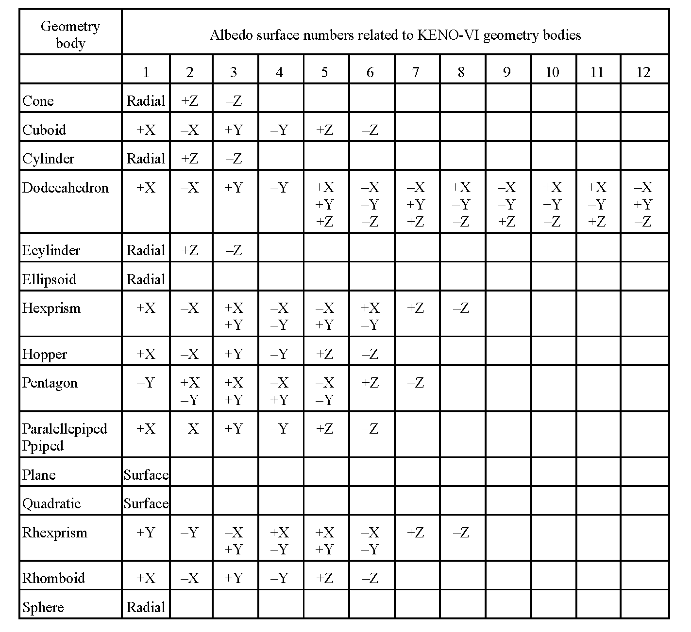 |
| 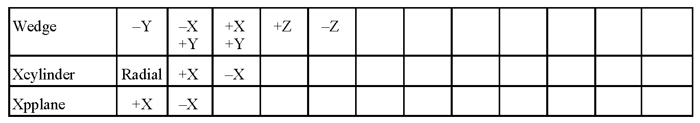 |
| 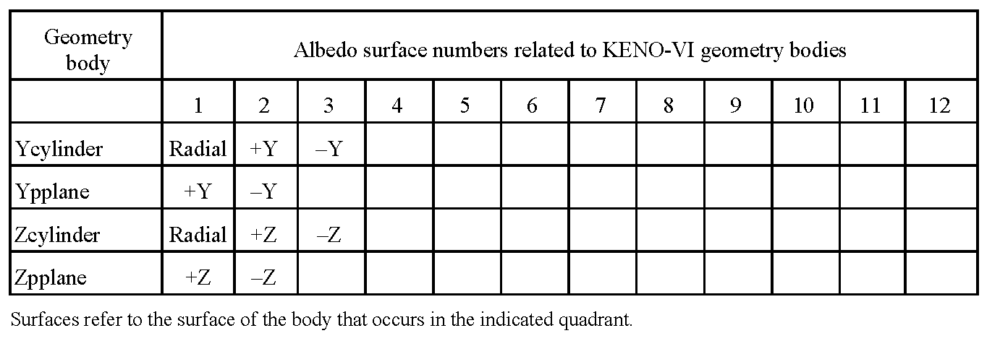 |
DP0H2O DPOH2O DP0 DPO |
12 in. (30.48 cm) double P0 water differential albedo with 4 incident angles |
H2O WATER |
12 in. (30.48 cm) water differential albedo with 4 incident angles |
PARAFFIN PARA WAX |
12 in. (30.48 cm) paraffin differential albedo with 4 incident angles |
CARBON GRAPHITE C |
78.74 in. (200.00 cm) carbon differential albedo with 4 incident angles |
ETHYLENE POLY CH2 |
12 in. (30.48 cm) polyethylene differential albedo with 4 incident angles |
CONC-4 CON4 CONC4 |
4 in. (10.16 cm) concrete differential albedo with 4 incident angles |
CONC-8 CON8 CONC8 |
8 in. (20.32 cm) concrete differential albedo with 4 incident angles |
CONC-12 CON12 CONC12 |
12 in. (30.48 cm) concrete differential albedo with 4 incident angles |
CONC-16 CON16 CONC16 |
16 in. (40.64 cm) concrete differential albedo with 4 incident angles |
CONC-24 CON24 CONC24 |
24 in. (60.96 cm) concrete differential albedo with 4 incident angles |
VACUUM VOID |
Vacuum condition |
SPECULAR MIRROR REFLECT |
Mirror image reflection |
PERIODIC |
Periodic boundary condition |
WHITE |
White boundary condition |
* Material-specific albedos may not be used in continuous energymode |
|
The BODY and SURFACE keywords are unique to KENO-VI. The face code BODY= refers to the body label in global unit input. For example, assume the GLOBAL UNIT boundary record in a KENO-VI input consisted of the following: BOUNDARY 10 −30 20. In this case BODY=10 would refer to the geometry record labeled 10, BODY=20 would refer to the geometry record labeled 20, and BODY=30 would refer to the geometry record labeled 30. All surface numbers following the BODY keyword apply to that body. The default value of BODY is the first geometry label listed in the GLOBAL UNIT boundary record.
All the face codes, listed in the first part of Table 47, except BODY= and SURFACE(ii)= were intended to apply only to cuboids (KENO V.a). However, when used with non-cuboidal surfaces (KENO-VI) they will fill in the first six surface positions of a body in the following order, +X, −X, +Y, −Y, +Z, −Z. The ALL face code will apply the listed boundary conditions to all surfaces of the body currently being considered.
Albedo boundary conditions may be entered on each GLOBAL UNIT boundary surface multiple times. The boundary condition that applies to the surface is the last one entered. If no boundary data are entered or if no albedo boundary condition is applied to a GLOBAL UNIT boundary surface, then the boundary surface is assumed to have a void or vacuum boundary condition. Any CHORDed surfaces that are GLOBAL UNIT boundaries will use the default (void) boundary condition, and it cannot be changed. This restriction may need to be considered when building the geometry of the GLOBAL UNIT.
- Example:
Use a 24 in. concrete albedo boundary condition on the −Z face of a problem with a cuboidal boundary and use mirror image reflection on the +X and −X faces of the cuboid to represent an infinite linear array on a 2 ft. thick concrete pad.
READ BOUNDS −ZB=CON24 XFC=MIRROR END BOUNDS
- Example:
Use a 24 in. concrete albedo boundary condition on the −Z face of a problem with a hexagonal boundary, and use mirror image reflection on all side faces of the hexprism to represent an infinite planar array on a 2 ft. thick concrete pad.
READ BOUNDS
SURFACE(1)=MIRROR SURFACE(2)=MIRROR SURFACE(3)=MIRROR
SURFACE(4)=MIRROR SURFACE(5)=MIRROR SURFACE(6)=MIRROR
SURFACE(7)=VACUUM SURFACE(8)=CONC24
END BOUNDS
- Example:
The outer boundary of the global unit consists of a cuboid (body label 10) and a sphere (body label 20). The sphere is large enough to cut the corners of the cuboid leaving most of the cuboid intact. Use a 24 in. concrete albedo boundary condition on the −Z face of the cuboid to represent a 2 ft. thick concrete pad. Use the DP0H2O on the other surfaces to represent an infinite water reflector.
READ BOUNDS
BODY=10 ALL=DP0H2O −ZB=CON24
BODY=20 SURFACE(1)=DP0H2O
END BOUNDS
Warning
The user should thoroughly understand material-specific albedos (e.g., DP0H2O, CON24, etc.) before attempting to use these reflectors. Missapplication of these problem-specific albedo data can cause the code to produce incorrect results without obvious symptoms.**
Biasing or weighting data¶
The biasing data block is used (in only multigroup mode) to define the weight that is given to a neutron surviving Russian roulette. The average weight of a neutron that survives Russian roulette, wtavg, is defaulted to dwtav (WTA= in the parameter data [see Title and parameter data]) for all BIAS IDs and can be overridden by entering biasing information.
The biasing_information is used to relate a BIAS ID to the desired energy-dependent values of wtavg. This concept is similar to the way the MIXTURE ID, mat, is related to the macroscopic cross section data.
The weighting functions used in KENO are energy-dependent values of wtavg that are applicable over a given thickness interval of a material. For example, the weighting function for water is composed of sets of energy-dependent values of wtavg for 11 intervals, each interval being 3 cm thick. The first set of wtavg’s is for the 0–3 cm interval of water, the second set of wtavg’s is for the 3–6 cm interval of water, etc. The eleventh set of wtavg’s is for the 30–33 cm interval of water.
To input biasing information, a BIAS ID must be assigned to correspond to a set of wtavg. Biasing data can specify a MATERIAL ID from the existing KENO V.a weighting library or from the AUXILIARY DATA input. The materials available from the KENO weighting library are listed in Table 49.
The biasing_information is entered in one of the following two forms. The first set is said to input the CORRELATION DATA, while the second form is said to input the AUXILIARY DATA.
READ BIAS ID=m ib ie END BIAS
or
READ BIAS WT[S]=wttitl id s t1 i1 g1 w1,1 … w1,i1xg1 … ts is gs ws,1 … ws,isxgs END BIAS
ID= specifies that CORRELATION DATA will be entered next.
WT= or WTS= specifies that AUXILIARY DATA will be entered next.
- m
is the identification (material ID) for the material whose weighting function is to be used. A material ID can be chosen from the existing KENO weighting library (Table 49) or from the auxiliary data input using the second form of the BIAS block as described later. If a material ID appears in both the KENO weighting library and the auxiliary data, the weights from the auxiliary data will be used.
- ib
is the bias ID of the weighting function for the first interval of material m. The geometry record having the bias ID equal to ib will use the group-dependent weights from the first interval of material m.
- ie
is the bias ID of the group-dependent weights from the (ie − ib + 1)th interval of material m.
- wttitl
is an arbitrary title name (12 characters maximum), such as CONCRETE, WATER, SPECIALH2O, etc., to identify the material for which the user is entering data. Embedded blanks are not allowed.
- id
is an identification number (material ID). The value is arbitrary. However, if the data are to be utilized in the problem, this ID must also be used at least once in the first form of the BIAS block.
- s
is the number of sets of group structures for which weights will be read for this ID.
- t1… ts
are s thicknesses of each increment for which weights will be read for this ID.
- i1… is
are s numbers of increments for which weights will be read for this ID.
- g1… gs
are s numbers of energy groups for which weights will be read.
- w1,i1xg1… ws,isxgs
are s sets of weights, each set containing a number of weights equal to the product of number of increments times the number of groups for that set. The group index varies the fastest.
Material |
Material ID |
Group structure for which weights are available |
Incrementa thickness |
Total number of increments available |
Concrete |
301 |
27 28 56 200 238 252 |
5 5 5 5 5 5 |
20 20 20 20 20 20 |
Paraffin |
400 |
27 28 56 200 238 252 |
3 3 3 3 3 3 |
10 10 10 10 10 10 |
Water |
500 |
27 28 56 200 238 252 |
3 3 3 3 3 3 |
10 10 10 10 10 10 |
Graphite |
6100 |
27 28 56 200 238 252 |
20 20 20 20 20 20 |
10 10 10 10 10 10 |
aGroup-dependent weight averages are supplied for each increment of the specified incremental thickness (i.e., for any given material) the first ngp (number of energy groups) weights apply to the first increment of the thickness specified here, the next ngp weights apply to the next increment of that thickness, etc CAUTION–If bias IDs defined in the weighting information data are used in the geometry, the region thickness should be consistent with the incremental thickness of the weighting data in order to avoid overbiasing or underbiasing. |
||||
Warning
The user should thoroughly understand weighted tracking before attempting to generate and use auxiliary data for biasing. Incorrect weighting can cause the code to produce incorrect results without obvious symptoms.
Caution
1. Each set of AUXILIARY or CORRELATION data must be completely described in conjunction with its keyword. Complete sets of these data can be interspersed in an arbitrary order but data within each set must be entered in the specified order.
2. AUXILIARY DATA: If the same m is specified in more than one set of data, the last set having the group structure used in the problem is the set that will be utilized. When AUXILIARY DATA are entered, CORRELATION DATA must also be entered in order to use the AUXILIARY DATA.
3. CORRELATION DATA: If biasing data define the same bias ID (from the geometry data) more than once, the value that is entered last supersedes previous entries. Be well aware that multiple definitions for the same bias ID can cause erroneous answers due to overbiasing.
Bias data may not be used in continuous energy mode.
Examples
Use the first form of the BIAS block to utilize the water biasing factors in bias IDs 2 through 11. From Table 49, water has material ID m=500 and has bias parameters for 10 intervals that are each 3 cm thick.
READ BIAS ID=500 2 11 END BIAS
Use the second form of the BIAS block to specify biasing factors for SPECIALWATER to be used in bias IDs 6 and 7. The SPECIALWATER biasing factors have a value of 0.69 for BIAS ID 6 and 0.86 for bias ID 7 in each energy group. Sixteen-group cross sections are being used. Each weighting region is 3.048 cm thick. The material ID is arbitrarily chosen to be 510. Note that the first form of the BIAS block must be entered to allow the second form of the BIAS block to be used for BIAS IDs 6 and 7.
READ BIAS WT=SPECIALWATER 510 1 3.048 2 16 16*0.69 16*0.86 ID=510 6 7 END BIAS
An example of multiple definitions for the same bias ID follows:
READ BIAS ID=400 2 7 ID=500 5 7 END BIAS .
The data for paraffin (ID=400) will be used for bias IDs 2, 3, and 4, and the data for water (ID=500) will be used for bias IDs 5, 6, and 7. The paraffin data for bias IDs 5, 6, and 7 have been overwritten by water data.
Multiple definitions for the same bias ID are not necessarily incorrect, but the user should be cautious about using multiple definitions and should ensure that the desired biasing or weighting functions are used in the desired geometry regions.
An example of how the bias ID relates to the energy-dependent values of weights is given below.
Assume that a paraffin reflector is to be used, and it is desirable to use the weighting function from the KENO weighting library to minimize the running time for the problem. Also assume that these weighting functions are to be used in the volumes defined in the geometry records having the bias ID (defined on a shape or MEDIA card for KENO V.a and KENO-VI, respectively) equal to 6, 7, 8, and 9. Correlation data are then entered and auxiliary data will not be entered.
The biasing data would be:
READ BIAS ID=400 6 9 END BIAS.
The results of these data are
(1) the group-dependent weights for the 0–3 cm interval of paraffin will be used in the volume defined by the geometry region having bias ID= 6.
(2) the group-dependent weights for the 3–6 cm interval of paraffin will be used in the volume defined by the geometry region having bias ID= 7.
(3) the group-dependent weights for the 6–9 cm interval of paraffin will be used in the volume defined by the geometry region having bias ID= 8.
(4) the group-dependent weights for the 9–12 cm interval of paraffin will be used in the volume defined by the geometry region having bias ID= 9.
Start data¶
Special start options are available for controlling the initial neutron distribution. The default starting distribution for an array is flat over the overall array dimensions, in fissile material only. The default starting distribution for a single unit is flat over the system, in fissile material only. See Table 50 for the starting distributions available in KENO. The syntax for the START block is:
READ START p1 …pN END START
p1 …pN are N initializations for the parameters listed below.
The starting information that can be entered is given below. Enter only the data necessary to describe the desired starting distribution.
- NST = ntypst
start type, default = 0 Table 50 lists the available options under the heading, “Start type.”
- TFX = tfx
the X coordinate of the point at which neutrons are to be started. Default = 0.0. Use for start types 3, 4, and 6.
- TFY = tfy
the Y coordinate of the point at which neutrons are to be started. Default = 0.0. Use for start types 3, 4, and 6.
- TFZ = tfz
the Z coordinate of the point at which neutrons are to be started. Default = 0.0. Use for start types 3, 4, and 6.
- NXS = nbxs
the x index of the unit’s position in the global array. Default = 0. Use for start types 2, 3, and 6.
- NYS = nbys
the y index of the unit’s position in the global array. Default = 0. Use for start types 2, 3, and 6.
- NZS = nbzs
the z index of the unit’s position in the global array. Default = 0. Use for start types 2, 3, and 6.
- KFS = kfis
the mixture whose fission spectrum is to be used for starting neutrons that are not in a fissionable medium. Defaulted to the fissionable mixture having the smallest mixture number. Available for start types 3, 4, and 6.
- LNU = lfin
the final neutron to be started at a point. Default = 0. Each lfin should be greater than zero and less than or equal to NPG. Each successive lfin should be greater than the previous one. Use for start types 6 and 8.
- NBX = nboxst
the unit in which neutrons will be started. Default = 0. Use for start types 4 and 5.
- FCT = fract
the fraction of neutrons that will be started as a spike. Default = 0. Use for start type 2.
- XSM = xsm
the −X dimension of the cuboid in which the neutron will be started. For an array problem, XSM is defaulted to the minimum X coordinate of the global array. If the reflector key RFL is YES, then and the outer reflector region is a cube or cuboid, XSM is defaulted to the minimum X coordinate of the outer reflector region. If RFL is YES and the outer region of the reflector is not a cube or cuboid, then XSM must be entered in the start data and must fit inside the outer reflector region. Available for start types 0, 1, 2, and 8.
- XSP = xsp
the +X dimension of the cuboid in which the neutrons will be started. For an array problem, XSP is defaulted to the maximum X coordinate of the global array. If the reflector key RFL is YES, then and the outer reflector region is a cube or cuboid, XSP is defaulted to the maximum X coordinate of the outer reflector region. If RFL is YES and the outer region of the reflector is not a cube or cuboid, then XSP must be entered in the data and must fit inside the outer reflector region. Available for start types 0, 1, 2, and 8.
- YSM = ysm
the −Y dimension of the cuboid in which the neutron will be started. For an array problem, YSM is defaulted to the minimum Y coordinate of the global array. If the reflector key RFL is YES, then YSM is defaulted to the minimum Y coordinate of the outer reflector region, provided that region is a cube or cuboid. If RFL is YES and the outer region of the reflector is not a cube or cuboid, then YSM must be entered in the start data and must fit inside the outer reflector region. Available for start types 0, 1, 2, and 8.
- YSP = ysp
the +Y dimension of the cuboid in which the neutrons will be started. For an array problem, YSP is defaulted to the maximum Y coordinate of the global array. If the reflector key RFL is YES, then YSP is defaulted to the maximum Y coordinate of the outer reflector region, provided that region is a cube or cuboid. If RFL is YES and the outer region of the reflector is not a cube or cuboid, then YSP must be entered in the start data and must fit inside the outer reflector region. Available for start types 0, 1, 2, and 8.
- ZSM = zsm
the −Z dimension of the cuboid in which the neutrons will be started. For an array problem, ZSM is defaulted to the minimum Z coordinate of the global array. If the reflector key RFL is YES, then ZSM is defaulted to the minimum Z coordinate of the outer reflector region, provided that region is a cube or cuboid. If RFL is YES and the outer region of the reflector is not a cube or cuboid, then ZSM must be entered in the start data and must fit inside the outer reflector region. Available for start types 0, 1, 2, and 8.
- ZSP = zsp
the +Z dimension of the cuboid in which the neutrons will be started. For an array problem, ZSP is defaulted to the maximum Z coordinate of the global array. If the reflector key RFL is YES, then ZSP is defaulted to the maximum Z coordinate of the outer reflector region, provided that region is a cube or cuboid. If RFL is YES and the outer region of the reflector is not a cube or cuboid, then ZSP must be entered in the start data and must fit inside the outer reflector region. Available for start types 0, 1, 2, and 8.
- RFL = rflkey
the reflector key. If the reflector key is YES, then neutrons can be started in the reflector. If it is NO, then all the neutrons will be started in the array. Enter YES or NO. Default = NO. Available for start types 0, 1, and 2.
- PS6 = lprt6
the key for printing start type 6 input data. If the key is YES, then start type 6 data are printed. If it is NO, then start type 6 data are not printed. Enter YES or NO. Default = NO. Available for start type 6.
- PSP = lpstp
the key for printing the neutron starting points using the tracking format. If the key is YES, then print the neutron starting points. If it is NO, then do not print the starting points. Enter YES or NO. Default = NO. Available for all start types.
- RDU = rdu
the file from which ASCII start data are to be read for start type 6.
- WS6 = ws6
the file to which ASCII start data are written.
- MSS = filename.msl
the file from which ASCII start data are to be read. filename may include a valid pathname. Available for start type 9.
Start type |
Required data |
Optional data |
Starting distribution |
0 |
None |
NST XSM XSP YSM YSP ZSM ZSP RFL PSP |
Uniform throughout fissile material within the volume defined by (1) the outer region of a single unit, (2) the outer region of a reflected array having the reflector key set true, (3) the boundary of the global array, or (4) a cuboid specified by XSM, XSP, YSM, YSP, ZSM, and ZSP. |
1 |
NST |
XSM XSP YSM YSP ZSM ZSP RFL PSP |
The starting points are chosen according to a cosine distribution throughout the volume of a cuboid defined by XSM, XSP, YSM, YSP, ZSM, and ZSP. Points that are not in fissile material are discarded. |
2 |
NST NXS NYS NZS FCT |
XSM XSP YSM YSP ZSM ZSP RFL PSP |
An arbitrary fraction (FCT) of neutrons are started uniformly in the unit located at position NXS, NYS, NZS in the global array. The remainder of the neutrons is started in fissile material, from points chosen from a cosine distribution throughout the volume of a cuboid defined by XSM, XSP, YSM, YSP, ZSM, ZSP. |
3 |
NST TFX TFY TFZ NXS NYS NZS |
KFS PSP |
All neutrons are started at position TFX, TFY, TFZ within the unit located at position NXS, NYS, NZS in the global array. |
4 |
NST TFX TFY TFZ NBX |
KFS PSP |
All neutrons are started at position TFX, TFY, TFZ within units NBX in the global array. |
Starting distributions available in KENO (continued) |
|||
Start type |
Required data |
Optional data |
Starting distribution |
5 |
NST NBX |
PSP |
Neutrons are started uniformly in fissile material in units NBX in the global array. |
6 |
NST TFX TFY TFZ LNUa |
NXS NYS NZS KFS PS6 PSP RDU |
The starting distribution is arbitrarily input. LNU is the final neutron to be started at a point TFX, TFY, TFZ relative to the global coordinate system or at a point TFX, TFY, TFZ, relative to the unit located at the global array position NXS, NYS, NZS. |
7 |
XSM XSP YSM YSP ZSM ZSP |
The starting points are chosen according to a flat distribution in the X- and Y-dimensions and a (1.0 − cos(z))2 distribution in the Z-dimension throughout the volume of a cuboid defined by XSM, XSP, YSM, YSP, ZSM, and ZSP. Points that are not in fissile material are discarded. |
|
8 |
NST ZSM ZSP FCT |
XSM XSP YSM YSP |
Neutrons are started with flat distribution in X and Y, and a segmented distribution in Z, with the X-Y limits defined by XSM, XSP, YSM, YSP and the relative fraction in ZSP-ZSM defined by FCT. FCT must be the last thing entered for each segment. |
9 |
NST MSS |
Mesh source from Sourcerer. The starting distribution is read from a previously created mesh source file declared with MSS=filename .msl, where filename may include a valid pathname. See Sourcerer section of SCALE manual for more details. |
|
a When entering data for start 6, LNU must be the last entry for each set of data and the LNU in each successive set of data must be larger than the previous value of LNU. A set of data consists of required and optional data. The last LNU entered should be equal to the number per generation (parameter NPG= in the parameter input, Title and parameter data). |
Extra 1-D XSECS IDs data¶
Extra 1-D cross section IDs are not required. They are allowed as input in order to simplify future modifications to calculate reaction rates, etc., as well as for compatibility with other SCALE codes. The syntax for the extra 1-D cross section data block is:
READ X1DS NEUTRON i1 …ix1d END X1DS
- NEUTRON
is a keyword to indicate that the following ID identifies a neutron interaction.
- i1 … ix1d
X1D 1-D identification numbers or keyword identifiers for the 1-D cross section to be used. These cross sections must be available on the mixture cross section library. X1D entries are expected to be read (see integer PARAMETER data).
Mixing table data¶
A cross section mixing table must be entered if KENO is being run stand alone and a Monte Carlo cross section format library is not being used in the multigroup mode, or KENO is being run stand alone in the continuous energy mode. If the parameter LIB= (Sect. 8.1.2.3) is entered, then mixing table data must be entered. A cross section mixing table is entered using the following syntax:
READ MIXT p1 … pN END MIXT
- p1 … pN
are N parameters that might or might not be keyworded.
The possible parameters that can be used in a MIXT block are described below.
- SCT = nsct
is used to input the number of scattering angles and only applies in multigroup mode. nsct is the number of discrete scattering angles, default = 1. The number of scattering angles specifies the number of discrete scattering angles to be used for the cross sections. If SCT is not set (i.e., SCT= −1), then the number of scattering angles is determined from the cross section library specified. The number of scattering angles defaults to (ncoef+1)/2, where ncoef is the largest Legendre polynomial order used in the problem. It needs to be entered only once for a problem. If more than one value is entered, the last one is used for the problem. For assistance in determining the number of discrete scattering angles for the cross sections, see Number of scattering angles.
- EPS = pbxs
is used to enter the cross section message cutoff value, and it only applies in multigroup mode. pbxs is the value of the P0 cross section for each transfer, above which generated warning messages will be printed, default = 3 × 10−5. The primary purpose of entering this cutoff value is to suppress printing these messages when they are generated during cross section processing. For assistance in determining a value for EPS, see Cross section message cutoff.
- MIX = mix
is used to input the identification number of the mixture being described. mix defines the mixture being described.
- NCM = ncmx
is used to input the nuclide mixture IDs to be used for this mixture. ncmx defines the nuclide mixture ID. When MIX=mix is read, ncmx is defaulted to mix also. Then, as long as all the nuclides that need to be mixed into mix already have mix specified as their nuclide mixture (frequently the case when using SCALE), the user does not need to specify NCM. The most usual case where NCM must be specified is when the mixtures were specified as a different mixture number when they were created in SCALE as compared to the mixture number used for them in KENO. Cell homogenized mixtures also need NCM specified.
- TMP|TEM = temperature
is used to input the desired temperature of the CE cross section data.
- nucl
is the nuclide ID number from the AMPX working format cross section library.
- XS=fname
is used to input the optional continuous energy cross section filename to override the default cross sections. fname is the name of the file.
- dens
is the number density (atoms/b-cm) associated with nuclide ID number nucl.
The sequence “nucl NCM=ncmx [XS=fname] dens” may be repeated until the mixture defined by MIX=mix has been completely described.
The sequence “MIX = mix NCM = ncmx TMP|TEM = temperature nucl NCM=ncmx [XS=fname] dens” may be repeated until all the mixtures have been described.
Note
If a given nuclide ID is entered more than once in the same mixture, then the number densities for that nuclide are summed.
If a mixture number is used as a nuclide ID, then it is treated as a nuclide and the number density associated with it is used as a density modifier. (If the density is entered as 1, then the mixture is mixed in at full density. If it is entered as 0.5, the mixture is mixed in at one half of its full density.) A Monte Carlo formatted cross section library is generated on the unit defined by the parameter XSC=. If this data set is saved, subsequent cases can utilize these mixtures without remixing.
The entry XS=fname is optional. If a nuclide is entered more than once in a mixture and this entry is specified, then they must be the same (i.e., cannot use more than one continuous energy cross section sets for a nuclide in a given mixture). Different mixtures may have the same nuclide with different continuous energy cross section sets.
Plot data¶
Plots of slices specified through the geometry can be generated and displayed (1) as character plots using alphanumeric characters to represent mixture numbers, unit numbers or bias ID numbers or (2) as color plots which generate a PNG file using colors to represent mixture numbers, unit numbers or bias ID numbers. Color plots require an independent program to display the PNG file to a PC or workstation monitor or to convert the file to be displayed using a plotting device. The keyword SCR= is used to control the plot display method. SCR=YES, the default value, uses the color plot display method. SCR=NO uses the character plot display method. The value of SCR determines the plot display method for all the plots specified in a problem. If SCR= is entered more than once, the last entry determines the plot display method. In other words, all plots generated by a problem will be either character plots or color plots.
The plot data can include the data for any or all types of plots. A plot by mixture number is the default. The kind of plot is defined by the parameter PIC=. Character plots are printed after the volumes are printed and before the final preparations for tracking are completed. Plot data are not required for a problem, but theyb can be used to verify the problem description. The actual plotting of the picture can be suppressed by entering PLT= NO in the parameter data or plot data. This allows plot data to be kept in the problem input for reference purposes without actually plotting the picture(s). Entering a value for PLT in the plot data will override any value entered in the parameter data. However, if a problem is restarted, the value of PLT from the parameter data is used. The upper left and lower right coordinates of the plot must be specified relative to the origin of the problem. See Color plots for a discussion of plot origins and plot data.
Enter the plot data using the following syntax:
READ PLOT p1 … pN END PLOT
- p1 … pN
are N parameters entered using keywords followed by the appropriate data. The plot title and the plot character string must be contained within delimiters. Enter as many picture parameters as necessary to describe the plot. Multiple sets of plot data can be entered. The parameter input for each plot is terminated by a labeled or unlabeled END. The labeled END cannot use the word PLOT as the first four characters of the label. For example, END PLT1 is a valid label, but END PLOT1 is not. If an unlabeled END is used, it cannot start in column 1.
The possible parameters that can be used in a PLOT block are described below.
- TTL= delim ptitl delim
Enter a one-character delimiter delim to signal the beginning of the title (132 characters maximum). The title is terminated when delim is encountered the second time. Acceptable delimiters include “ , ‘ , * , ^ , or !. Default = title of the KENO case.
PIC= wrd The plot type, wrd, is followed by one or more blanks and must be one of the keywords listed below. The plot type is initialized to MAT; the default is the value from the previous plot.
MAT
MIX[T[URE]]
MEDI[A]
These keywords will cause the plot to represent the mixture numbers used in the specified geometry slice.
UNT
UNIT[TYPE]
These keywords will cause the plot to represent the units used in the specified geometry slice. In the legend of the color plot, the material number actually refers to the units.
IMP
BIAS[ID]
WTS
WEIG[HTS]
WGT[S]
These keywords will cause the plot to represent the bias ID numbers used in the specified geometry slice. In the legend of the color plot, the material number actually refers to the bias ID numbers.
- TYP=
Enter the type desired. XY for an X-Y plot XZ for an X-Z plot YZ for a Y-Z plot Direction cosines do not need to be entered if TYP is entered.
- Plot coordinates
Enter values for the upper left and lower right coordinates of the plot as described below. Data must be entered for all nonzero coordinates unless all six values from the previous plot are to be used.
- Upper left coordinates
Enter the X, Y, and Z coordinates of the upper left-hand corner of the plot.
- XUL=xul
is used to enter the X coordinate of the upper left-hand corner of the plot. Default = value from previous plot; initialized to zero if any other coordinates are entered.
- YUL= yul
is used to enter the Y coordinate of the upper left-hand corner of the plot. Default = value from previous plot; initialized to zero if any other coordinates are entered.
- ZUL= zul
is used to enter the Z coordinate of the upper left-hand corner of the plot. Default = value from previous plot; initialized to zero if any other coordinates are entered.
- Lower right coordinates
Enter the X, Y, and Z coordinates of the lower right-hand corner of the plot.
- XLR= xlr
is used to enter the X coordinate of the lower right-hand corner of the plot. Default = value from previous plot; initialized to zero if any other coordinates are entered.
- YLR= ylr
is used to enter the Y coordinate of the lower right-hand corner of the plot. Default = value from previous plot; initialized to zero if any other coordinates are entered.
- ZLR= zlr
is used to enter the Z coordinate of the lower right-hand corner of the plot. Default = value from previous plot; initialized to zero if any other coordinates are entered.
- Direction cosines across the plot
Enter direction numbers proportional to the direction cosines for the AX axis of the plot. The AX axis is from left to right across the plot. If any one of the AX direction cosines is entered, the other two are set to zero. The direction cosines are normalized by the code.
UAX= uax is used to enter the X component of the direction cosines for the AX axis of the plot. Default = value from previous plot; initialized to zero if any other direction cosines are entered.
VAX= vax is used to enter the Y component of the direction cosines for the AX axis of the plot. Default = value from previous plot; initialized to zero if any other direction cosines are entered.
WAX= wax is used to enter the Z component of the direction cosines for the AX axis of the plot. Default = value from previous plot; initialized to zero if any other direction cosines are entered.
- Direction cosines down the plot
Enter direction numbers proportional to the direction cosines for the DN axis of the plot. The DN axis is from top to bottom down the plot. If any one of the DN direction cosines is entered, the other two are set to zero. The direction cosines are normalized by the code.
UDN= udn is used to enter the X component of the direction cosines for the DN axis of the plot. Default = value from previous plot; initialized to zero if any other direction cosines are entered.
VDN= vdn is used to enter the Y component of the direction cosines for the DN axis of the plot. Default = value from previous plot; initialized to zero if any other direction cosines are entered.
WDN= wdn is used to enter the Z component of the direction cosines for the DN axis of the plot. Default = value from previous plot; initialized to zero if any other direction cosines are entered.
- Scaling parameters
Enter one or more scaling parameters to define the size of the plot.
Note
If any of the scaling parameters are entered for a plot, the value of those that were not entered is recalculated. If none of the scaling parameters are specified for a plot, the values from the previous plot are used.
- DLX= dlx
is used to input the horizontal spacing between points on the plot. Default = value from previous plot; initialized to zero if NAX or NDN is entered.
- DLD= dld
is used to input the vertical spacing between points on the plot. Default = value from previous plot; initialized to zero if NAX or NDN is entered.
Note
If either DLX or DLD is entered, the code will calculate the value of the other. If both are entered, the plot may be distorted.
- NAX= nax
is used to input the number of intervals to be printed across the plot. Default = value from previous plot; initialized to zero if DLX or DLD is entered.
- NDN= ndn
is used to input the number of intervals to be printed down the plot. Default = value from previous plot; initialized to zero if DLX or DLD is entered.
Global scaling parameter
- LPI= lpi
is used to input a scaling factor used to control the horizontal to vertical proportionality of a plot or plots. SCALE 4.3 and later versions allow lpi to be input as a floating point number. For an undistorted character plot, lpi should be specified as the number of characters down the page that occupy the same distance as ten characters across the page. For an undistorted color plot, lpi should be entered as ten times the ratio of the vertical pixel dimension to the horizontal pixel dimension. The default value of lpi is 8.0 for a character plot and 10.0 for a color plot. lpi=10 will usually display an undistorted color plot.
The value entered for lpi applies to all plot data following it until a new value of lpi is specified.
Note
Plot data must include the specification of the upper left corner of the plot and the direction cosines across and down the plot.
Additional data required to generate a plot are one of the following combinations:
1. the lower right corner of the plot, the global scaling parameter, LPI, and one of the scaling parameters (DLX, DLD, NAX, NDN).
2. the lower right corner of the plot, one of the scaling parameters related to the horizontal specifications of the plot (DLX or NAX), and one of the scaling parameters related to the vertical specification of the plot (DLD or NDN). LPI, even if specified will not be used.
3. NAX and NDN and any two of LPI, DLX, and DLD. If LPI, DLX, and DLD are all specified, LPI is not used.
The data required to generate a plot may be supplied from (1) defaulted values, (2) data from the previous plot, or (3) data that are specifically entered for the current plot.
- Miscellaneous parameters
Enter miscellaneous parameters
- RUN= run
is used to determine if the problem is executed or is terminated after data checking. A value of YES for run means the problem will be executed if all the data were acceptable. A value of NO specifies the problem will be terminated after data checking is completed. The default value of RUN is YES.
- PLT= plt
is used to specify if a plot is to be made. A value of YES for plt specifies that a plot is to be made. If plot data are entered, PLT is defaulted to YES.
Note
The parameters RUN and PLT can also be entered in the PARAMETER data. See Title and parameter data. It is recommended that these parameters be entered only in the parameter data block in order to ensure that the data printed in the “Logical Parameters” table are what is actually performed.
- SCR= src
This is used to determine the plot display method. The plot display method is specified by entering either YES or NO for src. The default value is YES. SCR=YES uses the color plot display method. SCR=NO uses the character plot display method. If SCR is entered more than once in a problem, the last value entered is the one that is used.
- NCH= delim char delim
Enter only if plots are to be made utilizing the character plot display method (SCR=NO). Enter a delimiter (i.e., “ , ‘ , * , ^ , or !) to signal the beginning of character string char. The character string is terminated when the delim character is encountered the second time. Do not use the initial delimiter in the char string, as it will be read as terminating the string. char is a character string with each entry representing a plottable quantity (i.e., media {mixture} number, unit number, or bias ID). These are the characters that will be used in the plot. The first entry represents media, unit, or bias ID zero; the second entry represents the smallest media, unit, or bias ID used in the problem; the third entry represents the next larger media, unit, or bias ID used in the problem; etc. For example, assume PIC=MAT is specified, and 15 mixtures are defined in the mixing table, and the geometry data use only mixtures 3 and 7. By default, a blank will be printed for mixture zero, a 1 will be printed for mixture 3, and a 2 will be printed for mixture 7. If you wish to print a zero for a void (mixture 0), a 3 for mixture 3, and a 7 for mixture 7, enter NCH=‘037’.
The default values of CHAR are the following:
Quantity
0
1
2
3
4
5
6
7
8
9
10
11
12
13
14
15
SYMBOL
1
2
3
4
5
6
7
8
9
A
B
C
D
E
F
Quantity
16
17
18
19
20
21
22
23
24
25
26
27
28
29
30
31
SYMBOL
G
H
I
J
K
L
M
N
O
P
Q
R
S
T
U
V
Quantity
32
33
34
35
36
37
38
39
40
41
42
43
44
45
46
SYMBOL
W
X
Y
Z
‘#’
,
‘$’
‘−’
‘+’
‘)’
‘|’
‘&’
‘>’
‘:’
‘;’
Quantity
47
48
49
50
51
52
53
54
55
56
57
58
SYMBOL
‘⋅’
‘−’
“%”
“*”
“”“
“=”
“!”
“(“
“@”
“<“
“/”
0
- CLR= n1 r*(*n1) g*(*n1) b*(*n1) … nN r*(*nN) g*(*nN) b*(*nN) END COLOR
this entry is used to define the colors to be used by the color plot. It may be entered only if plots are to be made utilizing the color plot display method (SCR=YES). After entering the keyword CLR=, 4 numbers are entered N times. The first number, n1, represents a media (mixture) number, unit number, or bias ID. The next three numbers, whose values can range from 0 through 255, define the red, green, and blue components of the color that will represent this n1 in the plot. The sequence of 4 numbers is repeated until the colors associated with all of the media (mixture) numbers, unit numbers, or bias IDs used in the problem have been defined. The smallest number that can be entered for ni is −1, representing undefined regions in the plot. An ni of 0 represents void regions; ni of 1 represents the smallest media, unit, or bias ID used in the problem; ni of 2 represents the next larger media, unit, or bias ID used in the problem, etc. The color plot definition data are terminated by entering the keywords END COLOR. A total of 256 default colors are provided in Table 51 Two of those colors represent undefined regions, ni=-1*, as black and void regions, and ni=0 as gray. The remaining 254 colors represent the default values for mixtures, bias IDs, or unit numbers used in the problem. If num is entered as −1, the next three numbers define the color that will be used to represent undefined regions of the plot. The default color for undefined regions is black, represented as 0 0 0. If ni is entered as 0, the next three numbers define the color that will represent void regions in the plot. The default color for void is gray, represented as 200 200 200. For example, assume a color plot is to be made for a problem that uses void regions and mixture numbers 1, 3, and 5. By default, the undefined regions (Index −1) will be black; void regions (Index 0) will be gray; the first mixture, mixture 1 (Index 1), will be medium blue; the next larger mixture, mixture 3 (Index 2), will be turquoise2; and the last mixture, mixture 5 (Index 3), will be green2. If these values are acceptable, data do not need to be entered for CLR=. If the user decides to define void to be white (255 255 255), mixture 1 to be red (255 0 0), mixture 3 to be bright blue (0 0 255), and mixture 5 to be green (0 255 0), then the following data could be entered:
CLR=0 255 255 255 1 255 0 0 2 0 0 255 3 0 255 0 END COLOR
In this example, the first number (0) defines the void, and the next three numbers are the red, green, and blue components that combine as the color white. The fifth number (1) represents the smallest mixture number (mixture 1), and the next three numbers are the red, green, and blue components of red. The ninth number (2) represents the next larger mixture number (mixture 3), and the next three numbers are the red, green, and blue components of bright blue. The thirteenth number (3) represents the next larger mixture number (mixture 5), and the next three numbers are the red, green, and blue components of green. The END COLOR terminates the color definition data. Because color data were not entered for ni of −1, undefined regions will be represented by the color black, the default specification from Table 51. The red, green, and blue components of some bright colors are listed below.
Display Color
red
green
blue
black
0
0
0
white
255
255
255
“default void gray”
200
200
200
red
255
0
0
green
0
255
0
brightest blue
0
0
255
yellow
255
255
0
brightest cyan
0
255
255
magenta
255
0
255
The 256 default colors are listed in Table 51.
| 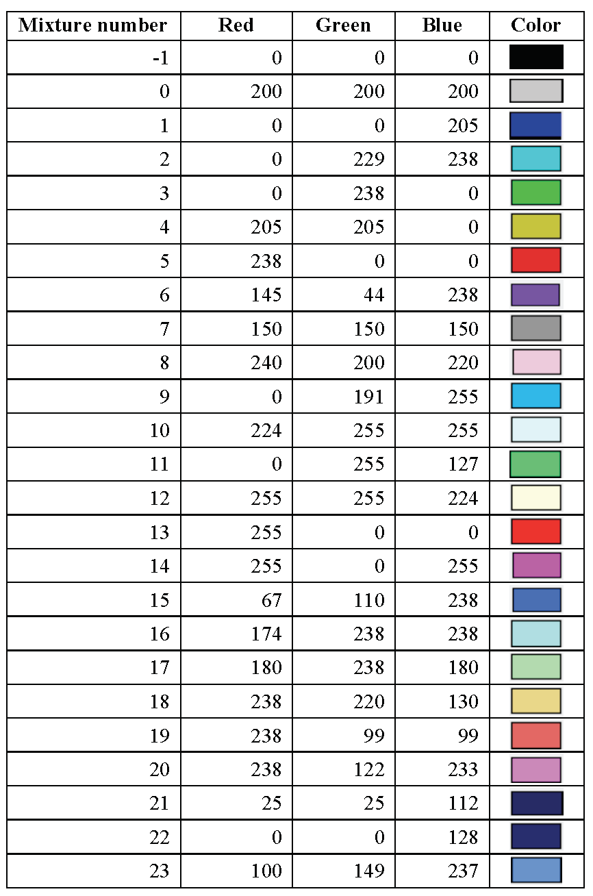 |
{kind=link}
| 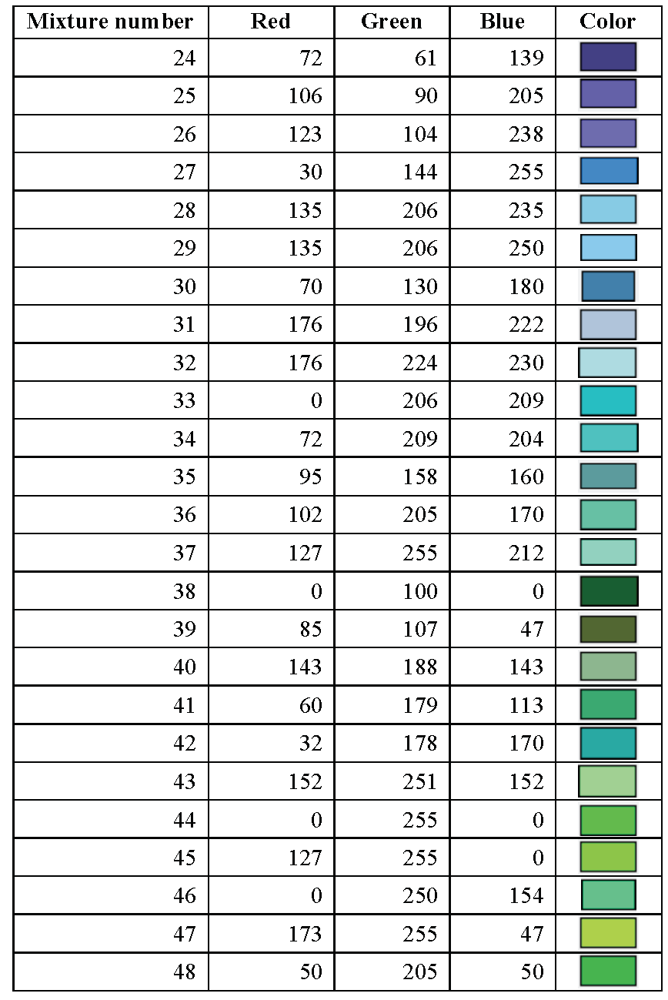 |
{kind=link}
| 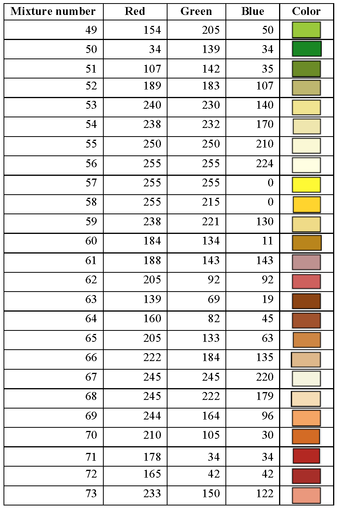 |
{kind=link}
| 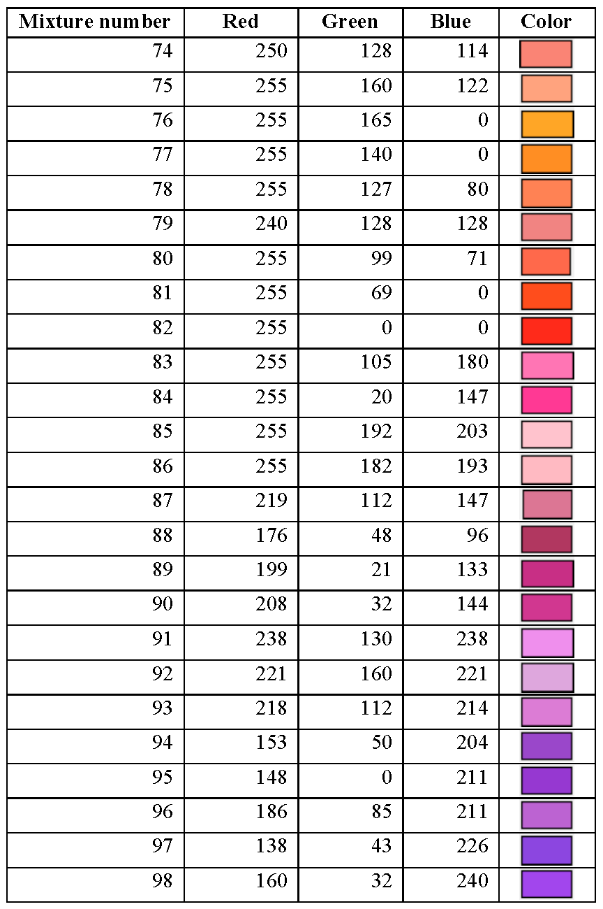 |
{kind=link}
| 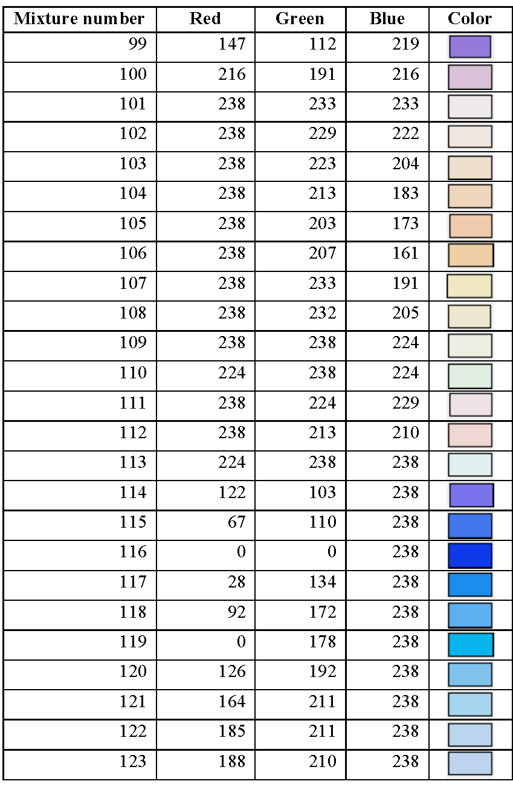 |
{kind=link}
| 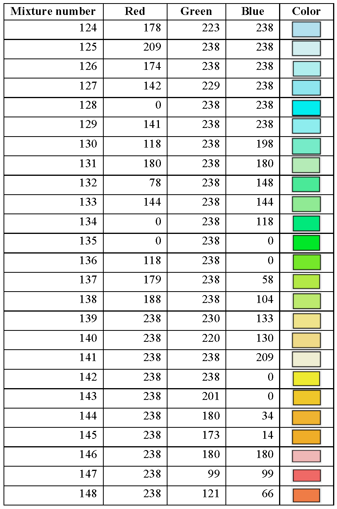 |
{kind=link}
| 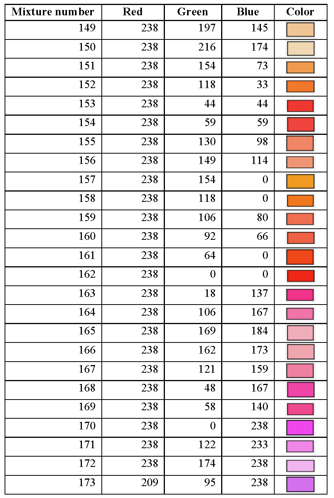 |
{kind=link}
| 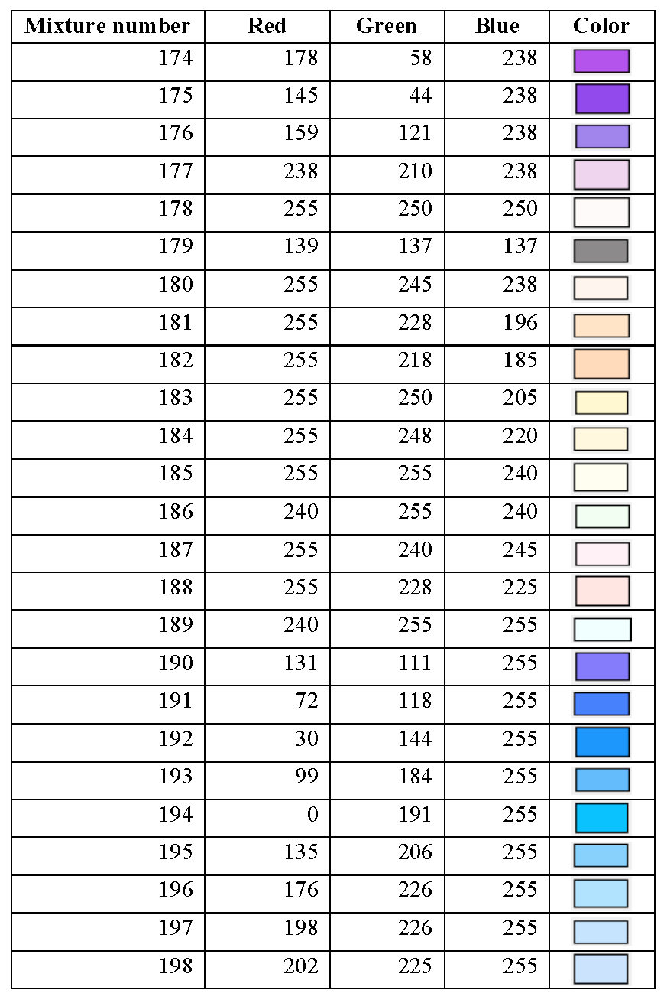 |
{kind=link}
| 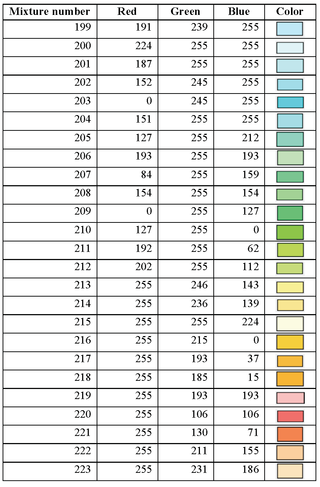 |
{kind=link}
| 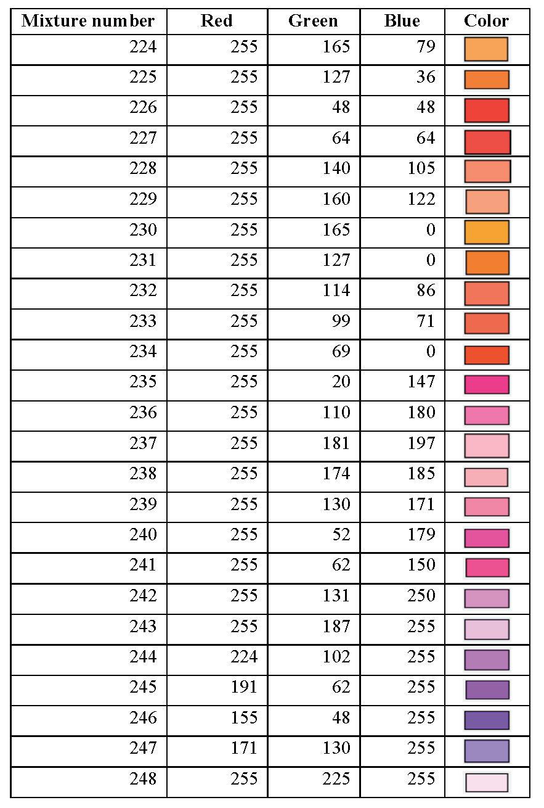 |
{kind=link}
| 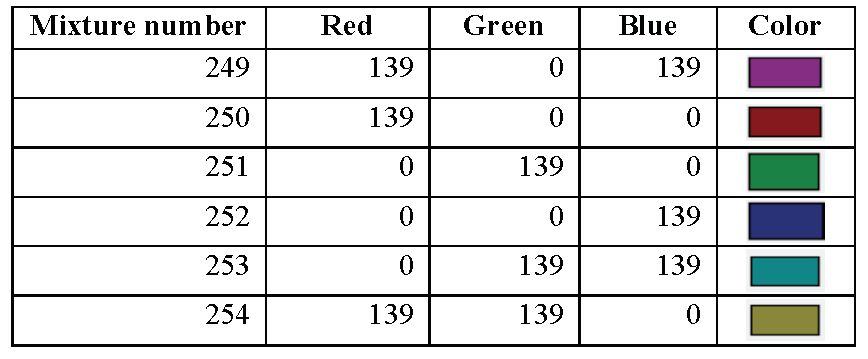 |
{kind=link}
Energy group boundary data¶
Upper energy group boundary data in eV are entered to determine the groups into which the tallies will be collected in the continuous energy mode. For G groups G+1 entries are entered. The last entry is the lower energy boundary of the last group. The values must be in descending order. The parameter NGP is set equal to the number of entries−1. The syntax is:
READ ENERGY u1 …uG uG+1 END ENERGY
- u1 … uG
are the upper energy limits of energy groups 1 … G, respectively.
- uG+1
is the lower energy limit of energy group G.
Example:
READ ENERGY
2e7 1e5 1 1e−5
END ENERGY
Defines a 3-group structure with group 1 (2e+7 eV to 1e+5 eV), group 2 (1e+5 eV to 1 eV), and group 3 (1 eV to 1e−5 eV) and sets NGP=3.
Energy group boundary data are optional. Default values for the energy group boundaries in the calculations are determined as in the following order:
Use energy group boundaries from READ ENERGY block if specified in the input. The number of entries in the READ ENERGY block is NGP+1.
If only NGP is specified (in READ PARAMETER) in the input and NGP is equal to the number of energy groups in one of the SCALE neutron cross section libraries, the energy group structure from that library will be used.
If only NGP is specified (in READ PARAMETER) in the input and NGP is not equal to the number of energy groups in one of the SCALE neutron cross section libraries, NGP equal lethargy bins will be used.
Use SCALE 238 group structure as default, NGP=238.
Volume data¶
If volumes are needed (for calculating fission densities, fluxes, etc.), then the data necessary to determine them are entered. The syntax for this block is:
READ VOLUME p1 … pN END VOLUME
- p1 … pN
are N parameters entered using keywords followed by the appropriate data.
The possible parameters that can be used in a VOLUME block are described below.
- READVOL=vol
used to input the file name (up to 256 characters) of the file from which user-specified volumes are read. This is an optional parameter and only works for KENO-VI. The data are read in sections for each UNIT contained in the problem. First the keyword “UNIT” is read, followed by the UNIT number. For that UNIT the data for each region containing material in the order shown in the input is read as follows: the keyword “MEDIA” is read, followed by the mixture number, followed by the keyword “VOL=”, followed by the total volume for that region. Regions containing ARRAYs and HOLEs are skipped. An example of the data contained in a volume file is given later in this section.
- TYPE=vcalc
used to determine the type of volume calculation. vcalc can have the values:
NONE: (only works in KENO-VI, where it is also the default) No volume calculation, volumes are set to –1.0 (only in KENO-VI).
TRACE: A trapezoidal integration will be performed (only in KENO‑VI).
RANDOM: A Monte Carlo integration will be performed.
- NRAYS=ntotal
the number of intervals used in the trapezoidal integration (default 100,000). Used only with TYPE=TRACE (KENO-VI).
- BATCHES=nloop
the number of batches to be used in the Monte Carlo integration (default 500). Used only with TYPE=RANDOM.
- POINTS=nplp
the number of points per batch used in the Monte Carlo integration (default 1000). Used only with TYPE=RANDOM.
- XP=xp
the plus X face of the encompassing cuboid.
- XM=xm
the minus X face of the encompassing cuboid.
- YP=yp
the plus Y face of the encompassing cuboid.
- YM=ym
the minus Y face of the encompassing cuboid.
- ZP=zp
the plus Z face of the encompassing cuboid.
- ZM=zm
the minus Z face of the encompassing cuboid.
- SAMPLE_DEN=sampleden
the density of sampling points per cm3 per batch. Used only with TYPE=RANDOM.
- IFACE =fname
the face of the enclosing cuboid where the trapezoidal integration will be performed. Enter either XFACE, YFACE, or ZFACE. KENO-VI will integrate over the face with the smallest area by default. This allows specifying a different face. Used only for TYPE=TRACE (KENO-VI).
The volume parameters include specifying the type of calculation to determine the volumes and additional parameters needed for the selected type. In KENO-VI the default type is NONE (i.e., no volume calculation will be performed), and the volumes for regions not containing HOLEs or ARRAYs will be set to -1.0. No other data are needed for this type.
In KENO-VI the volume data may be entered for any or all regions within the geometry data by placing the keyword VOL= followed by the total volume of that region in the problem at the end of the MEDIA card. See Geometry data (Geometry Data) for more details.
For KENO-VI, in the same problem, volumes may be entered using a combination of three methods: (1) in the geometry data using VOL=, (2) read from a volume file, and (3) calculated. The calculated volumes (method 3) are obtained for both the regions, and the meshes are defined by a grid (such as in TSUNAMI runs). As for KENO V.a, the mesh volumes must always be calculated (i.e., there is no method to input the mesh volumes). If volumes are entered or calculated using more than one method, the following hierarchy is used to determine which volume is used for the regions.
Volumes entered as part of a MEDIA card using VOL= are always used.
Volumes read from the volume file are used if that volume for the region was not specified using VOL= following a MEDIA card.
Calculated volumes are used if they are not specified using VOL= and if there is no volume file or data for that region on the volume file.
Volumes that have not been set or calculated will be set to –1.0. This may result in negative fluxes and fission densities for these regions.
Volumes are only calculated for regions containing material. Regions containing ARRAYs or HOLEs have no volume. Those volumes are associated with the UNIT contained in the ARRAY or HOLE.
In KENO V.a, the region volumes are always calculated by the code without the user’s intervention. This is possible because KENO V.a has no region intersections, so calculation of the volumes is always possible using analytical methods. The use of the (RANDOM) calculated volumes using the VOLUME block is then only justified when the user needs to calculate the volumes defined by a grid, such as for TSUNAMI calculations.
When volumes are calculated using either RANDOM or TRACE, then a file containing volumes and named _volxxxx (where xxxx is an 18-digit number with the leftmost unused digits padded with zeros) is created in the temporary directory. The program searches the temporary directory for a file name beginning with _vol. If it is not found, the volume file that is created is named _vol000000000000000000. If a file exists, then a new file will be created where the file number is the largest number associated with a previous volume file incremented by 1. The file is automatically copied to the user directory with the input file base name prepended to it, such as inputfile.volxxxx.volumes.
Below is an example of the VOLUME data block associated with a case in which volumes are being calculated using ray tracing. The number of rays used is set to one million, and if the outer unit volume is not a cuboid, then a cuboid will be placed around the global region prior to calculating volumes.
read volume
type=trace nrays=1000000
XP=10 XM=-15 YP=15 YM=-15 ZP=15 ZM=-15
end volume
Below is an example of the VOLUME data block associated with a case where volumes are being calculated using random sampling. The number of particles per batch is set to 100,000, and the number of batches used is set to 500. After being calculated, the volume data will be written to a file in the temporary directory as discussed above.
read volume
type=random points=100000 batches=500
XP=10 XM=-10 YP=15 YM=-15 ZP=25 ZM=15
end volume
Below is an example of the VOLUME data block associated with a case where volumes are both read in from the file VOLUME_DATA and calculated using random sampling. The number of particles per generation is set to 1,000,000, and the number of generations used is set to 500. The file VOLUME_DATA must be formatted as shown below. The calculated volume data are written in the temporary working directory to a file as discussed above. Calculating volume data for some volume regions and providing input volume data for others may be useful if only part of the volume data is known and the remaining data need to be calculated.
read volume
type=random points=1000000 batches=500
readvol=volume_DAta
end volume
Example volume file VOLUME_DATA:
UNIT 1
MEDIA 1 VOL=110.0
MEDIA 2 VOL=2435.8
MEDIA 2 VOL=3242.9
UNIT 2
MEDIA 2 VOL=342.8
MEDIA 0 VOL=4235.0
Below is an example of a sample problem in which volumes are being calculated using random sampling. The number of particles per generation is set to 100,000, and the number of generations used is set to 500. After being calculated, the VOLUME data will be written as described above.
=CSAS6
SAMPLE PROBLEM WITH VOLUMES CALCULATED AND PRINTED TO FILE
v7.1-252n
READ COMP
URANIUM 1 DEN=18.76 1 293 92235 93.2 92238 5.6 92234 1.0 92236 0.2 END
END COMP
READ GEOMETRY
UNIT 3
COM='SINGLE UNIT CENTERED'
SPHERE 10 4.000
CUBOID 20 6P6.0
MEDIA 1 1 10
MEDIA 0 1 20 -10
BOUNDARY 20
UNIT 1
COM='SINGLE UNIT CENTERED'
SPHERE 10 5.000
CUBOID 20 6P6.0
MEDIA 1 1 10
MEDIA 0 1 20 -10
BOUNDARY 20
GLOBAL UNIT 2
COM='Global UNIT'
CUBOID 10 6P18.0
ARRAY 1 10 PLACE 2 2 2 3R0.0
BOUNDARY 10
END GEOMETRY
READ ARRAY ARA=1 NUX=3 NUY=3 NUZ=3 TYP=CUBOIDAL FILL
1 1 1 1 1 1 1 1 1 3 3 3 3 3 3 3 3 3 1 1 1 1 1 1 1 1 1 END ARRAY
READ VOLUME
TYPE=RANDOM POINTS=100000 BATCHES=500
END VOLUME
END DATA
END
Example volume file _volxxxx:
UNIT 1
MEDIA 1 VOL=9423.45
MEDIA 0 VOL=21678.6
UNIT 3
MEDIA 1 VOL=2410.81
MEDIA 0 VOL=13143.1
Below is an example of a problem with the volumes entered in the geometry data block using VOL= followed by the volume for all MEDIA type content records. Note that the keyword “VOL=” should never follow a HOLE or ARRAY content record.
=csas26
Sample problem with volumes input in geometry data
v7.1-252n
read comp
uranium 1 den=18.76 1 293 92235 93.2 92238 5.6 92234 1.0 92236 0.2 end
end comp
read geometry
unit 3
com='unit 3'
sphere 10 4.000
cuboid 20 6p6.0
media 1 1 10 vol=2412.7
media 0 1 20 -10 vol=13139.3
boundary 20
unit 1
com='UNIT 1'
sphere 10 5.000
cuboid 20 6p6.0
media 1 1 10 vol=9424.8
media 0 1 20 -10 vol=21679.2
boundary 20
global unit 2
com='GLOBAL Unit 2'
cuboid 10 6p18.0
array 1 10 place 2 2 2 3r0.0
boundary 10
end geometry
read array ara=1 nux=3 nuy=3 nuz=3 typ=cuboidal fill
1 1 1 1 1 1 1 1 1 3 3 3 3 3 3 3 3 3 1 1 1 1 1 1 1 1 1 end array
end data
end
Grid geometry data¶
This data block is used to input the data needed to define a Cartesian grid for tallying purposes.
READ GRID N p1 … pL END GRID
- N
mesh grid identifier, always entered.
- p1 … pL
are L parameters chosen from the list below. The parameters are entered using keywords followed by the appropriate data, except for the grid identifier, which is always entered first as an integer.
- N[UM]XCELLS=numx
number of cells in the x direction, default = 1.
- N[UM]YCELLS=numy
number of cells in the y direction, default = 1.
- N[UM]ZCELLS=numz
number of cells in the z direction, default = 1.
- XMIN=xmin
minimum cell boundary in the x direction, default = 0.
- XMAX=xmax
maximum cell boundary in the x direction, default = 1.
- YMIN=ymin
minimum cell boundary in the y direction, default = 0.
- YMAX=ymax
maximum cell boundary on the y direction, default = 1.
- ZMIN=zmin
minimum cell boundary in the z direction, default = 0.
- ZMAX=zmax
maximum cell boundary in the z direction, default = 1.
- XPLANES=xplanes
the cell boundaries in the x direction followed by end, default = 0, 1 end.
- YPLANES=yplanes
the cell boundaries in the y direction followed by end, default = 0, 1 end.
- ZPLANES=zplanes
the cell boundaries in the z direction followed by end, default = 0, 1 end.
- XLINEAR=numcellsx *xmin xmax
generate y-z planes from xmin to xmax creating numcellsx intervals.
- YLINEAR=numcellsy *ymin ymax
generate x-z planes from ymin to ymax, creating numcellsy intervals.
- ZLINEAR=numcellsz *zmin zmax
generate x-y planes from zmin to zmax, creating numcellsz intervals.
- TITLE=title
optional title for this mesh grid. Only used in KENO if an error in the grid causes a debug print.
If numx, xmin, xmax are entered, then the code will calculate numx equally spaced cells in the x direction between xmin and xmax.
If xplanes is entered, then the code will count the number of unique xplanes, and order them from minimum to maximum, deleting any duplicates.
If the user inputs both sets of data, then the code will use the xplanes data.
If xplanes and xlinear are both entered, then the code will retain all unique planes from xplanes and all xlinear entries provided. The above also applies to Y and Z.
NOTE: The user MUST set the minimum and maximum values in each direction so that the actual geometry is totally covered by the mesh for mesh flux tally that is used in TSUNAMI sensitivity calculations.
KENO checks for and eliminates duplicate or nearly duplicate planes.
The user may specify multiple mesh grids; each must be defined in separate READ GRID blocks. In this case, each grid should have different N (grid ID number). See KENO Multiple Mesh and Mesh-based Quantity Specifications for details and samples.
Reaction data¶
The reaction data block is used to specify the type of tally (e.g., reaction rates, flux, and few group reaction cross sections) and the reaction/nuclide pairs in any mixture used in the problem for reaction tally calculations. This block is operational only with the continuous energy mode, and it provides the specifications for reaction rate, neutron flux, and reaction cross section tallies. See Reaction Rate and Few Group Micro Cross Section Calculations for more details. For multigroup KENO calculations, use KMART5 or KMART6, which are described in the KMART section of the SCALE manual.
A reaction data block consists of REACTION FILTERS, TALLY TYPE, ENERGY GROUP BOUNDARIES, and OUTPUT EDITS. These data types can be entered in any order. A combination of parameters for describing the REACTION FILTERS and TALLY TYPE must be entered for any reaction or cross section tally calculation. ENERGY GROUP BOUNDARIES and OUTPUT EDITS data are optional. Tally calculations can be performed for multiple reactions specified by the REACTION FILTERS. Only one energy grid, either specified with the data in ENERGY GROUP BOUNDARIES or from the READ ENERGY block or from the code defaults, is used for all reaction tally calculations. To provide data for the continuous energy depletion calculations, another energy grid can be specified and used for tallying only the mixture flux.
Enter REACTION DATA in the form:
READ REACTION REACTION FILTERS [TALLY TYPE] [ENERGY GROUP BOUNDARIES][OUTPUT EDITS] END REACTION
- REACTION FILTERS
define a reaction map that is used in reaction tally calculations. The REACTION FILTERS must be entered in the following order; mixture data (MIX or MIXLIST) followed by nuclide data (NUC or NUCLIST) followed by reaction IDs (MT or MTLIST). Each filter is defined using a combination of the following keywords:
- MIX=mixnum
Mixture number, no default value. Specified mixture number must exist in the mixing table and be used in the problem for a valid filter generation. A wildcard “*” can be used to define a filter applicable for all mixtures in the problem.
- MIXLIST mixnum1 mixnum2 … mixnumNEND
A list of mixture numbers followed by end, no default values. Specified mixture numbers must exist in the mixing table and be used in the problem for a valid reaction tally calculation. Within each filter, use either MIX or MIXLIST, but not both.
- NUC=nucid
Nuclide identifier, no default value. Specified nuclide must be a constituent of the mixtures used in this filter definition (specified with MIX or MIXLIST). A wildcard “*” can be used to define a filter applicable for all nuclides in each mixture in this filter definition. Nuclide identifiers are listed for all isotopes in the Standard Composition Library section of the SCALE manual (see 7-2).
- NUCLIST nucid1 nucid2 … nucidNEND
A list of nuclide identifiers followed by end, no default values. Specified nuclides must be the constituents of the mixtures used in this filter definition (specified by MIX or MIXLIST). Within each filter, use either NUC or NUCLIST, but not both.
- MT=mt
Reaction MT number, no default value. Specified reaction MT number should be available for the nuclides defined in this filter definition (specified by NUC or NUCLIST). Otherwise, the code skips the filter definition with this given reaction MT. A wildcard “*” can be used to define a filter with all reaction MTs. Valid SCALE library MT values are listed in the SCALE Cross Section Libraries section of the SCALE manual (see Appendix A of 11-1).
- MTLIST mt1 mt2 … mtNEND
A list of reaction MT numbers followed by end, no default values. Specified MT numbers should be available for the nuclides defined in this filter definition (specified by MIX or MIXLIST). Otherwise, KENO skips that reaction specified in the filter for the reaction tally calculations. Within each filter, use either MT or MTLIST, but not both.
A reaction filter consists of either single or multiple mixture, nuclide and reaction definitions. A valid reaction filter starts with mixture specification, followed by nuclide specification, and ends with reaction specification. Mixture(s) must be specified with either MIX or MIXLIST keywords. Nuclide(s) in these mixtures must be entered with either NUC or NUCLIST, and reactions for each nuclide must be specified with either MT or MTLIST.
Mixture, nuclide, and reaction number are required for mixture average fluxes, even though the nuclide and reaction numbers are not used for the neutron flux tallies.
Multiple reaction filter definitions are allowed. KENO processes all the definitions and creates a reaction map based on them. The following examples demonstrate the reaction filter specifications for different problems. In these examples, reaction filters are specified based on the following composition data used in the problem:
compositions in the example problem
mixture |
nuclides |
|---|---|
10 |
92235, 92238, 8016 |
20 |
92238, 94239, 8016 |
30 |
92235, 92238, 8016 |
40 |
1001, 8016 |
100 |
1001, 8016, 5010, 5011 |
Example-1:
READ REACTION
MIX=10 NUC=92235 MT=18
…
END REACTION
Defines a reaction filter used to tally only fission reaction (MT=18) of 235U in mixture 10.
Example-2:
READ REACTION
MIX=10 NUC=92235 MT=*
…
END REACTION
Defines a reaction filter used to tally all available reactions of 235U in mixture 10.
Example-3:
READ REACTION
MIX=10 NUC=92235 MTLIST 2 18 102 END
…
END REACTION
Defines a reaction filter used to tally the elastic scattering (mt=2), fission (mt=18), and capture (mt=102) reactions of 235U in mixture 10.
Example-4:
READ REACTION
MIX=10 NUC=92235 MT=2
MIX=10 NUC=92235 MT=18
MIX=10 NUC=92235 MT=102
…
END REACTION
Defines a reaction filter used to tally the elastic scattering (MT=2), fission (MT=18), and capture (MT=102) reactions of 235U in mixture 10. Reaction filter definition in this example is identical to the filter definition given in Example-3.
Example-5:
READ REACTION
MIX=10 NUC=* MT=18
…
END REACTION
Defines a reaction filter used to tally the fission reaction (MT=18) of 235U and 238U in mixture 10. Code skips the reaction tally request for 16O since the requested reaction is not available for this nuclide in the data library.
Example-6:
READ REACTION
MIX=10 NUC=92235 MT=18
MIX=10 NUC=92238 MT=18
…
END REACTION
Defines a reaction filter used to tally the fission reaction (MT=18) of 235U and 238U in mixture 10. Reaction filter definition in this example is identical to the filter definition given in Example-5.
Example-7:
READ REACTION
MIX=* NUC=8016 MT=102
…
END REACTION
Defines a reaction filter used to tally the capture reaction (MT=102) of 16O in all mixtures.
Example-8:
READ REACTION
MIX=10 NUC=8016 MT=102
MIX=20 NUC=8016 MT=102
MIX=30 NUC=8016 MT=102
MIX=40 NUC=8016 MT=102
MIX=100 NUC=8016 MT=102
…
END REACTION
Defines a reaction filter used to tally the capture reaction (MT=102) of 16O in mixtures 10, 20, 30, 40, and 100 respectively. Reaction filter definition in this example is identical to the filter definition given in Example-7.
Example-9:
READ REACTION
MIXLIST 10 20 30 40 100 END NUC=8016 MT=102
…
END REACTION
Defines a reaction filter used to tally the capture reaction (MT=102) of 16O in mixtures 10, 20, 30, 40, and 100 respectively. Reaction filter definition in this example is identical to the filter definition given in Examples 7 and 8.
Example-10:
READ REACTION
MIXLIST 10 20 30 END NUC=92238 MT=102
MIX=20 NUC=94239 MT=18
MIX=40 NUC=1001 MT=*
MIX=* NUC=8016 MT=2
MIX=* NUC=* MT=27
…
END REACTION
Defines a complex reaction filter used to tally:
Capture reaction (MT=102) of 238U in mixtures 10, 20 and 30 respectively,
Fission reaction (MT=18) of 239Pu in mixture 20,
All reactions of 1H in mixture 40,
Elastic scattering reaction of 16O in all mixtures,
Total absorption reaction of all nuclides in all mixtures.
Parameters of TALLY TYPE are logical parameters used to select quantities (reaction cross section, reaction rate, and mixture flux) that are tallied for the given problem. The user specifies any combination of these TALLY TYPEs once for all filters:
- XSTALLY=lCEXSTally
Enter YES or NO. A value of YES specifies that reaction cross sections be tallied for the reactions listed in REACTION FILTERS. The default value of XSTALLY is NO. Computed reaction cross sections are saved in a file named BASENAME_keno_micro_xs.0 in RTNDIR, which is a SCALE environment variable for the directory from where the calculation was started. BASENAME is a SCALE environment variable that is the base name of the input file. (BASENAME is equal to “mytest” if the SCALE input name is “mytest.inp.”)
- RRTALLY=lCERRTally
Enter YES or NO. A value of YES specifies that reaction rates be tallied for the reactions listed in REACTION FILTERS. The default value of RRTALLY is NO. Computed reaction rates are saved in a file named BASENAME_keno_micro_rr.0 in RTNDIR.
Note
KENO combines and saves reaction rate and reaction cross section tallies to the same file, named BASENAME_keno_micro_xs_rr.0 in RTNDIR, if both XSTALLY and RRTALLY are set to YES.
- MIXFLX=lCEMixFlux
Enter YES or NO. A value of YES specifies that mixture fluxes are to be tallied for the mixtures listed in REACTION FILTERS. The default value of MIXFLX is NO. Computed mixture fluxes are saved in a file named BASENAME_keno_mixture_flux.0 in RTNDIR.
Mixture, nuclide, and reaction number are required for mixture average fluxes, even though the nuclide and reaction numbers are not used for the neutron flux tallies.
Example-11:
READ REACTION
MIX=10 NUC=92235 MT=18
XSTALLY=YES
…
END REACTION
Defines a reaction filter, which uses fission reaction (MT=18) of 235U in mixture 10, for tallying reaction cross sections.
Note
Computed data are saved in a file named BASENAME_keno_micro_xs.0
Example-12:
READ REACTION
MIX=10 NUC=92235 MT=18
XSTALLY=YES RRTALLY=YES
…
END REACTION
Defines a reaction filter, which uses fission reaction (MT=18) of 235U in mixture 10, for tallying reaction rates as well as the reaction cross sections.
Note
Computed data are saved in files named BASENAME_keno_micro_xs_rr.0
Example-13:
READ REACTION
MIX=10 NUC=92235 MT=18
XSTALLY=YES MIXFLX=YES
…
END REACTION
Defines a reaction filter, which uses fission reaction (MT=18) of 235U in mixture 10, for tallying reaction cross sections. In addition, mixture flux is tallied for mixture 10 given in this reaction filter.
Note
Computed data are saved in files named BASENAME_keno_micro_xs.0, and BASENAME_keno_mixture_flux.0, respectively.
ENERGY GROUP BOUNDARIES data define energy group structure other than the defaults for tallying both reaction cross sections/reaction rates and mixture fluxes.
ENER_XS e1 e2 e3 …END Upper energy boundary for each group. The last entry is the lower energy boundary of the last group. For N groups, there are N+1 entries. Entries must be in descending order. This may be specified once in the REACTION block and, if used, is applied to all cross section and reaction rate tallies.
ENER_FLX e1 e2 e3 …END Upper energy boundary for each group, default is NGP-group data. The last entry is the lower energy boundary of the last group. For N groups, there are N +1 entries. Entries must be in descending order. This may be specified once in the REACTION block and, if used, is applied to all mixture flux tallies.
Note
Default values for the energy group boundaries in reaction tally calculations are determined as in the order described in Energy group boundary data.
Example-14: (no READ ENERGY block, no NGP in READ PARAMETER block, no energy group
READ REACTION
MIX=10 NUCLIST 92235 92238 END
MTLIST 16 17 18 END
MIXFLX=YES XSTALLY=YES
…
END REACTION
Default SCALE 238-group energy structure is used for tallying both mixture flux and reaction cross sections.
Example-15: (energy group bounds specified in READ ENERGY block)
READ ENERGY
20.E6 0.6 1.E-4
END ENERGY
…
READ REACTION
MIX=10 NUCLIST 92235 92238 END
MTLIST 16 17 18 END
MIXFLX=YES XSTALLY=YES
…
END REACTION
2-group energy structure given in READ ENERGY block is used for tallying both mixture flux and reaction cross sections.
Example-16: (NGP is set in READ PARAMETER block)
READ PARAMETER
…
NGP=4
END PARAMETER
…
READ REACTION
MIX=10 NUCLIST 92235 92238 END
MTLIST 16 17 18 END
MIXFLX=YES XSTALLY=YES
…
END REACTION
4-group energy group structure (4-equal lethargy bins) is used for tallying both mixture flux and reaction cross sections.
Example-17:
READ REACTION
MIX=10 NUCLIST 92235 92238 END
MTLIST 16 17 18 END
MIXFLX=YES XSTALLY=YES
ENER_XS 20.E6 1.E3 1.0 1.E-4 END
…
END REACTION
3-group energy group structure given in READ REACTION block is used for tallying reaction cross sections, and default SCALE 238 group energy structure is used for tallying mixture flux.
Example-18:
READ REACTION
MIX=10 NUCLIST 92235 92238 END
MTLIST 16 17 18 END
MIXFLX=YES XSTALLY=YES
ENER_FLX 20.E6 1.E3 1.0 1.E-4 END
ENER_XS 20.E6 1.0 1.E-4 END
…
END REACTION
2-group energy group structure given in READ REACTION block is used for tallying reaction cross sections, and 3-group energy group structure given in READ REACTION block is used for tallying mixture flux.
Parameters of OUTPUT EDITS are logical parameters used to print reaction tallies and mixture fluxes in separate files. These parameters are optional parameters.
PRNTXS=lCEprintXS Enter YES or NO. A value of YES specifies that reaction cross sections tallies for each mixture be written in separate files in RTNDIR (BASENAME_keno_micro_xs_mix{mixnum}.0, mixnum is the mixture numbers specified in the reaction filters). The default value of PRNTXS is NO.
PRNTRR=lCEprintRR Enter YES or NO. A value of YES specifies that reaction rate tallies for each mixture be written in separate files in RTNDIR (BASENAME_keno_micro_rr_mix{mixnum}.0, mixnum is the mixture numbers specified in the reaction filters). The default value of PRNTRR is NO.
PRNTFLX=lCEprintMixFlux Enter YES or NO. A value of YES specifies that mixture flux tallies for each mixture be written in separate files in RTNDIR (BASENAME_keno_mixture_flux_mix{mixnum}.0, mixnum is the mixture numbers specified in the reaction filters). The default value of PRNTFLX is NO.
Notes for Keno Users¶
This section provides assorted tips designed to assist the KENO user with problem mockups. Some information concerning methods used by KENO is also included.
Data entry¶
The KENO data is entered in blocks that begin and end with keywords as described in Keno input outline. Only one set of parameter data can be entered for a problem. However, for other data blocks, it is possible to enter more than one block of the same kind of data. When this is done, only the last block of that kind of data is retained for use by the problem, except for the GRID block for which all blocks are retained.
Within data blocks, a number, x, can be repeated n times by specifying nRx, n*x, or n$x.
Numbers in engineering notation may be specified with or without an “E” between the base and the exponent. For example; 0.0011 may be specified as 1.1e-3 or as 1.1-3.
Multiple and scattered entries in the mixing table¶
In the following examples, assume 1001 is the nuclide ID for hydrogen, 8016 is the nuclide ID for oxygen, 92235 is the nuclide ID for 235U, and 92238 is the nuclide ID for 238U. If a given nuclide ID is used more than once in the same mixture, the result is the summing of all the number densities associated with that nuclide. For example:
MIX=1 92235 4.3e-2 92238 2.6e-3 1001 3.7e-2 92235 1.1e-3 8016 1.8e-2
would be the same as entering:
MIX=1 92235 4.41e-2 92238 2.6e-3 1001 3.7e-2 8016 1.8e-2
A belated entry for a mixture can be made as follows:
MIX=1 1001 6.6e-2 MIX=2 92235 4.3e-2 92238 2.6e-3 MIX=1 8016 3.3e-2
This is the same as entering:
MIX=1 1001 6.6e-2 8016 3.3e-2 MIX=2 92235 4.3e-2 92238 2.6e-3
Multiple entries in geometry data¶
Individual geometry regions cannot be replaced by adding an additional description. However, entire unit descriptions can be replaced by adding a new description having the same unit number. The last description entered for a unit is used in the calculation. For example, the following geometry descriptions are equivalent in KENO V.a and KENO-VI, respectively:
In KENO V.a:
READ GEOM UNIT 1 SPHERE 1 1 5.0 CUBE 0 1 10.0 -10.0
UNIT 2 CYLINDER 1 1 2.0 5.0 -5.0 CUBE 0 1 10.0 -10.0
UNIT 1 CUBOID 1 1 1.0 -1.5 2.5 -2.0 5.0 -6.0 CUBE 0 1 10.0 -10.0
END GEOM
is the same as entering:
READ GEOM UNIT 1 CUBOID 1 1 1.0 -1.5 2.5 -2.0 5.0 -6.0
CUBE 0 1 10.0 -10.0
UNIT 2 CYLINDER 1 1 2.0 5.0 -5.0 CUBE 0 1 10.0 -10.0 END GEOM
or
READ GEOM UNIT 2 CYLINDER 1 1 2.0 5.0 -5.0 CUBE 0 1 10.0 -10.0
UNIT 1 CUBOID 1 1 1.0 -1.5 2.5 -2.0 5.0 -6.0 CUBE 0 1 10.0 -10.0
END GEOM
In KENO-VI:
READ GEOM
UNIT 1 SPHERE 10 5.0
CUBOID 20 10.0 -10.0 10.0 -10.0 10.0 -10.0
MEDIA 1 1 10
MEDIA 0 1 20 -10
BOUNDARY 20
UNIT 2
CYLINDER 10 2.0 5.0 -5.0
CUBOID 20 10.0 -10.0 10.0 -10.0 10.0 -10.0
MEDIA 1 1 10
MEDIA 0 1 20 -10
BOUNDARY 20
UNIT 1
CUBOID 10 1.0 -1.5 2.5 -2.0 5.0 -6.0
CUBOID 20 10.0 -10.0 10.0 -10.0 10.0 -10.0
MEDIA 1 1 10
MEDIA 0 1 -10 20
BOUNDARY 20
END GEOM
is the same as entering
READ GEOM
UNIT 1
CUBOID 10 1.0 -1.5 2.5 -2.0 5.0 -6.0
CUBOID 20 10.0 -10.0 10.0 -10.0 10.0 -10.0
MEDIA 1 1 10
BOUNDARY 20
MEDIA 0 1 -10 20
UNIT 2
CYLINDER 10 2.0 5.0 -5.0
CUBOID 20 10.0 -10.0 10.0 -10 10.0 -10.0
MEDIA 1 1 10
MEDIA 0 1 -10 20
BOUNDARY 20
END GEOM
or
READ GEOM
UNIT 2
CYLINDER 30 2.0 5.0 -5.0
CUBOID 40 6P10.0
MEDIA 1 1 30
MEDIA 0 1 -30 40
BOUNDARY 40
UNIT 1
CUBOID 20 1.0 -1.5 2.5 -2.0 5.0 -6.0
CUBOID 10 6P10.0
MEDIA 1 1 20
MEDIA 0 1 10 -20
BOUNDARY 10
END GEOM
The order of entry for UNIT descriptions is not important because the UNIT number is assigned as the value following the word UNIT. They do not need to be entered sequentially, and they do not need to be numbered sequentially. It is perfectly acceptable to enter UNITs 2, 3, and 5, omitting Units 1 and 4 as long as UNITs 1 and 4 are not referenced in the problem. It is also acceptable to scramble the order of entry as in entering UNITs 3, 2, and 5.
Default logical unit numbers for KENO¶
The logical unit numbers for data used by KENO are listed in Table 52.
Function |
Parameter name |
Unit number |
Variable name |
Problem input data (ASCII) |
5 |
INPT |
|
Problem input data (binary) |
95 |
BIN |
|
Program output (ASCII) |
6 |
OUTPT |
|
Albedo data |
ALB= |
79 |
ALBDO |
Scratch unit |
SKT= |
16 |
SKRT |
Read restart data |
RST= |
0a |
RSTRT |
34b |
RSTRT |
||
Write restart data |
WRS= |
0a |
WSTRT |
35c |
WSTRT |
||
Direct access storage for input data |
8 |
DIRECT(1) |
|
Direct access storage for supergrouped data |
9 |
DIRECT(2) |
|
Direct access storage for cross section mixing |
10 |
DIRECT(3) |
|
Mixed cross section data set |
XSC= |
14d |
ICEXS |
Group-dependent weights |
WTS= |
80 |
WTS |
AMPX working format cross sections |
LIB= |
0a |
AMPXS |
Group boundary Library (KENO-VI) |
GRP= |
77 |
GRPBS |
a Defaulted to zero. b Defaulted to 34 if BEG= a number greater than 1 and RSTRT=0. c Defaulted to 35 if RES= a number greater than zero and WSTRT=0. d Defaulted to 0; if LIB= a number greater than zero, ICEXS is defaulted to 14. |
Parameter input¶
When the parameter data block is entered for a problem, the same keyword may be entered several times. The last value that is entered is used in the problem. Data may be entered as follows:
READ PARAM FLX=YES NPG=1000 TME=0.5 TME=1.0
NPG=50 TME=10.0 FLX=NO
NPG=500
END PARA
This will result in the problem having FLX=NO, TME=10.0, and NPG=500. It may be more convenient for the user to insert a new value than to change the existing data.
Certain parameter default values should not be overridden unless the user has a very good reason to do so. These parameters are as follows:
1. X1D= which defines the number of extra 1-D cross sections. The use of extra 1‑D cross sections—other than the use of the fission cross section for calculating the average number of neutrons per fission—requires programming changes to the code;
2. NFB= which defines the number of neutrons that can be entered in the fission bank (the fission bank is where the information related to a fission is stored);
3. XFB= which defines the number of extra positions in the fission bank;
4. NBK= which defines the number of neutrons that can be entered in the neutron bank (the neutron bank contains information about each history);
5. XNB= which defines the number of extra positions in the neutron bank;
6. WTH= which defines the factor that determines when splitting occurs;
7. WTA= which defines the default average weight given to a neutron that survives Russian roulette;
8. WTL= which defines the factor that determines when Russian roulette is played; and
9. LNG= which sets the maximum words of storage available to the program.
It is recommended that BUG=, the flag for printing debug information, never be set to YES. The user would have to look at the FORTRAN coding to determine what information is printed. BUG=YES prints massive amounts of sparsely labeled information. The user should only rarely consider using TRK=YES. This generates thousands of lines of well-labeled output that provides information about each history at key locations during the tracking procedure. All other parameters can be changed at will to provide features the user wishes to activate.
Cross sections¶
In multi-energy group mode, KENO always uses cross sections from a mixed cross section data file. The format of this file is the Monte Carlo processed cross section file. A mixed cross section file can be created by previous KENO run, or by using an AMPX working format library and entering mixing table data in KENO.
Use a mixed cross section Monte Carlo format library¶
A mixed cross section Monte Carlo format library (premixed cross section data file) from a previous KENO case may be used. This file is specified using the parameter XSC=. If a mixing table data block is entered, the premixed cross section data file will be rewritten. Therefore, a mixing table should not be entered if a premixed cross section data file is used. The user should verify that the mixtures created by a previous KENO case are consistent with those used in the geometry data of the problem.
Use an AMPX working format library¶
When an AMPX working format library is used, it must be specified using the parameter LIB=, and mixing table data must always be entered. IDs used in the mixing table must match the IDs on the AMPX working format library. The user must provide a file with the correct cross sections with a name that matches the pattern ftNNf001, with NN being the number of the logical unit.
Number of scattering angles¶
The number of scattering angles is defaulted to 1 (defaulted to 2 when KENO-VI is run as part of the CSAS6 sequence). This stand alone default is not adequate for many applications. The user should specify the scattering angle to be consistent with the cross sections being used. The number of scattering angles is entered in the cross section mixing table by using the keyword SCT=. See Mixing table data.
The order of the last Legendre coefficient to be preserved in the scattering distribution is equal to (2 × SCT − 1). SCT=1 could be used with a P1 cross section set such as the 16-group Hansen-Roach cross section library, and SCT=2, for a P3 cross section set such as the SCALE 27-group cross section library. ENDF/B-V cross section libraries such as the 44-group or 238-group libraries contain many nuclides having P5 cross section sets. Isotropic scattering is achieved by entering SCT=0.
Cross section message cutoff¶
The cross section message cutoff value, pbxs, is defaulted to 3 × 10−5. Warning messages generated when errors are encountered in the PL expansion of the group-to-group transfers will be suppressed if the P0 cross section for that particular energy transfer is less than pbxs. The value of pbxs is specified in the cross section mixing table by using the keyword EPS=. See Mixing table data.
The default value of pbxs is sufficient to assure that warning messages will not be printed for most of the SCALE P1 and P3 cross section libraries. However, the v7.0-238n library may print a few errors if P5 cross sections are specified.
The error messages below were printed for a problem using the 238-group cross section library and pbxs = 3.0 × 10–5. If the default value of pbxs allows too many warning messages to be printed, a value can be determined which does not print the error messages from the printed messages by choosing a number larger than the P0 component on the first line, as shown below.
THE LEGENDRE EXPANSION OF THE CROSS SECTION (P0-PN) IS P0 P1 P2 … Pn
THE MOMENTS CORRESPONDING TO THIS DISTRIBUTION ARE M1 M2 … Mn
THE MOMENTS CORRESPONDING TO THE GENERATED DISTRIBUTION ARE M1 M2 … Mn
THE LEGENDRE EXPANSION CORRESPONDING TO THESE MOMENTS IS P0 P1 P2 … Pn
___ MOMENTS WERE ACCEPTED
For the following messages, EPS=6.9e−5 would cause all three messages to be suppressed. A value less than 5.615159e−5 and greater than 4.767635e−5 would suppress the second message, and a value less than 6.855362e−5 and greater than 5.615159e−5 would suppress the first two messages.
KMSG060 THE ANGULAR SCATTERING DISTRIBUTION FOR MIXTURE 2 HAS BAD MOMENTS FOR THE TRANSFER FROM GROUP 28 TO GROUP 72
1 MOMENTS WERE ACCEPTED
THE LEGENDRE EXPANSION OF THE CROSS SECTION (P0-PN) IS
5.615159E-05 1.155527E-06 -2.804013E-05 -1.732067E-06
THE MOMENTS CORRESPONDING TO THIS DISTRIBUTION ARE
2.057870E-02 4.234578E-04 8.710817E-06
THE MOMENTS CORRESPONDING TO THE GENERATED DISTRIBUTION ARE
2.057870E-02 4.235078E-04 8.710817E-06
THE LEGENDRE EXPANSION CORRESPONDING TO THESE MOMENTS IS
5.615159E-05 1.155527E-06 -2.804011E-05 -1.732066E-06
THE WEIGHTS/ANGLES FOR THIS DISTRIBUTION ARE
9.999995E-01 5.268617E-07
2.057881E-02 -1.973451E-01
THE MOMENTS CORRESPONDING TO THIS DISTRIBUTION ARE
2.057870E-02 4.235078E-04 8.710817E-06
KMSG060 THE ANGULAR SCATTERING DISTRIBUTION FOR MIXTURE 2 HAS BAD MOMENTS FOR THE TRANSFER FROM GROUP 31 TO GROUP 75
1 MOMENTS WERE ACCEPTED
THE LEGENDRE EXPANSION OF THE CROSS SECTION (P0-PN) IS
4.767635E-05 7.834378E-07 -2.381887E-05 -1.174626E-06
THE MOMENTS CORRESPONDING TO THIS DISTRIBUTION ARE
1.643242E-02 2.700205E-04 4.451724E-06
THE MOMENTS CORRESPONDING TO THE GENERATED DISTRIBUTION ARE
1.643242E-02 2.700282E-04 4.437279E-06
THE LEGENDRE EXPANSION CORRESPONDING TO THESE MOMENTS IS
4.767635E-05 7.834378E-07 -2.381885E-05 -1.174627E-06
THE WEIGHTS/ANGLES FOR THIS DISTRIBUTION ARE
9.999858E-01 1.420136E-05
1.643265E-02 -2.334324E-07
THE MOMENTS CORRESPONDING TO THIS DISTRIBUTION ARE
1.643242E-02 2.700282E-04 4.437279E-06
KMSG060 THE ANGULAR SCATTERING DISTRIBUTION FOR MIXTURE 2 HAS BAD MOMENTS FOR THE TRANSFER FROM GROUP
32 TO GROUP 74 (1)
1 MOMENTS WERE ACCEPTED (2)
THE LEGENDRE EXPANSION OF THE CROSS SECTION (P0-PN) IS (3)
6.855362E-05 1.341944E-06 -3.423741E-05 -2.011613E-06 (4)
THE MOMENTS CORRESPONDING TO THIS DISTRIBUTION ARE (5)
1.957510E-02 3.831484E-04 7.601939E-06 (6)
THE MOMENTS CORRESPONDING TO THE GENERATED DISTRIBUTION ARE (7)
1.957510E-02 3.832207E-04 7.502292E-06 (8)
THE LEGENDRE EXPANSION CORRESPONDING TO THESE MOMENTS IS (9)
6.855362E-05 1.341944E-06 -3.423740E-05 -2.011629E-06 (10)
THE WEIGHTS/ANGLES FOR THIS DISTRIBUTION ARE (11)
9.999056E-01 9.437981E-05 (12)
1.957695E-02 -1.848551E-06 (13)
THE MOMENTS CORRESPONDING TO THIS DISTRIBUTION ARE (14)
1.957510E-02 3.832207E-04 7.502292E-06 (15)
The user does not need to attempt to suppress all these messages. They are printed to inform the user of the fact that the moments of the angular distribution are not moments of a valid probability distribution. The original Pn coefficients and their moments are listed in lines 3–6 of the message. Lines 7–10 list the new corrected moments and their corresponding Pn coefficients.
The weights and angles printed in lines 11–13 were generated from the corrected moments. The last two lines of the message list the moments generated from those weights and angles. They should match line 8, which lists the moments corresponding to the generated distribution.
For most criticality problems, the first moment contributions are much more significant than the contributions of the higher order moments. Thus, the higher order moments may not affect the results significantly. The user may compare the original moments and corrected moments to make a judgment as to the significance of the change in the moments.
Mixing table¶
Mixtures can be used in defining other mixtures. When defining mixture numbers, care should be taken to avoid using a mixture number that is identical to a nuclide ID number if the mixture is to be used in defining another mixture. If a mixture number is defined more than once, it results in a summing effect.
The nuclide mixing loop is done before the mixture mixing loop, which performs mixing in the order of data entry. Thus, the order of mixing mixtures into other mixtures is important because a mixture must be defined before it can be used in another mixture. Some examples of correct and incorrect mixing are shown below, using 1001 as the nuclide ID for hydrogen, 8016 as the nuclide ID for oxygen, 92235 as the nuclide ID for 235U, and 92238 as the nuclide ID for 238U.
EXAMPLES OF CORRECT USAGE
1. READ MIXT
MIX=1 1001 6.6e-2 8016 3.3e-2
MIX=2 1 0.5
END MIXT
This results in mixture 1 being full-density water and mixture 2 being half-density water.
2. READ MIXT
MIX=1 2 0.5
MIX=3 1 0.5
MIX=2 1001 6.6e-2 8016 3.3e-2
END MIXT
This results in mixture 1 being half-density water, mixture 2 being full-density water, and mixture 3 being quarter-density water. Because the nuclide mixing loop is done first, mixture 2 is created first and is available to create mixture 1, which is then available to create mixture 3.
3. READ MIXT
MIX=1 1001 6.6e-2 8016 3.3e-2
MIX=2 92235 7.5e-4 92238 2.3e-2 8016 4.6e-2 1 .01
END MIXT
This results in mixture 1 being full-density water and mixture 2 being uranium oxide containing 0.01 density water.
4. READ MIXT
MIX=1 1001 6.6e-2 8016 3.3e-2
MIX=2 92235 4.4e-2 92238 2.6e-3
MIX=1 1 0.5
END MIXT
This results in mixture 1 being water at 1.5 density (1001 9.9e-2 and 8016 4.95e-2) and mixture 2 is highly enriched uranium metal.
EXAMPLES OF INCORRECT USAGE
1. READ MIXT
MIX=3 1 0.75
MIX=1 2 0.5
MIX=2 1001 6.6e-2 8016 3.3e-2
END MIXT
Here the intent is for mixture 2 to be full-density water, mixture 1 to be half-density water, and mixture 3 to be 3/8 (0.75 × 0.5) density water. Instead, the result for mixture 3 is a void, mixture 1 is half-density water, and mixture 2 is full-density water. This is because the nuclide mixing loop is done first, thus defining mixture 2. The mixture mixing loop is done next. Mixture 3 is defined to be mixture 1 multiplied by 0.75, but since mixture 1 has not been defined yet, 0.75 of zero is zero. Mixture 1 is then defined to be mixture 2 multiplied by 0.5. If the definition of mixture 1 preceded the definition of mixture 3, as in item (2) under examples of correct usage, it would work correctly.
2. READ MIXT
MIX=1 1001 6.6e-2 8016 3.3e-2
MIX=1001 92235 4.4e-2 92238 2.6e-3
MIX=2 1001 0.5
END MIXT
This results in mixture 1 being full-density water, mixture 1001 being uranium metal, and mixture 2 being hydrogen with a number density of 0.5 because 1001 is the nuclide ID number for hydrogen. When a mixture number is identical to a nuclide ID and is used in mixing, that number is assumed to be a nuclide ID rather than a mixture number. The intent was for mixture 1 to be full-density water, mixture 1001 to be uranium metal, and mixture 2 to be half-density uranium metal.
Geometry¶
In general, KENO geometry descriptions consist of (1) geometry data (Geometry data) defining the geometrical shapes present in the problem, and (2) array data (ARRAY Data) defining the placement of the units that were defined in the geometry data. The geometry data block is prefaced by READ GEOM, and the array data block is prefaced by READ ARRAY.
When a 3-D geometrical configuration is described as KENO geometry data, it may be necessary to describe portions of the configuration individually. These individual partial descriptions of the configuration are called UNITs. KENO geometry modeling is subject to the following restrictions:
- Units are composed of regions. These regions are created using
geometric bodies and surfaces (shapes) that are previously defined.
In KENO-VI the geometric bodies and surfaces may intersect. Regions are defined relative to the geometric bodies and surfaces in a UNIT. HOLEs provide a means of creating complex geometries in a UNIT and then inserting the UNIT into existing UNITs. For complex geometries the use of HOLEs may decrease the CPU time required for the problem.
In KENO V.a, each geometry region in a UNIT must completely enclose all geometry regions which precede it. Boundaries of the surfaces of the regions may be shared or tangent, but they must not intersect. The use of HOLEs in KENO V.a provides an exception to this complete enclosure rule. The use of HOLEs in KENO V.a will increase the CPU time required for the problem.
- All geometrical surfaces must be describable in KENO V.a as spheres,
hemispheres, cylinders, hemicylinders, cubes, cuboids, or as a set of quadratic equations in KENO-VI.
- When specifying an ARRAY, each UNIT used in a cuboidal
ARRAY must have a CUBE or CUBOID as its outer region (this is the only option in KENO V.a); a hexprism as the outer boundary if it is a hexagonal, triangular, or shexagonal ARRAY; a rhexprism as the outer boundary if it is a rhexagonal ARRAY; and a dodecahedron as the outer boundary if it is a dodecahedral ARRAY. In addition, the outer boundary of a UNIT cannot be rotated or translated in KENO V.a.
- When several UNITs are used to describe an ARRAY, the
adjacent faces of the UNITs in contact with each other must be the same size and shape.
- UNITs are placed directly into regions using HOLEs. As
many HOLEs as will fit without intersecting other HOLEs, nested ARRAYs or HOLEs, or the UNIT BOUNDARY can be placed in a UNIT without intersecting each other. In KENO V.a, HOLEs cannot intersect any of the regions within the UNIT in which they are placed. HOLEs are described in more detail in Use of holes in the geometry, and nested HOLEs are described in Nesting holes.
- Multiple ARRAYs may be required to describe a complicated
system. In KENO V.a, only one ARRAY may be placed directly into a UNIT. However, multiple ARRAYs may be placed in a UNIT by placing the ARRAYs in other UNITs and placing those UNITs in the original UNIT using HOLEs. Multiple ARRAYs may be placed directly into a UNIT in KENO-VI. These UNITs may then be used to create other ARRAYs, or they may be placed in other UNITs using HOLEs. UNITs placed in ARRAYs or HOLEs that are contained in other HOLEs or ARRAYs are said to be nested. The nesting level of a UNIT is the number of ARRAYs and HOLEs between the ARRAY or HOLE in the GLOBAL UNIT or ARRAY and the UNIT. Multiple ARRAYs are described in more detail in Multiple arrays.
The KENO V.a geometry package allows any applicable shape to be enclosed by any other applicable shape, subject only to the complete enclosure restriction. The KENO-VI geometry package allows any shape describable using quadratic equations to be enclosed or intersected by any other allowable shape. The implication of this type of description is that the entire volume between two adjacent geometrical surfaces contains only one mixture, HOLE, or ARRAY. A void is specified by a mixture ID of zero. If HOLEs are present in the volume between two surfaces, the volume of that region is reduced by the HOLE’s volume(s).
In KENO V.a geometry, if the problem requires several UNITs to describe its geometrical characteristics, each UNIT that is used in an ARRAY must have a rectangular parallelepiped as its outer surface. This restriction is relaxed in KENO-VI, where the outer surface may be a rectangular parallelepiped, a hexagonal prism, a 90º rotated hexagonal prism, or a dodecahedron, but all units placed in an array must use the same shape as their outer BOUNDARY. In order to describe the composite overall geometrical characteristics of the problem, these UNITs may be arranged in a rectangular ARRAY for KENO V.a geometry, or in either a rectangular, hexagonal, shexagaonal, rhexagonal, or dodecahedral ARRAY for KENO-VI geometry. This is done by specifying the number of units in the X, Y, and Z directions. If more than one UNIT is involved, data must be entered to define the number assigned to the ARRAY and the placement of the individual UNITs in the ARRAY. The ARRAY number, the number of UNITs in the X, Y, and Z directions, and the placement data are called array data (ARRAY Data).
In the KENO V.a geometry description, the surrounding regions of any shape may be placed around an ARRAY, and they may consist of any number of regions in any order subject to the complete enclosure restriction. ARRAYs are positioned relative to the UNIT ORIGIN by specifying the location of the most negative point in the array, i.e. the most negative X, most negative Y, and most negative Z corner of the ARRAY. In KENO-VI geometry, an ARRAY may be placed in a region of any shape if the region boundary is contained within the ARRAY or shares the ARRAY boundary and does not cut across nested ARRAYs or HOLEs. In this case, only the section of the ARRAY contained within the region is recognized by the problem. ARRAYs are positioned relative to the UNIT ORIGIN by placing the ORIGIN of a specified UNIT in the ARRAY at a specified location in the UNIT.
To create a geometry mockup from a physical configuration, the user should keep the restrictions mentioned earlier in mind. There may be several ways of correctly describing the same physical configuration. Careful analysis of the system can result in a simpler mockup and shorter computer running time. A mockup with fewer geometry regions may run faster than the same mockup with extraneous regions. The number of UNITs used can affect the running time, because a transformation of coordinates must be made every time a history moves from one UNIT into another. Thus, if the size of a UNIT is small relative to the mean free path, a larger percentage of time is spent processing the transformation of coordinates. Because all boundaries in a UNIT must be checked for crossings, it may be more efficient to break up complex UNITs into several smaller, simpler UNITs. The trade-off involves the time required to process more boundary crossings vs the time required to transform coordinate systems when UNIT boundaries are crossed.
Geometry dimensions: The use of FIDO syntax may help simplify the description of the geometry. For example, a 20 × 20 × 2.5 cm rectangular parallelepiped would have been described as CUBOID 1 1 10.0 −10.0 10.0 −10.0 1.25 −1.25 in KENO V.a and CUBOID 1 10.0 –10.0 10.0 –10.0 1.25 –1.25 in KENO-VI. By using the P option (see Table 8.1.17), the same rectangular parallelepiped could be described as CUBOID 1 1 4P10.0 2P1.25 in KENO V.a and or CUBOID 1 4P10.0 2P1.25 in KENO-VI, where the last 6 entries describe the geometry. The P option simply repeats the dimension following the P for the number of times stated before the P, and it reverses the sign every time. Therefore, 6P8.0 is equivalent to 8.0 −8.0 8.0 −8.0 8.0 −8.0.
Geometry comments: One comment can be entered for each UNIT in the geometry region data. Similarly, one comment can be entered for each ARRAY in the array definition data. A comment can be entered using the keyword COM=. This is followed by a comment with a maximum length of 132 characters. The comment must be preceded and terminated by a delimiter character. Acceptable delimiters include “ , ‘ , * , ^ , or !. One comment is allowed for each UNIT in the geometry region data. If multiple comments are entered for a UNIT, the last comment is used. The comment can be entered anywhere after the UNIT number where a keyword is expected (Geometry data). See the following example.
KENO V.a:
READ GEOM
UNIT 1
COM=*SPHERICAL METAL UNIT*
SPHERE 1 1 5.0
CUBE 0 1 2P5.0
UNIT 2
CYLINDER 1 1 5.0 2P5.0
CUBE 0 1 2P5.0
COM=!CYLINDRICAL METAL UNIT!
UNIT 3
HEMISPHE+X 1 1 5.0
COM='HEMISPHERICAL METAL UNIT'
CUBE 0 1 2P5.0
UNIT 4
COM=^ARRAY OF SPHERICAL UNITS^
ARRAY 1 3*0.0
UNIT 5
COM=“ARRAY OF CYLINDRICAL UNITS”
ARRAY 2 3*0.0
UNIT 6
COM='ARRAY OF HEMISPHERICAL UNITS'
ARRAY 3 3*0.0
END GEOM
KENO-VI:
READ GEOM
UNIT 1
COM=*SPHERICAL METAL UNIT*
SPHERE 1 5.0
CUBOID 2 6P5.0
MEDIA 1 1 1
MEDIA 0 1 -1 2
BOUNDARY 2
UNIT 2
CYLINDER 1 5.0 2P5.0
CUBOID 2 6P5.0
MEDIA 1 1 1
COM=!CYLINDRICAL METAL UNIT!
MEDIA 0 1 -1 2
BOUNDARY 2
UNIT 3
SPHERE 1 5.0 CHORD +X=0.0
MEDIA 1 1 1
COM='HEMISPHERICAL METAL UNIT'
CUBOID 2 6P5.0
MEDIA 0 1 -1 2
BOUNDARY 2
UNIT 4
COM='ARRAY OF SPHERICAL UNITS'
CUBOID 1 6P15
ARRAY 1 1 PLACE 2 2 2 3*0.0
BOUNDARY 1
UNIT 5
CUBOID 1 6P15.0
COM='ARRAY OF CYLINDRICAL UNITS'
ARRAY 2 1 PLACE 2 2 2 3*0.0
BOUNDARY 1
UNIT 6
COM='ARRAY OF HEMISPHERICAL UNITS'
CUBOID 1 6P15.0
ARRAY 3 1 PLACE 2 2 2 3*0.0
BOUNDARY 1
GLOBAL UNIT 7
COM='ARRAY OF ARRAYS'
CUBOID 1 4P15.0 2P45.0
ARRAY 4 1 PLACE 1 1 2 3*0.0
BOUNDARY 1
END GEOM
One comment is allowed for each array in the array definition data. The rules governing these comments are the same as those listed above. However, the comment for an ARRAY must precede the UNIT arrangement description, and it can precede the ARRAY number (ARRAY Data). Examples of correct ARRAY comments are given below.
KENO V.a:
READ ARRAY
COM='ARRAY OF SPHERICAL METAL UNITS'
ARA=1 NUX=2 NUY=2 NUZ=2 FILL F1 END FILL
ARA=2 COM='ARRAY OF CYLINDRICAL METAL UNITS'
NUX=2 NUY=2 NUZ=2 FILL F2 END FILL
ARA=3 NUX=2 NUY=2 NUZ=2
COM='ARRAY OF HEMISPHERICAL METAL UNITS'
FILL F3 END FILL
ARA=4 COM='COMPOSITE ARRAY OF ARRAYS. Z=1 IS SPHERES, Z=2 IS CYLINDERS, Z=3 IS HEMISPHERES'
NUX=1 NUY=1 NUZ=3 FILL 4 5 6 END FILL
END ARRAY
KENO-VI:
READ ARRAY
COM='ARRAY OF SPHERICAL METAL UNITS'
ARA=1 NUX=3 NUY=3 NUZ=3 FILL F1 END FILL
ARA=2 COM='ARRAY OF CYLINDRICAL METAL UNITS'
NUX=3 NUY=3 NUZ=3 FILL F2 END FILL
ARA=3 NUX=3 NUY=3 NUZ=3
COM='ARRAY OF HEMISPHERICAL METAL UNITS'
FILL F3 END FILL
ARA=4 COM='COMPOSITE ARRAY OF ARRAYS. Z=1 IS SPHERES, Z=2 IS CYLINDERS, Z=3 IS HEMISPHERES'
NUX=1 NUY=1 NUZ=3 FILL 4 5 6 END FILL
END ARRAY
Some of the basics of KENO geometry are illustrated in the following examples:
EXAMPLE 1. Assume a stack of six cylindrical disks each measuring 5 cm in radius and 2 cm thick. The bottom disk is composed of material 1, and the next disk is composed of material 2, etc., alternating throughout the stack. A square plate of material 3 that is 20 cm on a side and 2.5 cm thick is centered on top of the stack. This configuration is shown in Fig. 66.
{kind=link}
This problem can be described as a single UNIT problem, describing the cylindrical portion first. In this instance, the origin has been chosen at the center bottom of the bottom disk. The bottom disk is defined by the first cylinder description, and the next disk is defined by the difference between the first and second cylinder descriptions. Since both disks have a radius of 5.0 and a −Z length of 0.0, the first cylinder containing material 1 exists from Z = 0.0 to Z = 2.0, and the second cylinder containing material 2 exists from Z = 2.0 to Z = 4.0. When all the disks have been described, a void cuboid having the same X and Y dimensions as the square plate and the same Z dimensions as the stack of disks is defined. The square plate of material 3 is then defined on top of the stack. Omission of the first cuboid description would result in the stack of disks being encased in a solid cuboid of material 3 instead of having a flat plate on top of the stack. The geometry input is shown below.
Data description 1, Example 1.
KENO V.a:
READ GEOM
CYLINDER 1 1 5.0 2.0 0.0
CYLINDER 2 1 5.0 4.0 0.0
CYLINDER 1 1 5.0 6.0 0.0
CYLINDER 2 1 5.0 8.0 0.0
CYLINDER 1 1 5.0 10.0 0.0
CYLINDER 2 1 5.0 12.0 0.0
CUBOID 0 1 10.0 -10.0 10.0 -10.0 12.0 0.0
CUBOID 3 1 10.0 -10.0 10.0 -10.0 14.5 0.0
KENO-VI:
READ GEOM
GLOBAL UNIT 1
CYLINDER 1 5.0 2.0 0.0
CYLINDER 2 5.0 4.0 2.0
CYLINDER 3 5.0 6.0 4.0
CYLINDER 4 5.0 8.0 6.0
CYLINDER 5 5.0 10.0 8.0
CYLINDER 6 5.0 12.0 10.0
CUBOID 7 10.0 -10.0 10.0 -10.0 12.0 0.0
CUBOID 8 10.0 -10.0 10.0 -10.0 14.5 0.0
MEDIA 1 1 1
MEDIA 2 1 2
MEDIA 1 1 3
MEDIA 2 1 4
MEDIA 1 1 5
MEDIA 2 1 6
MEDIA 0 1 -1 -2 -3 -4 -5 -6 7
MEDIA 3 1 -7 8
BOUNDARY 8
END GEOM
An alternative description of the same example is given below. The origin has been chosen at the center of the disk of material 1 nearest the center of the stack. This disk of material 1 is defined by the first cylinder description, and the disks of material 2 on either side of it are defined by the second cylinder description. The top and bottom disks of material 1 are defined by the third cylinder, and the top disk of material 2 is defined by the last cylinder. The square plate is defined by the two cuboids. This description is more efficient than the previous one because there are fewer surfaces to check for crossings.
Data description 2, Example 1.
KENO V.a:
READ GEOM
CYLINDER 1 1 5.0 1.0 -1.0
CYLINDER 2 1 5.0 3.0 -3.0
CYLINDER 1 1 5.0 5.0 -5.0
CYLINDER 2 1 5.0 7.0 -5.0
CUBOID 0 1 10.0 -10.0 10.0 -10.0 7.0 -5.0
CUBOID 3 1 10.0 -10.0 10.0 -10.0 9.5 -5.0
KENO-VI:
READ GEOM
GLOBAL UNIT 1
CYLINDER 10 5.0 1.0 -1.0
CYLINDER 20 5.0 3.0 -3.0
CYLINDER 30 5.0 5.0 -5.0
CYLINDER 40 5.0 7.0 -5.0
CUBOID 50 10.0 -10.0 10.0 -10.0 7.0 -5.0
CUBOID 60 10.0 -10.0 10.0 -10.0 9.5 -5.0
MEDIA 1 1 10
MEDIA 2 1 -10 20
MEDIA 1 1 -20 30
MEDIA 2 1 -30 40
MEDIA 0 1 -40 50
MEDIA 3 1 -50 60
BOUNDARY 60
END GEOM
Example 1 can also be described as an ARRAY. Define three different UNIT types. UNIT 1 will define a disk of material 1, UNIT 2 will define a disk of material 2, and UNIT 3 will define the square plate of material 3. The origin of each UNIT is defined at the center bottom of the disk or plate being described. As mentioned earlier, only UNITs with a CUBE or CUBOID as their outer boundary can be placed in a cuboidal ARRAY. The geometry input for this arrangement is shown below.
Data description 3, Example 1.
KENO V.a:
READ GEOM
UNIT 1
CYLINDER 1 1 5.0 2.0 0.0
CUBOID 0 1 10.0 -10.0 10.0 -10.0 2.0 0.0
UNIT 2
CYLINDER 2 1 5.0 2.0 0.0
CUBOID 0 1 10.0 -10.0 10.0 -10.0 2.0 0.0
UNIT 3
CUBOID 3 1 10.0 -10.0 10.0 -10.0 2.5 0.0
END GEOM
READ ARRAY NUX=1 NUY=1 NUZ=7 FILL 1 2 1 2 1 2 3 END ARRAY
Note
The ARRAY is assumed to be the GLOBAL ARRAY because only a single ARRAY is defined.
KENO-VI:
READ GEOM
UNIT 1
CYLINDER 1 5.0 2.0 0.0
CUBOID 2 10.0 -10.0 10.0 -10.0 2.0 0.0
MEDIA 1 1 1
MEDIA 0 1 -1 2
BOUNDARY 2
UNIT 2
CYLINDER 1 5.0 2.0 0.0
CUBOID 2 10.0 -10.0 10.0 -10.0 2.0 0.0
MEDIA 2 1 1
MEDIA 0 1 2 -1
BOUNDARY 2
UNIT 3
CUBOID 1 10.0 -10.0 10.0 -10.0 2.5 0.0
MEDIA 3 1 1
BOUNDARY 1
GLOBAL UNIT 4
CUBOID 1 10 -10 10 -10 14.5 0.0
ARRAY 1 1 PLACE 1 1 1 3*0.0
BOUNDARY 1
END GEOM
READ ARRAY ARA=1 NUX=1 NUY=1 NUZ=7 FILL 1 2 1 2 1 2 3 END ARRAY
If the user prefers for the origin of each unit to be at its center, the geometry region data can be entered as shown below. The array data would be identical to that of data description 3, Example 1.
Data description 4, Example 1.
KENO V.a:
READ GEOM
UNIT 1
CYLINDER 1 1 5.0 1.0 -1.0
CUBOID 0 1 10.0 -10.0 10.0 -10.0 1.0 -1.0
UNIT 2
CYLINDER 2 1 5.0 1.0 -1.0
CUBOID 0 1 10.0 -10.0 10.0 -10.0 1.0 -1.0
UNIT 3
CUBOID 3 1 10.0 -10.0 10.0 -10.0 1.25 -1.25
END GEOM
KENO-VI:
READ GEOM
UNIT 1
CYLINDER 1 5.0 1.0 -1.0
CUBOID 2 10.0 -10.0 10.0 -10.0 1.0 -1.0
MEDIA 1 1 1
MEDIA 0 1 -1 2
BOUNDARY 2
UNIT 2
CYLINDER 1 5.0 1.0 -1.0
CUBOID 2 10.0 -10.0 10.0 -10.0 1.0 -1.0
MEDIA 2 1 1
MEDIA 0 1 -1 2
BOUNDARY 2
UNIT 3
CUBOID 1 10.0 -10.0 10.0 -10.0 1.25 -1.25
MEDIA 3 1 1
BOUNDARY 1
GLOBAL UNIT 4
CUBOID 1 10 -10 10 -10 14.5 0.0
ARRAY 1 1 PLACE 1 1 1 0.0 0.0 1.0
BOUNDARY 1
END GEOM
Be aware that each UNIT in a geometry description can have its origin defined independent of the other UNITs. It would be correct to use UNITs 1 and 3 from data descriptions 3, and UNIT 2 from data description 4. The array data would remain the same as data description 3, Example 1. The user should define the origin of each unit to be as convenient as possible for the chosen description. Care should be taken when assigning coordinates to the UNIT used to PLACE the ARRAY in its surrounding region.
Another method of describing Example 1 as a bare array is to define UNIT 1 to be a disk of material 1 topped by a disk of material 2. The origin has been chosen at the center bottom of the disk of material 1. UNIT 2 is the square plate of material 3 with the origin at the center of the UNIT. The ARRAY consists of three UNIT 1s, topped by a UNIT 2, as shown below.
Data description 5, Example 1.
KENO V.a:
READ GEOM
UNIT 1
CYLINDER 1 1 5.0 2.0 0.0
CYLINDER 2 1 5.0 4.0 0.0
CUBOID 0 1 10.0 -10.0 10.0 -10.0 4.0 0.0
UNIT 2
CUBOID 3 1 10.0 -10.0 10.0 -10.0 1.25 -1.25
END GEOM
READ ARRAY NUX=1 NUY=1 NUZ=4 FILL 3R1 2 END ARRAY
KENO-VI:
READ GEOM
UNIT 1
CYLINDER 1 5.0 2.0 0.0
CYLINDER 2 5.0 4.0 2.0
CUBOID 3 10.0 -10.0 10.0 -10.0 4.0 0.0
MEDIA 1 1 1
MEDIA 2 1 2
MEDIA 0 1 -1 -2 3
BOUNDARY 3
UNIT 2
CUBOID 1 10.0 -10.0 10.0 -10.0 1.25 -1.25
MEDIA 3 1 1
BOUNDARY 1
GLOBAL UNIT 3
CUBOID 1 10 -10 10 -10 14.5 0.0
ARRAY 1 1 PLACE 1 1 1 3*0.0
BOUNDARY 1
END GEOM
READ ARRAY ARA=1 NUX=1 NUY=1 NUZ=4 FILL 3R1 2 END ARRAY
Example 1 can be described as a reflected ARRAY by treating the square plate as a reflector in the positive Z direction. One means of describing this situation is to define UNITs 1 and 2 as in data description 3, Example 1. The origin of the GLOBAL UNIT is defined to be at the center of the ARRAY. The corresponding input geometry is shown below.
Data description 6, Example 1.
KENO V.a:
READ GEOM
UNIT 1
CYLINDER 1 1 5.0 2.0 0.0
CUBOID 0 1 10.0 -10.0 10.0 -10.0 2.0 0.0
UNIT 2
CYLINDER 2 1 5.0 2.0 0.0
CUBOID 0 1 10.0 -10.0 10.0 -10.0 2.0 0.0
GLOBAL UNIT 3
ARRAY 1 -10.0 -10.0 -6.0
CUBOID 3 1 10.0 -10.0 10.0 -10.0 8.5 -6.0
END GEOM
READ ARRAY NUX=1 NUY=1 NUZ=6 FILL 1 2 1 2 1 2 END ARRAY
KENO-VI:
READ GEOM
UNIT 1
CYLINDER 1 5.0 2.0 0.0
CUBOID 2 10.0 -10.0 10.0 -10.0 2.0 0.0
MEDIA 1 1 1
MEDIA 0 1 -1 2
BOUNDARY 2
UNIT 2
CYLINDER 1 5.0 2.0 0.0
CUBOID 2 10.0 -10.0 10.0 -10.0 2.0 0.0
MEDIA 2 1 1
MEDIA 0 1 -1 2
BOUNDARY 2
GLOBAL UNIT 3
CUBOID 1 10.0 -10.0 10.0 -10.0 6.0 -6.0
CUBOID 2 10.0 -10.0 10.0 -10.0 8.5 -6.0
ARRAY 1 1 PLACE 1 1 1 0.0 0.0 -6.0
MEDIA 3 1 -1 2
BOUNDARY 2
END GEOM
READ ARRAY ARA=1 NUX=1 NUY=1 NUZ=6 FILL 1 2 1 2 1 2 END ARRAY
The user could have chosen the origin of the ARRAY boundary to be at the center bottom of the ARRAY, in which case the geometry description for the GLOBAL UNIT would be:
KENO V.a:
ARRAY 1 -10.0 -10.0 0.0
CUBOID 3 1 10.0 -10.0 10.0 -10.0 14.5 0.0
or
ARRAY 1 -10.0 -10.0 0.0
REPLICATE 3 4*0.0 2.5 0 1
The reflector region at the top of the array can be added by using a CUBOID or by using a REPLICATE description in KENO V.a. Recall that there is no REPLICATE function in KENO-VI.
A simpler method of describing Example 1 as a reflected array is to define only one unit as in data description 5, Example 1. The square plate is treated as a reflector, as in data description 6, Example 1. The input for this arrangement is given below.
Data description 7, Example 1.
KENO V.a:
READ GEOM
UNIT 1
CYLINDER 1 1 5.0 2.0 0.0
CYLINDER 2 1 5.0 4.0 0.0
CUBOID 0 1 10.0 -10.0 10.0 -10.0 4.0 0.0
GLOBAL UNIT 2
ARRAY 1 -10.0 -10.0 0.0
CUBOID 3 1 10.0 -10.0 10.0 -10.0 14.5 0.0
END GEOM
READ ARRAY NUX=1 NUY=1 NUZ=3 END ARRAY
KENO-VI:
READ GEOM
UNIT 1
CYLINDER 1 5.0 2.0 0.0
CYLINDER 2 5.0 4.0 2.0
CUBOID 3 10.0 -10.0 10.0 -10.0 4.0 0.0
MEDIA 1 1 1
MEDIA 2 1 2
MEDIA 0 1 -1 -2 3
BOUNDARY 3
GLOBAL UNIT 2
CUBOID 1 10.0 -10.0 10.0 -10.0 12.0 0.0
CUBOID 2 10.0 -10.0 10.0 -10.0 14.5 0.0
ARRAY 1 1 PLACE 1 1 1 3*0.0
MEDIA 3 1 -1 2
BOUNDARY 2
END GEOM
READ ARRAY ARA=1 NUX=1 NUY=1 NUZ=3 FILL F1 END FILL END ARRAY
EXAMPLE 2. Assume that the stack of six disks in Example 1 is placed at the center bottom of a cylindrical container composed of material 6 whose inside diameter is 16.0 cm. The bottom and sides of the container are 0.25 cm thick, the top is open, and the total height of the container is 18.25 cm. Assume the square plate of Example 1 is centered on top of the container.
The geometry input can be described utilizing most of the data description methods associated with Example 1. One method of describing Example 2 as a single UNIT is given below.
Data description 1, Example 2.
KENO V.a:
READ GEOM
UNIT 1
CYLINDER 1 1 5.0 1.0 -1.0
CYLINDER 2 1 5.0 3.0 -3.0
CYLINDER 1 1 5.0 5.0 -5.0
CYLINDER 2 1 5.0 7.0 -5.0
CYLINDER 0 1 8.0 13.0 -5.0
CYLINDER 6 1 8.25 13.0 -5.25
CUBOID 0 1 10.0 -10.0 10.0 -10.0 13.0 -5.25
CUBOID 3 1 10.0 -10.0 10.0 -10.0 15.5 -5.25
END GEOM
KENO-VI:
READ GEOM
GLOBAL UNIT 1
CYLINDER 1 5.0 1.0 -1.0
CYLINDER 2 5.0 3.0 -3.0
CYLINDER 3 5.0 5.0 -5.0
CYLINDER 4 5.0 7.0 -5.0
CYLINDER 5 8.0 13.0 -5.0
CYLINDER 6 8.25 13.0 -5.25
CUBOID 7 10.0 -10.0 10.0 -10.0 13.0 -5.25
CUBOID 8 10.0 -10.0 10.0 -10.0 15.5 -5.25
MEDIA 1 1 1
MEDIA 2 1 -1 2
MEDIA 1 1 -2 3
MEDIA 2 1 -3 4
MEDIA 0 1 -4 5
MEDIA 6 1 -5 6
MEDIA 0 1 -6 7
MEDIA 3 1 -7 8
BOUNDARY 8
END GEOM
In the above description, the origin is defined to be at the center of the disk of material 1 nearest the center of the stack. This disk is defined by the first cylinder description. The disks of material 2 above and below it are defined by the second cylinder description. The disks of material 1 above and below them are defined by the third cylinder description. The top disk of material 2 is defined by the fourth cylinder description. The void interior of the container is defined by the fifth cylinder description. The container is defined by the last cylinder description. The first cuboid description is used to define a void whose X and Y dimensions are the same as the square plate and whose Z dimensions are the same as the container. The last cuboid description defines the square plate. Omission of the first cuboid description would result in the container being encased in a solid cuboid of material 3. Thus, both cuboids are necessary to properly define the square plate.
Example 2 can be described as a reflected ARRAY. One of the descriptions uses only one UNIT and is similar to data description 7, Example 1. This description is shown below.
Data description 2, Example 2.
KENO V.a:
READ GEOM
UNIT 1
CYLINDER 1 1 5.0 2.0 0.0
CYLINDER 2 1 5.0 4.0 0.0
CUBOID 0 1 5.0 -5.0 5.0 -5.0 4.0 0.0
GLOBAL UNIT 2
ARRAY 1 -5.0 -5.0 0.0
CYLINDER 0 1 8.0 18.0 0.0
CYLINDER 6 1 8.25 18.0 -0.25
CUBOID 0 1 10.0 -10.0 10.0 -10.0 18.0 -0.25
CUBOID 3 1 10.0 -10.0 10.0 -10.0 20.5 -0.25
END GEOM
READ ARRAY NUX=1 NUY=1 NUZ=3 END ARRAY
KENO-VI:
READ GEOM
UNIT 1
CYLINDER 1 5.0 2.0 0.0
CYLINDER 2 5.0 4.0 2.0
CUBOID 3 5.0 -5.0 5.0 -5.0 4.0 0.0
MEDIA 1 1 1
MEDIA 2 1 2
MEDIA 0 1 -1 -2 3
BOUNDARY 3
GLOBAL UNIT 2
CUBOID 1 5.0 -5.0 5.0 -5.0 12.0 0.0
ARRAY 1 1 PLACE 1 1 1 3*0.0
CYLINDER 2 8.0 18.0 0.0
MEDIA 0 1 -1 2
CYLINDER 3 8.25 18.0 -0.25
MEDIA 6 1 -2 3
CUBOID 4 10.0 -10.0 10.0 -10.0 20.5 18.0
CUBOID 5 10.0 -10.0 10.0 -10.0 20.5 -0.25
MEDIA 3 1 4
MEDIA 0 1 -3 -4 5
BOUNDARY 5
END GEOM
READ ARRAY ARA NUX=1 NUY=1 NUZ=3 FILL F1 END FILL END ARRAY
In the above data description, the first two cylinder descriptions define a disk of material 1 with a disk of material 2 directly on top of it. A tight fitting void cuboid is placed around them so they can be stacked three high to achieve the stack of disks shown in Example 1, Fig. 66. This array comprises the array portion of the geometry region description. The origin of the array boundary, a tight fitting cube or cuboid that encompasses the array, is defined by the ARRAY description. Everything after the ARRAY record is considered part of the reflector. The first cylinder after the ARRAY record defines the void interior of the cylindrical container. The next cylinder defines the walls of the container. The second-to-last cuboid defines a void volume outside the container from its bottom to its top and having the same X and Y dimensions as the square plate. The last cuboid defines the square plate of material 3 that is sitting on top of the container.
Another method to describe Example 2 is as an array composed of units that contain both the stack and container. This description requires a minimum of four units to describe the problem. This configuration is given below in data description 3, Example 2.
Data description 3, Example 2.
KENO V.a:
READ GEOM
UNIT 1
CYLINDER 6 1 8.25 0.25 0.0
CUBOID 0 1 10.0 -10.0 10.0 -10.0 0.25 0.0
UNIT 2
CYLINDER 1 1 5.0 2.0 0.0
CYLINDER 2 1 5.0 4.0 0.0
CYLINDER 0 1 8.0 4.0 0.0
CYLINDER 6 1 8.25 4.0 0.0
CUBOID 0 1 10.0 -10.0 10.0 -10.0 4.0 0.0
UNIT 3
CYLINDER 0 1 8.0 3.0 -3.0
CYLINDER 6 1 8.25 3.0 -3.0
CUBOID 0 1 10.0 -10.0 10.0 -10.0 3.0 -3.0
CUBOID 3 1 10.0 -10.0 10.0 -10.0 5.5 -3.0
END GEOM
READ ARRAY NUX=1 NUY=1 NUZ=5 FILL 1 3R2 3 END ARRAY
KENO-VI:
READ GEOM
UNIT 1
CYLINDER 1 8.25 0.25 0.0
CUBOID 2 10.0 -10.0 10.0 -10.0 0.25 0.0
MEDIA 6 1 1
MEDIA 0 1 2 -1
BOUNDARY 2
UNIT 2
CYLINDER 10 5.0 2.0 0.0
CYLINDER 20 5.0 4.0 0.0
CYLINDER 30 8.0 4.0 0.0
CYLINDER 40 8.25 4.0 0.0
CUBOID 50 10.0 -10.0 10.0 -10.0 4.0 0.0
MEDIA 1 1 10
MEDIA 2 1 20 -10
MEDIA 0 1 30 -20
MEDIA 6 1 40 -30
MEDIA 0 1 50 -40
BOUNDARY 50
UNIT 3
CYLINDER 1 8.0 3.0 -3.0
CYLINDER 2 8.25 3.0 -3.0
CUBOID 3 10.0 -10.0 10.0 -10.0 5.5 3.0
CUBOID 4 10.0 -10.0 10.0 -10.0 5.5 -3.0
MEDIA 0 1 1
MEDIA 6 1 2 -1
MEDIA 3 1 3
MEDIA 0 1 4 -3 -2
BOUNDARY 4
GLOBAL UNIT 4
CUBOID 1 10.0 -10.0 10.0 -10.0 20.75 0.0
ARRAY 1 1 PLACE 1 1 1 3*0.0
BOUNDARY 1
END GEOM
READ ARRAY NUX=1 NUY=1 NUZ=5 FILL 1 3R2 3 END ARRAY
In the above description, UNIT 1 is the bottom of the cylindrical container. The void CUBOID is only as tall as the bottom of the container, and its X and Y dimensions are the same as the square plate on top of the container. If all the UNITs in the ARRAY use these same dimensions in the X and Y directions, the requirement that adjacent faces of units in contact with each other must be the same size and shape is satisfied. This ARRAY is stacked in the Z direction, so all UNITs must have the same overall dimensions in the X direction and in the Y direction. UNIT 2 will be used in the ARRAY three times to create the stack of disks. It contains a disk of material 1 topped by a disk of material 2. The portion of the container that contains the disks and the cuboid that defines the outer boundaries of the unit are included in UNIT 2. UNIT 3 describes the empty top portion of the container and the square plate on top of it. The Z dimensions of UNIT 3 were determined by subtracting three times the total Z dimension of UNIT 2 from the inside height of the container [18.0 − (3 × 4.0) = 6.0]. This can also be determined from the overall height of the container by subtracting off the bottom thickness of the container and three times the height of UNIT 2 [18.25 − 0.25 − (3 × 4.0) = 6.0]. The origin of UNIT 3 is located at the center of this distance. For the KENO-VI input, a GLOBAL UNIT is also provided, UNIT 4, containing the ARRAY built with UNITs 1, 2, 3.
EXAMPLE 3. Refer to Example 1, Fig. 66, and imagine a HOLE 1.5 cm in diameter is drilled along the centerline of the stack through the disks and the square plate. In KENO V.a this HOLE would eliminate the possibility of describing the system as a single unit because the HOLE in the center of the alternating materials of the stack cannot be described in a manner that allows each successive geometry region to encompass the regions interior to it. Therefore, it must be described as an ARRAY. The square plate on the top of the disks is defined as a UNIT in the ARRAY. In the geometry description given below, the square plate is defined in UNIT 3. KENO-VI can easily describe this configuration as a single UNIT.
Data description 1, Example 3.
KENO V.a:
READ GEOM
UNIT 1
CYLINDER 0 1 0.75 2.0 0.0
CYLINDER 1 1 5.0 2.0 0.0
CUBOID 0 1 10.0 -10.0 10.0 -10.0 2.0 0.0
UNIT 2
CYLINDER 0 1 0.75 2.0 0.0
CYLINDER 2 1 5.0 2.0 0.0
CUBOID 0 1 10.0 -10.0 10.0 -10.0 2.0 0.0
UNIT 3
CYLINDER 0 1 0.75 2.5 0.0
CUBOID 3 1 10.0 -10.0 10.0 -10.0 2.5 0.0
END GEOM
READ ARRAY NUX=1 NUY=1 NUZ=7 FILL 1 2 2Q2 3 END FILL END ARRAY
KENO-VI:
READ GEOM
GLOBAL UNIT 1
CYLINDER 1 0.75 7.0 -5.0
CYLINDER 2 5.0 1.0 -1.0
CYLINDER 3 5.0 3.0 -3.0
CYLINDER 4 5.0 5.0 -5.0
CYLINDER 5 5.0 7.0 -5.0
CYLINDER 6 8.0 13.0 -5.0
CYLINDER 7 8.25 13.0 -5.25
CUBOID 8 10.0 -10.0 10.0 -10.0 15.5 13.0
CUBOID 9 10.0 -10.0 10.0 -10.0 15.5 -5.25
MEDIA 0 1 1
MEDIA 1 1 -1 2
MEDIA 2 1 -1 -2 3
MEDIA 1 1 -1 -3 4
MEDIA 2 1 -1 -4 5
MEDIA 0 1 -5 6
MEDIA 6 1 -6 7
MEDIA 3 1 8
MEDIA 0 1 -7 -8 9
BOUNDARY 9
END GEOM
In data description 1, Example 3 above, KENO V.a input, UNIT 1 describes a disk of material 1 with a HOLE through its centerline. The first CYLINDER defines the HOLE, the second defines the rest of the disk, and the CUBOID defines the size of the UNIT to be consistent with the square plate so they can be stacked together in an ARRAY. UNIT 2 describes a disk of material 2 in similar fashion. UNIT 3 describes the square plate of material 3 with a HOLE through its center. The CYLINDER defines the HOLE and the CUBOID defines the square plate. These three UNITs are stacked in the Z direction to achieve the composite system. This is represented by FILL 1 2 2Q2 3. The 2Q2 repeats the two entries preceding the 2Q2 twice. Alternatively, this can be achieved by entering FILL 1 2 1 2 1 2 3 END FILL. The same ARRAY can also be achieved using the LOOP option. An example of the data for this option is:
LOOP 1 6R1 1 5 2 2 6R1 2 6 2 3 6R1 7 7 1 END LOOP.
UNIT 1 is placed at the X = 1, Y = 1, and Z = 1,3,5 positions of the ARRAY by entering 1 6R1 1 5 2. UNIT 2 is positioned at the X = 1, Y = 1 and Z = 2,4,6 positions in the ARRAY by entering 2 6R1 2 6 2. UNIT 3 is placed at the X = 1, Y = 1, Z = 7 position of the ARRAY by entering 3 6R1 7 7 1. See Sect. 8.1.2.5 for additional information regarding ARRAY specifications.
For the KENO-VI input, UNIT 1 contains the entire problem description. The first CYLINDER describes the 1.5 cm diameter hole through the stack. The next four CYLINDERs define the stack. The sixth and seventh CYLINDERs describe the void and container. The two CUBOIDs describe the top plate and surrounding global region of void. The MEDIA cards are used to place the materials in the appropriate regions.
EXAMPLE 4. Assume two large cylinders that are 2.5 cm in radius and 5 cm long are connected by a smaller cylinder that is 0.5 cm in radius and 10 cm long, as shown in Fig. 67. All three cylinders are composed of material 1. By starting the geometry description in the small cylinder, this system can be described as a single unit.
{kind=link}
Data description 1, Example 4.
KENO-VI:
READ GEOM
GLOBAL UNIT 1
XCYLINDER 1 0.5 5.0 -5.0
XCYLINDER 2 2.5 5.0 -5.0
XCYLINDER 3 2.5 10.0 -10.0
MEDIA 1 1 1
MEDIA 0 1 2 -1
MEDIA 1 1 3 -2
BOUNDARY 3
END GEOM
KENO V.a:
READ GEOM
CYLINDER 1 1 0.5 5.0 -5.0
CYLINDER 0 1 2.5 5.0 -5.0
CYLINDER 1 1 2.5 10.0 -10.0
END GEOM
The origin is at the center of the small cylinder, which is described by the first cylinder description. The second cylinder description defines a void cylinder surrounding the small cylinder. Its radius is the same as the large cylinders, and its height (length) coincides with that of the small cylinder. The last cylinder description defines the large cylinders on either end of the small cylinder. In KENO V.a, because this problem does not specify otherwise, the length of the CYLINDERs is assumed to coincide with the Z axis. In KENO-VI, because the problem was created using XCYLINDERs, the long axes of the CYLINDERs coincide with the X axis.
EXAMPLE 5. Assume two large cylinders with a center-to-center spacing of 15 cm, each having a radius of 2.5 cm and length of 5 cm, are connected radially by a small cylinder having a radius of 1.5 cm, as shown in Fig. 68.
{kind=link}
This system cannot be described rigorously in KENO V.a geometry because the intersection of the cylinders cannot be described. However, it can be approximated two ways, as shown in Fig. 69. The top approximation is described in data description 1, Example 5. The bottom approximation is described in data description 2, Example 5, and data description 3, Example 5. These may be poor approximations for criticality safety calculations.
{kind=link}
Data description 1, Example 5.
KENO V.a:
READ GEOM
UNIT 1
CYLINDER 1 1 2.5 2.5 -2.5
CUBE 0 1 2.5 -2.5
UNIT 2
XCYLINDER 1 1 1.5 5.0 -5.0
CUBOID 0 1 5.0 -5.0 2.5 -2.5 2.5 -2.5
END GEOM
READ ARRAY NUX=3 NUY=1 NUZ=1 FILL 1 2 1 END ARRAY
UNIT 1 defines a large CYLINDER, and UNIT 2 describes the small CYLINDER. In both UNITs the origin is at the center of the CYLINDER. The large CYLINDERs have their centerlines along the Z axis and the small CYLINDER has its length along the X axis.
Data description 2, Example 5.
KENO V.a:
READ GEOMETRY
UNIT 1
CYLINDER 1 1 2.5 1.0 0.0
CUBOID 0 1 4P2.5 1.0 0.0
UNIT 2
ZHEMICYL-X 1 1 2.5 2P1.5 CHORD 2.0
CUBOID 0 1 2.0 3P-2.5 2P1.5
UNIT 3
ZHEMICYL+X 1 1 2.5 2P1.5 CHORD 2.0
CUBOID 0 1 2.5 -2.0 2P2.5 2P1.5
UNIT 4
XCYLINDER 1 1 1.5 2P5.5
CUBOID 0 1 2P5.5 2P2.5 2P1.5
UNIT 5
CUBOID 0 1 2P5.0 2P2.5 1.0 0.0
UNIT 6
ARRAY 1 3*0.0
UNIT 7
ARRAY 2 3*0.0
END GEOMETRY
READ ARRAY ARA=1 NUX=3 NUY=1 NUZ=1 FILL 1 5 1 END FILL
ARA=2 NUX=3 NUY=1 NUZ=1 FILL 2 4 3 END FILL
ARA=3 NUX=1 NUY=1 NUZ=3 FILL 6 7 6 END FILL
END ARRAY
The above geometry description uses ARRAYs of ARRAYs (see Multiple arrays) to describe the bottom approximation of Fig. 69. UNIT 1 defines a large CYLINDER that has a radius of 2.5 cm and a height of 10 cm inside a close-fitting CUBOID. This is used in both large CYLINDERs as the portion of the large CYLINDER that exists above and below the region where the small CYLINDER joins it. UNIT 5 is the spacing between the tops of the two large CYLINDERs and the spacing between the bottoms of the two large CYLINDERs. ARRAY 1 thus defines the bottom of the system: two short CYLINDERs (UNIT 1s) separated by 10 cm (UNIT 5 is the separation). UNIT 6 contains ARRAY 1.
UNIT 2 is the left hemicylinder that adjoins the horizontal CYLINDER, and UNIT 3 is the right hemicylinder that adjoins the horizontal CYLINDER. UNIT 4 defines the horizontal CYLINDER. ARRAY 2 contains UNITs 2, 4, and 3 from left to right. This defines the central portion of the system where the horizontal CYLINDER adjoins the two hemicylinders. These hemicylinders are larger than half CYLINDERs. UNIT 7 contains ARRAY 2. The entire system is achieved by stacking a UNIT 6 above and below the UNIT 7 as defined in ARRAY 3, the GLOBAL ARRAY.
Data description 3, Example 5.
KENO V.a:
READ GEOMETRY
UNIT 1
CYLINDER 1 1 2.5 1.0 0.0
UNIT 2
CYLINDER 1 1 2.5 1.0 0.0
CUBOID 0 1 17.5 -2.5 2P2.5 1.0 0.0
HOLE 1 15.0 0.0 0.0
UNIT 3
ZHEMICYL-X 1 1 2.5 2P1.5 CHORD 2.0
UNIT 4
ZHEMICYL+X 1 1 2.5 2P1.5 CHORD 2.0
UNIT 5
XCYLINDER 1 1 1.5 2P5.5
CUBOID 0 1 2P10.0 2P2.5 2P1.5
HOLE 3 -7.5 2*0.0
HOLE 4 7.5 2*0.0
END GEOMETRY
READ ARRAY
ARA=1 NUX=1 NUY=1 NUZ=3 FILL 2 5 2 END FILL
END ARRAY
The above geometry description uses HOLEs (see Use of holes in the geometry) to describe the bottom approximation of Fig. 69. UNIT 1 defines a large CYLINDER with a radius of 2.5 cm and a height of 1.0 cm. UNIT 2 defines the same CYLINDER within a CUBOID that extends from X = −2.5 to X = 17.5, from Y = −2.5 to Y = 2.5, and Z = 0.0 to Z = 1.0. The origin of the CYLINDER is at (0.0,0.0,0.0). Thus UNIT 2 describes the top and bottom of the CYLINDER on the left. UNIT 1 is positioned within this CUBOID as a HOLE with its origin at (15.0,0.0,0.0) to describe the top and bottom of the CYLINDER on the right. UNIT 3 is the left hemicylinder that adjoins the horizontal CYLINDER, and UNIT 4 is the right hemicylinder that adjoins the horizontal CYLINDER. UNIT 5 defines the horizontal CYLINDER with its origin at the center within a CUBOID that extends from X = −10.0 to X = +10.0, Y = −2.5 to Y = 2.5, and Z = −1.5 to Z = 1.5. UNIT 3 is positioned to the left of the horizontal CYLINDER, and UNIT 4 is positioned to the right of the horizontal CYLINDER by using HOLEs. The entire system is achieved by stacking a UNIT 2 above and below UNIT 5 as shown in the ARRAY data.
This same geometry description can be used with UNIT 2 redefined, having its origin defined so that it extends from X = −10 to X = 10, Y = −2.5 to Y = 2.5, and Z = 0.0 to Z = 1. In this instance, the geometry data would be identical except for UNIT 2. This alternative description of UNIT 2 is
KENO V.a:
UNIT 2
CYLINDER 1 1 2.5 1.0 0.0 ORIGIN -7.5 0.0
CUBOID 0 1 2P10.0 2P2.5 1.0 0.0
HOLE 1 7.5 0.0 0.0
This system can be easily described in KENO-VI geometry because intersections are allowed. The small CYLINDER is rotated in data description 1, Example 5.
Data description 1, Example 5.
KENO-VI:
READ GEOM
GLOBAL UNIT 1
CYLINDER 1 2.5 2.5 -2.5
CYLINDER 2 2.5 2.5 -2.5 ORIGIN Y=15.0
YCYLINDER 3 1.5 15.0 0.0
CUBOID 4 5.0 -5.0 17.5 -2.5 2.5 -2.5
MEDIA 1 1 1
MEDIA 1 1 2
MEDIA 1 1 3 -1 -2
MEDIA 0 1 4 -3 -2 -1
BOUNDARY 4
END GEOM
The first and second CYLINDERs define the two large CYLINDERs, and the third CYLINDER describes the small connecting CYLINDER. The two large CYLINDERs are oriented along the Z axis. The second large cylinder is translated so its origin is at position (0.0, 15.0, 0.0). The small CYLINDER is oriented along the Y axis. Region 1 consists of the material in the first large CYLINDER. Region 2 consists of the material in the second large CYLINDER. Region 3 consists of the material in the small CYLINDER but not in either of the large CYLINDERs. Region 4 is the BOUNDARY region.
EXAMPLE 6. Assume 2 small cylinders 1.0 cm in radius and 10 cm long are connected by a large cylinder 2.5 cm in radius and 5 cm long as shown in Fig. 70.
{kind=link}
This problem is very similar to Example 4. It can be described as a single UNIT in KENO-VI, but not in KENO V.a where it must be described as an array. In KENO V.a, UNIT 1 defines the large cylinder, and UNIT 2 defines the small cylinder. The origin of each UNIT is at its center. The composite system consists of two UNIT 2s and one UNIT 1 as shown below. In KENO-VI, CYLINDER 1 defines the long thin cylinder, and CYLINDER 2 defines the short thick cylinder. The origin of each cylinder is at its center. In both KENO V.a and KENO-VI, the centerline of the cylinders lies along the Z axis.
Data description 1, Example 6.
KENO V.a:
READ GEOM
UNIT 1
CYLINDER 1 1 2.5 2.5 -2.5
CUBE 0 1 2.5 -2.5
UNIT 2
CYLINDER 1 1 1.0 5.0 -5.0
CUBOID 0 1 2.5 -2.5 2.5 -2.5 5.0 -5.0
END GEOM
READ ARRAY NUX=1 NUY=1 NUZ=3 FILL 2 1 2 END ARRAY
KENO-VI:
READ GEOM
GLOBAL UNIT 1
CYLINDER 1 1.0 12.5 -12.5
CYLINDER 2 2.5 2.5 -2.5
CUBOID 3 4P2.5 12.5 -12.5
MEDIA 1 1 1
MEDIA 1 1 2 -1
MEDIA 0 1 3 -2 -1
BOUNDARY 3
END GEOM
EXAMPLE 7. Assume an 11 × 5 × 3 square-pitched array of spheres of material 1, radius 3.75 cm, with a center-to-center spacing of 10 cm in the X, Y, and Z directions. The data for this system are given below.
Data description 1, Example 7.
KENO V.a:
READ GEOM
SPHERE 1 1 3.75
CUBE 0 1 5.0 -5.0
END GEOM
READ ARRAY NUX=11 NUY=5 NUZ=3 END ARRAY
KENO-VI:
READ GEOM
UNIT 1
SPHERE 1 3.75
CUBOID 2 6P5.0
MEDIA 1 1 1
MEDIA 0 1 2 -1
BOUNDARY 2
GLOBAL UNIT 2
CUBOID 10 55.0 -55.0 25.0 -25.0 15.0 -15.0
ARRAY 1 10 PLACE 6 3 2 3*0.0
BOUNDARY 10
END GEOM
READ ARRAY NUX=11 NUY=5 NUZ=3 FILL F1 END FILL END ARRAY
EXAMPLE 8. Assume an 11 × 5 × 3 rectangular-pitched array of spheres of material 1, whose radius is 3.75 cm and whose center-to-center spacing is 10 cm in the X direction, 15 cm in the Y direction, and 20 cm in the Z direction. The input for this geometry is given below.
Data description 1, Example 8.
KENO V.a:
READ GEOM
SPHERE 1 1 3.75
CUBOID 0 1 5.0 -5.0 7.5 -7.5 10.0 -10.0
END GEOM
READ ARRAY NUX=11 NUY=5 NUZ=3 END ARRAY
KENO-VI:
READ GEOM
UNIT 1
SPHERE 1 3.75
CUBOID 2 5.0 -5.0 7.5 -7.5 10.0 -10.0
MEDIA 1 1 1
MEDIA 0 1 2 -1
BOUNDARY 2
GLOBAL UNIT 2
CUBOID 1 55.0 -55.0 37.5 -37.5 30.0 -30.0
ARRAY 1 1 PLACE 6 3 2 3*0.0
BOUNDARY 1
END GEOM
READ ARRAY NUX=11 NUY=5 NUZ=3 FILL F1 END FILL END ARRAY
EXAMPLE 9. Assume an 11 × 5 × 3 square-pitched array of spheres of material 1 with a 3.75 cm radius and 10 cm center-to-center spacing in the X, Y, and Z directions. This array is reflected by 30 cm of material 2 (water) on all faces, and weighted tracking (biasing) is to be used in the water reflector. The array spacing defines the perpendicular distance from the outer layer of spheres to the reflector to be 5 cm in the X, Y, and Z directions. The geometry input for this system is given below.
Data description 1, Example 9.
KENO V.a:
READ GEOM
UNIT 1
SPHERE 1 1 3.75
CUBE 0 1 5.0 -5.0
GLOBAL UNIT 2
ARRAY 1 -55.0 -25.0 -15.0
REFLECTOR 2 2 6*3.0 10
END GEOM
READ ARRAY NUX=11 NUY=5 NUZ=3 END ARRAY
READ BIAS ID=500 2 11 END BIAS
KENO-VI:
READ GEOM
UNIT 1
SPHERE 1 3.75
CUBOID 2 6P5.0
MEDIA 1 1 1
MEDIA 0 1 2 -1
BOUNDARY 2
GLOBAL UNIT 2
CUBOID 1 55.0 -55.0 25.0 -25.0 15.0 -15.0
CUBOID 2 58.0 -58.0 28.0 -28.0 18.0 -18.0
CUBOID 3 61.0 -61.0 31.0 -31.0 21.0 -21.0
CUBOID 4 64.0 -64.0 34.0 -34.0 24.0 -24.0
CUBOID 5 67.0 -67.0 37.0 -37.0 27.0 -27.0
CUBOID 6 70.0 -70.0 40.0 -40.0 30.0 -30.0
CUBOID 7 73.0 -73.0 43.0 -43.0 33.0 -33.0
CUBOID 8 76.0 -76.0 46.0 -46.0 36.0 -36.0
CUBOID 9 79.0 -79.0 49.0 -49.0 39.0 -39.0
CUBOID 10 82.0 -82.0 52.0 -52.0 42.0 -42.0
CUBOID 11 85.0 -85.0 55.0 -55.0 45.0 -45.0
ARRAY 1 1 PLACE 6 3 2 3*0.0
MEDIA 2 2 2 -1
MEDIA 2 3 3 -2
MEDIA 2 4 4 -3
MEDIA 2 5 5 -4
MEDIA 2 6 6 -5
MEDIA 2 7 7 -6
MEDIA 2 8 8 -7
MEDIA 2 9 9 -8
MEDIA 2 10 10 -9
MEDIA 2 11 11 -10
BOUNDARY 11
END GEOM
READ ARRAY NUX=11 NUY=5 NUZ=3 FILL F1 END FILL END ARRAY
READ BIAS ID=500 2 11 END BIAS
In the KENO V.a input, the ARRAY boundary defines the origin of the REFLECTOR to be at the center of the ARRAY. The 6*3.0 in the REFLECTOR description repeats the 3.0 six times. The REFLECTOR record is used to generate ten REFLECTOR regions, each of which is 3.0 cm thick, on all six faces of the ARRAY.
In the KENO-VI input, the basic UNIT used to construct the ARRAY is defined in UNIT 1. The ARRAY is positioned in UNIT 2 (the GLOBAL UNIT) using the ARRAY card and the PLACE option. The ARRAY is then surrounded by ten REFLECTOR regions, each 3.0 cm thick, on all sides.
The first bias ID is 2, so the last bias ID will be 11 if 10 regions are created. The biasing data block is necessary to apply the desired weighting or biasing function to the reflector. The biasing material ID is obtained from Table 49. IDs, group structure and incremental thickness for weighting data available on the KENO weighting library. If the biasing data block is omitted from the problem description, the 10 reflector regions will not have a biasing function applied to them, and the default value of the average weight will be used. This may cause the problem to execute more slowly, and therefore require the use of more computer time.
EXAMPLE 10. Assume the reflector in Example 9 is present only on both X faces, both Y faces, and the negative Z face. The reflector is only 15.24 cm thick on these faces. The top of the array (positive Z face) is unreflected.
Data description 1, Example 10.
KENO V.a:
READ GEOM
UNIT 1
SPHERE 1 1 3.75
CUBE 0 1 5.0 -5.0
GLOBAL UNIT 2
ARRAY 1 -55.0 -25.0 -15.0
REFLECTOR 2 2 4*3.0 0.0 3.0 5
REFLECTOR 2 7 4*0.24 0.0 0.24 1
READ ARRAY NUX=11 NUY=5 NUZ=3 END ARRAY
READ BIAS ID=500 2 7 END BIAS
KENO-VI:
READ GEOM
UNIT 1
SPHERE 1 3.75
CUBOID 2 6P5.0
MEDIA 1 1 1
MEDIA 0 1 2 -1
BOUNDARY 2
GLOBAL UNIT 2
CUBOID 1 55.0 -55.0 25.0 -25.0 15.0 -15.0
CUBOID 2 58.0 -58.0 28.0 -28.0 15.0 -18.0
CUBOID 3 61.0 -61.0 31.0 -31.0 15.0 -21.0
CUBOID 4 64.0 -64.0 34.0 -34.0 15.0 -24.0
CUBOID 5 67.0 -67.0 37.0 -37.0 15.0 -27.0
CUBOID 6 70.24 -70.24 40.24 -40.24 15.0 -30.24
ARRAY 1 1 PLACE 6 3 2 3*0.0
MEDIA 2 2 2 -1
MEDIA 2 3 3 -2
MEDIA 2 4 4 -3
MEDIA 2 5 5 -4
MEDIA 2 6 6 -5
BOUNDARY 6
END GEOM
READ ARRAY NUX=11 NUY=5 NUZ=3 FILL F1 END FILL END ARRAY
READ BIAS ID=500 2 6 END BIAS
In the KENO V.a input, the first REFLECTOR description generates five regions around the ARRAY, each region being 3.0 cm thick in the +X, −X, +Y, −Y, and −Z directions, and of zero thickness in the +Z direction. This defines a total thickness of 15 cm of reflector material on the appropriate faces. The second REFLECTOR description generates the last 0.24 cm of material 2 on those faces. Thus, the total reflector thickness is 15.24 cm on each face of the array, except the top which has no reflector. Five reflector regions were generated by the first REFLECTOR description, and one was generated by the second REFLECTOR description; so, six biasing regions must be defined in the biasing data. Thus, the beginning bias ID is 2, and the ending bias ID is 7.
In the KENO-VI input, the first CUBOID in Unit 2 represents the boundary for the ARRAY. The next four CUBOIDs represent the first four regions around the ARRAY, each region being 3.0 cm thick in the +X, X, +Y, −Y, and −Z directions, and of zero thickness in the +Z direction. A total thickness of 12 cm of reflector material is on the appropriate faces. The last CUBOID represents the last 3.24 cm of material 2 on those faces. Thus, the total reflector thickness is 15.24 cm on each face of the array, except the top which has no reflector. The beginning bias ID is 2, and the ending bias ID is 6. The last region could either be larger or smaller than the recommended thickness to complete the reflector.
The biasing material ID and thickness per region are obtained from Table 49. The thickness per region should be very nearly the thickness per region from the table to avoid over biasing in the reflector. Partial increments at the outer region of a reflector are exempt from this recommendation. If a biasing function is not to be applied to a region generated by the REFLECTOR record, the thickness per region can be any desired thickness and the biasing data block is omitted.
EXAMPLE 11. Assume the array of Example 7 has the central unit of the array replaced by a cylinder of material 4, 5 cm in radius and 10 cm tall. Assume a 20 cm thick spherical reflector of material 3 (concrete) is positioned so its inner radius is 65 cm from the center of the array. The minimum inner radius of a spherical reflector for this array is 62.25 cm (\(\sqrt{55^{2} + 25^{2} + 15^{2} }\)). If the inner radius is smaller than this, the problem cannot be described using KENO V.a geometry.
Data description 1, Example 11.
KENO V.a:
READ GEOM
UNIT 1
SPHERE 1 1 3.75
CUBE 0 1 5.0 -5.0
UNIT 2
CYLINDER 4 1 5.0 5.0 -5.0
CUBE 0 1 5.0 -5.0
GLOBAL UNIT 2
ARRAY 1 -55.0 -25.0 -15.0
SPHERE 0 1 65.0
REPLICATE 3 2 5.0 4
END GEOM
READ ARRAY
NUX=11 NUY=5 NUZ=3
LOOP 1 1 11 1 1 5 1 1 3 1 2 6 6 1 3 3 1 2 2 1 END LOOP
END ARRAY
READ BIAS ID=301 2 5 END BIAS
KENO-VI:
READ GEOM
UNIT 1
SPHERE 1 3.75
CUBOID 2 6P5.0
MEDIA 1 1 1
MEDIA 0 1 2 -1
BOUNDARY 2
UNIT 2
CYLINDER 1 5.0 5.0 -5.0
CUBOID 2 6P5.0
MEDIA 4 1 1
MEDIA 0 1 2 -1
BOUNDARY 2
GLOBAL UNIT 3
CUBOID 1 55.0 -55.0 25.0 -25.0 15.0 -15.0
SPHERE 2 65.0
SPHERE 3 70.0
SPHERE 4 75.0
SPHERE 5 80.0
SPHERE 6 85.0
ARRAY 1 1 PLACE 6 3 2 3*0.0
MEDIA 0 1 2 -1
MEDIA 3 2 3 -2
MEDIA 3 3 4 -3
MEDIA 3 4 5 -4
MEDIA 3 5 6 -5
BOUNDARY 6
END GEOM
READ ARRAY
NUX=11 NUY=5 NUZ=3
LOOP 1 1 11 1 1 5 1 1 3 1 2 6 6 1 3 3 1 2 2 1 END LOOP
END ARRAY
READ BIAS ID=301 2 5 END BIAS
UNIT 1 describes the SPHERE and spacing used in the ARRAY. UNIT 2 defines the CYLINDER located at the center of the ARRAY. In KENO V.a, the ARRAY record defines the origin of the reflector to be at the center of the ARRAY, while in KENO-VI it defines the origin of the ARRAY to be at the center of the GLOBAL UNIT. The first SPHERE in the GLOBAL UNIT defines the inner radius of the reflector. The next four SPHERE and four MEDIA records of the KENO-VI input and the REPLICATE record of the KENO V.a input will generate four spherical regions of material 3, each 5.0 cm thick. The data for the BIAS block is generated in a similar manner to previous examples, except that concrete (ID=301) is used. The recommended reflector thickness is 5 cm; this thickness is incorporated explicitly in the KENO-VI model and with 4 repetitions of the 5 cm thick reflector via REPLICATE in the KENO V.a model. The first 10 entries following the word LOOP fills the 11 × 5 × 3 ARRAY with UNITs 1. The next 10 entries position UNIT 2 at the center of the ARRAY (X = 6, Y = 3, and Z = 2), replacing the UNIT 1 that had been placed there by the first 10 entries.
EXAMPLE 12. Assume a data profile such as fission densities is desired in a cylinder at 0.5 cm intervals in the radial direction and 1.5 cm intervals axially. The cylinder is composed of material 1 and has a radius of 5 cm and a height of 15 cm. The REPLICATE or REFLECTOR description can be used to generate these regions in KENO V.a. A biasing data block is not entered because default biasing is desired throughout the cylinder.
Data description 1, Example 12.
KENO V.a:
READ GEOM
CYLINDER 1 1 0.5 1.5 0
REFLECTOR 1 1 0.5 1.5 0 9
END GEOM
KENO-VI:
READ GEOM
GLOBAL UNIT 1
CYLINDER 1 0.5 1.5 0
CYLINDER 2 1.0 3.0 0
CYLINDER 3 1.5 4.5 0
CYLINDER 4 2.0 6.0 0
CYLINDER 5 2.5 7.5 0
CYLINDER 6 3.0 9.0 0
CYLINDER 7 3.5 10.5 0
CYLINDER 8 4.0 12.0 0
CYLINDER 9 4.5 13.5 0
CYLINDER 10 5.0 15.0 0
MEDIA 1 1 1
MEDIA 1 1 2 -1
MEDIA 1 1 3 -2
MEDIA 1 1 4 -3
MEDIA 1 1 5 -4
MEDIA 1 1 6 -5
MEDIA 1 1 7 -6
MEDIA 1 1 8 -7
MEDIA 1 1 9 -8
MEDIA 1 1 10 -9
BOUNDARY 10
END GEOM
EXAMPLE 13. (KENO-VI due to pipe junctions) Assume a cross composed of two Plexiglas cylinders (material 3) having an inner diameter of 13.335 cm and an outer diameter of 16.19 cm. The bottom and side legs of the cross are closed by a 3.17 cm thick piece of Plexiglas. From the center of the intersection, the bottom and side legs are 91.44 cm long and the top leg is 121.92 cm long. The cross is filled with a UO2F2 solution (material 1) to a height of 28.93 cm above the center of the cylinder intersection. The cross is then surrounded by a water reflector (material 2) that extends from the center of the intersection: 111.74 cm in the ±X directions, 20.64 cm in the ±Y directions, 29.03 cm in the +Z direction, and –118.428 cm in the –Z direction. A schematic of the assembly is shown in Fig. 71.

Fig. 71 Plexiglas UO2F2-filled cross.¶
Data description of Example 13 (KENO-VI only).
READ GEOMETRY
GLOBAL UNIT 1
CYLINDER 10 13.335 28.93 -88.27
CYLINDER 20 13.335 121.92 -88.27
CYLINDER 30 16.19 121.92 -91.44
YCYLINDER 40 13.335 88.27 -88.27
YCYLINDER 50 16.19 91.44 -91.44
CUBOID 60 2P111.74 2P20.64 29.03 -118.428
CUBOID 70 2P111.74 2P20.64 121.92 -118.428
MEDIA 1 1 10
MEDIA 0 1 20 -10
MEDIA 3 1 30 -20 -40
MEDIA 1 1 40 -10
MEDIA 3 1 50 -40 -30
MEDIA 2 1 60 -30 -50
MEDIA 0 1 70 -30 -60
BOUNDARY 70
END GEOMETRY
EXAMPLE 14. (KENO-VI only because of rotation) Assume a Y-shaped aluminum cylinder (material 2) with a 13.95 cm inner radius and a 0.16 cm wall thickness is filled with a UO2F2 solution (material 1). From the center where the Y intersects the cylinder, the bottom leg is 76.7 cm long, the top leg is 135.4 cm long, and the Y leg is 126.04 cm long, canted at a 29.26-degree angle. The bottom of the bottom leg and the top of the Y leg are sealed with 1.3 cm caps. The Y cylinder is filled to a height of 52.8 cm above the center where the Y leg intersects the vertical cylinder. The cylinder is surrounded by a water reflector (material 3) that extends out 37.0 cm in the ±X direction, 100.0 and −37.0 cm in the ±Y direction, and 135.4 and –99.6 in the ±Z direction. A schematic of the assembly is shown in Fig. 72.
{kind=link}
Data description of Example 14 (KENO-VI only).
READ GEOMETRY
GLOBAL UNIT 1
COM='30 DEG Y CYLINDER'
CYLINDER 10 13.95 135.4 -75.4
CYLINDER 20 14.11 135.4 -76.7
CYLINDER 30 13.95 124.74 0.0 ROTATE A2=-29.26
CYLINDER 40 14.11 126.04 0.0 ROTATE A2=-29.26
CUBOID 50 2P37.0 100.0 -37.0 52.8 -75.4
CUBOID 60 2P37.0 100.0 -37.0 135.4 -99.6
MEDIA 1 1 10 50
MEDIA 2 1 20 -10 -30
MEDIA 1 1 30 50 -10
MEDIA 2 1 40 -30 -20
MEDIA 0 1 10 -50
MEDIA 0 1 30 -50 -10
MEDIA 3 1 60 -20 -40
BOUNDARY 60
END GEOMETRY
Use of holes in the geometry¶
Geometry tells how each KENO V.a geometry region in a UNIT must completely enclose all previously described regions in that UNIT and how KENO-VI geometry allows regions in a UNIT to intersect, thus eliminating the need for HOLEs. HOLEs can be used to circumvent the complete enclosure restriction in KENO V.a to some degree. In KENO-VI, they can be useful in simplifying the input of a problem and decreasing the total CPU time needed for a problem. A HOLE is a means of placing an entire UNIT within a geometry region. A separate HOLE description is required for every location in a geometry region where a UNIT is to be placed. The information contained in a HOLE description is (1) the keyword HOLE, (2) the UNIT number of the UNIT to be placed, and (3) any modification data needed to correctly position and rotate (in KENO-VI) the specified UNIT within the containing UNIT. In KENO V.a, a HOLE is placed inside the geometry region that precedes it. This excludes HOLEs … (i.e., if a CUBE geometry region is followed by four HOLE descriptions, all four HOLEs are located within the CUBE). In KENO V.a, HOLEs are subject to the restriction that they cannot intersect any other geometry region. HOLEs can be nested to any depth (see Nesting holes). It is not advisable to use HOLEs tangent to other HOLEs or geometry, because round-off error may cause them to overlap. It is not uncommon for a problem that runs on one type of computer to fail on another type using the same data. Therefore, it is recommended that tangency and boundaries shared with HOLEs be avoided. This may be accomplished by separating the otherwise collocated or tangent surfaces by a very small (i.e., 10-6 cm) distance.
In KENO V.a, tracking in regions that contain holes is less efficient than tracking in regions that do not contain holes. Therefore, holes should be used only when the system cannot be easily described by conventional methods. One example of the use of holes is shown in Fig. 73, representing nine close-packed rods in an annulus.
In KENO-VI, tracking in regions that contain HOLEs can be more efficient than tracking in regions that do not contain HOLEs because every region boundary in a UNIT must be checked for a crossing whenever a crossing is possible. Putting small but complex geometries in a hole will lessen the number of boundaries that need to be checked for possible crossings. However, the indiscriminate use of holes is not advised since the particle must change coordinate systems every time a hole is entered or exited. Therefore, holes should be used carefully and only when the system can be simplified significantly by their use.
EXAMPLE 15. One example of a unit that requires holes in KENO V.a is better described not using holes in KENO-VI as shown in Fig. 73, representing nine close-packed rods in an annulus. The large rods are 1.4 cm in radius and composed of mixture 3. The small rods are 0.6 cm in radius and composed of mixture 1. The inside radius of the annulus is 3.6 cm, and the outside radius is 3.8 cm. The annulus is made of mixture 2. The rods and annulus are both 30 cm long. The annulus is centered in a cuboid having an 8 cm2 cross section and a length of 32 cm. The black and gray areas in Fig. 73 are void.

Fig. 73 Close-packed cylinders in an annulus.¶
Data description of Example 15.
KENO V.a:
READ GEOM
UNIT 1
CYLINDER 1 1 0.6 2P15.0
UNIT 2
CYLINDER 3 1 1.4 2P15.0
GLOBAL UNIT 3
CYLINDER 1 1 0.6 2P15.0
CYLINDER 0 1 3.6 2P15.0
HOLE 2 0.0 -2.0 0.0
HOLE 1 2.0 -2.0 0.0
HOLE 2 2.0 0.0 0.0
HOLE 1 2.0 2.0 0.0
HOLE 2 0.0 2.0 0.0
HOLE 1 -2.0 2.0 0.0
HOLE 2 -2.0 0.0 0.0
HOLE 1 -2.0 -2.0 0.0
CYLINDER 2 1 3.8 2P15.0
CUBOID 0 1 4P4.0 2P16.0
END GEOM
KENO-VI:
READ GEOM
GLOBAL UNIT 1
CYLINDER 1 0.6 2P15.0
CYLINDER 2 0.6 2P15.0 ORIGIN X=2.0 Y=-2.0
CYLINDER 3 0.6 2P15.0 ORIGIN X=2.0 Y=2.0
CYLINDER 4 0.6 2P15.0 ORIGIN X=-2.0 Y=2.0
CYLINDER 5 0.6 2P15.0 ORIGIN X=-2.0 Y=-2.0
CYLINDER 6 1.4 2P15.0 ORIGIN X=2.0
CYLINDER 7 1.4 2P15.0 ORIGIN Y=2.0
CYLINDER 8 1.4 2P15.0 ORIGIN X=-2.0
CYLINDER 9 1.4 2P15.0 ORIGIN Y=-2.0
CYLINDER 10 3.6 2P15.0
CYLINDER 11 3.8 2P15.0
CUBOID 12 4P4.0 2P16.0
MEDIA 1 1 1
MEDIA 1 1 2
MEDIA 1 1 3
MEDIA 1 1 4
MEDIA 1 1 5
MEDIA 3 1 6
MEDIA 3 1 7
MEDIA 3 1 8
MEDIA 3 1 9
MEDIA 0 1 10 -1 -2 -3 -4 -5 -6 -7 -8 -9
MEDIA 2 1 11 -10
MEDIA 0 1 12 -11
BOUNDARY 12
END GEOM
The first HOLE description in the KENO V.a input represents the bottom large rod. It takes UNIT 2 and places its ORIGIN at (0.0,−2.0,0.0) relative to the ORIGIN of UNIT 3. The second HOLE description represents the small rod to the right of the large rod just discussed. It places the origin of UNIT 1 at (2.0,−2.0,0.0) in UNIT 3. The third HOLE description represents the large rod to the right. It places the origin of UNIT 2 at (2.0,0.0,0.0) in UNIT 3. This procedure is repeated in a counterclockwise direction until all eight rods have been placed within the region that defines the inner surface of the annulus. The CYLINDER that defines the outer surface of the annulus is described after all the HOLEs for the previous region have been placed. Then the outer CUBOID is described. This example illustrates that a UNIT that is to be placed using a HOLE description need not have a CUBE or CUBOID as its last region. Note that including the central rod directly in UNIT 3 reduces the CPU time required for transport compared to the case of all 9 rods being inserted as HOLEs. It is also important that the 9 HOLEs are inserted after the void cylinder into which they are inserted. Entering the HOLEs in any other position in the input would generated region intersection errors. The order of the HOLE records in any given region is not important, as they can be interchanged with each other randomly. However, they must always appear immediately after the region in which they are placed.
The KENO-VI input does not need to use HOLEs. The first CYLINDER description in this case represents the middle small rod. The next four CYLINDER records describe the four remaining small rods surrounding the middle rod. The ORIGIN attribute is used to shift the origin of each CYLINDER to the appropriate location. The following four CYLINDER records represent the four large rods. Again, the ORIGIN attribute is used to shift the ORIGIN of each CYLINDER to the appropriate location. Only the nonzero dimensions need to be entered in the ORIGIN data. The tenth CYLINDER record is the void in the annulus that contains the rods. The last CYLINDER record defines the outer surface of the annulus. Finally, the CUBOID record describes the surrounding UNIT boundary.
In KENO-VI, holes may not extend across any array outer boundary, may not intersect with other holes, and may not cross the host UNIT outer boundary. Thus a hole may be placed so that it crosses several regions within an array. The hole description replaces the unit description within the hole domain. Since the holes are placed using the host UNIT coordinate system, the location of the hole record in the unit definition is not relevant.
An array of the arrangement shown in Fig. 73 can be easily described by altering the array description data. For example, a 5 × 3 × 2 array of these shapes with a center-to-center spacing of 8 cm in X and Y and 32 cm in Z can be achieved by using the following array data:
READ ARRAY NUX=5 NUY=3 NUZ=2 FILL F3 END FILL END ARRAY
or
READ ARRAY NUX=5 NUY=3 NUZ=2 FILL 30*3 END FILL END ARRAY
or
READ ARRAY NUX=5 NUY=3 NUZ=2 LOOP 3 1 5 1 1 3 1 1 2 1 END LOOP END ARRAY
Nesting holes¶
This section illustrates how holes are nested. Holes can be nested to any level. Consider the configuration illustrated in Fig. 73 and replace the large rods with a complicated geometric arrangement. The resulting Fig. is shown in Fig. 74. Fig. 75 shows the complicated geometric arrangement that replaced the large rods of Fig. 73. Fig. 76 shows a component of the arrangement shown in Fig. 74.
{kind=link}
{kind=link}
{kind=link}
EXAMPLE 16. There is no predetermined preferred method to create a geometry mockup for a given physical system. The user should determine the most convenient order. To describe the configuration shown in Fig. 8.1.20 using nested HOLEs, it is likely most convenient to start the geometry mockup at the deepest nesting level, as shown in Fig. 8.1.22. The small CYLINDERs are composed of mixture 1, and they are each 0.1 cm in radius and 30 cm long. There are five small CYLINDERs used in Fig. 8.1.22. Their centers are located at (0,0,0) for the central one, at (0,−0.4,0) for the bottom one, at (0.4,0,0) for the right one, at (0,0.4,0) for the top one, and at (−0.4,0,0) for the left one. The rectangular parallelepipeds (CUBOIDs) are composed of mixture 2. Each one is 30 cm long and 0.1 cm by 0.2 cm in cross section. The large CYLINDER containing the configuration is composed of mixture 3, is 30 cm long and has a radius of 0.5 cm.
A possible geometry mockup for this system is described as follows in KENO V.a:
define a small cylinder to be UNIT 1,
(2) define a small CUBOID with its length in the X direction to be UNIT 2,
(3) define a small CUBOID with its length in the Y direction to be UNIT 3,
(4) define UNIT 4 to be the large cylinder and place the CYLINDERs and CUBOIDs in it using HOLEs.
UNIT 1
CYLINDER 1 1 0.1 2P15.0
UNIT 2
CUBOID 2 1 2P0.1 2P0.05 2P15.0
UNIT 3
CUBOID 2 1 2P0.05 2P0.1 2P15.0
UNIT 4
CYLINDER 1 1 0.1 2P15.0
CYLINDER 3 1 0.5 2P15.0
HOLE 1 0.0 -0.4 0.0
HOLE 1 0.4 0.0 0.0
HOLE 1 0.0 0.4 0.0
HOLE 1 -0.4 0.0 0.0
HOLE 2 -0.2 0.0 0.0
HOLE 2 0.2 0.0 0.0
HOLE 3 0.0 -0.2 0.0
HOLE 3 0.0 0.2 0.0
The first cylinder description in UNIT 4 places the central rod,
the second cylinder description in UNIT 4 places the outer cylinder,
the first HOLE places the bottom CYLINDER,
the second HOLE places the CYLINDER at the right,
the third HOLE places the top CYLINDER,
the fourth HOLE places the CYLINDER at the left,
the fifth HOLE places the left CUBOID whose length is in X,
the sixth HOLE places the right CUBOID whose length is in X,
the seventh HOLE places the bottom CUBOID whose length is in Y, and
the eighth HOLE places the top CUBOID whose length is in Y.
A possible geometry mockup for this system is described as follows in KENO-VI:
define UNIT 1 to contain the five small cylinders and four blocks,
define UNIT 2 to contain the next two larger-sized cylinders and UNIT 1 as HOLEs, and
define GLOBAL UNIT 3 to contain the large cylinders and UNIT 2 as HOLEs.
UNIT 1
CYLINDER 1 0.1 2P15.0
CYLINDER 2 0.1 2P15.0 ORIGIN Y=-0.4
CYLINDER 3 0.1 2P15.0 ORIGIN X=0.4
CYLINDER 4 0.1 2P15.0 ORIGIN Y=0.4
CYLINDER 5 0.1 2P15.0 ORIGIN X=-0.4
CUBOID 6 -0.3 -0.1 2P0.05 2P15.0
CUBOID 7 0.3 0.1 2P0.05 2P15.0
CUBOID 8 2P0.05 -0.3 -0.1 2P15.0
CUBOID 9 2P0.05 0.3 0.1 2P15.0
CYLINDER 10 0.5 2P15.0
MEDIA 1 1 1
MEDIA 1 1 2
MEDIA 1 1 3
MEDIA 1 1 4
MEDIA 1 1 5
MEDIA 2 1 6
MEDIA 2 1 7
MEDIA 2 1 8
MEDIA 2 1 9
MEDIA 3 1 10 -1 -2 -3 -4 -5 -6 -7 -8 -9
BOUNDARY 10
geometry record 1 places the central rod,
geometry record 2 places the bottom CYLINDER,
geometry record 3 places the CYLINDER at the right,
geometry record 4 places the top CYLINDER,
geometry record 5 places the CYLINDER at the left,
geometry record 6 places the left CUBOID whose length is in X,
geometry record 7 places the right CUBOID whose length is in X,
geometry record 8 places the bottom CUBOID whose length is in Y,
geometry record 9 places the top CUBOID whose length is in Y, and
geometry record 10 is the surrounding CYLINDER that defines the unit boundary.
In Fig. 75, the large plain cylinders are composed of mixture 1 and are 0.5 cm in radius and 30 cm long. The cylindrical component of UNIT 4 for KENO V.a or UNIT 1 for KENO-VI is the same size: an outer radius of 0.5 cm and a length of 30 cm. The small cylinders located in the interstices between the large cylinders are composed of mixture 2, are 0.2 cm in radius, and are 30 cm long. The annulus is composed of mixture 4, has a 1.3 cm inside radius and a 1.4 cm outer radius. The volume between the inner cylinders is void. The large cylinders each have a radius of 0.5 cm and are tangent. Therefore, their origins are offset from the origin of the UNIT by 0.707107. This is from X2 + Y2 = 1.0, where X and Y are equal.
For KENO V.a, define UNIT 5 to be the large plain cylinder, UNIT 6 to be the small cylinder, and UNIT 7 as the annulus that contains the cylinders. Its origin is at its center. The geometry mockup for this portion of the problem follows:
KENO V.a:
UNIT 5
CYLINDER 1 1 0.5 2P15.0
UNIT 6
CYLINDER 2 1 0.2 2P15.0
UNIT 7
CYLINDER 2 1 0.2 2P15.0
CYLINDER 0 1 1.3 2P15.0
HOLE 5 0.707107 0.0 0.0
HOLE 6 0.707107 0.707107 0.0
HOLE 4 0.0 0.707107 0.0
HOLE 6 -0.707107 0.707107 0.0
HOLE 5 -0.707107 0.0 0.0
HOLE 6 -0.707107 -0.707107 0.0
HOLE 4 0.0 -0.707107 0.0
HOLE 6 0.707107 -0.707107 0.0
CYLINDER 4 1 1.4 2P15.0
The first HOLE places the larger CYLINDER of mixture 1 at the right with its origin at (0.707107,0.0,0.0),
the second HOLE places the small CYLINDER in the upper right quadrant,
the third HOLE places the top CYLINDER that contains the geometric component defined in UNIT 4,
the fourth HOLE places the small CYLINDER in the upper left quadrant,
the fifth HOLE places the larger CYLINDER of mixture 1 at the left,
the sixth HOLE places the small CYLINDER in the lower lower left quadrant,
the seventh HOLE places the bottom CYLINDER that contains the geometric component defined in UNIT 4, and
the eighth HOLE places the small CYLINDER in the lower right quadrant.
The last CYLINDER defines the outer surface of the annulus.
For KENO-VI, UNIT 2 is the annulus that contains the cylinders.
KENO-VI:
UNIT 2
CYLINDER 1 0.2 2P15.0
CYLINDER 2 0.2 2P15.0 ORIGIN X=0.707107 Y=0.707107
CYLINDER 3 0.2 2P15.0 ORIGIN X=-0.707107 Y=0.707107
CYLINDER 4 0.2 2P15.0 ORIGIN X=-0.707107 Y=-0.707107
CYLINDER 5 0.2 2P15.0 ORIGIN X=0.707107 Y=-0.707107
CYLINDER 6 0.5 2P15.0 ORIGIN X=0.707107
CYLINDER 7 0.5 2P15.0 ORIGIN X=-0.707107
CYLINDER 10 1.3 2P15.0
CYLINDER 11 1.4 2P15.0
MEDIA 2 1 1
MEDIA 2 1 2
MEDIA 2 1 3
MEDIA 2 1 4
MEDIA 2 1 5
MEDIA 1 1 6
MEDIA 1 1 7
HOLE 1 ORIGIN Y=0.707107
HOLE 1 ORIGIN Y=-0.707107
MEDIA 0 1 10 -1 -2 -3 -4 -5 -6 -7
MEDIA 4 1 11 -10
BOUNDARY 11
In Unit 2 of the above KENO-VI geometry,
CYLINDER 1 places a small CYLINDER of mixture 2 at the origin,
CYLINDER 2 places the small CYLINDER of mixture 2 in the upper right quadrant,
CYLINDER 3 places the small CYLINDER of mixture 2 in the upper left quadrant,
CYLINDER 4 places the small CYLINDER of mixture 2 in the lower left quadrant,
CYLINDER 5 places the small CYLINDER of mixture 2 in the lower right quadrant,
CYLINDER 6 places the larger CYLINDER of mixture 1 at the right with its origin at (0.707107,0.0,0.0),
CYLINDER 7 places the larger CYLINDER of mixture 1 at the left with its origin at (0.0,0.707107.0.0),
CYLINDER 10 defines the inner surface of the annulus,
CYLINDER 11 defines the outer surface of the annulus and the UNIT boundary,
the first HOLE places the top CYLINDER that contains the geometric component defined in UNIT 1, and
the second HOLE places the bottom CYLINDER that contains the geometric component defined in UNIT 1.
To complete the geometry mockup, consider Fig. 74.
For KENO V.a geometry, define UNIT 8 to be a cylinder of mixture 2 having a radius of 0.6 cm and a length of 30 cm. Define UNIT 9 to be the central rod and the large annulus of 3.6 cm inner radius, 3.8 cm outer radius, and 30 cm length centered in a CUBOID having an 8 cm2 cross section and being 32 cm long.
KENO V.a:
UNIT 8
CYLINDER 2 1 0.6 2P15.0
UNIT 9
CYLINDER 2 1 0.6 2P15.0
CYLINDER 0 1 3.6 2P15
HOLE 7 2.0 0.0 0.0
HOLE 8 2*2.0 0.0
HOLE 7 0.0 2.0 0.0
HOLE 8 -2.0 2.0 0.0
HOLE 7 -2.0 2*0.0
HOLE 8 2*-2.0 0.0
HOLE 7 0.0 -2.0 0.0
HOLE 8 2P2.0 0.0
CYLINDER 4 1 3.8 2P15.0
CUBOID 0 1 4P4.0 2P16.0
In UNIT 9 of the KENO V.a description, the first CYLINDER defines the rod of mixture 2, centered in the annulus. The second CYLINDER defines the void volume between the central rod and the annulus.
The first HOLE places the composite annulus of UNIT 7 to the right of the central rod,
the second HOLE places a rod defined by UNIT 8 in the upper right quadrant of the annulus,
the third HOLE places the composite annulus of UNIT 7 above the central rod,
the fourth HOLE places a rod defined by UNIT 8 in the upper left quadrant of the annulus,
the fifth HOLE places the composite annulus of UNIT 7 to the left of the central rod,
the sixth HOLE places a rod defined by UNIT 8 in the lower left quadrant,
the seventh HOLE places the composite annulus of UNIT 7 below the central rod, and
the eighth HOLE places a rod defined by UNIT 8 in the lower right quadrant.
The last CYLINDER defines the outer surface of the annulus. The outer CUBOID is the last region.
For KENO-VI geometry, define UNIT 3 to be the central rod and four outer rods of 0.6 cm radius and 30.0 cm length, and the large annulus of 3.6 cm inner radius, 3.8 cm outer radius, and 30 cm length centered in a cuboid having an 8 cm2 cross section and a length of 32 cm.
KENO-VI:
GLOBAL UNIT 3
CYLINDER 1 0.6 2P15.0
CYLINDER 2 0.6 2P15.0 ORIGIN X=2.0 Y=2.0
CYLINDER 3 0.6 2P15.0 ORIGIN X=-2.0 Y=2.0
CYLINDER 4 0.6 2P15.0 ORIGIN X=-2.0 Y=-2.0
CYLINDER 5 0.6 2P15.0 ORIGIN X=2.0 Y=-2.0
CYLINDER 10 3.6 2P15.0
CYLINDER 11 3.8 2P15.0
CUBOID 12 4P4.0 2P16.0
MEDIA 2 1 1
MEDIA 2 1 2
MEDIA 2 1 3
MEDIA 2 1 4
MEDIA 2 1 5
HOLE 2 ORIGEN X=2
HOLE 2 ORIGEN Y=2
HOLE 2 ORIGEN X=-2
HOLE 2 ORIGEN Y=-2
MEDIA 0 1 10 -1 -2 -3 -4 -5
MEDIA 4 1 11 -10
MEDIA 0 1 12 -11
BOUNDARY 12
In UNIT 3 of the above KENO-VI description,
CYLINDER 1 defines the rod of mixture 2, centered in the annulus,
CYLINDER 2 places a rod of mixture 2 in the upper right quadrant of the annulus,
CYLINDER 3 places a rod of mixture 2 in the upper left quadrant of the annulus,
CYLINDER 4 places a rod of mixture 2 in the lower left quadrant,
CYLINDER 5 places a rod of mixture 2 in the lower right quadrant,
CYLINDER 10 defines the void volume between the central rod and the annulus,
CYLINDER 11 defines the outer surface of the annulus,
CUBOID 12 defines the unit boundary,
the first HOLE places UNIT 2 to the right of the central rod,
the second HOLE places UNIT 2 above the central rod,
the third HOLE places UNIT 2 to the left of the central rod, and
the fourth HOLE places UNIT 2 below the central rod.
This problem illustrates three levels of HOLE nesting. The total input data for the problem is given below. The geometry description accurately recreates the geometry arrangement of Fig. 74. The 2‑D color plot output is shown in Fig. 77.
{kind=link}
KENO V.a:
NESTED HOLES SAMPLE
READ GEOM
UNIT 1
CYLINDER 1 1 0.1 2P15.0
UNIT 2
CUBOID 2 1 2P0.1 2P0.05 2P15.0
UNIT 3
CUBOID 2 1 2P0.05 2P0.1 2P15.0
UNIT 4
CYLINDER 1 1 0.1 2P15.0
CYLINDER 3 1 0.5 2P15.0
HOLE 1 0.0 -0.4 0.0
HOLE 1 0.4 0.0 0.0
HOLE 1 0.0 0.4 0.0
HOLE 1 -0.4 0.0 0.0
HOLE 2 -0.2 0.0 0.0
HOLE 2 0.2 0.0 0.0
HOLE 3 0.0 -0.2 0.0
HOLE 3 0.0 0.2 0.0
UNIT 5
CYLINDER 1 1 0.5 2P15.0
UNIT 6
CYLINDER 2 1 0.2 2P15.0
UNIT 7
CYLINDER 2 1 0.2 2P15.0
CYLINDER 0 1 1.3 2P15.0
HOLE 5 0.707107 2*0.0
HOLE 6 0.707107 0.707107 0.0
HOLE 4 0.0 0.707107 0.0
HOLE 6 -0.707107 0.707107 0.0
HOLE 5 -0.707107 0.0 0.0
HOLE 6 -0.707107 -0.707107 0.0
HOLE 4 0.0 -0.707107 0.0
HOLE 6 0.707107 -0.707107 0.0
CYLINDER 4 1 1.4 2P15.0
UNIT 8
CYLINDER 2 1 0.6 2P15.0
GLOBAL UNIT 9
CYLINDER 2 1 0.6 2P15.0
CYLINDER 0 1 3.6 2P15.0
HOLE 7 2.0 0.0 0.0
HOLE 8 2*2.0 0.0
HOLE 7 0.0 2.0 0.0
HOLE 8 -2.0 2.0 0.0
HOLE 7 -2.0 2*0.0
HOLE 8 2*-2.0 0.0
HOLE 7 0.0 -2.0 0.0
HOLE 8 2P2.0 0.0
CYLINDER 4 1 3.8 2P15.0
CUBOID 0 1 4P4.0 2P16.0
END GEOM
READ PLOT
TTL='X-Y SLICE AT Z MIDPOINT. NESTED HOLES'
XUL=-0.1 YUL=8.1 ZUL=16.0
XLR=8.1 YLR=-0.1 ZLR=16
UAX=1.0 VDN=-1.0 NAX=260 NCH=' *-.X' SCR=NO
END PLOT
END DATA
END
KENO-VI:
READ GEOM
UNIT 1
CYLINDER 1 0.1 2P15.0
CYLINDER 2 0.1 2P15.0 ORIGIN Y=-0.4
CYLINDER 3 0.1 2P15.0 ORIGIN X=0.4
CYLINDER 4 0.1 2P15.0 ORIGIN Y=0.4
CYLINDER 5 0.1 2P15.0 ORIGIN X=-0.4
CUBOID 6 -0.3 -0.1 2P0.05 2P15.0
CUBOID 7 0.3 0.1 2P0.05 2P15.0
CUBOID 8 2P0.05 -0.3 -0.1 2P15.0
CUBOID 9 2P0.05 0.3 0.1 2P15.0
CYLINDER 10 0.5 2P15.0
MEDIA 1 1 1 -6 -7 -8 -9
MEDIA 1 1 2 -8
MEDIA 1 1 3 -7
MEDIA 1 1 4 -9
MEDIA 1 1 5 -6
MEDIA 2 1 6 -1 -5
MEDIA 2 1 7 -1 -3
MEDIA 2 1 8 -1 -2
MEDIA 2 1 9 -1 -4
MEDIA 3 1 -1 -2 -3 -4 -5 -6 -7 -8 -9 10
BOUNDARY 10
UNIT 2
CYLINDER 1 0.2 2P15.0
CYLINDER 2 0.2 2P15.0 ORIGIN X=0.707107 Y=0.707107
CYLINDER 3 0.2 2P15.0 ORIGIN X=-0.707107 Y=0.707107
CYLINDER 4 0.2 2P15.0 ORIGIN X=-0.707107 Y=-0.707107
CYLINDER 5 0.2 2P15.0 ORIGIN X=0.707107 Y=-0.707107
CYLINDER 6 0.5 2P15.0 ORIGIN X=0.707107
CYLINDER 7 0.5 2P15.0 ORIGIN X=-0.707107
CYLINDER 10 1.3 2P15.0
CYLINDER 11 1.4 2P15.0
MEDIA 2 1 1
MEDIA 2 1 2
MEDIA 2 1 3
MEDIA 2 1 4
MEDIA 2 1 5
MEDIA 1 1 6
MEDIA 1 1 7
HOLE 1 ORIGIN Y=0.707107
HOLE 1 ORIGIN Y=-0.707107
MEDIA 0 1 10 -1 -2 -3 -4 -5 -6 -7
MEDIA 4 1 11 -10
BOUNDARY 11
GLOBAL UNIT 3
CYLINDER 1 0.6 2P15.0
CYLINDER 2 0.6 2P15.0 ORIGIN X=2.0 Y=2.0
CYLINDER 3 0.6 2P15.0 ORIGIN X=-2.0 Y=2.0
CYLINDER 4 0.6 2P15.0 ORIGIN X=-2.0 Y=-2.0
CYLINDER 5 0.6 2P15.0 ORIGIN X=2.0 Y=-2.0
CYLINDER 10 3.6 2P15.0
CYLINDER 11 3.8 2P15.0
CUBOID 12 4P4.0 2P16.0
MEDIA 2 1 1
MEDIA 2 1 2
MEDIA 2 1 3
MEDIA 2 1 4
MEDIA 2 1 5
HOLE 2 ORIGIN X=2
HOLE 2 ORIGIN Y=2
HOLE 2 ORIGIN X=-2
HOLE 2 ORIGIN Y=-2
MEDIA 0 1 10 -1 -2 -3 -4 -5
MEDIA 4 1 11 -10
MEDIA 0 1 12 -11
BOUNDARY 12
END GEOM
READ PLOT
TTL='X-Y SLICE AT Z MIDPOINT. NESTED HOLES'
XUL=-4.1 YUL=4.1 ZUL=0.0
XLR=4.1 YLR=-4.1 ZLR=0
UAX=1.0 VDN=-1.0 NAX=800
END PLOT
END DATA
END
Multiple arrays¶
EXAMPLE 17. Geometry demonstrates how UNITs are composed of geometry regions and how these UNITs can be stacked in an ARRAY. This same procedure can be extended to create multiple ARRAYs. Furthermore, ARRAYs can be used as building blocks within other ARRAYs.
Consider Sample Problem 19 from Appendix C. This problem is a critical
experiment consisting of a composite array [Tho73][Tho64] of four
highly enriched uranium metal cylinders and four cylindrical Plexiglas
containers filled with uranyl nitrate solution. A photograph of the
experiment is given in fig9-1c-3. The coordinate system is defined to
be Z up the page, Y across the page, and X out of the page.
The Plexiglas containers have an inside radius of 9.525 cm and an outside radius of 10.16 cm. The inside height is 17.78 cm, and the outside height is 19.05 cm. Four of these containers are stacked with a center-to-center spacing of 21.75 cm in the Y direction and 20.48 cm in the Z direction (vertical). This arrangement of four Plexiglas containers can be described as follows: mixture 2 is the uranyl nitrate and mixture 3 is Plexiglas, so the Plexiglas container with its appropriate spacing CUBOID can be described as UNIT 1. This considers the ARRAY to be bare and suspended with no supports.
KENO V.a:
UNIT 1
CYLINDER 2 1 9.525 2P8.89
CYLINDER 3 1 10.16 2P9.525
CUBOID 0 1 4P10.875 2P10.24
KENO-VI:
UNIT 1
CYLINDER 1 9.525 2P8.89
CYLINDER 2 10.16 2P9.525
CUBOID 3 4P10.875 2P10.24
MEDIA 2 1 1
MEDIA 3 1 2 -1
MEDIA 0 1 3 -2
BOUNDARY 3
The ARRAY of four Plexiglas containers can be described as ARRAY 1 in the array data as follows:
ARA=1 NUX=1 NUY=2 NUZ=2 FILL F1 END FILL
The four metal cylinders, comprised of mixture 1, each have a radius of 5.748 cm and are 10.765 cm tall. They have a center-to-center spacing of 13.18 cm in the Y direction and 12.45 cm in the Z direction (vertical). Thus, one of the metal cylinders with its appropriate spacing CUBOID can be described as UNIT 2. This ARRAY is also considered to be bare and unsupported.
KENO V.a:
UNIT 2
CYLINDER 1 1 5.748 2P5.3825
CUBOID 0 1 4P6.59 2P6.225
KENO-VI:
UNIT 2
CYLINDER 1 5.748 2P5.3825
CUBOID 2 4P6.59 2P6.225
MEDIA 1 1 1
MEDIA 0 1 2 -1
BOUNDARY 2
The array of four metal cylinders can be described as ARRAY 2 in the array data.
ARA=2 NUX=1 NUY=2 NUZ=2 FILL F2 END FILL
Now two ARRAYs have been described. The overall dimensions of the ARRAY of Plexiglas containers are 21.75 cm in X, 43.5 cm in Y, and 40.96 cm in Z. The overall dimensions of the ARRAY of metal cylinders are 13.18 cm in X, 26.36 cm in Y, and 24.9 cm in Z.
In order to describe the composite ARRAY, these two ARRAYs must be positioned within UNITs and stacked together into one ARRAY. In order for them to be stacked into one ARRAY, the adjacent faces must match. This is accomplished by defining a UNIT 3 which contains ARRAY 1, the ARRAY of Plexiglas solution containers. The overall dimensions of this UNIT are 21.75 cm in X, 43.5 cm in Y, and 40.96 cm in Z. These dimensions are calculated by the code and need not be specified. UNIT 3 is defined as follows:
KENO V.a:
UNIT 3
ARRAY 1 3*0.0
KENO-VI:
UNIT 3
CUBOID 1 2P10.875 2P21.75 2P20.48
ARRAY 1 1 PLACE 1 1 1 0.0 -10.875 -10.24
BOUNDARY 1
The ARRAY of metal cylinders will be defined to be UNIT 4. However, this ARRAY is 17.14 cm smaller in the Y and 16.06 cm smaller in the Z dimensions than the ARRAY of Plexiglas UNITs. Therefore, a void region must be placed around the ARRAY in those directions so UNIT 4 and UNIT 3 will be the same size in Y and Z.
KENO V.a:
UNIT 4
ARRAY 2 3*0.0
REPLICATE 0 1 2*0.0 2*8.57 2*8.03 1
KENO-VI:
UNIT 4
CUBOID 1 2P6.59 2P13.18 2P12.45
CUBOID 2 2P6.59 2P21.75 2P20.48
ARRAY 2 1 PLACE 1 1 1 0.0 -6.59 -6.225
MEDIA 0 1 2 -1
BOUNDARY 2
Now that UNIT 3 and UNIT 4 have been defined, they must be placed in the global or universe ARRAY to define the physical arrangement of the eight pieces. This procedure is implemented via a GLOBAL ARRAY in KENO V.a, while KENO-VI uses a GLOBAL UNIT 3 as follows:
KENO V.a:
GBL=3 ARA=3 NUX=2 NUY=1 NUZ=1 FILL 4 3 END FILL
KENO-VI:
GLOBAL UNIT 5
CUBOID 1 34.93 0.0 43.5 0.0 40.96 0.0
ARRAY 3 1 PLACE 1 1 1 6.59 21.75 20.48
BOUNDARY 1
The description of ARRAY 3 in KENO-VI is identical to that shown for KENO V.a.
This completes the geometry description for the problem. The complete geometry input description for the problem is given below.
KENO V.a:
=KENOVA
SAMPLE PROBLEM 19 4 AQUEOUS 4 METAL ARRAY OF ARRAYS
READ PARAM LIB=4 RUN=NO END PARAM
READ MIXT SCT=1
MIX=1
1092238 3.2275e-3
1092235 4.4802e-2
MIX=2
20011023 5.81e-2
2007014 1.9753e-3
2008016 3.6927e-2
20092235 9.8471e-4
20092238 7.7697e-5
MIX=3
11006012 3.5552e-2
11011023 5.6884e-2
11008016 1.4221e-2
END MIXT
READ GEOM
UNIT 1
CYLINDER 2 1 9.525 8.89 -8.89
CYLINDER 3 1 10.16 2P9.525
CUBOID 0 1 4P10.875 2P10.24
UNIT 2
CYLINDER 1 1 5.748 2P5.3825
CUBOID 0 1 4P6.59 2P6.225
UNIT 3
ARRAY 1 3*0.0
UNIT 4
ARRAY 2 3*0.0
REPLICATE 0 1 2*0.0 2*8.57 2*8.03 1
END GEOM
READ ARRAY
ARA=1 NUX=1 NUY=2 NUZ=2 FILL F1 END FILL
ARA=2 NUX=1 NUY=2 NUZ=2 FILL F2 END FILL
GBL=3 ARA=3 NUX=2 NUY=1 NUZ=1 FILL 4 3 END FILL
END ARRAY
READ PLOT TTL='X-Y SLICE AT Z=10.24'
XUL=-1.0 YUL=44.5 ZUL=10.24
XLR=35.93 YLR=-1.0 ZLR=10.24
UAX=1.0 VDN=-1.0 NAX=640 PIC=MIX END
TTL='X-Z SLICE AT Y=10.875'
XUL=-1.0 YUL=10.875 ZUL=41.96 XLR=35.93 YLR=10.875 ZLR=-1.0
UAX=1.0 WDN=-1.0 PIC=MIX END END PLOT
END DATA
END
KENO-VI:
=KENO-VI
SAMPLE PROBLEM 19 4 AQUEOUS 4 METAL ARRAY OF ARRAYS
READ PARAM
LIB=4 FLX=YES FDN=YES NUB=YES SMU=YES MKP=YES MKU=YES FMP=YES FMU=YES
END PARAM
READ MIXT
SCT=2
MIX=1
1092234 4.82717E-04
1092235 4.47971E-02
1092236 9.57233E-05
1092238 2.65767E-03
MIX=2
2001001 5.77931E-02
2007014 2.13092E-03
2008016 3.74114E-02
2092234 1.06784E-05
2092235 9.84602E-04
2092236 5.29386E-06
2092238 6.19414E-05
MIX=3
11001001 5.67873E-02
11006000 3.54921E-02
11008016 1.41968E-02
END MIXT
READ GEOM
UNIT 1
CYLINDER 1 9.525 2P8.89
CYLINDER 2 10.16 2P9.525
CUBOID 3 4P10.875 2P10.24
MEDIA 2 1 1
MEDIA 3 1 2 -1
MEDIA 0 1 3 -2
BOUNDARY 3
UNIT 2
CYLINDER 1 5.748 2P5.3825
CUBOID 2 4P6.59 2P6.225
MEDIA 1 1 1
MEDIA 0 1 2 -1
BOUNDARY 2
UNIT 3
CUBOID 1 2P10.875 2P21.75 2P20.48
ARRAY 1 1 PLACE 1 1 1 0.0 -10.875 -10.24
BOUNDARY 1
UNIT 4
CUBOID 1 2P6.59 2P13.18 2P12.45
CUBOID 2 2P6.59 2P21.75 2P20.48
ARRAY 2 1 PLACE 1 1 1 0.0 -6.59 -6.225
MEDIA 0 1 2 -1
BOUNDARY
GLOBAL UNIT 5
CUBOID 1 34.93 0.0 43.5 0.0 40.96 0.0
ARRAY 3 1 PLACE 1 1 1 6.59 21.75 20.48
BOUNDARY 1
END GEOM
READ ARRAY
ARA=1 NUX=1 NUY=2 NUZ=2 FILL F1 END FILL
ARA=2 NUX=1 NUY=2 NUZ=2 FILL F2 END FILL
GBL=3 ARA=3 NUX=2 NUY=1 NUZ=1 FILL 4 3 END FILL
END ARRAY
READ PLOT TTL='X-Y SLICE AT Z=10.24'
XUL=-1.0 YUL=44.5 ZUL=10.24
XLR=35.93 YLR=-1.0 ZLR=10.24
UAX=1.0 VDN=-1.0 NAX=130 NCH=' *.-' PIC=MIX END
TTL='X-Z SLICE AT Y=10.875'
XUL=-1.0 YUL=10.875 ZUL=41.96
XLR=35.93 YLR=10.875 ZLR=-1.0
UAX=1.0 WDN=-1.0 PIC=MIX END
END PLOT
END DATA
END
A plot of an X-Y slice taken through the bottom layer of the array is shown in Fig. 78. A plot of an X-Z slice taken through the +Y half of the array is shown in Fig. 79. These plots were used to verify the geometry mockup.
{kind=link}
{kind=link}
STORAGE ARRAY
EXAMPLE 18. Consider a storage array of highly enriched uranium buttons, each 1 in. tall and 4 in. in diameter. These buttons are stored on stainless steel shelves with a center-to-center spacing of 60.96 cm (2 ft) between them in the Y direction, and only one button on each shelf in the X direction. The shelves are 0.635 cm (1/4 in.) thick (Z dimension), 45.72 cm (18 in.) wide (X dimension), 609.6 cm (20 ft) long (Y dimension), and are 45.72 cm (18 in.) from the top of a shelf to the bottom of the shelf above it. Each rack of storage shelves is four shelves high, with the first shelf being 15.24 cm (6 in.) above the floor. The storage room is 586.56 cm (19.5 ft) in the X direction by 1293.44 cm (43 ft) in the Y direction with 365.76 cm (12 ft. ) ceilings in the Z direction. The walls, ceiling, and floor are composed of concrete, 30.48 cm (1 ft) thick. All the aisles between the storage racks are 91.44 cm (3 ft) wide. The racks are arranged with their length in the Y direction and an aisle between them. The arrays of racks are arranged with two in the Y direction and five in the X direction. Mixture 1 is the uranium metal, mixture 2 is the stainless steel, and mixture 3 is the concrete.
The metal button and its center-to-center spacing are described first. The void vertical spacing has arbitrarily been chosen to extend from the bottom of the button to the next shelf above the button. The shelf of stainless steel is described under the button.
KENO V.a:
UNIT 1
COM='METAL BUTTONS'
CYLINDER 1 1 5.08 2.54 0.0
CUBOID 0 1 2P22.86 2P30.48 45.72 0.0
CUBOID 2 1 2P22.86 2P30.48 45.72 -0.635
KENO-VI:
UNIT 1
CYLINDER 1 5.08 2.54 0.0
CUBOID 2 2P22.86 2P30.48 45.72 0.0
CUBOID 3 2P22.86 2P30.48 45.72 -0.635
MEDIA 1 1 1
MEDIA 0 1 2 -1
MEDIA 2 1 3 -2
BOUNDARY 3
ARRAY 1 creates an ARRAY of these buttons that fills one shelf. UNIT 2 then contains one of the shelves shown in Fig. 80.
{kind=link}
KENO V.a:
ARA=1 COM='SINGLE SHELF CONTAINING 10 METAL BUTTONS'
NUX=1 NUY=10 NUZ=1 FILL F1 END FILL
UNIT 2
COM='SINGLE SHELF (1 X 10 X 1 ARRAY OF METAL BUTTONS ON A SHELF)'
ARRAY 1 3*0.0
KENO-VI:
ARA=1 NUX=1 NUY=10 NUZ=1 FILL F1 END FILL
UNIT 2
CUBOID 1 45.72 0.0 609.60 0.0 46.355 0.0
ARRAY 1 1 PLACE 1 1 1 22.86 30.48 0.635
BOUNDARY 1
Note
The origin of UNIT 2 is on the bottom of the bottom shelf; it has been moved from the bottom of the button. The X and Y position of the origin is at the front, left-hand corner of the bottom of this lowest shelf.
Stack four UNIT 2s vertically to obtain one of the racks shown in Fig. 80. One rack is defined by array 2.
ARA=2 COM=’SINGLE RACK OF 4 SHELVES’
NUX=1 NUY=1 NUZ=4 FILL F2 END FILL
Generate a UNIT 3 that contains a rack of shelves and a UNIT 4 that is the aisle between the ends of the two racks in the Y direction.
KENO V.a:
UNIT 3
COM='SINGLE RACK (4 SHELVES TALL)'
ARRAY 2 3*0.0
UNIT 4
COM='CENTRAL AISLE UNIT SAME HEIGHT AS 4 SHELVES'
CUBOID 0 1 2P22.86 2P45.72 185.42 0.0
KENO-VI:
UNIT 3
CUBOID 1 45.72 0.0 609.60 0.0 185.42 0.0
ARRAY 2 1 PLACE 1 1 1 3*0.0
BOUNDARY 1
UNIT 4
CUBOID 1 2P22.86 2P45.72 185.42 0.0
MEDIA 0 1 1
BOUNDARY 1
Stack UNITs 3 and 4 together in the Y direction to create UNIT 5 which contains both racks in the Y direction and the aisle between them. This configuration is shown in Fig. 80.
KENO V.a:
ARA=3 COM='TWO RACKS END TO END WITH CENTRAL AISLE'
NUX=1 NUY=3 NUZ=1 FILL 3 4 3 END FILL
UNIT 5
COM='SET OF TWO RACKS END TO END SEPARATED BY THE CENTRAL AISLE'
ARRAY 3 3*0.0
KENO-VI:
ARA=3 NUX=1 NUY=3 NUZ=1 FILL 3 4 3 END FILL
UNIT 5
CUBOID 1 45.72 0.0 1310.64 0.0 185.42 0.0
ARRAY 3 1 PLACE 1 1 1 3*0.0
BOUNDARY 1
Create a UNIT 6, which is an aisle 91.44 cm (3 ft) wide in the X direction and 1310.64 cm (43 ft) in the Y direction (full length of the room).
KENO V.a:
UNIT 6
COM='AISLE BETWEEN ADJACENT SETS OF TWO RACKS & CENTRAL AISLE (UNITS 5)' CUBOID 0 1 91.44 0.0 1310.64 0.0 185.42 0.0
KENO-VI:
UNIT 6
CUBOID 1 91.44 0.0 1310.64 0.0 185.42 0.0
MEDIA 0 1 1
BOUNDARY 1
Stack UNITs 5 and 6 in the X direction to achieve the array of racks in the room. Then put the 6 in. spacing below the bottom of the racks, the spacing between the top of the top rack and the ceiling, and add the concrete floor, walls, and ceiling around the array. ARRAY 4 describes the array of racks in the room. ARRAY record (first CUBOID description in KENO-VI) encompasses this ARRAY, and the first REFLECTOR (second CUBOID in KENO-VI) descriptions are used to add the spacing between the top rack and the ceiling. The last two REFLECTOR (CUBOIDs 3 through 9 in KENO-VI) descriptions add the ceiling, walls, and floor in 5.0 cm increments to bias the concrete. A perspective of the room is shown in Fig. 81.
KENO V.a:
ARA=4 COM='ENTIRE STORAGE ARRAY'
NUX=9 NUY=1 NUZ=1 FILL 5 6 3Q2 5 END FILL
GLOBAL
UNIT 7
COM='STORAGE ARRAY IN THE ROOM WITH WALLS, FLOOR AND CEILING'
ARRAY 4 3*0.0
REFLECTOR 0 1 4*0.0 165.1 15.24 1
REFLECTOR 3 2 6*5.0 6
REFLECTOR 3 8 6*0.48 1
KENO-VI:
GBL=4 ARA=4 NUX=9 NUY=1 NUZ=1 FILL 5 6 3Q2 5 END FILL
GLOBAL UNIT 7
CUBOID 1 594.36 0.0 1310.64 0.0 185.42 0.0
CUBOID 2 594.36 0.0 1310.64 0.0 350.52 -15.24
CUBOID 3 599.36 -5.00 1315.64 -5.00 355.52 -20.24
CUBOID 4 604.36 -10.00 1320.64 -10.00 360.52 -25.24
CUBOID 5 609.36 -15.00 1325.64 -15.00 365.52 -30.24
CUBOID 6 614.36 -20.00 1330.64 -20.00 370.52 -35.24
CUBOID 7 619.36 -25.00 1335.64 -25.00 375.52 -40.24
CUBOID 8 624.36 -30.00 1340.64 -30.00 380.52 -45.24
CUBOID 9 624.84 -30.48 1341.12 -30.48 381.00 -45.72
ARRAY 4 1 PLACE 1 1 1 3*0.0
MEDIA 0 1 2 -1
MEDIA 3 2 3 -2
MEDIA 3 3 4 -3
MEDIA 3 4 5 -4
MEDIA 3 5 6 -5
MEDIA 3 6 7 -6
MEDIA 3 7 8 -7
MEDIA 3 8 9 -8
BOUNDARY 9
{kind=link}
The complete input for this room is given below: The plots for this problem must be quite large in order to see all the detail because the array is sparse and the shelves are thin. Therefore, the plots for this system are not included as Fig.s. The user can generate the plots if it is desirable to see them. The nuclide IDs used in this problem are for the 16-group Hansen-Roach working format library, which is no longer distributed with SCALE.
KENO V.a:
=KENO5A
STORAGE ARRAY
READ PARAMETERS FDN=YES LIB=41
END PARAMETERS
READ MIXT SCT=1 MIX=1 92500 4.48006e-2 92800 2.6578e-3 92400 4.827e-4
92600 9.57e-5 MIX=2 200 1.0 MIX=3 301 1 END MIXT
READ GEOMETRY
UNIT 1
COM='METAL BUTTONS'
CYLINDER 1 1 5.08 2.54 0.0
CUBOID 0 1 2P22.86 2P30.48 45.72 0.0
CUBOID 2 1 2P22.86 2P30.48 45.72 -0.635
UNIT 2
COM='SINGLE SHELF (1 X 10 X 1 ARRAY OF METAL BUTTONS ON A SHELF)'
ARRAY 1 3*0.0
UNIT 3
COM='SINGLE RACK (4 SHELVES TALL)'
ARRAY 2 3*0.0
UNIT 4
COM='CENTRAL AISLE UNIT SAME HEIGHT AS 4 SHELVES'
CUBOID 0 1 2P22.86 2P45.72 185.42 0.0
UNIT 5
COM='SET OF TWO RACKS END TO END SEPARATED BY THE CENTRAL AISLE'
ARRAY 3 3*0.0
UNIT 6
COM='AISLE BETWEEN ADJACENT SETS OF TWO RACKS & CENTRAL AISLE (UNITS 5)'
CUBOID 0 1 91.44 0.0 1310.64 0.0 185.42 0.0
GLOBAL
UNIT 7
COM='STORAGE ARRAY IN THE ROOM WITH WALLS, FLOOR AND CEILING'
ARRAY 4 3*0.0
REFLECTOR 0 1 4*0.0 165.1 15.24 1
REFLECTOR 3 2 6*5.0 6
REFLECTOR 3 8 6*0.48 1
END GEOMETRY
READ ARRAY
ARA=1 COM='SINGLE SHELF CONTAINING 10 METAL BUTTONS'
NUX=1 NUY=10 NUZ=1 FILL F1 END FILL
ARA=2 COM='SINGLE RACK OF 4 SHELVES'
NUX=1 NUY=1 NUZ=4 FILL F2 END FILL
ARA=3 COM='TWO RACKS END TO END WITH CENTRAL AISLE'
NUX=1 NUY=3 NUZ=1 FILL 3 4 3 END FILL
ARA=4 COM='ENTIRE STORAGE ARRAY'
NUX=9 NUY=1 NUZ=1 FILL 5 6 3Q2 5 END FILL
END ARRAY
READ BIAS ID=301 2 8 END BIAS
READ START NST=5 NBX=5 END START
READ PLOT TTL='X-Z SLICE AT Y=30.48 WITH Z ACROSS AND X DOWN'
XUL=594.8 YUL=30.48 ZUL=-1.0 XLR=-0.5 YLR=30.48 ZLR=186.0
WAX=1.0 UDN=-1.0 NAX=640 END
TTL='Y-Z SLICE OF LEFT RACKS, X=22.86 WITH Z ACROSS AND Y DOWN'
XUL=22.86 YUL=1311.0 ZUL=-0.5 XLR=22.86 YLR=-3.0 ZLR=186.0
WAX=1.0 VDN=-1.0 NAX=640 END
TTL='X-Y SLICE OF ROOM THROUGH SHELF Z=0.3175 WITH X ACROSS AND Y DOWN'
XUL=-1.0 YUL=1312.0 ZUL=0.3175 XLR=596.0 YLR=-2.5 ZLR=0.3175
UAX=1.0 VDN=-1.0 NAX=320 END
END PLOT
END DATA
END
KENO-VI:
=KENOVI
STORAGE ARRAY
READ PARAMETERS FDN=YES LIB=41 END PARAMETERS
READ MIXT SCT=1
MIX=1 92500 4.48006e-2 92800 2.6578e-3 92400 4.827e-4 92600 9.57e-5
MIX=2 200 1.0 MIX=3 301 1
END MIXT
READ GEOMETRY
UNIT 1
CYLINDER 1 5.08 2.54 0.0
CUBOID 2 2P22.86 2P30.48 45.72 0.0
CUBOID 3 2P22.86 2P30.48 45.72 -.635
MEDIA 1 1 1
MEDIA 0 1 2 -1
MEDIA 2 1 3 -2
BOUNDARY 3
UNIT 2
CUBOID 1 45.72 0.0 609.60 0.0 46.355 0.0
ARRAY 1 1 PLACE 1 1 1 22.86 30.48 0.635
BOUNDARY 1
UNIT 3
CUBOID 1 45.72 0.0 609.60 0.0 185.42 0.0
ARRAY 2 1 PLACE 1 1 1 3*0.0
BOUNDARY 1
UNIT 4
CUBOID 1 2P22.86 2P45.72 185.42 0.0
MEDIA 0 1 1
BOUNDARY 1
UNIT 5
CUBOID 1 45.72 0.0 1310.64 0.0 185.42 0.0
ARRAY 3 1 PLACE 1 1 1 3*0.0
BOUNDARY 1
UNIT 6
CUBOID 1 91.44 0.0 1310.64 0.0 185.42 0.0
MEDIA 0 1 1
BOUNDARY 1
GLOBAL UNIT 7
CUBOID 1 594.36 0.0 1310.64 0.0 185.42 0.0
CUBOID 2 594.36 0.0 1310.64 0.0 350.52 -15.24
CUBOID 3 599.36 -5.00 1315.64 -5.00 355.52 -20.24
CUBOID 4 604.36 -10.00 1320.64 -10.00 360.52 -25.24
CUBOID 5 609.36 -15.00 1325.64 -15.00 365.52 -30.24
CUBOID 6 614.36 -20.00 1330.64 -20.00 370.52 -35.24
CUBOID 7 619.36 -25.00 1335.64 -25.00 375.52 -40.24
CUBOID 8 624.36 -30.00 1340.64 -30.00 380.52 -45.24
CUBOID 9 624.84 -30.48 1341.12 -30.48 381.00 -45.72
ARRAY 4 1 PLACE 1 1 1 3*0.0
MEDIA 0 1 2 -1
MEDIA 3 2 3 -2
MEDIA 3 3 4 -3
MEDIA 3 4 5 -4
MEDIA 3 5 6 -5
MEDIA 3 6 7 -6
MEDIA 3 7 8 -7
MEDIA 3 8 9 -8
BOUNDARY 9
END GEOMETRY
READ ARRAY
ARA=1 NUX=1 NUY=10 NUZ=1 FILL F1 END FILL
ARA=2 NUX=1 NUY=1 NUZ=4 FILL F2 END FILL
ARA=3 NUX=1 NUY=3 NUZ=1 FILL 3 4 3 END FILL
GBL=4 ARA=4 NUX=9 NUY=1 NUZ=1 FILL 5 6 3Q2 5 END FILL
END ARRAY
READ BIAS ID=301 2 8 END BIAS
READ START NST=5 NBX=5 END START
READ PLOT PLT=YES TTL='X-Z SLICE AT Y=30.48 WITH Z ACROSS AND X DOWN'
XUL=594.8 YUL=30.48 ZUL=-1.0 XLR=-0.5 YLR=30.48 ZLR=186.0
WAX=1.0 UDN=-1.0 NAX=640 END
TTL='Y-Z SLICE OF LEFT RACKS, X=22.86 WITH Z ACROSS AND Y DOWN'
XUL=22.86 YUL=1311.0 ZUL=-0.5 XLR=22.86 YLR=-3.0 ZLR=186.0
WAX=1.0 VDN=-1.0 NAX=640 END
TTL='X-Y SLICE OF ROOM THROUGH SHELF Z=0.3175 WITH X ACROSS AND Y DOWN'
XUL=-1.0 YUL=1312.0 ZUL=0.3175 XLR=596.0 YLR=-2.5 ZLR=0.3175
UAX=1.0 VDN=-1.0 NAX=320 END
END PLOT
END DATA
END
Arrays and holes¶
Use of holes in the geometry and Nesting holes describe the use of HOLEs, and Multiple arrays describes multiple ARRAYs and ARRAYs of ARRAYs. HOLEs can be used to place ARRAYs at locations in other UNITs. This section contains examples to illustrate the combined use of ARRAYs and HOLEs.
EXAMPLE 19. A SIMPLE CASK
This example consists of cylindrical mild steel container with an inside radius of 4.15 cm and a radial wall thickness of 0.45 cm. The thickness of the ends of the container is 1.27 cm, and the inside height is 10.1 cm. Highly enriched uranium rods 1 cm in diameter and 10 cm long are banded together into square bundles of four. These bundles are then positioned in the mild steel container as shown in Fig. 8.1.28. The rods sit on the floor of the container and have a 0.1 cm gap between their tops and the top of the container.
{kind=link}
To generate the geometry description for this system, UNIT 1 is defined as one uranium rod and its associated square-pitch close-packed spacing region.
KENO V.a:
UNIT 1
CYLINDER 1 1 0.5 2P5.0
CUBOID 0 1 4P0.5 2P5.0
KENO-VI:
UNIT 1
CYLINDER 1 0.5 2P5.0
CUBOID 2 4P0.5 2P5.0
MEDIA 1 1 1
MEDIA 0 1 2 -1
BOUNDARY 2
From here, the geometry description diverges between KENO V.a and KENO-VI.
KENO V.a:
ARRAY 1 is defined to be the central square ARRAY consisting of four bundles of rods.
ARA=1 NUX=4 NUY=4 NUZ=1 FILL F1 END FILL
ARRAY 2 is defined to be a bundle of four rods.
ARA=2 NUX=2 NUY=2 NUZ=1 FILL F1 END FILL
ARRAY 2 is placed in UNIT 2. This defines the outer boundaries of an imaginary CUBOID that contains the ARRAY. It is convenient to have the origin of the ARRAY at its center, so the most negative point of the array will be (−1, −1,−5).
UNIT 2 ARRAY 2 -1.0 -1.0 -5.0
An ARRAY record is used to place ARRAY 1 in the GLOBAL UNIT. Then the cylindrical container is described around it and HOLEs are used to place the four outer bundles around the central ARRAY.
GLOBAL UNIT 3
ARRAY 1 -2.0 -2.0 -5.0
CYLINDER 0 1 4.15 5.1 -5.0
HOLE 2 0.0 -3.0 0.0
HOLE 2 3.0 0.0 0.0
HOLE 2 0.0 3.0 0.0
HOLE 2 -3.0 0.0 0.0
CYLINDER 2 1 4.6 6.37 -6.27
The first HOLE places the bottom bundle of four rods, the second HOLE places the bundle of four rods at the right, the third HOLE places the top bundle of rods and the fourth HOLE places the left bundle of rods.
KENO-VI:
Define UNIT 2 to be a void CUBOID with the same square pitch as the rod square pitch.
UNIT 2
CUBOID 1 4P0.5 2P5.0
MEDIA 0 1 1
BOUNDARY 1
ARRAY 1 is defined to be the central square 10 × 10 ARRAY consisting of 32 rods and 68 void positions that can be used to represent the array shown in Fig. 82.
ARA=1 NUX=10 NUY=10 NUZ=1 FILL 14*2 1 1 8*2 1 1 7*2 4*1 4*2 8*1 2 2 8*1 4*2 4*1 7*2 1 1 8*2 1 1 14*2 END FILL
ARRAY 1 is placed in UNIT 3. The first CYLINDER card defines the ARRAY BOUNDARY. Everything external to this boundary is not considered part of the problem. The positions in the ARRAY that do not contain rods are filled with cuboids consisting of void. The ARRAY boundary must either coincide with the outer boundary of the ARRAY or be contained within the ARRAY. An exterior void region is placed around the array boundary to coincide with the size of the interior radius of the container. The 10 × 10 ARRAY with the ARRAY boundary is shown in Fig. 83.
UNIT 3
CYLINDER 1 4.15 5.0 -5.0
CYLINDER 2 4.15 5.1 -5.0
ARRAY 1 1 PLACE 5 5 1 -0.5 -0.5 -0.0
MEDIA 0 1 2 -1
BOUNDARY 2
{kind=link}
The UNIT containing the ARRAY is now placed within the global unit using a HOLE content record. The location of the HOLE is determined using ORIGIN data to match the origin of the UNIT in the HOLE with an X, Y, Z position in the surrounding UNIT. In this problem, the origin of the UNIT must be at position (0,0,0). Since only nonzero data must be entered, ORIGIN data are not needed for this problem. The boundary region consists of the steel container.
GLOBAL UNIT 4
CYLINDER 2 4.6 6.37 -6.27
HOLE 3 ORIGIN X=0.0 Y=0.0 Z=0.0
MEDIA 2 1 2
BOUNDARY 2
The overall problem description is shown below. Two of the color plots used for verification of this mockup are shown in Fig. 84 and Fig. 85. The black outside border of the two color plots indicates volume outside the global unit. The plot can be extended just outside the global unit boundary to ensure that the entire problem is included in the plot. This results in a black area surrounding the actual problem.
KENO V.a:
=KENOVA
CASK ARRAY
READ PARAMETERS FDN=YES LIB=41 GEN=10
END PARAMETERS
READ MIXT SCT=1 MIX=1 92500 4.48006e-2 92800 2.6578e-3 92400 4.827e-4
92600 9.57e-5 MIX=2 100 1.0 END MIXT
READ GEOMETRY
UNIT 1
CYLINDER 1 1 0.5 2P5.0
CUBOID 0 1 4P0.5 2P5.0
UNIT 2
ARRAY 2 -1.0 -1.0 -5.0
GLOBAL UNIT 3
ARRAY 1 -2.0 -2.0 -5.0
CYLINDER 0 1 4.15 5.1 -5.0
HOLE 2 0.0 -3.0 0.0
HOLE 2 3.0 0.0 0.0
HOLE 2 0.0 3.0 0.0
HOLE 2 -3.0 0.0 0.0
CYLINDER 2 1 4.6 6.37 -6.27
END GEOM
READ ARRAY
ARA=1 NUX=4 NUY=4 NUZ=1 FILL F1 END FILL
ARA=2 NUX=2 NUY=2 NUZ=1 FILL F1 END FILL
END ARRAY
READ PLOT TTL='X-Z SLICE AT Y=0.25 WITH X ACROSS AND Z DOWN'
XUL=-5.0 YUL=0.25 ZUL=6.5 XLR=5.0 YLR=0.25 ZLR=-6.5
UAX=1.0 WDN=-1.0 NAX=640 END
TTL='X-Y SLICE AT Z=0.0 WITH X ACROSS AND Y DOWN'
XUL=-5.0 YUL=5.0 ZUL=0.0 XLR=5.0 YLR=-5.0 ZLR=0.0
UAX=1.0 VDN=-1.0 NAX=640 END
END PLOT
END DATA
END
KENO-VI:
KENO VI
CASK ARRAY
READ PARAMETERS TME=1.0 FDN=YES LIB=41 GEN=10 END PARAMETERS
READ MIXT SCT=1
MIX=1 92500 4.48006e-2 92800 2.6578e-3 92400 4.827e-4 92600 9.57e-5
MIX=2 100 1.0 END MIXT
READ GEOMETRY
UNIT 1
CYLINDER 1 0.5 2P5.0
CUBOID 2 4P0.5 2P5.0
MEDIA 1 1 1
MEDIA 0 1 2 -1
BOUNDARY 2
UNIT 2
CUBOID 1 4P0.5 2P5.0
MEDIA 0 1 1
BOUNDARY 1
UNIT 3
CYLINDER 1 4.15 5.0 -5.0
CYLINDER 2 4.15 5.1 -5.0
ARRAY 1 1 PLACE 5 5 1 -0.5 -0.5 -0.0
MEDIA 0 1 2 -1
BOUNDARY 2
GLOBAL UNIT 4
CYLINDER 2 4.6 6.37 -6.27
HOLE 3 ORIGIN X=0.0 Y=0.0 Z=0.0
MEDIA 2 1 2
BOUNDARY 2
END GEOM
READ ARRAY
ARA=1 NUX=10 NUY=10 NUZ=1 FILL 14*2 1 1 8*2 1 1 7*2 4*1 4*2 8*1 2 2 8*1 4*2 4*1 7*2 1 1
8*2 1 1 14*2 END FILL
END ARRAY
READ PLOT TTL='X-Z SLICE AT Y=0.25 WITH X ACROSS AND Z DOWN'
XUL=-5.0 YUL=0.25 ZUL=6.5 XLR=5.0 YLR=0.25 ZLR=-6.5
UAX=1.0 WDN=-1.0 NAX=640 END
TTL='X-Y SLICE AT Z=0.0 WITH X ACROSS AND Y DOWN'
XUL=-5.0 YUL=5.0 ZUL=0.0 XLR=5.0 YLR=-5.0 ZLR=0.0
UAX=1.0 VDN=-1.0 NAX=640 END
END PLOT
END DATA
END
=
{kind=link}
{kind=link}
EXAMPLE 20. A TYPICAL PRESSURIZED WATER REACTOR (PWR) SHIPPING CASK
A typical PWR shipping cask is illustrated in Fig. 86. The interior and exterior shell of the cask is carbon steel (mixture 7), and a depleted uranium gamma shield (mixture 6) is present in the annulus between the steel layers. The shipping cask contains seven PWR fuel assemblies. Each assembly is a 17 × 17 ARRAY of fuel rods with water holes. Each assembly is contained in a stainless steel (mixture 5) box. Each fuel rod is composed of 4% enriched UO2 (mixture 1) clad with Zircaloy (mixture 2). Rods of B4C clad (mixture 4) with stainless steel are positioned between the fuel assemblies. The entire cask is filled with water (mixture 3).
{kind=link}
To describe the geometry of the cask, some simple units are defined as shown in Fig. 87. UNIT 1 represents a fuel rod and its associated square pitch spacing region. UNIT 2 represents a water hole in a fuel assembly. UNITs 3, 4, and 6 represent the B4C rods with their various spacings, and UNIT 5 is a water hole that is used in association with some of the B4C rods.
{kind=link}
KENO V.a:
UNIT 1
CYLINDER 1 1 .41148 365.76 0.0
CYLINDER 2 1 .48133 365.76 0.0
CUBOID 3 1 .63754 -.63754 .63754 -.63754 365.76 0.0
UNIT 2
CUBOID 3 1 .63754 -.63754 .63754 -.63754 365.76 0.0
UNIT 3
CYLINDER 4 1 .584 365.76 0.0
CYLINDER 5 1 .635 365.76 0.0
CUBOID 3 1 .9912 -.9912 2.2352 -1.27 365.76 0.0
UNIT 4
CYLINDER 4 1 .584 365.76 0.0
CYLINDER 5 1 .635 365.76 0.0
CUBOID 3 1 .9912 -.9912 1.2702 -2.235 365.76 0.0
UNIT 5
CUBOID 3 1 .9912 -.9912 1.7526 -1.7526 365.76 0.0
UNIT 6
CYLINDER 4 1 .584 365.76 0.0
CYLINDER 5 1 .635 365.76 0.0
CUBOID 3 1 1.1875215 -1.1875215 1.883706 -1.883706 365.76 0.0
KENO-VI:
UNIT 1
CYLINDER 1 .41148 365.76 0.0
CYLINDER 2 .48133 365.76 0.0
CUBOID 3 .63754 -.63754 .63754 -.63754 365.76 0.0
MEDIA 1 1 1
MEDIA 2 1 2 -1
MEDIA 3 1 3 -2
BOUNDARY 3
UNIT 2
CUBOID 1 .63754 -.63754 .63754 -.63754 365.76 0.0
MEDIA 3 1 1
BOUNDARY 1
UNIT 3
CYLINDER 1 .584 365.76 0.0
CYLINDER 2 .635 365.76 0.0
CUBOID 3 .9912 -.9912 2.2352 -1.27 365.76 0.0
MEDIA 4 1 1
MEDIA 5 1 2 -1
MEDIA 3 1 3 -2
BOUNDARY 3
UNIT 4
CYLINDER 1 .584 365.76 0.0
CYLINDER 2 .635 365.76 0.0
CUBOID 3 .9912 -.9912 1.2702 -2.235 365.76 0.0
MEDIA 4 1 1
MEDIA 5 1 2 -1
MEDIA 3 1 3 -2
BOUNDARY 3
UNIT 5
CUBOID 1 .9912 -.9912 1.7526 -1.7526 365.76 0.0
MEDIA 3 1 1
BOUNDARY 1
UNIT 6
CYLINDER 1 .584 365.76 0.0
CYLINDER 2 .635 365.76 0.0
CUBOID 3 1.1875215 -1.1875215 1.883706 -1.883706 365.76 0.0
MEDIA 4 1 1
MEDIA 5 1 2 -1
MEDIA 3 1 3 -2
BOUNDARY 3
UNITs 1 and 2 are stacked together into ARRAY 1 to form the ARRAY of fuel pins and water holes in a fuel assembly as shown in Fig. 88. This ARRAY is then encompassed with a layer of water and a layer of stainless steel to complete a fuel assembly in a storage cell (UNIT 7) as shown in Fig. 89.
{kind=link}
{kind=link}
KENO V.a:
ARA=1 NUX=17 NUY=17 NUZ=1 FILL
39R1 2 2Q3 8R1 2 9R1 2 22R1 2 4Q3 38R1 2 4Q3
Q51 22R1 2 Q10 Q9 2Q3 39R1 END FILL
UNIT 7
ARRAY 1 -10.83818 -10.83818 0.0
CUBOID 3 1 11.112495 -11.112495 11.112495 -11.112495 365.76 0.0
CUBOID 8 1 11.302238 -11.302238 11.302238 -11.302238 365.76 0.0
KENO-VI:
ARA=1 NUX=17 NUY=17 NUZ=1 FILL
39R1 2 2Q3 8R1 2 9R1 2 22R1 2 4Q3 38R1 2 4Q3
Q51 22R1 2 Q10 Q9 2Q3 39R1 END FILL
UNIT 7
CUBOID 1 10.83818 -10.83818 10.83818 -10.83818 365.76 0.0
CUBOID 2 11.112495 -11.112495 11.112495 -11.112495 365.76 0.0
CUBOID 3 11.302238 -11.302238 11.302238 -11.302238 365.76 0.0
ARRAY 1 1 PLACE 9 9 1 3*0.0
MEDIA 3 1 2 -1
MEDIA 5 1 3 -2
BOUNDARY 3
An array of UNIT 6s is created to represent the array of B4C rods that is positioned between the fuel assemblies. In KENO V.a, the array of B4C rods shown in Fig. 90 is contained in UNIT 8 for further use. KENO-VI geometry description does not need the placement of ARRAY 2 in a separate UNIT.
{kind=link}
KENO V.a:
ARA=2 NUX=2 NUY=6 NUZ=1 FILL F6 END FILL
UNIT 8
ARRAY 2 0 0 0
KENO-VI:
ARA=2 NUX=2 NUY=6 NUZ=1 FILL F6 END FILL
The next step is to create the central array of three fuel assemblies with B4C rods between them. In KENO V.a, this is done by stacking fuel assemblies in storage cells (UNIT 7) and B4C rod arrays (UNIT 8) into an array (ARRAY 3) and placing it in a UNIT (UNIT 9). In KENO-VI description, UNIT 7 (fuel assembly in storage cell) and the array of B4C rods (ARRAY 2) are directly placed into a UNIT (UNIT 8). The resultant geometry is shown in Fig. 91.
{kind=link}
KENO V.a:
ARA=3 NUX=5 NUY=1 NUZ=1 FILL 7 8 7 8 7 END FILL
UNIT 9 ARRAY 3 0 0 0
KENO-VI:
UNIT 8
CUBOID 4 -11.302238 -16.052324 11.302238 -11.302238 365.76 0.0
CUBOID 5 16.052324 11.302238 11.302236 -11.302236 365.76 0.0
CUBOID 6 38.052324 -38.052324 11.302236 -11.302236 365.76 0.0
HOLE 7
HOLE 7 ORIGIN X= -27.354562
HOLE 7 ORIGIN X= 27.354562
ARRAY 2 4 PLACE 1 1 1 -14.8648025 -9.418530 0.0
ARRAY 2 5 PLACE 1 1 1 12.4897595 -9.418530 0.0
MEDIA 3 1 6 -5 -4
BOUNDARY 6
UNITs 3, 4, and 5 are used to define the arrays of B4C rods that fit above and below the central array, as shown in Fig. 92.
{kind=link}
ARA=4 NUX=39 NUY=1 NUZ=1 FILL 3 5 2Q2 3 4 2Q2 5 4 3 2Q2 5 3 4 2Q2 5 4 3 2Q2 5 2Q2 3
END FILL
ARA=5 NUX=39 NUY=1 NUZ=1 FILL 4 5 2Q2 4 3 2Q2 5 3 4 2Q2 5 4 3 2Q2 5 3 4 2Q2 5 2Q2 4
END FILL
In KENO V.a these ARRAYs are placed in UNITs (UNITs 10 and 11) for further use.
KENO V.a:
UNIT 10 ARRAY 4 0 0 0
UNIT 11 ARRAY 5 0 0 0
UNITs 9, 10, and 11 in the KENO V.a description, or UNIT 8 and ARRAYs 3 and 4 in the KENO-VI description, are stacked to form the central array with B4C rods as shown in Fig. 93.
{kind=link}
KENO V.a:
ARA=6 NUX=1 NUY=3 NUZ=1 FILL 11 9 10 END FILL
KENO-VI:
CUBOID 2 38.052324 -38.052324 14.807436 11.302236 365.76 0.0
CUBOID 3 38.052324 -38.052324 11.302236 -14.807436 365.76 0.0
HOLE 8
ARRAY 3 2 PLACE 20 1 1 0.0 13.054836 0.0
ARRAY 4 3 PLACE 20 1 1 0.0 13.054836 0.0
This completes the three central fuel assemblies and all the B4C rods associated with them. Next, UNITs 7 and 8 in KENO V.a geometry, UNIT 7 and ARRAY 2 in the KENO-VI geometry, are stacked together to form the array of two fuel assemblies separated by B4C rods as shown in Fig. 94. This is designated as ARRAY 7 and UNIT 12 in KENO V.a, and UNIT 9 in KENO-VI. The origin of UNIT 12 for KENO V.a is specified at the center of the array in the X and Y directions and the bottom of the fuel assemblies (Z=27.94 cm). The origin of UNIT 9 in the KENO-VI description is specified at the center of the B4C array in the X and Y directions and the bottom of the array in the Z direction.
{kind=link}
KENO V.a:
ARA=7 NUX=3 NUY=1 NUZ=1 FILL 7 8 7 END FILL
UNIT 12 ARRAY 7 -24.979519 -11.302238 27.94
KENO-VI:
UNIT 9
CUBOID 1 2.375043 -2.375043 11.302236 -11.302236 365.76 0.0
CUBOID 4 24.979519 -23.7919975 11.302238 -11.302238 365.76 0.0
ARRAY 2 1 PLACE 1 1 1 -1.1875215 -9.418530 0.0
HOLE 7 ORIGIN X=-13.67728
HOLE 7 ORIGIN X=13.67728
MEDIA 0 1 4 -1
BOUNDARY 4
In KENO V.a, UNIT 13 is simply a cylindrical lid that fits on top of the shipping cask. It is described relative to the origin of the shipping cask and is made of depleted uranium.
KENO V.a:
UNIT 13
CYLINDER 6 1 47.625 457.2 449.58
All necessary subassemblies that make up the shipping cask have been built. The shipping cask is completed by specifying the origin of the central section (ARRAY 6 in KENO V.a) (see Fig. 93) to be at the center of the array in X and Y and the bottom of the array in the Z direction. A cylinder of water defining the interior of the shipping cask is described around the array. In the KENO V.a geometry, a HOLE is used to place UNIT 12 (Fig. 94) below the array, and a second HOLE is used to place another UNIT 12 above the array. In the KENO-VI geometry, UNIT 9 is placed as a HOLE above and below the central array. Then a cylinder of steel is placed around the water, which is in turn encased by depleted uranium. The depleted uranium is then contained in the outer steel cylinder of the shipping cask. In KENO V.a description, a third HOLE is used to place the depleted uranium lid (UNIT 13) on the shipping cask. This completes the shipping cask description of Fig. 86
The geometry data for this shipping cask are shown below. The plot data have been included for verification of the geometry description. However, the plot generated by this data is quite large and is therefore not included in this document.
KENO V.a:
READ GEOM
UNIT 1
CYLINDER 1 1 .41148 365.76 0.0
CYLINDER 2 1 .48133 365.76 0.0
CUBOID 3 1 .63754 -.63754 .63754 -.63754 365.76 0.0
UNIT 2
CUBOID 3 1 .63754 -.63754 .63754 -.63754 365.76 0.0
UNIT 3
CYLINDER 4 1 .584 365.76 0.0
CYLINDER 5 1 .635 365.76 0.0
CUBOID 3 1 .9912 -.9912 2.2352 -1.27 365.76 0.0
UNIT 4
CYLINDER 4 1 .584 365.76 0.0
CYLINDER 5 1 .635 365.76 0.0
CUBOID 3 1 .9912 -.9912 1.2702 -2.235 365.76 0.0
UNIT 5
CUBOID 3 1 .9912 -.9912 1.7526 -1.7526 365.76 0.0
UNIT 6
CYLINDER 4 1 .584 365.76 0.0
CYLINDER 5 1 .635 365.76 0.0
CUBOID 3 1 1.1875215 -1.1875215 1.883706 -1.883706 365.76 0.0
UNIT 7 ARRAY 1 -10.83818 -10.83818 0.0
CUBOID 3 1 11.112495 -11.112495 11.112495 -11.112495 365.76 0.0
CUBOID 8 1 11.302238 -11.302238 11.302238 -11.302238 365.76 0.0
UNIT 8 ARRAY 2 0 0 0
UNIT 9 ARRAY 3 0 0 0
UNIT 10 ARRAY 4 0 0 0
UNIT 11 ARRAY 5 0 0 0
UNIT 12 ARRAY 7 -24.979519 -11.302238 27.94
UNIT 13
CYLINDER 6 1 47.625 457.2 449.58
ARRAY 6 -38.6568 -14.807438 27.94
CYLINDER 3 1 47.625 447.04 16.51
HOLE 12 0.0 -26.1097 0.0
HOLE 12 0.0 26.1097 0.0
CYLINDER 7 1 48.895 447.04 13.335
CYLINDER 6 1 59.06 447.04 3.81
CYLINDER 7 1 63.01 462.28 0.0
HOLE 13 0.0 0.0 0.0
END GEOM
READ ARRAY
ARA=1 NUX=17 NUY=17 NUZ=1 FILL
39R1 2 2Q3 8R1 2 9R1 2 22R1 2 4Q3 38R1 2 4Q3
Q51 22R1 2 Q10 Q9 2Q3 39R1 END FILL
ARA=2 NUX=2 NUY=6 NUZ=1 FILL F6 END FILL
ARA=3 NUX=5 NUY=1 NUZ=1 FILL 7 8 7 8 7 END FILL
ARA=4 NUX=39 NUY=1 NUZ=1 FILL 3 5 2Q2 3 4 2Q2 5 4 3 2Q2 5 3 4 2Q2
5 4 3 2Q2 5 2Q2 3 END FILL
ARA=5 NUX=39 NUY=1 NUZ=1 FILL 4 5 2Q2 4 3 2Q2 5 3 4 2Q2 5 4 3 2Q2
5 3 4 2Q2 5 2Q2 4 END FILL
ARA=6 NUX=1 NUY=3 NUZ=1 FILL 11 9 10 END FILL
ARA=7 NUX=3 NUY=1 NUZ=1 FILL 7 8 7 END FILL
END ARRAY
READ PLOT
TTL=? SHIPPING CASK IF-300 X-Y SLICE ?
XUL=-63 YUL=63 ZUL=180 XLR=63 YLR=-63 ZLR=180
UAX=1 VDN=-1 NAX=350
PLT=NO
END PLOT
KENO-VI:
READ GEOM
UNIT 1
CYLINDER 1 .41148 365.76 0.0
CYLINDER 2 .48133 365.76 0.0
CUBOID 3 .63754 -.63754 .63754 -.63754 365.76 0.0
MEDIA 1 1 1
MEDIA 2 1 2 -1
MEDIA 3 1 3 -2
BOUNDARY 3
UNIT 2
CUBOID 1 .63754 -.63754 .63754 -.63754 365.76 0.0
MEDIA 3 1 1
BOUNDARY 1
UNIT 3
CYLINDER 1 .584 365.76 0.0
CYLINDER 2 .635 365.76 0.0
CUBOID 3 .9912 -.9912 2.2352 -1.27 365.76 0.0
MEDIA 4 1 1
MEDIA 5 1 2 -1
MEDIA 3 1 3 -2
BOUNDARY 3
UNIT 4
CYLINDER 1 .584 365.76 0.0
CYLINDER 2 .635 365.76 0.0
CUBOID 3 .9912 -.9912 1.2702 -2.235 365.76 0.0
MEDIA 4 1 1
MEDIA 5 1 2 -1
MEDIA 3 1 3 -2
BOUNDARY 3
UNIT 5
CUBOID 1 .9912 -.9912 1.7526 -1.7526 365.76 0.0
MEDIA 3 1 1
BOUNDARY 1
UNIT 6
CYLINDER 1 .584 365.76 0.0
CYLINDER 2 .635 365.76 0.0
CUBOID 3 1.1875215 -1.1875215 1.883706 -1.883706 365.76 0.0
MEDIA 4 1 1
MEDIA 5 1 2 -1
MEDIA 3 1 3 -2
BOUNDARY 3
UNIT 7
CUBOID 1 10.83818 -10.83818 10.83818 -10.83818 365.76 0.0
CUBOID 2 11.112495 -11.112495 11.112495 -11.112495 365.76 0.0
CUBOID 3 11.302238 -11.302238 11.302238 -11.302238 365.76 0.0
ARRAY 1 1 PLACE 9 9 1 3*0.0
MEDIA 3 1 2 -1
MEDIA 8 1 3 -2
BOUNDARY 3
UNIT 8
CUBOID 4 -11.302238 -16.052324 11.302238 -11.302238 365.76 0.0
CUBOID 5 16.052324 11.302238 11.302236 -11.302236 365.76 0.0
CUBOID 6 38.052324 -38.052324 11.302236 -11.302236 365.76 0.0
HOLE 7
HOLE 7 ORIGIN X= -27.354562
HOLE 7 ORIGIN X= 27.354562
ARRAY 2 4 PLACE 1 1 1 -14.8648025 -9.418530 0.0
ARRAY 2 5 PLACE 1 1 1 12.4897595 -9.418530 0.0
MEDIA 0 1 6 -5 -4
BOUNDARY 6
UNIT 10
CUBOID 1 1.1875215 -1.1875215 11.302236 -11.302236 365.76 0.0
CUBOID 4 23.7919975 -23.7919975 11.302238 -11.302238 365.76 0.0
ARRAY 2 1 PLACE 1 1 1 3*0.0
HOLE 7 ORIGIN X=-12.4897595
HOLE 7 ORIGIN X=12.4897595
MEDIA 0 1 4 -1
BOUNDARY 4
GLOBAL UNIT 11
CUBOID 2 38.052324 -38.052324 13.284638 11.302236 365.76 0.0
CUBOID 3 38.052324 -38.052324 11.302236 -13.284638 365.76 0.0
CYLINDER 6 47.625 419.10 -11.43
CYLINDER 7 48.895 419.10 -14.605
CYLINDER 8 59.06 419.10 -24.13
CYLINDER 9 47.625 429.26 421.64
CYLINDER 10 63.01 434.34 -27.94
HOLE 8
ARRAY 3 2 PLACE 20 1 1 0.0 12.293438 0.0
ARRAY 4 3 PLACE 20 1 1 0.0 12.293438 0.0
HOLE 9 ORIGIN Y=24.586876
HOLE 9 ORIGIN Y=-24.586876
MEDIA 3 1 6 -3 -2
MEDIA 7 1 7 -6 -3 -2
MEDIA 6 1 8 -7
MEDIA 7 1 9
MEDIA 6 1 10 -9 -8
BOUNDARY 10
END GEOM
READ ARRAY
ARA=1 NUX=17 NUY=17 NUZ=1 FILL
39R1 2 2Q3 8R1 2 9R1 2 22R1 2 4Q3 38R1 2 4Q3
Q51 22R1 2 Q10 Q9 2Q3 39R1 END FILL
ARA=2 NUX=2 NUY=6 NUZ=1 FILL F6 END FILL
ARA=3 NUX=5 NUY=1 NUZ=1 FILL 7 8 7 8 7 END FILL
ARA=4 NUX=39 NUY=1 NUZ=1 FILL 3 5 2Q2 3 4 2Q2 5 4 3 2Q2 5 3 4 2Q2
5 4 3 2Q2 5 2Q2 3 END FILL
ARA=5 NUX=39 NUY=1 NUZ=1 FILL 4 5 2Q2 4 3 2Q2 5 3 4 2Q2 5 4 3 2Q2
5 3 4 2Q2 5 2Q2 4 END FILL
ARA=6 NUX=1 NUY=3 NUZ=1 FILL 11 9 10 END FILL
ARA=7 NUX=3 NUY=1 NUZ=1 FILL 7 8 7 END FILL
END ARRAY
READ PLOT
TTL=? SHIPPING CASK IF-300 X-Y SLICE ?
XUL=-63 YUL=63 ZUL=180 XLR=63 YLR=-63 ZLR=180
UAX=1 VDN=-1 NAX=350
PLT=NO
END PLOT
Triangular pitched arrays in KENO-VI¶
EXAMPLE 21.
Triangular pitched ARRAYs can be described in KENO-VI by defining the UNITs that make up the ARRAY as HEXPRISM and in the array data block setting TYP=TRIANGULAR, HEXAGONAL, SHEXAGONAL, or RHEXAGONAL. This includes close-packed triangular pitched arrays. Since the ARRAYs are constructed by stacking hexprisms, care must be taken to ensure that the ARRAY boundary is completely enclosed within the stacked UNIT. Below is an example of a triangular pitched ARRAY.
The first and second UNITs are the HEXPRISMs that make up the ARRAY. UNIT 1 is the fuel cell stacked in a triangular pitched or hexagonal lattice. UNIT 2 is a dummy UNIT used to fill in the ARRAY so the array boundary is contained within the stacked UNITs. Since the ARRAY is not moderated, UNIT 2 contains void. Fig. 95 shows an X-Y cross section schematic of UNITs 1 and 2.
{kind=link}
UNIT 1
COM='SINGLE CELL FUEL CAN IN HEXPRISM'
CYLINDER 10 10.16 18.288 0.0
CYLINDER 20 10.312 18.288 -0.152
HEXPRISM 30 10.503 18.288 -0.152
MEDIA 1 1 10
MEDIA 2 1 20 -10
MEDIA 0 1 30 -20
BOUNDARY 30
UNIT 2
COM='EMPTY CELL'
HEXPRISM 10 10.503 18.288 -0.152
MEDIA 0 1 10
BOUNDARY 10
UNIT 3 is the GLOBAL UNIT that contains the ARRAY and ARRAY BOUNDARY. The ARRAY is an unmoderated triangular pitched assembly of 7 cells. Unrotated triangular or hexagonal pitched arrays can be set up in two array configurations. The first configuration, selected using the TYP= followed by keyword HEXAGONAL or TRIANGULAR, stacks the UNITs so that the faces perpendicular to the X axis meet. Each consecutive row in the Y direction begins ½ of the face-to-face dimension farther over in the positive X direction than in the previous row. The second configuration, selected using the TYP= followed by keyword SHEXAGONAL, also stacks the UNITs so that the faces perpendicular to the X axis meet. However, for this type of ARRAY, the odd numbered rows in the Y direction (1, 3, 5, etc.) begin at the left edge of the ARRAY, and the even numbered rows in the Y direction (2, 4, 6, etc.) begin ½ of the face-to-face dimension to the right of the left edge of the ARRAY. Fig. 96 and Fig. 97 show X-Y cross section schematics of the assembly for the two different unrotated hexagonal ARRAY types.
GLOBAL UNIT 3
COM='7 CYLINDERS IN A CIRCLE WITH CYLINDRICAL BOUNDARY'
CYLINDER 10 32.000 18.288 -0.152
ARRAY 1 10 PLACE 3 3 1 3*0.0
BOUNDARY 10
READ ARRAY GBL=1 ARA=1 TYP=HEXAGONAL NUX=5 NUY=5 NUZ=1
FILL 7*2 2*1 2*2 3*1 2*2 2*1 7*2 END FILL END ARRAY
{kind=link}
{kind=link}
The overall problem description is shown below. The cross section library would be generated in a separate CSAS-MG step. An X-Y cross section color plot used for verification of this mockup is shown in Fig. 98.
{kind=link}
Data description of Example 21.
=KENOVI
TRIANGULAR PITCHED ARRAY 7 PINS IN A CIRCLE
READ PARAMETERS LNG=20000 LIB=4 END PARAMETERS
READ MIXT SCT=2
MIX=1 NCM=8 92235 1.37751E-03 92238 9.92354E-05 8016 3.32049E-02
9019 2.95349E-03 1001 6.05028E-02
MIX=2 NCM=14 13027 6.02374E-02
END MIXT
READ GEOMETRY
UNIT 1
COM='SINGLE CELL FUEL CAN IN HEXPRISM'
CYLINDER 10 10.16 18.288 0.0
CYLINDER 20 10.312 18.288 -0.152
HEXPRISM 30 10.503 18.288 -0.152
MEDIA 1 1 10
MEDIA 2 1 20 -10
MEDIA 0 1 30 -20
BOUNDARY 30
UNIT 2
COM='EMPTY CELL'
HEXPRISM 10 10.503 18.288 -0.152
MEDIA 0 1 10
BOUNDARY 10
GLOBAL UNIT 3
CYLINDER 10 32.000 18.288 -0.152
COM='7 CYLINDERS IN A CIRCLE WITH CYLINDRICAL BOUNDARY'
ARRAY 1 10 PLACE 3 3 1 3*0.0
BOUNDARY 10
END GEOMETRY
READ ARRAY GBL=1 TYP=HEXAGONAL NUX=5 NUY=5 NUZ=1
FILL 7*2 2*1 2*2 3*1 2*2 2*1 7*2 END FILL END ARRAY
READ PLOT
TTL='TRIANGULAR PITCHED ARRAY, 7 PINS IN A CIRCLE'
XUL=-33.0 YUL=33.0 ZUL=0.0
XLR=33.0 YLR=-33.0 ZLR=0.0
UAX=1 VDN=-1 NAX=640 END
END PLOT
END DATA
END
EXAMPLE 21a.
Another hexagonal ARRAY type involves stacking rotated hexprisms, which are hexprisms rotated 30°/ 90º so that the flat faces perpendicular to the Y axis now meet. Rotated hexagonal arrays are specified by setting TYP=RHEXAGONAL in the array data block. Because the ARRAYs are constructed by stacking hexprisms, care must be taken to ensure the array boundary is completely enclosed within the stacked UNIT. Below is an example of a rotated hexagonal pitched ARRAY.
The first and second UNITs are the rotated hexprisms that make up the ARRAY. They are specified using the geometry keyword RHEXPRISM. UNIT 1 is the fuel cell that is stacked in a rotated hexagonal lattice. UNIT 2 is a dummy UNIT used to fill in the ARRAY so that the ARRAY BOUNDARY is contained within the stacked UNITs. Since the ARRAY is not moderated, UNIT 2 contains void. Fig. 99 shows an X-Y cross section schematic of UNITs 1 and 2.
{kind=link}
UNIT 1
COM='SINGLE CELL FUEL CAN IN HEXPRISM'
CYLINDER 10 10.16 18.288 0.0
CYLINDER 20 10.312 18.288 -0.152
RHEXPRISM 30 10.503 18.288 -0.152
MEDIA 1 1 10
MEDIA 2 1 20 -10
MEDIA 0 1 30 -20
BOUNDARY 30
UNIT 2
COM='EMPTY CELL'
RHEXPRISM 10 10.503 18.288 -0.152
MEDIA 0 1 10
BOUNDARY 10
UNIT 3 is the GLOBAL UNIT that contains the ARRAY and ARRAY BOUNDARY. The ARRAY is an unmoderated rotated hexagonal pitched assembly of 7 cells. The rotated hexagonal array type is specified in the array data block using TYP= with the keyword RHEXAGONAL. This ARRAY type stacks the UNITs so the faces perpendicular to the Y axis meet. In the odd numbered columns (i.e., 1, 3, 5, etc.), the UNITs are stacked so the columns begin at the lower edge of the array and in the even numbered columns (i.e., 2, 4, 6, etc.), the UNITs are stacked so the columns begin ½ of the face-to-face dimension above the lower edge of the ARRAY. Fig. 100 shows the X-Y cross section schematic of the assembly for the rotated hexagonal ARRAY type.
{kind=link}
GLOBAL UNIT 3
COM='7 CYLINDERS IN A CIRCLE WITH CYLINDRICAL BOUNDARY'
CYLINDER 10 32.000 18.288 -0.152
ARRAY 1 10 PLACE 3 3 1 3*0.0
BOUNDARY 10
READ ARRAY GBL=1 ARA=1 TYP=RHEXAGONAL NUX=5 NUY=5 NUZ=1
FILL 6*2 3*1 2*2 3*1 3*2 1*1 7*2 END FILL END ARRAY
The overall problem description is shown below. The cross section library would be generated in a separate CSAS-MG step. An X-Y cross section color plot used for verification of this mockup is shown in Fig. 101.
{kind=link}
Fig. 101 X-Y slice of 7 cylinders in a rotated hexagonal pitched array.¶
Data description of Example 21a.
=KENOVI
TRIANGULAR PITCHED ARRAY 7 PINS IN A CIRCLE
READ PARAMETERS LNG=20000 LIB=4 END PARAMETERS
READ MIXT SCT=2
MIX=1 NCM=8 92235 1.37751E-03 92238 9.92354E-05 8016 3.32049E-02
9019 2.95349E-03 1001 6.05028E-02
MIX=2 NCM=14 13027 6.02374E-02
END MIXT
READ GEOMETRY
UNIT 1
COM='SINGLE CELL FUEL CAN IN HEXPRISM'
CYLINDER 10 10.16 18.288 0.0
CYLINDER 20 10.312 18.288 -0.152
RHEXPRISM 30 10.503 18.288 -0.152
MEDIA 1 1 10
MEDIA 2 1 20 -10
MEDIA 0 1 30 -20
BOUNDARY 30
UNIT 2
COM='EMPTY CELL'
RHEXPRISM 10 10.503 18.288 -0.152
MEDIA 0 1 10
BOUNDARY 10
GLOBAL UNIT 3
CYLINDER 10 32.000 18.288 -0.152
COM='7 CYLINDERS IN A CIRCLE WITH CYLINDRICAL BOUNDARY'
ARRAY 1 10 PLACE 3 3 1 3*0.0
BOUNDARY 10
END GEOMETRY
READ ARRAY GBL=1 TYP=RHEXAGONAL NUX=5 NUY=5 NUZ=1
FILL 6*2 3*1 2*2 3*1 3*2 1*1 7*2 END FILL END ARRAY
READ PLOT
TTL='ROTATED HEXAGONAL ARRAY, 7 PINS IN A CIRCLE'
XUL=-33.0 YUL=33.0 ZUL=0.0
XLR=33.0 YLR=-33.0 ZLR=0.0
UAX=1 VDN==-1 NAX=640 END
END PLOT
END DATA
END
Triangular pitched Arrays in KENO V.a¶
Triangular pitched arrays can be described in KENO V.a geometry by properly defining the basic unit from which the array can be built. This includes close-packed triangular pitched arrays. Two geometry configurations are described below.
EXAMPLE 1. Bare Triangular pitched Array.
Fig. 102 illustrates a small close-packed triangular pitched ARRAY. Each rod in the ARRAY has a radius of 2.0 cm, and the pitch of the ARRAY is 4 cm. To create this ARRAY, describe five units as defined in Fig. 103.
Assume the rods described in the ARRAY are each 2.0 cm in radius and 100 cm tall. The rods are composed of mixture 1. The geometry descriptions for the first four UNITs are given below.
UNIT 1
ZHEMICYL-Y 1 1 2.0 50.0 -50.0
UNIT 2
ZHEMICYL+Y 1 1 2.0 50.0 -50.0
UNIT 3
ZHEMICYL-X 1 1 2.0 50.0 -50.0
UNIT 4
ZHEMICYL+X 1 1 2.0 50.0 -50.0

Fig. 102 Bare triangular pitched ARRAY.¶

Fig. 103 Units used to describe a bare triangular pitched ARRAY.¶
To describe UNIT 5, the origin of the UNIT is defined to be at its center. One of the hemicylinders is built into the box, and the other three are added as holes. In this example, the +X hemicylinder is built into the box, and the other hemicylinders are inserted as holes. (Because the +X hemicylinder is built into UNIT 5, UNIT 4 is not used in the problem.) The half dimension of the box in the X dimension is equal to the radius, 2.0 cm. The half dimension of the box in the Y direction is \(\frac{\sqrt{3}}{2}\) times the pitch (0.866025 * 4.0) or 3.46411 cm. UNIT 5 is described below.
UNIT 5
ZHEMICYL+X 1 1 2.0 50.0 -50.0 ORIGIN -2.0 0.0
CUBOID 0 1 2P2.0 2P3.46411 2P50.0
HOLE 1 0.0 3.46411 0.0
HOLE 2 0.0 -3.46411 0.0
HOLE 3 2.0 0.0
In the description of UNIT 5, the ZHEMICYL+X places the hemicylinder at the left of the box. HOLE 1 places the top hemicylinder, HOLE 2 places the bottom hemicylinder, and HOLE 3 places the hemicylinder at the right of the box.
Next, a UNIT 6 is defined that can be used to complete the lower rod of UNIT 5. A UNIT 7 is defined that can be used to complete the upper rod of UNIT 5. UNIT 8 is defined to complete the left rod of UNIT 5, and UNIT 9 is defined to complete the right rod of UNIT 5. UNIT 10 is defined to complete the corners of the overall ARRAY. The input data for these UNITs are given below and are illustrated in Fig. 104.
{kind=link}
Fig. 104 UNITs to complete the triangular pitched ARRAY.¶
UNIT 6
ZHEMICYL-Y 1 1 2.0 50.0 -50.0
CUBOID 0 1 2P2.0 0.0 -2.0 50.0 -50.0
UNIT 7
ZHEMICYL+Y 1 1 2.0 50.0 -50.0
CUBOID 0 1 2P2.0 2.0 0.0 2P50.0
UNIT 8
ZHEMICYL-X 1 1 2.0 50.0 -50.0
CUBOID 0 1 0.0 -2.0 2P3.46411 2P50.0
UNIT 9
ZHEMICYL+X 1 1 2.0 50.0 -50.0
CUBOID 0 1 2.0 0.0 2P3.46411 2P50.0
UNIT 10
CUBOID 0 1 2.0 0.0 2.0 0.0 2P50.0
Fig. 105 shows the arrangement of the UNITs to complete the ARRAY. The data to describe the ARRAY are shown below.
ARA=1 NUX=6 NUY=4 NUZ=1 FILL 10 4R6 10 8 4R5 9 1Q6 10 4R7 10 END FILL
The bottom row of the ARRAY is described by the data entries 10 4R6 10. The second row of the ARRAY is described by the data entries 8 4R5 9. The third row is filled by repeating the previous six entries (1Q6). It could also have been described by entering 8 4R5 9. The top row of the ARRAY is described by the data entries 10 4R7 10.
{kind=link}
Fig. 105 Completed ARRAY.¶
EXAMPLE 2a. Triangular Pitched ARRAY in a Cylinder
Fig. 106 illustrates a close-packed triangular pitched ARRAY in a cylinder. This array may be described by defining five basic units that are the same as those of Example 1 shown in Fig. 103.
{kind=link}
Fig. 106 Triangular pitched ARRAY within a cylinder.¶
UNIT 1
ZHEMICYL-Y 1 1 2.0 50.0 -50.0
UNIT 2
ZHEMICYL+Y 1 1 2.0 50.0 -50.0
UNIT 3
ZHEMICYL-X 1 1 2.0 50.0 -50.0
UNIT 4
ZHEMICYL+X 1 1 2.0 50.0 -50.0
To describe UNIT 5, the origin of the UNIT to be at its center is defined. One of the hemicylinders is built into the box, and the other three are added as HOLEs. In this example, the +X hemicylinder is built into the box, and the other hemicylinders are inserted as HOLEs. The half dimension of the box in the X dimension is equal to the radius, 2.0 cm. The half dimension of the box in the Y direction is \(\frac{\sqrt{3}}{2}\) times the pitch (0.866025 * 4.0) or 3.46411 cm. UNIT 5 is described below.
UNIT 5
ZHEMICYL+X 1 1 2.0 50.0 -50.0 ORIGIN -2.0 0.0
CUBOID 0 1 2P2.0 2P3.46411 2P50.0
HOLE 1 0.0 3.46411 0.0
HOLE 2 0.0 -3.46411 0.0
HOLE 3 2.0 0.0 0.0
In the description of UNIT 5, the ZHEMICYL+X places the hemicylinder at the left of the box. HOLE 1 places the top hemicylinder, HOLE 2 places the bottom hemicylinder, and HOLE 3 places the hemicylinder at the right of the box.
To describe the base ARRAY of the problem, UNITs 5 is stacked in a 4 × 2 × 1 array as shown in Fig. 107. The input data for the ARRAY are the following:
ARA=1 NUX=4 NUY=2 NUZ=1 FILL F5 END FILL
{kind=link}
Fig. 107 4 × 2 × 1 array to be placed within a cylinder.¶
Next, the ARRAY is placed within the cylinder. This is done by placing the ARRAY in a UNIT, defined here to be UNIT 6. The origin of the cylinder has been defined to be at the center of the ARRAY. The resulting geometry is shown in Fig. 108.
{kind=link}
Fig. 108 4 × 2 × 1 ARRAY within a cylinder.¶
UNIT 6
ARRAY 1 -8.0 -6.92822 -50.0
CYLINDER 0 1 12.4 2P50.0
CYLINDER 2 1 12.65 2P50.0
Next, the hemicylinders necessary to complete all of the half cylinders remaining in Fig. 108 are added. This is done by placing four UNITs 1 at the appropriate positions along the bottom of the ARRAY, four UNITs 2 at the top of the ARRAY, two UNITs 3 at the left of the ARRAY, and two UNITs 4 at the right of the ARRAY. The input data are shown below, and the resulting configuration is shown in Fig. 109. In UNIT 6, the first HOLE 1 places a UNIT 1 under the lower left UNIT of the ARRAY. The second HOLE 1 places a UNIT 1 under the next ARRAY UNIT to the right of the first one. This procedure is repeated for the next two lower ARRAY UNITs, thus completing the lower row of cylinders. Similarly, the first HOLE 2 places a UNIT 2 above the upper left UNIT of the ARRAY. The second HOLE 2 places a UNIT 1 to the right of the first one, etc., until the four cylinders at the top of the ARRAY are completed. The first HOLE 3 places a UNIT 3 at the lower left side of the ARRAY to complete that rod. The second HOLE 3 completes the rod above it. The first HOLE 4 completes the lower rod on the right side of the ARRAY. The second HOLE 4 completes the rod above it. The geometry data listed below result in the configuration shown in Fig. 109.
{kind=link}
Fig. 109 Partially completed triangular pitched ARRAY in a cylinder.¶
UNIT 6
ARRAY 1 -8.0 -6.92822 -50.0
CYLINDER 0 1 12.4 2P50.0
HOLE 1 -6.0 -6.92822 0.0
HOLE 1 -2.0 -6.92822 0.0
HOLE 1 2.0 -6.92822 0.0
HOLE 1 6.0 -6.92822 0.0
HOLE 2 -6.0 6.92822 0.0
HOLE 2 -2.0 6.92822 0.0
HOLE 2 2.0 6.92822 0.0
HOLE 2 6.0 6.92822 0.0
HOLE 3 -8.0 -3.46411 0.0
HOLE 3 -8.0 3.46411 0.0
HOLE 4 8.0 -3.46411 0.0
HOLE 4 8.0 3.46411 0.0
CYLINDER 2 1 12.65 2P50.0
To complete the desired configuration, a cylinder is defined, UNIT 7, and it is placed at the four appropriate positions as shown below. The first HOLE 7 places the cylinder of UNIT 7 at the left of the ARRAY, the second HOLE 7 places the cylinder at the top of the ARRAY, the third HOLE 7 places the cylinder at the right of the ARRAY, and the fourth HOLE 7 places the cylinder at the bottom of the ARRAY. The completed configuration is shown in Fig. 110. It is not necessary for UNIT 7 to precede UNIT 6. It is allowable to place UNIT 7 after UNIT 6 in the input data. Because the final configuration is defined in UNIT 6, it must be designated as the GLOBAL UNIT. The total geometry input for this example is listed below.
{kind=link}
Fig. 110 Completed triangular pitched array in a cylinder.¶
READ GEOM
UNIT 1
ZHEMICYL-Y 1 1 2.0 50.0 -50.0
UNIT 2
ZHEMICYL+Y 1 1 2.0 50.0 -50.0
UNIT 3
ZHEMICYL-X 1 1 2.0 50.0 -50.0
UNIT 4
ZHEMICYL+X 1 1 2.0 50.0 -50.0
UNIT 5
ZHEMICYL+X 1 1 2.0 50.0 -50.0 ORIGIN -2.0 0.0
CUBOID 0 1 2P2.0 2P3.46411 2P50.0
HOLE 1 0.0 3.46411 0.0
HOLE 2 0.0 -3.46411 0.0
HOLE 3 2.0 0.0 0.0
UNIT 7
CYLINDER 1 1 2.0 2P50.0
GLOBAL UNIT 6
ARRAY 1 -8.0 -6.92822 -50.0
CYLINDER 0 1 12.4 2P50.0
HOLE 1 -6.0 -6.92822 0.0
HOLE 1 -2.0 -6.92822 0.0
HOLE 1 2.0 -6.92822 0.0
HOLE 1 6.0 -6.92822 0.0
HOLE 2 -6.0 6.92822 0.0
HOLE 2 -2.0 6.92822 0.0
HOLE 2 2.0 6.92822 0.0
HOLE 2 6.0 6.92822 0.0
HOLE 3 -8.0 -3.46411 0.0
HOLE 3 -8.0 3.46411 0.0
HOLE 4 8.0 -3.46411 0.0
HOLE 4 8.0 3.46411 0.0
HOLE 7 -10.0 0.0 0.0
HOLE 7 0.0 10.39233 0.0
HOLE 7 10.0 0.0 0.0
HOLE 7 0.0 -10.39233 0.0
CYLINDER 2 1 12.65 2P50.0
END GEOM
READ ARRAY
ARA=1 NUX=4 NUY=2 NUZ=1 FILL F5 END FILL
END ARRAY
EXAMPLE 2b. Alternative Mockup of Triangular Pitched ARRAY in a Cylinder.
Consider the triangular pitched ARRAY shown in Fig. 106. Another method of describing this configuration is given below. Four basic UNITs are defined, as listed below. These are the same UNITs shown in Fig. 103.
UNIT 1
ZHEMICYL-Y 1 1 2.0 50.0 -50.0
UNIT 2
ZHEMICYL+Y 1 1 2.0 50.0 -50.0
UNIT 3
ZHEMICYL-X 1 1 2.0 50.0 -50.0
UNIT 4
ZHEMICYL+X 1 1 2.0 50.0 -50.0
UNIT 5 is the same as previously defined in Example 2a, and pictured in Fig. 103.
UNIT 5
ZHEMICYL+X 1 1 2.0 50.0 -50.0 ORIGIN -2.0 0.0
CUBOID 0 1 2P2.0 2P3.46411 2P50.0
HOLE 1 0.0 3.46411 0.0
HOLE 2 0.0 -3.46411 0.0
HOLE 3 2.0 0.0 0.0
To describe the basic array for the problem, UNITs 5 is stacked in a 4 × 2 × 1 as shown in Fig. 107. The input data for the ARRAY are the following:
ARA=1 NUX=4 NUY=2 NUZ=1 FILL F5 END FILL
Next, the ARRAY (ARRAY 1) is placed in UNIT 6, and UNITs 7 and 8 are defined to be placed to the left and right of it (see Fig. 111). UNIT 7 will complete the two rods at the left boundary of the ARRAY and will contain half of the far left rod in the completed configuration. In the description of UNIT 7, the ZHEMICYL+X is half of the far right rod and is located with its cut face at the left boundary of a box that is as tall as the entire ARRAY of Fig. 107. The first HOLE 3 in UNIT 7 completes the lower left rod of that ARRAY, and the second HOLE 3 completes the upper left rod. UNIT 8 is constructed in similar fashion to complete the two rods at the right of the ARRAY shown in Fig. 8.1.53. UNIT 8 is the mirror image of UNIT 7. UNITs 6, 7, and 8 are stacked in an ARRAY (ARRAY 2) to achieve the configuration shown in Fig. 111. The data to accomplish this are listed below.

Fig. 111 Array to be placed in a cylinder.¶
UNIT 6
ARRAY 1 -8.0 -6.92822 -50.0
GLOBAL
UNIT 7
ZHEMICYL+X 1 1 2.0 50.0 -50.0
CUBOID 0 1 2.0 0.0 2P6.92822 2P50.0
HOLE 3 2.0 -3.46411 0.0
HOLE 3 2.0 3.46411 0.0
UNIT 8
ZHEMICYL-X 1 1 2.0 50.0 -50.0
CUBOID 0 1 0.0 -2.0 2P6.92822 2P50.0
HOLE 4 -2.0 -3.46411 0.0
HOLE 4 -2.0 3.46411 0.0
ARA=2 NUX=3 NUY=1 NUZ=1 FILL 7 6 8 END FILL
Next, ARRAY 2 is placed in the cylinder as shown in Fig. 112. The data are listed below.
{kind=link}
Fig. 112 Partially completed array in a cylinder.¶
UNIT 9
ARRAY 2 -10.0 -6.92822 -50.0
CYLINDER 0 1 12.4 2P50.0
CYLINDER 2 1 12.65 2P50.0
Now UNITs 10 and 11 are described and placed above and below the ARRAY. These UNITs are shown in Fig. 113. UNIT 10 is described to complete the two central rods at the top of the ARRAY of Fig. 112. Fig. 113 and Fig. 114 illustrate these UNITs. The ZHEMICYL-Y is placed at the top of the UNIT to describe half of the rod at the very top of the ARRAY. The first HOLE 2 completes the left center rod at the top of the ARRAY pictured in Fig. 112. The second HOLE 2 completes the right center rod at the top of the ARRAY. UNIT 11 is described in similar fashion. It is the mirror image of UNIT 10 and is placed below the ARRAY of Fig. 112. The resulting configuration is shown in Fig. 113.

Fig. 113 Description of UNITs 10 and 11 for Example 2b.¶
UNIT 10
ZHEMICYL-Y 1 1 2.0 2P50.0
CUBOID 0 1 2P4.0 0.0 -3.46411 2P50.0
HOLE 2 -2.0 -3.46411 0.0 2P50.0
HOLE 2 2.0 -3.46411 0.0
UNIT 11
ZHEMICYL+Y 1 1 2.0 2P50.0
CUBOID 0 1 2P4.0 3.46411 0.0 2P50.0
HOLE 1 -2.0 3.46411 0.0
HOLE 1 2.0 3.46411 0.0
Now UNITs 10 and 11 are placed above and below the ARRAY of Fig. 112 to obtain the configuration shown in Fig. 114.
{kind=link}
Fig. 114 Partially completed triangular pitched ARRAY in a cylinder.¶
UNIT 9
ARRAY 2 -10.0 -6.92822 -50.0
CYLINDER 0 1 12.4 2P50.0
HOLE 10 0.0 10.39233 0.0
HOLE 11 0.0 -10.39233 0.0
CYLINDER 2 1 12.65 2P50.0
To complete the array, the remaining half cylinders must be entered as HOLEs, as shown below. The first HOLE 1 completes the half rod at the lower left of Fig. 114. The second HOLE 1 completes the half rod at the lower center, and the third HOLE 1 completes the half rod at the lower right of Fig. 114. Similarly, the first HOLE 2 completes the half rod at the upper left of Fig. 114. The second HOLE 2 completes the half rod at the upper center, and the third HOLE 2 completes the half rod at the upper right. HOLE 3 completes the half rod at the left of Fig. 114, and HOLE 4 completes the half rod at the right. The final geometry configuration is shown in Fig. 115. UNIT 9 must be specified as the GLOBAL UNIT because it defines the overall configuration.
{kind=link}
Fig. 115 Final configuration of triangular pitched ARRAY in a cylinder.¶
GLOBAL UNIT 9
ARRAY 2 -10.0 -6.92822 -50.0
CYLINDER 0 1 12.4 2P50.0
HOLE 10 0.0 10.39233 0.0
HOLE 11 0.0 -10.39233 0.0
HOLE 1 -6.0 -6.92822 0.0
HOLE 1 0.0 -10.39233 0.0
HOLE 1 6.0 -6.92822 0.0
HOLE 2 -6.0 6.92822 0.0
HOLE 2 0.0 10.39233 0.0
HOLE 2 6.0 6.92822 0.0
HOLE 3 -10.0 0.0 0.0
HOLE 4 10.0 0.0 0.0
CYLINDER 2 1 12.65 2P50.0
The geometry data for Example 2b are given below.
READ GEOM
UNIT 1
ZHEMICYL-Y 1 1 2.0 50.0 -50.0
UNIT 2
ZHEMICYL+Y 1 1 2.0 50.0 -50.0
UNIT 3
ZHEMICYL-X 1 1 2.0 50.0 -50.0
UNIT 4
ZHEMICYL+X 1 1 2.0 50.0 -50.0
UNIT 5
ZHEMICYL+X 1 1 2.0 50.0 -50.0 ORIGIN -2.0 0.0
CUBOID 0 1 2P2.0 2P3.46411 2P50.0
HOLE 1 0.0 3.46411 0.0
HOLE 2 0.0 -3.46411 0.0
HOLE 3 2.0 0.0 0.0
UNIT 6
ARRAY 1 -8.0 -6.92822 -50.0
UNIT 7
ZHEMICYL+X 1 1 2.0 50.0 -50.0
CUBOID 0 1 2.0 0.0 2P6.92822 2P50.0
HOLE 3 2.0 -3.46411 0.0
HOLE 3 2.0 3.46411 0.0
UNIT 8
ZHEMICYL-X 1 1 2.0 50.0 -50.0
CUBOID 0 1 0.0 -2.0 2P6.92822 2P50.0
HOLE 3 0.0 -3.46411 0.0
HOLE 3 0.0 3.46411 0.0
UNIT 10
YZHEMICYL-Y 1 1 2.0 2P50.0
CUBOID 0 1 2P4.0 0.0 -3.46411 2P50.0
HOLE 2 -2.0 -3.46411 0.0
HOLE 2 2.0 -3.46411 0.0
UNIT 11
YZHEMICYL+Y 1 1 2.0 2P50.0
CUBOID 0 1 2P4.0 3.46411 0.0 2P50.0
HOLE 1 -2.0 3.46411 0.0
HOLE 1 2.0 3.46411 0.0
GLOBAL
UNIT 9
ARRAY 2 -10.0 -6.92822 -50.0
CYLINDER 0 1 12.4 2P50.0
HOLE 10 0.0 10.39233 0.0
HOLE 11 0.0 -10.39233 0.0
HOLE 1 -6.0 -6.92822 0.0
HOLE 1 0.0 -10.39233 0.0
HOLE 1 6.0 -6.92822 0.0
HOLE 2 -6.0 6.92822 0.0
HOLE 2 0.0 10.39233 0.0
HOLE 2 6.0 6.92822 0.0
HOLE 3 -10.0 0.0 0.0
HOLE 4 10.0 0.0 0.0
CYLINDER 2 1 12.65 2P50.0
END GEOM
READ ARRAY
ARA=1 NUX=4 NUY=2 NUZ=1 FILL F5 END FILL
ARA=2 NUX=3 NUY=1 NUZ=1 FILL 7 6 8 END FILL
END ARRAY
Dodecahedral pitched arrays¶
EXAMPLE 22.
Dodecahedral pitched ARRAYs can be described in KENO-VI by defining the UNITs that make up the ARRAY as dodecahedra and in the ARRAY data block setting TYP=DODECAHEDRAL. Since the ARRAYs are constructed by stacking dodecahedra, care must be taken to ensure the ARRAY boundary is completely enclosed within the stacked unit. Below is an example of a dodecahedral ARRAY that represents a close packed ARRAY of spheres.
The first and second UNITs are the dodecahedra that make up the ARRAY. UNIT 1 is the fuel sphere stacked in a dodecahedral lattice. UNIT 2 is a dummy UNIT used to fill in the ARRAY so the ARRAY boundary is contained within the stacked UNITs. Since the ARRAY is not moderated, UNIT 2 contains void. Fig. 116 shows an isometric, cross section view of UNITs 1 and 2.
{kind=link}
Fig. 116 Fuel cell and empty cell set up as dodecahedra.¶
UNIT 1
COM='SINGLE CELL FUEL CAN IN DODECAHDRON'
SPHERE 10 8.0
SPHERE 20 8.5
DODECAHEDRON 30 10.5
MEDIA 1 1 10
MEDIA 2 1 20 -10
MEDIA 0 1 30 -20
BOUNDARY 30
UNIT 2
COM='EMPTY CELL'
DODECAHEDRON 10 10.5
MEDIA 0 1 10
BOUNDARY 10
UNIT 3 is the GLOBAL UNIT that contains the ARRAY and ARRAY BOUNDARY. The ARRAY is an unmoderated triangular pitched assembly of 17 fuel spheres. Dodecahedral ARRAYs are specified by using TYP= followed by keyword dodecahedral in the array data block. The X and Y coordinates are stacked together as a square pitched ARRAY with the pitch equal to twice the dodecahedron radius. In the Z dimension, the odd Z planes (Z = 1, 3, 5, etc.) have the X and Y UNITs begin at the most negative edge of the ARRAY, while the even Z planes (Z = 2, 4, 6, etc.) have the X and Y UNITs begin one dodecahedron inscribed sphere radius in the positive direction from the most negative edge of the ARRAY. Also, the Z distance between the centers of the UNITs in successive Z planes is the square root of 2.0 times the dodecahedron radius (or the dodecahedron diameter divided by the square root of 2.0). Fig. 117 and Fig. 118 show X-Y cross sectional color plots of the assembly at an odd and even Z plane.
GLOBAL UNIT 3
COM='17 CLOSE PACKED FUEL SPHERES IN A CYLINDER'
CYLINDER 10 41.0 44.5 0.0
CYLINDER 20 42.0 44.5 -1.0
ARRAY 1 10 PLACE 3 3 1 3*0.0
MEDIA 3 20 -10
BOUNDARY 20
READ ARRAY GBL=1 ARA=1 TYP=DODECAHEDRAL NUX=5 NUY=5 NUZ=5
FILL 25*2
6*2 2*1 3*2 2*1 12*2
6*2 3*1 2*2 3*1 2*2 3*1 6*2
6*2 2*1 3*2 2*1 12*2
25*2 END FILL END ARRAY
{kind=link}
Fig. 117 X-Y slice of dodecahedral array at even level Z = 2.¶
{kind=link}
Fig. 118 X-Y slice of dodecahedral array at odd level Z = 3.¶
The overall problem description is shown below. The cross section library would be generated in a separate CSAS-MG step.
Data description of Example 22.
=KENOVI
CLOSE PACKED DODECAHEDRAL ARRAY 17 FUEL SPHERES IN A CYLINDER
READ PARAMETERS LNG=20000 LIB=4 END PARAMETERS
READ MIXT SCT=2
MIX=1 NCM=8 92235 1.37751E-03 92238 9.92354E-05 8016 3.32049E-02
9019 2.95349E-03 1001 6.05028E-02
MIX=2 NCM=14 13027 6.02374E-02
MIX=3 NCM=14 13027 6.02374E-02
END MIXT
READ GEOMETRY
UNIT 1
COM='SINGLE CELL FUEL CAN IN DODECAHDRON'
SPHERE 10 8.0
SPHERE 20 8.5
DODECAHEDRON 30 10.5
MEDIA 1 1 10
MEDIA 2 1 20 -10
MEDIA 0 1 30 -20
BOUNDARY 30
UNIT 2
COM='EMPTY CELL'
DODECAHEDRON 10 10.5
MEDIA 0 1 10
BOUNDARY 10
GLOBAL UNIT 3
COM='9 CLOSE PACKED FUEL SPHERES IN A CYLINDER'
CYLINDER 10 41.0 44.5 0.0
CYLINDER 20 42.0 44.5 -1.0
ARRAY 1 10 PLACE 3 3 1 3*0.0
MEDIA 3 1 20 -10
BOUNDARY 20
END GEOMETRY
READ ARRAY GBL=1 ARA=1 TYP=DODECAHEDRAL NUX=5 NUY=5 NUZ=5
FILL 25*2
6*2 2*1 3*2 2*1 12*2
6*2 3*1 2*2 3*1 2*2 3*1 6*2
6*2 2*1 3*2 2*1 12*2
25*2 END FILL END ARRAY
READ PLOT
TTL='DODECAHEDRAL ARRAY, 4 SPHERES - Z LEVEL = 2'
XUL=-43.0 YUL=43.0 ZUL=14.85 XLR=43.0 YLR=-43.0 ZLR=14.85
UAX=1 VDN=-1 NAX=640 END PLT0
TTL='DODECAHEDRAL ARRAY, 9 SPHERES - Z LEVEL = 3'
XUL=-43.0 YUL=43.0 ZUL=29.70 XLR=43.0 YLR=-43.0 ZLR=29.70
UAX=1 VDN=-1 NAX=640 END PLT1
END PLOT
END DATA
END
Alternative sample problem mockups¶
The geometry data for KENO can often be described correctly in several ways. Some alternative geometry descriptions are given here for sample problems C.12 and C.13. (See Appendix C of the KENO manual.)
Sample Problem C.12, First Alternative¶
This mockup maintains the same overall unit dimensions that were used in sample problem C.12. In sample problem C.12, the origin of UNIT 1, the solution cylinder, is at the center of the unit; the origin of UNITs 2, 3, 4, and 5, the metal cylinders, are at the center of the cylinders. In this mockup, the unit numbers remain the same and the origin of each unit is at the center of the unit. In each unit the cylinder is offset by specifying the position of its centerline relative to the origin of the UNIT.
KENO V.a:
READ GEOM
UNIT 1
CYLINDER 2 1 9.525 8.89 -8.89
CYLINDER 3 1 10.16 9.525 -9.525
CUBOID 0 1 10.875 -10.875 10.875 -10.875 10.24 -10.24
UNIT 2
CYLINDER 1 1 5.748 9.3975 -1.3975 ORIG 4.285 4.285
CUBOID 0 1 10.875 -10.875 10.875 -10.875 10.24 -10.24
UNIT 3
CYLINDER 1 1 5.748 9.3975 -1.3675 ORIG 4.285 -4.285
CUBOID 0 1 10.875 -10.875 10.875 -10.875 10.24 -10.24
UNIT 4
CYLINDER 1 1 5.748 1.3675 -9.3975 ORIG 4.285 4.285
CUBOID 0 1 10.875 -10.875 10.875 -10.875 10.24 -10.24
UNIT 5
CYLINDER 1 1 5.748 1.3675 -9.3975 ORIG 4.285 -4.285
CUBOID 0 1 10.875 -10.875 10.875 -10.875 10.24 -10.24
END GEOM
READ ARRAY NUX=2 NUY=2 NUZ=2 FILL 2 1 3 1 4 1 5 1 END ARRAY
KENO-VI:
READ GEOM
UNIT 1
CYLINDER 1 9.525 8.89 -8.89
CYLINDER 2 10.16 9.525 -9.525
CUBOID 3 10.875 -10.875 10.875 -10.875 10.24 -10.24
MEDIA 2 1 1
MEDIA 3 1 2 -1
MEDIA 0 1 3 -2
BOUNDARY 3
UNIT 2
CYLINDER 1 5.748 9.3975 -1.3675 ORIG X=4.285 Y=4.285
CUBOID 2 10.875 -10.875 10.875 -10.875 10.24 -10.24
MEDIA 1 1 1
MEDIA 0 1 2 -1
BOUNDARY 2
UNIT 3
CYLINDER 1 5.748 9.3975 -1.3675 ORIG X=4.285 Y=-4.285
CUBOID 2 10.875 -10.875 10.875 -10.875 10.24 -10.24
MEDIA 1 1 1
MEDIA 0 1 2 -1
BOUNDARY 2
UNIT 4
CYLINDER 1 5.748 1.3675 -9.3975 ORIG X=4.285 Y=4.285
CUBOID 2 10.875 -10.875 10.875 -10.875 10.24 -10.24
MEDIA 1 1 1
MEDIA 0 1 2 -1
BOUNDARY 2
UNIT 5
CYLINDER 1 5.748 1.3675 -9.3975 ORIG X=4.285 Y=-4.285
CUBOID 2 10.875 -10.875 10.875 -10.875 10.24 -10.24
MEDIA 1 1 1
MEDIA 0 1 2 -1
BOUNDARY 2
GLOBAL UNIT 6
CUBOID 1 21.75 -21.75 21.75 -21.75 20.48 -20.48
ARRAY 1 PLACE 1 1 1 -10.875 -10.875 -10.24
BOUNDARY 1
END GEOM
READ ARRAY ARA=1 NUX=2 NUY=2 NUZ=2 FILL 2 1 3 1 4 1 5 1 END ARRAY
Sample Problem C.12, Second Alternative¶
In this mockup, the outer boundaries of the system are made as close fitting as possible on all six faces. The origin of each UNIT is located at the center of the cylinder. UNITs 1, 3, 5, and 7 contain the metal cylinders. UNITs 2, 4, 6, and 8 contain the solution cylinders.
KENO V.a:
READ GEOM
UNIT 1
CYLINDER 1 1 5.748 5.3825 -5.3825
CUBOID 0 1 6.59 -5.748 6.59 -14.445 6.225 -13.54
UNIT 2
CYLINDER 2 1 9.525 8.89 -8.89
CYLINDER 3 1 10.16 9.525 -9.525
CUBOID 0 1 10.16 -10.875 10.875 -10.16 10.24 -9.525
UNIT 3
CYLINDER 1 1 5.748 5.3825 -5.3825
CUBOID 0 1 6.59 -5.748 14.444 -6.59 6.225 -13.54
UNIT 4
CYLINDER 2 1 9.525 8.89 -8.89
CYLINDER 3 1 10.16 9.525 -9.525
CUBOID 0 1 10.16 -10.875 10.16 -10.875 10.24 -9.525
UNIT 5
CYLINDER 1 1 5.748 5.3825 -5.3825
CUBOID 0 1 6.59 -5.748 6.59 -14.445 13.54 -6.225
UNIT 6
CYLINDER 2 1 9.525 8.89 -8.89
CYLINDER 3 1 10.16 9.525 -9.525
CUBOID 0 1 10.16 -10.875 10.875 -10.16 9.525 -10.24
UNIT 7
CYLINDER 1 1 5.748 5.3825 -5.3825
CUBOID 0 1 6.59 -5.748 14.445 -6.59 13.54 -6.225
UNIT 8
CYLINDER 2 1 9.525 8.89 -8.89
CYLINDER 3 1 10.16 9.525 -9.525
CUBOID 0 1 10.16 -10.875 10.16 -10.875 9.525 -10.24
READ ARRAY NUX=2 NUY=2 NUZ=2 FILL 6I1 8 END FILL END ARRAY
KENO-VI:
READ GEOM
UNIT 1
CYLINDER 1 5.748 5.3825 -5.3825
CUBOID 2 6.59 -5.748 6.59 -14.445 6.225 -13.54
MEDIA 1 1 1
MEDIA 0 1 2 -1
BOUNDARY 2
UNIT 2
CYLINDER 1 9.525 8.89 -8.89
CYLINDER 2 10.16 9.525 -9.525
CUBOID 3 10.16 -10.875 10.875 -10.16 10.24 -9.525
MEDIA 2 1 1
MEDIA 3 1 2 -1
MEDIA 0 1 3 -2
BOUNDARY 3
UNIT 3
CYLINDER 1 5.748 5.3825 -5.3825
CUBOID 2 6.59 -5.748 14.444 -6.59 6.225 -13.54
MEDIA 1 1 1
MEDIA 0 1 2 -1
BOUNDARY 2
UNIT 4
CYLINDER 1 9.525 8.89 -8.89
CYLINDER 2 10.16 9.525 -9.525
CUBOID 3 10.16 -10.875 10.16 -10.875 10.24 -9.525
MEDIA 2 1 1
MEDIA 3 1 2 -1
MEDIA 0 1 3 -2
BOUNDARY 3
UNIT 5
CYLINDER 1 5.748 5.3825 -5.3825
CUBOID 2 6.59 -5.748 6.59 -14.445 13.54 -6.225
MEDIA 1 1 1
MEDIA 0 1 2 -1
BOUNDARY 2
UNIT 6
CYLINDER 1 9.525 8.89 -8.89
CYLINDER 2 10.16 9.525 -9.525
CUBOID 3 10.16 -10.875 10.875 -10.16 9.525 -10.24
MEDIA 2 1 1
MEDIA 3 1 2 -1
MEDIA 0 1 3 -2
BOUNDARY 3
UNIT 7
CYLINDER 1 5.748 5.3825 -5.3825
CUBOID 2 6.59 -5.748 14.445 -6.59 13.54 -6.225
MEDIA 1 1 1MEDIA 0 1 2 -1
BOUNDARY 2
UNIT 8
CYLINDER 1 9.525 8.89 -8.89
CYLINDER 2 10.16 9.525 -9.525
CUBOID 3 10.16 -10.875 10.16 -10.875 9.525 -10.24
MEDIA 2 1 1
MEDIA 3 1 2 -1
MEDIA 0 1 3 -2
BOUNDARY 3
GLOBAL UNIT 9
CUBOID 1 20.035 -12.748 20.67 -20.67 19.765 -19.765
ARRAY 1 1 PLACE 1 1 1 -7.00 -6.225 -6.225
BOUNDARY 1
END GEOM
READ ARRAY ARA=1 NUX=2 NUY=2 NUZ=2 FILL 6I1 8 END FILL END ARRAY
Sample Problem C.13, Alternative¶
This mockup maintains the same overall UNIT dimensions that were used in sample problem C.13, (KENO Manual, Appendix C). In sample problem C.13, the origin of UNITs 1, 2, and 3 is located at the center of the base of the uranium metal cuboid. In this mockup, the origin of UNITs 1 and 2 is located at the center of the cylinder. In UNIT 3, the origin is at the center of the UNIT.
KENO V.a:
READ GEOM
UNIT 1
CUBOID 1 1 0.2566 -12.4434 6.35 -6.35 3.81 -3.81
CYLINDER 0 1 13.97 3.81 -3.81
CYLINDER 1 1 19.05 3.81 -3.81
CUBOID 0 1 19.05 -19.05 19.05 -19.05 3.81 -3.81
UNIT 2
CUBOID 1 1 12.4434 -0.2566 6.35 -6.35 4.28 -4.28
CYLINDER 0 1 13.97 4.28 -4.28
CYLINDER 1 1 19.05 4.28 -4.28
CUBOID 0 1 19.05 -19.05 19.05 -19.05 4.28 -4.28
UNIT 3
CUBOID 1 1 12.4434 -0.2566 6.35 -6.35 1.308 -1.308
CUBOID 0 1 19.05 -19.05 19.05 -19.05 1.308 -1.308
END GEOM
READ ARRAY NUX=1 NUY=1 NUZ=3 FILL 1 2 3 END ARRAY
KENO-VI:
READ GEOM
UNIT 1
CUBOID 1 0.2566 -12.4434 6.35 -6.35 3.81 -3.81
CYLINDER 2 13.97 3.81 -3.81
CYLINDER 3 19.05 3.81 -3.81
CUBOID 4 19.05 -19.05 19.05 -19.05 3.81 -3.81
MEDIA 1 1 1
MEDIA 0 1 2 -1
MEDIA 1 1 3 -2 -1
MEDIA 0 1 4 -3 -2 -1
BOUNDARY 4
UNIT 2
CUBOID 1 12.4434 -0.2566 6.35 -6.35 4.28 -4.28
CYLINDER 2 13.97 4.28 -4.28
CYLINDER 3 19.05 4.28 -4.28
CUBOID 4 19.05 -19.05 19.05 -19.05 4.28 -4.28
MEDIA 1 1 1
MEDIA 0 1 2 -1
MEDIA 1 1 3 -2 -1
MEDIA 0 1 4 -3 -2 -1
BOUNDARY 4
UNIT 3
CUBOID 1 12.4434 -0.2566 6.35 -6.35 1.308 -1.308
CUBOID 2 19.05 -19.05 19.05 -19.05 1.308 -1.308
MEDIA 1 1 1
MEDIA 0 1 2 -1
BOUNDARY 2
GLOBAL UNIT 4
CUBOID 1 19.05 -19.05 19.05 -19.05 6.896 -11.90
ARRAY 1 1 PLACE 1 2 1 0.0 0.0 0.0
BOUNDARY 1
END GEOM
READ ARRAY ARA=1 NUX=1 NUY=1 NUZ=3 FILL 1 2 3 END ARRAY
Biasing or weighting data¶
Multiple arrays discusses the basis of weighting or biasing. The use of biasing data in reflected problems has been illustrated in Examples 9, 10, and 11 of Geometry. Biasing or weighting data discusses the input directions for entering biasing data.
Every shape card in KENO V.a, or MEDIA card in KENO-VI requires a bias ID to associate that geometry region with a biasing or weighting function. A biasing or weighting function is a set of energy-dependent values of the average weight that are applicable in a given region. The default function for all bias IDs is constant through all energy groups and is defined to be the default value of weight average which can be specified in the parameter data. A bias ID can be associated with a biasing function (other than default) by specifying it in the biasing input data. This function can be chosen from the weighting library, or it can be entered from records. Table 49 lists the materials and energy group structures for biasing functions available from the weighting library.
In general, the use of biasing should be restricted to external reflectors unless the user has generated correct biasing functions for other applications. Improper use of biasing functions can result in erroneous answers without giving any indication that they are invalid. Caution should be exercised in the generation and use of biasing functions.
Biasing functions are most applicable to thick external reflectors. Their use can significantly reduce the amount of computer time required to obtain answers in KENO. If the user wishes to use a biasing function for a concrete reflector, for example, the following steps must be included in preparing the input data:
1. The geometry region data must define the shape and dimensions of the reflector using the mixture ID for concrete and a sequence of bias IDs that associate the geometry region with the appropriate interval of the concrete weighting function. CAUTION: THE THICKNESS AND SEQUENTIAL LOCATION OF EACH REGION USING BIASING FUNCTIONS MUST MATCH OR VERY NEARLY MATCH THE INCREMENT THICKNESS AND ORDER OF THE WEIGHTING DATA. NO CHECK IS MADE ON THE REQUIREMENT. IT IS THE USER’S RESPONSIBILITY TO ENSURE CONSISTENCY.
2. Biasing data must be entered. This must include the material ID for the reflector material (from Table 49 or as specified on records) and a beginning and ending bias ID. The beginning bias ID is used to select the first set of energy-dependent average weights, and the subsequent sets of energy-dependent average weights are assigned consecutive IDs until the ending bias ID is reached.
Small deviations in reflector region thickness are allowed, such as using three generated regions with a thickness per region of 5.08 cm to generate a 15.24 cm thick reflector of concrete, or using five generated regions with a thickness per region of 3.048 cm to generate a 15.24 cm thick reflector of water. See Table 49 for a list of the increment thicknesses for the materials in the weighting library. It is acceptable for the thickness of the last reflector region to be significantly different than the increment thickness. For example, a reflector record specifying five generated regions with a thickness per region of 3.0 cm could be followed by a reflector record specifying one region with a thickness per region of 0.24 cm. Assuming that material 2 is water and a 15.24 cm thick cuboidal reflector of water is desired, the required reflector description and biasing data could be entered as follows:
KENO V.a:
REFLECTOR 2 2 6*3.0 5
REFLECTOR 2 7 6*0.24 1
READ BIAS ID=500 2 7 END BIAS
KENO-VI:
GLOBAL UNIT 1
CUBOID 1 6P10.0
CUBOID 2 6P13.0
CUBOID 3 6P16.0
CUBOID 4 6P19.0
CUBOID 5 6P22.0
CUBOID 6 6P25.0
CUBOID 7 6P25.24
MEDIA 1 1 1
MEDIA 2 2 2 -1
MEDIA 2 3 3 -2
MEDIA 2 4 4 -3
MEDIA 2 5 5 -4
MEDIA 2 6 6 -5
MEDIA 2 7 7 -6
BOUNDARY 7
READ BIAS ID=500 2 7 END BIAS
The same 15.24 cm thick reflector can be described by including the extra 0.24 cm in the last region as shown below:
KENO V.a:
REFLECTOR 2 2 6*3.0 4
REFLECTOR 2 6 6*3.24 1
READ BIAS ID=500 2 6 END BIAS
KENO-VI:
GLOBAL UNIT 1
CUBOID 1 6P10.0
CUBOID 2 6P13.0
CUBOID 3 6P16.0
CUBOID 4 6P19.0
CUBOID 5 6P22.0
CUBOID 6 6P25.24
MEDIA 1 1 1
MEDIA 2 2 2 -1
MEDIA 2 3 3 -2
MEDIA 2 4 4 -3
MEDIA 2 5 5 -4
MEDIA 2 6 6 -5
BOUNDARY 6
READ BIAS ID=500 2 6 END BIAS
Here the weighting functions associated with bias IDs 2, 3, 4, and 5 each have a thickness of 3.0 cm, corresponding exactly to the increment thickness for water in Table 49 Bias ID 6 is used for the last generated region which is 3.24 cm thick.
The following examples illustrate the use of biasing data. Suppose the user wishes to use the weighting function for water from Table 8.1.20 for bias IDs 2 through 6. The biasing input data would then be:
READ BIAS ID=500 2 6 END BIAS
The energy-dependent values of weight average for the first 3 cm interval of water will be used for weighting the geometry regions that specify a bias ID of 2. The energy-dependent values of weight average for the second 3 cm interval of water will be used for geometry regions that specify a bias ID of 3, etc. Thus, the energy-dependent values of weight average for the fifth 3 cm interval of water will be used for geometry regions that specify a bias ID of 6. Geometry regions that use bias IDs other than 2, 3, 4, 5, and 6 will use the default value of weight average that is constant for all energies as a biasing function.
Several sets of biasing data can be entered at once. Assume the user wishes to use the weighting function for concrete from Table 49 for bias IDs 2 through 4 and the weighting function for water for bias IDs 5 through 7. The appropriate input data block is the following:
READ BIAS ID=301 2 4 ID=500 5 7 END BIAS
The energy-dependent values of weight average for the first 5 cm interval of concrete will be used for the geometry regions that specify a bias ID of 2, the energy-dependent values of weight average for the second 5 cm interval of concrete will be used for the geometry regions that specify a bias ID of 3, and the energy-dependent values of weight average for the third 5 cm interval of concrete will be used for the geometry regions that specify a bias ID of 4. The energy-dependent values of weight average for the first 3 cm interval of water will be used for geometry regions that specify a bias ID of 5, the values for the second 3 cm interval of water will be used for geometry regions that specify a bias ID of 6, and the values for the third 3 cm interval of water will be used for geometry regions that specify a bias ID of 7. The default value of weight average will be used for all bias IDs outside the range of 2–7.
If the biasing data block defines the same bias ID more than once, the value that is entered last supersedes previous entries. Assuming that the following data block is entered,
READ BIAS ID=400 2 7 ID=500 5 7 END BIAS
the data for paraffin (ID=400) will be used for bias IDs 2, 3, and 4, and the data for water (ID=500) will be used for bias IDs 5, 6, and 7.
EXAMPLE 1. USE OF BIASING DATA
It is assumed that a 5 cm radius sphere of material 2 is reflected by a 20 cm thickness of material 1 (concrete). The concrete reflector is spherical and close fitting upon the sphere of material 2. The mixing table must specify material 1 and material 2. Material 1 must be defined as concrete. The geometry and biasing data should be entered as follows:
KENO V.a:
READ GEOM
SPHERE 2 1 5.0
REPLICATE 1 2 5.0 4
END GEOM
READ BIAS ID=301 2 5 END BIAS
KENO-VI:
READ GEOM
GLOBAL UNIT 1
SPHERE 1 5.0
SPHERE 2 10.0
SPHERE 3 15.0
SPHERE 4 20.0
SPHERE 5 25.0
MEDIA 2 1 1
MEDIA 1 2 2 -1
MEDIA 1 3 3 -2
MEDIA 1 4 4 -3
MEDIA 1 5 5 -4
BOUNDARY 5
END GEOM
READ BIAS ID=301 2 5 END BIAS
The bias ID for the first generated region is 2, the second is 3, the third is 4, and the fourth is 5. The biasing data block specifies that the biasing function for material ID 301 (concrete) will be used from the weighting library. The bias ID to which the energy-dependent weighting function for the first 5.0 cm interval of concrete is applied is 2; the energy-dependent weighting function for the fourth 5 cm interval of concrete is applied to the fourth generated geometry region. This generated region has a bias ID of 5.
In KENO V.a, Example 1 can also be described without using a reflector record as shown below. The records that are generated by the reflector record in the previous set of data are identical to the last four spheres in this mockup.
EXAMPLE 1. Use of biasing without a reflector record.
KENO V.a:
READ GEOM
SPHERE 2 1 5.0
SPHERE 1 2 10.0
SPHERE 1 3 15.0
SPHERE 1 4 20.0
SPHERE 1 5 25.0
END GEOM
READ BIAS ID=301 2 5 END BIAS
Color plots¶
Plots are generated only if a plot data block has been entered for the problem and PLT=NO has not been entered in the parameter data or the plot data. See Plot data for a description of plot data. When a plot is to be made, the user MUST correctly specify the upper left-hand corner of the plot with respect to the origin of the plot. The origin of a plot is defined as the origin of the GLOBAL UNIT.
Plots can represent mixture numbers, unit numbers, or bias ID numbers. A title can be entered for each plot. If plot titles are omitted, the title of the KENO case will be printed for each plot title until a plot title is entered. If a plot title is entered and a subsequent plot title is omitted, the last plot title prior to the omitted one will be used for the omitted one.
The upper left and lower right coordinates define the area (i.e., the slice and its location) for which the plot is to be made. The direction cosines across the plot and the direction cosines down the plot define the direction of the vector across the plot and the vector down the plot with respect to the geometry coordinate system. One of the simplest ways of generating a plot is to specify the desired coordinates of the upper left and lower right corners of the plot. Then one must determine which plot axis is to be across the plot and which is to be down. The sign of the direction cosine should be consistent with the direction of that component when moving from the upper left to lower right corner. For example, to draw a plot of an X‑Z slice at Y = 5.0 with X across the plot and Z down the plot for a system whose X coordinates ranges from 0.0 to 10.0 and whose Z coordinates range from 0.0 to 20.0, the upper left coordinate could be XUL=0.0 YUL=5.0 ZUL=20.0 and the lower right coordinates could be XLR=10.0 YLR=5.0 ZLR=0.0. Since X is to be plotted across the plot with X = 0.0 at the left and X = 10.0 at the right, only the X component of the direction cosines across the plot need be entered. It should be positive because going from 0.0 to 10.0 is moving in the positive direction. Thus, UAX=1.0 would be entered for the direction cosines across the plot. VAX and WAX could be omitted. Z is to be plotted down the plot with Z = 20.0 at the top and Z = 0.0 at the bottom. Therefore, only the Z component of the direction cosines down the plot needs to be defined. It should be negative because moving from 20.0 to 0.0 is moving in the negative direction. Thus, WDN = −1.0 would be entered for the direction cosines down the plot. UDN and VDN could be omitted. The sign of the direction cosines should be consistent with the coordinates of the upper left and lower right corners in order to get a plot.
It is not necessary that the plot be made for a slice orthogonal to one of the axes. Plots can be made of slices cut at any desired angle, but the user should exercise caution and be well aware of the distortion of shapes that can be introduced. (Nonorthogonal slices through cylinders plot as ellipses.)
The user can specify the horizontal and vertical spacing between points on the plot. It is usually advisable to enter one or the other. Entering both can cause distortion of the plot. DLX= is used to specify the horizontal spacing between points and DLD= is used to specify the vertical spacing between points. When only one of them is specified, the code calculates the correct value of the other so the plot will not be distorted. DLX or DLD can be specified by the user to be small enough to show the desirable detail in the plot. The plot is generated by starting at the upper left corner of the plot and generating a point every DLX across the plot; then moving down DLD and repeating the generation of the points across the plot.
NAX specifies the number of intervals (pixels) that will be printed across the plot. NDN specifies the number of intervals (pixels) that will be printed down the plot. If both NAX and NDN are entered, the plot may be distorted. If one of them is entered, the value of the other will be calculated so the plot will not be distorted.
When a plot is being made, the first pixel represents the coordinates of the upper left corner. The value of DELV is added to the coordinate that is to be printed across the plot, and the next pixel is printed. DELV is added to that value to determine the location of the next pixel, that is, a point is determined every DELV across the plot and a pixel is printed for each point. When a line has been completed, a new line is begun DELU from the first line. This procedure is repeated until the plot is complete.
EXAMPLE 1. SINGLE UNIT WITH CENTERED ORIGIN
Consider two concentric cylinders in a cuboid. The inner cylinder is 5.2 cm in diameter. The outer cylinder has an inside diameter of 7.2 cm and an outside diameter of 7.6 cm. Both cylinders are 30 cm high. They are contained in a tight-fitting box with a wall thickness of 0.5 cm and top and bottom thickness of 1.0 cm. The inner cylinder is composed of mixture 1, the outer cylinder is made of mixture 4, and the box is made of mixture 2. The problem can be described with its origin at the center of the inner cylinder. The problem description for this arrangement is shown below:
KENO V.a:
=KENOVA
SINGLE UNIT CONCENTRIC CYLINDERS IN CUBOID WITH ORIGIN AT CENTER
READ PARAM RUN=NO LIB=41 END PARAM
READ MIXT SCT=1
MIX=1 92500 4.7048e-2
MIX=2 200 1.0
MIX=3 502 0.1
MIX=4 200 1.0
END MIXT
READ GEOM
UNIT 1
CYLINDER 1 1 2.6 2P15.0
CYLINDER 0 1 3.6 2P15.0
CYLINDER 4 1 3.8 2P15.0
CUBOID 0 1 4P3.8 2P15.0
CUBOID 2 1 4P4.3 2P16.0
END GEOM
READ PLOT
TTL='X-Y SLICE AT Z MIDPOINT. SINGLE UNIT CONCENTRIC CYLS'
XUL=-4.6 YUL=4.6 ZUL=0.0 XLR=4.6 YLR=-4.6 ZLR=0.0
UAX=1.0 VDN=-1.0 NAX=640 END
PIC=UNIT END
END PLOT
END DATA
END
KENO-VI:
=KENOVI
SINGLE UNIT CONCENTRIC CYLINDERS IN CUBOID WITH ORIGIN AT CENTER
READ PARAM RUN=NO LIB=41 TME=0.5 END PARAM
READ MIXT SCT=1 MIX=1 92500 4.7048-2 MIX=2 200 1.0 MIX=3 502 0.1
MIX=4 200 1.0
END MIXT
READ GEOM
GLOBAL UNIT 1
CYLINDER 1 2.6 2P15.0
CYLINDER 2 3.6 2P15.0
CYLINDER 3 3.8 2P15.0
CUBOID 4 4P3.8 2P15.0
CUBOID 5 4P4.3 2P16.0
MEDIA 1 1 1
MEDIA 0 1 2 -1
MEDIA 4 1 3 -2
MEDIA 0 1 4 -3
MEDIA 2 1 5 -4
BOUNDARY 5
END GEOM
READ PLOT
TTL='X-Y SLICE AT Z MIDPOINT. SINGLE UNIT CONCENTRIC CYLS.'
XUL=-4.6 YUL=4.6 ZUL=0.0 XLR=4.6 YLR=-4.6 ZLR=0.0
UAX=1.0 VDN=-1.0 NAX=640 END
PIC=UNIT END
END PLOT
END DATA
END
The plot data blocks included above are set up to draw a mixture map of an X-Y slice taken at the half height (Z=0.0) and a unit map for the same slice. In the above examples, the geometry dimensions extend from X = −4.3 to X = 4.3, from Y = −4.3, to Y = 4.3, and from Z = −16.0 to Z = 16.0. An X-Y slice is be printed at the half height (Z = 0.0). The desired plot data sets the upper left-hand corner of the plot to be X = −4.6 and Y = 4.6. The lower right-hand corner of the plot is specified as X = 4.6 and Y = −4.6. These data are entered by specifying the upper left-hand corner as XUL= −4.6 YUL=4.6 ZUL=0.0 and the lower right-hand corner as XLR=4.6 YLR= −4.6 ZLR=0.0. It is desired to print X across the plot and Y down the plot. Therefore, the X direction cosine is specified across the plot, in the direction from X = −4.6 to X = 4.6 as UAX=1.0. The Y direction cosine is specified down the plot, from Y = 4.6 to Y = −4.6 as VDN= −1.0.
A black border will be printed for points outside the range of the problem geometry description. By setting the plot dimension slightly larger than the geometry dimension, a black border will be printed around the specified plot. This verifies that the outer boundaries of the geometry are contained within the plot dimensions. NAX is the number of pixels across for a color plot. An initial recommended range for NAX is between 600 and 800 pixels. The resulting plots are shown in Fig. 119 and Fig. 120. The associated data for both plots are shown in Listing 1 and Listing 2.

Fig. 119 Mixture color plot for single unit with centered origin.¶
{kind=link}
Fig. 120 Unit map color plot for single unit with centered origin.¶
mixture map
mixture 0 1 2 4
symbol 1 2 3
upper left lower right
coordinates coordinates
x -4.6000e+00 4.6000e+00
y 4.6000e+00 -4.6000e+00
z 0.0000e+00 0.0000e+00
u axis v axis
(down) (across)
x 0.00000 1.00000
y -1.00000 0.00000
z 0.00000 0.00000
nu= 640 nv= 640 delu= 1.4375e-02 delv= 1.4375e-02 lpi= 10.000
x-y slice at z midpoint. single unit concentric cyls
unit map
unit 1
symbol 1
upper left lower right
coordinates coordinates
x -4.6000e+00 4.6000e+00
y 4.6000e+00 -4.6000e+00
z 0.0000e+00 0.0000e+00
u axis v axis
(down) (across)
x 0.00000 1.00000
y -1.00000 0.00000
z 0.00000 0.00000
nu= 640 nv= 640 delu= 1.4375e-02 delv= 1.4375e-02 lpi= 10.000
EXAMPLE 2. SINGLE UNIT WITH OFFSET ORIGIN.
The physical problem is the same as that described in Example 1: two concentric cylinders in a cuboid. The dimensions are exactly the same, and the difference is in the choice of the origin. In this geometry description, the origin was specified as the most negative point of the unit. Thus, the cylinders must have an origin specified to center them in the cuboid, and the cuboid extends from 0.0 to 8.6 in X and Y and from 0.0 to 32 in Z as shown in the problem description below.
KENO V.a:
=KENO5
SINGLE UNIT CONCENTRIC CYLINDERS IN CUBOID WITH ORIGIN AT CORNER
READ PARAM RUN=NO LIB=41 END PARAM
READ MIXT SCT=1 MIX=1 92500 4.7048-2 MIX=2 200 1.0 MIX=3 502 0.1
MIX=4 200 1.0
END MIXT
READ GEOM
UNIT 1
CYLINDER 1 1 2.6 31.0 1.0 ORIGIN 4.3 4.3
CYLINDER 0 1 3.6 31.0 1.0 ORIGIN 4.3 4.3
CYLINDER 4 1 3.8 31.0 1.0 ORIGIN 4.3 4.3
CUBOID 0 1 8.1 0.5 8.1 0.5 31.0 1.0
CUBOID 2 1 8.6 0.0 8.6 0.0 32.0 0.0
END GEOM
READ PLOT
TTL='X-Y SLICE AT Z MIDPOINT. SINGLE UNIT CONCENTRIC CYLS.'
XUL=-0.3 YUL=8.9 ZUL=16.0 XLR=8.9 YLR=-0.3 ZLR=16.0
UAX=1.0 VDN=-1.0 NAX=640 END
PIC=UNIT END
END PLOT
END DATA
END
KENO-VI:
=KENOVI
SINGLE UNIT CONCENTRIC CYLINDERS IN CUBOID WITH ORIGIN AT CORNER
READ PARAM RUN=NO LIB=41 TME=0.5 END PARAM
READ MIXT SCT=1 MIX=1 92500 4.7048-2 MIX=2 200 1.0 MIX=3 502 0.1
MIX=4 200 1.0
END MIXT
READ GEOM
GLOBAL UNIT 1
CYLINDER 1 2.6 31.0 1.0 ORIGIN X=4.3 Y=4.3
CYLINDER 2 3.6 31.0 1.0 ORIGIN X=4.3 Y=4.3
CYLINDER 3 3.8 31.0 1.0 ORIGIN X=4.3 Y=4.3
CUBOID 4 8.1 0.5 8.1 0.5 31.0 1.0
CUBOID 5 8.6 0.0 8.6 0.0 32.0 0.0
MEDIA 1 1 1
MEDIA 0 1 2 -1
MEDIA 4 1 3 -2 -1
MEDIA 0 1 4 -3 -2 -1
MEDIA 2 1 5 -4
BOUNDARY 5
END GEOM
READ PLOT
TTL='X-Y SLICE AT Z MIDPOINT. SINGLE UNIT CONCENTRIC CYLS.'
XUL=-0.3 YUL=8.9 ZUL=16.0 XLR=8.9 YLR=-0.3 ZLR=16.0
UAX=1.0 VDN=-1.0 NAX=640 END
PIC=UNIT NCH='01' END
END PLOT
END DATA
END
The plot data included above will draw a mixture map of an X-Y slice taken at the half height (Z = 16.0). It will also draw a unit map of the same slice. The plot dimensions extend 0.3 cm beyond the problem dimensions to provide a black border around the plot. The associated plot data specification for the mixture map is shown in Listing 3, the mixture map is shown in Fig. 121, and the associated plot data for the unit map is shown in Listing 4. The unit map is identical to Fig. 120 and is not included.
x-y slice at z midpoint. single unit concentric cyls.
mixture map
mixture 0 1 2 4
symbol 1 2 3
upper left lower right
coordinates coordinates
x -3.0000e-01 8.9000e+00
y 8.9000e+00 -3.0000e-01
z 1.6000e+01 1.6000e+01
u axis v axis
(down) (across)
x 0.00000 1.00000
y -1.00000 0.00000
z 0.00000 0.00000
nu= 640 nv= 640 delu= 1.4375e-02 delv= 1.4375e-02 lpi= 10.000
{kind=link}
Fig. 121 Mixture map of single unit with offset origin.¶
x-y slice at z midpoint. single unit concentric cyls.
unit map
unit 1
symbol 1
upper left lower right
coordinates coordinates
x -3.0000e-01 8.9000e+00
y 8.9000e+00 -3.0000e-01
z 1.6000e+01 1.6000e+01
u axis v axis
(down) (across)
x 0.00000 1.00000
y -1.00000 0.00000
z 0.00000 0.00000
nu= 640 nv= 640 delu= 1.4375e-02 delv= 1.4375e-02 lpi= 10.000
EXAMPLE 3. A 2 × 2 × 2 UNREFLECTED ARRAY OF CONCENTRIC CYLINDERS IN CUBOIDS
The physical representation of this example is a 2 × 2 × 2 array of the configuration described in Example 1 of this section. The input data description for this array is given below:
KENO V.a:
=KENOVA
2x2x2 BARE ARRAY OF CONCENTRIC CYLINDERS IN CUBOID
READ PARAM RUN=NO LIB=41 END PARAM
READ MIXT SCT=1 MIX=1 92500 4.7048-2 MIX=2 200 1.0 MIX=3 502 0.1
MIX=4 200 1.0
END MIXT
READ GEOM
UNIT 1
CYLINDER 1 1 2.6 2P15.0
CYLINDER 0 1 3.6 2P15.0
CYLINDER 4 1 3.8 2P15.0
CUBOID 0 1 4P3.8 2P15.0
CUBOID 2 1 4P4.3 2P16.0
END GEOM
READ ARRAY NUX=2 NUY=2 NUZ=2 END ARRAY
READ PLOT
TTL='X-Y SLICE AT HALF HEIGHT OF BOTTOM LAYER.'
XUL=-0.3 YUL=17.5 ZUL=16.0 XLR=17.5 YLR=-0.3 ZLR=16.0
UAX=1.0 VDN=-1.0 NAX=640 END
TTL='X-Z SLICE THROUGH FRONT ROW, Y=12.9.'
XUL=-1.0 YUL=12.9 ZUL=65.0 XLR=18.2 YLR=12.9 ZLR=-1.0
UAX=1.0 WDN=-1.0 NAX=320 END
END PLOT
END DATA
END
KENO-VI:
=KENOVI
2x2x2 BARE ARRAY OF CONCENTRIC CYLINDERS IN CUBOID
READ PARAM RUN=NO LIB=41 TME=8.5 END PARAM
READ MIXT SCT=1 MIX=1 92500 4.7048-2 MIX=2 200 1.0 MIX=3 502 0.1
MIX=4 200 1.0
END MIXT
READ GEOM
UNIT 1
CYLINDER 1 2.6 2P15.0
CYLINDER 2 3.6 2P15.0
CYLINDER 3 3.8 2P15.0
CUBOID 4 4P3.8 2P15.0
CUBOID 5 4P4.3 2P16.0
MEDIA 1 1 1
MEDIA 0 1 2 -1
MEDIA 4 1 3 -2 -1
MEDIA 0 1 4 -3 -2 -1
MEDIA 2 1 -5 -4
BOUNDARY 5
GLOBAL UNIT 2
CUBOID 1 17.2 0.0 17.2 0.0 64.0 0.0
ARRAY 1 1 PLACE 1 1 1 4.3 4.3 16.0
BOUNDARY 1
END GEOM
READ ARRAY ARA=1 NUX=2 NUY=2 NUZ=2 FILL F1 END FILL END ARRAY
READ PLOT
TTL='X-Y SLICE AT HALF HEIGHT OF BOTTOM LAYER.'
XUL=-0.3 YUL=17.5 ZUL=16.0 XLR=17.5 YLR=-0.3 ZLR=16.0
UAX=1.0 VDN=-1.0 NAX=640 END
TTL='X-Z SLICE THROUGH FRONT ROW, Y=12.9.'
XUL=-1.0 YUL=12.9 ZUL=65.0 XLR=18.2 YLR=12.9 ZLR=-1.0
UAX=1.0 WDN=-1.0 NAX=320 END
END PLOT
END DATA
END
As stated at the beginning of Color plots, the origin of a plot is defined as the origin of the GLOBAL UNIT. Each individual unit in the array is 8.6 cm wide in X and Y and 32 cm high in Z. Since the array has two units stacked in each direction, the array is 17.2 cm wide in X and Y and is 64 cm high. Therefore, the array exists from X = 0.0 to X = 17.2, from Y = 0.0 to Y = 17.2 and from Z = 0.0 to Z = 64.0.
The first color plot is to generate an X-Y slice through the array at the half height (Z = 16.0 cm) of the first layer as shown in Fig. 122. It is desirable to create an image with a larger extent than the global unit to ensure that the boundaries are as expected. This is achieved by setting the boundaries of the plot larger than the array. In this case, the boundaries were arbitrarily set 0.3 cm larger than the array, resulting in a black border around the array. If the plot were to exclude everything external to the array, the following coordinates could have been entered: XUL=0.0 YUL=17.2 ZUL=16.0 XLR=17.2 YLR=0.0 ZLR=16.0. This would have eliminated the black border. The existing plot was made using XUL= −0.3 YUL=17.5 ZUL=16.0 XLR=17.5 YLR= −0.3 ZLR=16.0.
{kind=link}
Fig. 122 X-Y plot of 2 × 2 × 2 bare array.¶
The second color plot is to generate an X-Z slice through the center of the front row of the array. In order to obtain a black border, the coordinates of X and Z were arbitrarily set 1.0 cm larger than the boundaries of the array. The center of the front row occurs at Y = 12.9. The coordinates of the plot were: XUL= −1.0 ZUL=65.0 YUL=12.9 XLR=18.2 ZLR= −1.0 YLR=12.9. The resulting mixture map is shown in Fig. 123.

Fig. 123 X-Z plot of 2 × 2 × 2 bare array.¶
EXAMPLE 4. A 2 × 2 × 2 REFLECTED ARRAY WITH THE ORIGIN AT THE MOST NEGATIVE POINT OF THE ARRAY
The ARRAY is described in Example 3 of this section with a 6 in. concrete reflector on all faces. The input data description for this array is given below.
KENO V.a:
=KENOVA
2x2x2 REFLECTED ARRAY OF CONCENTRIC CYLINDERS IN CUBOID
READ PARAM RUN=NO LIB=41 END PARAM
READ MIXT SCT=1 MIX=1 92500 4.7048-2 MIX=2 200 1.0 MIX=3 301 1.0
MIX=4 200 1.0
END MIXT
READ GEOM
UNIT 1
CYLINDER 1 1 2.6 2P15.0
CYLINDER 0 1 3.6 2P15.0
CYLINDER 4 1 3.8 2P15.0
CUBOID 0 1 4P3.8 2P15.0
CUBOID 2 1 4P4.3 2P16.0
GLOBAL
UNIT 2
ARRAY 1 3*0.0
REFLECTOR 3 2 6*5.0 3
REFLECTOR 3 5 6*0.24 1
END GEOM
READ BIAS ID=301 2 5 END BIAS
READ ARRAY ARA=1 NUX=2 NUY=2 NUZ=2 FILL F1 END FILL END ARRAY
READ PLOT
TTL='X-Y SLICE AT HALF HEIGHT OF BOTTOM LAYER.INCLUDES REFL.'
XUL=-16.24 YUL=33.44 ZUL=16.0 XLR=33.44 YLR=-16.24 ZLR=16.0
UAX=1.0 VDN=-1.0 NAX=640 END
TTL='X-Y SLICE AT HALF HEIGHT OF BOTTOM LAYER, INCLUDE 3 CM OF REFL.'
XUL=-3.0 YUL=20.2 ZUL=16.0 XLR=20.2 YLR=-3.0 ZLR=16.0
UAX=1.0 VDN=-1.0 NAX=640 END
TTL='X-Z SLICE THROUGH FRONT ROW, Y=12.9. INCLUDE REFLECTOR'
XUL=-16.24 YUL=12.9 ZUL=80.24 XLR=33.44 YLR=12.9 ZLR=-16.24
UAX=1.0 WDN=-1.0 NAX=640 END
TTL='X-Z SLICE THROUGH FRONT ROW, Y=12.9. INCLUDE 3 CM OF REFLECTOR'
XUL=-3.0 YUL=12.9 ZUL=67.0 XLR=20.2 YLR=12.9 ZLR=-3.0
UAX=1.0 WDN=-1.0 NAX=640 END
END PLOT
END DATA
END
KENO-VI:
=KENOVI
2x2x2 REFLECTED ARRAY OF CONCENTRIC CYLINDERS IN CUBOID
READ PARAM RUN=NO LIB=41 TME=0.5 END PARAM
READ MIXT SCT=1 MIX=1 92500 4.7048-2 MIX=2 200 1.0 MIX=3 301 1.0
MIX=4 200 1.0
END MIXT
READ GEOM
UNIT 1
CYLINDER 1 2.6 2P15.0
CYLINDER 2 3.6 2P15.0
CYLINDER 3 3.8 2P15.0
CUBOID 4 4P3.8 2P15.0
CUBOID 5 4P4.3 2P16.0
MEDIA 1 1 1
MEDIA 0 1 2 -1
MEDIA 4 1 3 -2
MEDIA 0 1 4 -3
MEDIA 2 1 5 -4
BOUNDARY 5
GLOBAL UNIT 2
CUBOID 1 17.2 0.0 17.2 0.0 64.0 0.0
CUBOID 2 22.20 -5.00 22.20 -5.00 69.00 -5.00
CUBOID 3 27.20 -10.00 27.20 -10.00 74.00 -10.00
CUBOID 4 32.20 -15.00 32.20 -15.00 79.00 -15.00
CUBOID 5 32.44 -15.24 32.44 -15.24 79.24 -15.24
ARRAY 1 1 PLACE 1 1 1 4.3 4.3 16.0
MEDIA 3 2 2 -1
MEDIA 3 3 3 -2
MEDIA 3 4 4 -3
MEDIA 3 5 5 -4
BOUNDARY 5
END GEOM
READ BIAS ID=301 2 5 END BIAS
READ ARRAY ARA=1 NUX=2 NUY=2 NUZ=2 FILL F1 END FILL END ARRAY
READ PLOT
TTL='X-Y SLICE AT HALF HEIGHT OF BOTTOM LAYER.INCLUDES REFL.'
XUL=-16.24 YUL=33.44 ZUL=16.0 XLR=33.44 YLR=-16.24 ZLR=16.0
UAX=1.0 VDN=-1.0 NAX=640 END
TTL='X-Y SLICE AT HALF HEIGHT OF BOTTOM LAYER, INCLUDE 3 CM OF REFL.'
XUL=-3.0 YUL=20.2 ZUL=16.0 XLR=20.2 YLR=-3.0 ZLR=16.0
UAX=1.0 VDN=-1.0 NAX=640 END
TTL='X-Z SLICE THROUGH FRONT ROW, Y=12.9. INCLUDE REFLECTOR'
XUL=-16.24 YUL=12.9 ZUL=80.24 XLR=33.44 YLR=12.9 ZLR=-16.24
UAX=1.0 WDN=-1.0 NAX=640 END
TTL='X-Z SLICE THROUGH FRONT ROW, Y=12.9. INCLUDE 3 CM OF REFLECTOR'
XUL=-3.0 YUL=12.9 ZUL=67.0 XLR=20.2 YLR=12.9 ZLR=-3.0
UAX=1.0 WDN=-1.0 NAX=640 END
END PLOT
END DATA
END
The ARRAY record specifies the array number and the coordinates of the most negative point of the array to be (0.0,0.0,0.0) and the coordinates of the most positive point to be (17.2,17.2,64.0). Thus the reflected array extends from -15.24 cm to +32.44 cm in X and Y and from -15.24 to +79.24 in Z.
The first color plot for this example is to show an X-Y slice through the array and reflector at the half height of the bottom layer. A black border is used to verify that the entire reflector has been shown. This is accomplished by arbitrarily setting the plot boundaries 1 cm beyond the reflector boundaries. The coordinates used for this plot are XUL = −16.24 YUL = 33.44 ZUL = 16.0 XLR = 33.44 YLR = 16.24 ZLR = 16.0. The plot data description is shown in Listing 5, and the plot is shown in Fig. 124.
x-y slice at half height of bottom layer. includes refl.
mixture map
mixture 0 1 2 3 4
symbol 1 2 3 4
upper left lower right
coordinates coordinates
x -1.6240e+01 3.3440e+01
y 3.3440e+01 -1.6240e+01
z 1.6000e+01 1.6000e+01
u axis v axis
(down) (across)
x 0.00000 1.00000
y -1.00000 0.00000
z 0.00000 0.00000
nu= 640 nv= 640 delu= 7.7625e-02 delv= 7.7625e-02 lpi= 10.000

Fig. 124 X-Y plot of 2 × 2 × 2 reflected array.¶
The next color plot is the same as the previous plot, except this plot includes only the first 3 cm of the reflector in order to show more detail. The coordinates used for this plot are XUL= −3.0 YUL=20.2 ZUL=16.0 XLR=20.2 YLR= −3.0 ZLR=16.0. This plot data description is given in Listing 6, and the plot is shown in Fig. 125.
x-y slice at half height of bottom layer, include 3 cm of refl.
mixture map
mixture 0 1 2 3 4
symbol 1 2 3 4
upper left lower right
coordinates coordinates
x -3.0000e+00 2.0200e+01
y 2.0200e+01 -3.0000e+00
z 1.6000e+01 1.6000e+01
u axis v axis
(down) (across)
x 0.00000 1.00000
y -1.00000 0.00000
z 0.00000 0.00000
nu= 640 nv= 640 delu= 3.6250e-02 delv= 3.6250e-02 lpi= 10.000

Fig. 125 Enlarged X-Y plot of 2 × 2 × 2 reflected array.¶
The third color plot for this example is an X-Z slice through the center of the front row. An extra 1 cm is included in the coordinates to provide a black border around the plot. The coordinates are: XUL= −16.24 YUL=12.9 ZUL=80.24 XLR=33.44 YLR=12.9 ZLR= −16.24. The resultant plot data and plot are shown in Listing 7 and Fig. 126. X-Z plot for 2 × 2 × 2 reflected array.
x-z slice through front row, y=12.9. include reflector
mixture map
mixture 0 1 2 3 4
symbol 1 2 3 4
upper left lower right
coordinates coordinates
x -1.6240e+01 3.3440e+01
y 1.2900e+01 1.2900e+01
z 8.0240e+01 -1.6240e+01
u axis v axis
(down) (across)
x 0.00000 1.00000
y 0.00000 0.00000
z -1.00000 0.00000
nu= 1242 nv= 640 delu= 7.7625e-02 delv= 7.7625e-02 lpi= 10.000
{kind=link}
Fig. 126 X-Z plot for 2 × 2 × 2 reflected array.¶
The last color plot for this example is the same as the previous one, except only 3 cm of the reflector is included in the plot. The plot data and associated plot are shown in Listing 8 and Fig. 127.
x-z slice through front row, y=12.9. include 3 cm of reflector
mixture map
mixture 0 1 2 3 4
symbol 1 2 3 4
upper left lower right
coordinates coordinates
x -3.0000e+00 2.0200e+01
y 1.2900e+01 1.2900e+01
z 6.7000e+01 -3.0000e+00
u axis v axis
(down) (across)
x 0.00000 1.00000
y 0.00000 0.00000
z -1.00000 0.00000
nu= 1931 nv= 640 delu= 3.6250e-02 delv= 3.6250e-02 lpi= 10.000
{kind=link}
Fig. 127 Enlarged X-Z plot of 2 × 2 × 2 reflected array.¶
EXAMPLE 5. A 2 × 2 × 2 REFLECTED ARRAY WITH THE ORIGIN CENTERED IN THE ARRAY
This example is physically identical to Example 4. The difference is in the specification of the origin. The bare array is 17.2 cm wide in X and Y and 64 cm high. The origin (0,0,0) can be placed at the exact center of the array by specifying the most negative point of the array as X = −8.6, Y = −8.6 and Z = −32.0. This is done using the ARRAY description in the geometry block. Because the origin is located at a different position, the coordinates of the plots will also be different. The input data description for this example is given below.
KENO V.a:
=KENOVA
2x2x2 REFLECTED ARRAY OF CONCENTRIC CYLINDERS IN CUBOID
READ PARAM RUN=NO LIB=41 TME=0.5 END PARAM
READ MIXT SCT=1 MIX=1 92500 4.7048-2 MIX=2 200 1.0 MIX=3 301 1.0
MIX=4 200 1.0
END MIXT
READ GEOM
UNIT 1
CYLINDER 1 1 2.6 2P15.0
CYLINDER 0 1 3.6 2P15.0
CYLINDER 4 1 3.8 2P15.0
CUBOID 0 1 4P3.8 2P15.0
CUBOID 2 1 4P4.3 2P16.0
GLOBAL
UNIT 2
ARRAY 1 1 2*-8.6 -32.0
REFLECTOR 3 2 6*5.0 3
REFLECTOR 3 5 6*0.24 1
END GEOM
READ BIAS ID=301 2 5 END BIAS
READ ARRAY ARA=1 NUX=2 NUY=2 NUZ=2 FILL F1 END FILL END ARRAY
READ PLOT
TTL='X-Y SLICE AT HALF HEIGHT OF BOTTOM LAYER.INCLUDES REFL.'
XUL=-24.84 YUL=24.84 ZUL=-8.0 XLR=24.84 YLR=-24.84 ZLR=-8.0
UAX=1.0 VDN=-1.0 NAX=640 END
TTL='X-Y SLICE AT HALF HEIGHT OF BOTTOM LAYER, INCLUDE 3 CM OF REFL.'
XUL=-11.6 YUL=11.6 ZUL=-8.0 XLR=11.6 YLR=-11.6 ZLR=-8.0
UAX=1.0 VDN=-1.0 NAX=640 END
TTL='X-Z SLICE THROUGH FRONT ROW. Y=4.3 INCLUDE REFLECTOR'
XUL=-24.84 YUL=4.3 ZUL=48.24 XLR=24.84 YLR=4.3 ZLR=-48.24
UAX=1.0 WDN=-1.0 NAX=640 END
TTL='X-Z SLICE THROUGH FRONT ROW, Y=4.3 INCLUDE 3 CM OF REFLECTOR'
XUL=-11.6 YUL=4.3 ZUL=35.0 XLR=11.6 YLR=4.3 ZLR=-35.0
UAX=1.0 WDN=-1.0 NAX=640 END
END PLOT
END DATA
END
KENO-VI:
=KENOVI
2x2x2 REFLECTED ARRAY OF CONCENTRIC CYLINDERS IN CUBOID
READ PARAM RUN=NO LIB=41 TME=0.5 END PARAM
READ MIXT SCT=1 MIX=1 92500 4.7048-2 MIX=2 200 1.0 MIX=3 301 1.0
MIX=4 200 1.0
END MIXT
READ GEOM
UNIT 1
CYLINDER 1 2.6 2P15.0
CYLINDER 2 3.6 2P15.0
CYLINDER 3 3.8 2P15.0
CUBOID 4 4P3.8 2P15.0
CUBOID 5 4P4.3 2P16.0
MEDIA 1 1
MEDIA 0 1 2 -1
MEDIA 4 1 3 -2
MEDIA 0 1 4 -3
MEDIA 2 1 5 -4
BOUNDARY 5
GLOBAL UNIT 2
CUBOID 1 8.6 -8.6 8.6 -8.6 32.0 -32.0
CUBOID 2 13.6 -13.6 13.6 -13.6 37.0 -37.0
CUBOID 3 18.6 -18.6 18.6 -18.6 42.0 -42.0
CUBOID 4 23.6 -23.6 23.6 -23.6 47.0 -47.0
CUBOID 5 23.84 -23.84 23.84 -23.84 47.24 -47.24
ARRAY 1 1 PLACE 1 1 1 -4.3 -4.3 -16.0
MEDIA 3 2 2 -1
MEDIA 3 3 3 -2
MEDIA 3 4 4 -3
MEDIA 3 5 5 -4
BOUNDARY 5
END GEOM
READ BIAS ID=301 2 5 END BIAS
READ ARRAY ARA=1 NUX=2 NUY=2 NUZ=2I FILL F1 END FILL END ARRAY
READ PLOT
TTL='X-Y SLICE AT HALF HEIGHT OF BOTTOM LAYER INCLUDES REFL.'
XUL=-24.84 YUL=24.84 ZUL=-8.0 XLR=24.84 YLR=-24.84 ZLR=-8.0
UAX=1.0 VDN=-1.0 NAX=130 NCH=' *=.X' END
TTL='X-Y SLICE AT HALF HEIGHT OF BOTTOM LAYER, INCLUDE 3 CM OF REFL.'
XUL=-11.6 YUL=11.6 ZUL=-8.0 XLR=11.6 YLR=-11.6 ZLR=-8.0
UAX=1.0 VDN=-1.0 NAX=640 END
TTL='X-Z SLICE THROUGH FRONT ROW. Y=4.3 INCLUDE REFLECTOR'
XUL=-24.84 YUL=4.3 ZUL=48.24 XLR=24.84 YLR=4.3 ZLR=-48.24
UAX=1.0 WDN=-1.0 NAX=640 END
TTL='X-Z SLICE THROUGH FRONT ROW, Y=4.3 INCLUDE 3 CM OF REFLECTOR'
XUL=-11.6 YUL=4.3 ZUL=35.0 XLR=11.6 YLR=4.3 ZLR=-35.0
UAX=1.0 WDN=-1.0 NAX=640 END
END PLOT
END DATA
END
The first color plot for this example covers exactly the same area as the first plot for Example 4. The plot data and the plot are given in Listing 9 and Fig. 128, respectively.
x-y slice at half height of bottom layer.includes refl.
mixture map
mixture 0 1 2 3 4
symbol 1 2 3 4
upper left lower right
coordinates coordinates
x -2.4840e+01 2.4840e+01
y 2.4840e+01 -2.4840e+01
z -8.0000e+00 -8.0000e+00
u axis v axis
(down) (across)
x 0.00000 1.00000
y -1.00000 0.00000
z 0.00000 0.00000
nu= 640 nv= 640 delu= 7.7625e-02 delv= 7.7625e-02 lpi= 10.000
{kind=link}
Fig. 128 X-Y plot of 2 × 2 × 2 reflected array with centered origin.¶
The Example 5 plot data and associated plots for an enlarged X-Y plot, an X-Z plot and an enlarged X-Z plot are given in Listing 10 through Fig. 131.
x-y slice at half height of bottom layer, include 3 cm of refl.
mixture map
mixture 0 1 2 3 4
symbol 1 2 3 4
upper left lower right
coordinates coordinates
x -1.1600e+01 1.1600e+01
y 1.1600e+01 -1.1600e+01
z -8.0000e+00 -8.0000e+00
u axis v axis
(down) (across)
x 0.00000 1.00000
y -1.00000 0.00000
z 0.00000 0.00000
nu= 640 nv= 640 delu= 3.6250e-02 delv= 3.6250e-02 lpi= 10.000
{kind=link}
Fig. 129 Enlarged X-Y plot of 2 × 2 × 2 reflected array with centered origin.¶
x-z slice through front row. y=4.3 include reflector
mixture map
mixture 0 1 2 3 4
symbol 1 2 3 4
upper left lower right
coordinates coordinates
x -2.4840e+01 2.4840e+01
y 4.3000e+00 4.3000e+00
z 4.8240e+01 -4.8240e+01
u axis v axis
(down) (across)
x 0.00000 1.00000
y 0.00000 0.00000
z -1.00000 0.00000
nu= 1242 nv= 640 delu= 7.7625e-02 delv= 7.7625e-02 lpi= 10.000

Fig. 130 X-Z plot of reflected 2 × 2 × 2 array with centered origin.¶
x-z slice through front row, y=4.3 include 3 cm of reflector
mixture map
mixture 0 1 2 3 4
symbol 1 2 3 4
upper left lower right
coordinates coordinates
x -1.1600e+01 1.1600e+01
y 4.3000e+00 4.3000e+00
z 3.5000e+01 -3.5000e+01
u axis v axis
(down) (across)
x 0.00000 1.00000
y 0.00000 0.00000
z -1.00000 0.00000
nu= 1931 nv= 640 delu= 3.6250e-02 delv= 3.6250e-02 lpi= 10.000

Fig. 131 Enlarged X-Z plot of reflected 2 × 2 × 2 array with centered origin.¶
EXAMPLE 6. NESTED HOLES.
The nested hole description is provided in Nesting holes. Because this example involves a complicated placement of units, it is helpful useful to the user to generate a mixture plot and/or a unit plot for the problem. The resultant mixture plot for this problem is shown in Fig. 132, and the data description for Example 6 follows.
{kind=link}
Fig. 132 Mixture plot of nested holes problem.¶
x-y slice at z midpoint. nested holes. unit map
0 unit map
unit 1 2 3 4 5 6 7 8 9
symbol 1 2 3 4 5 6 7 8 9
overall system coordinates:
xmin= 0.00000e+00 xmax= 8.00000e+00 ymin= 0.00000e+00 ymax= 8.00000e+00
zmin= 0.00000e+00 zmax= 3.20000e+01
upper left lower right
coordinates coordinates
x -1.0000e-01 8.1000e+00
y 8.1000e+00 -1.0000e-01
z 1.6000e+01 1.6000e+01
u axis v axis
(down) (across)
x 0.00000 1.00000
y -1.00000 0.00000
z 0.00000 0.00000
nu= 640 nv= 640 delu= 1.2813e-02 delv= 1.2813e-02 lpi= 10.000
{kind=link}
Fig. 133 Unit plot of nested holes problem.¶
KENO V.a:
=KENOVA
NESTED HOLES SAMPLE
READ PARAM RUN=NO LIB=41 END PARAM
READ MIXT SCT=1 MIX=1 92500 4.7048-2 MIX=2 200 1.0 MIX=3 502 0.1
MIX=4 200 1.0
END MIXT
READ GEOM
UNIT 1
CYLINDER 1 1 0.1 2P15.0
UNIT 2
CUBOID 2 1 2P0.1 2P0.05 2P15.0
UNIT 3
CUBOID 2 1 2P0.05 2P0.1 2P15.0
UNIT 4
CYLINDER 1 1 0.1 2P15.0
CYLINDER 3 1 0.5 2P15.0
HOLE 1 0.0 -0.4 0.0
HOLE 1 0.4 0.0 0.0
HOLE 1 0.0 0.4 0.0
HOLE 1 -0.4 0.0 0.0
HOLE 2 -0.2 0.0 0.0
HOLE 2 0.2 0.0 0.0
HOLE 3 0.0 -0.2 0.0
HOLE 3 0.0 0.2 0.0
UNIT 5
CYLINDER 1 1 0.5 2P15.0
UNIT 6
CYLINDER 2 1 0.2 2P15.0
UNIT 7
CYLINDER 2 1 0.2 2P15.0
CYLINDER 0 1 1.3 2P15.0
HOLE 5 0.707107 2*0.0
HOLE 6 0.707107 0.707107 0.0
HOLE 4 0.0 0.707107 0.0
HOLE 6 -0.707107 0.707107 0.0
HOLE 5 -0.707107 0.0 0.0
HOLE 6 -0.707107 -0.707107 0.0
HOLE 4 0.0 -0.707107 0.0
HOLE 6 0.707107 -0.707107 0.0
CYLINDER 4 1 1.4 2P15.0
UNIT 8
CYLINDER 2 1 0.6 2P15.0
UNIT 9
CYLINDER 2 1 0.6 2P15.0
CYLINDER 0 1 3.6 2P15.0
HOLE 7 2.0 0.0 0.0
HOLE 8 2*2.0 0.0
HOLE 7 0.0 2.0 0.0
HOLE 8 -2.0 2.0 0.0
HOLE 7 -2.0 2*0.0
HOLE 8 2*-2.0 0.0
HOLE 7 0.0 -2.0 0.0
HOLE 8 2P2.0 0.0
CYLINDER 4 1 3.8 2P15.0
CUBOID 0 1 4P4.0 2P16.0
END GEOM
READ ARRAY ARA=1 NUX=1 NUY=1 NUZ=1 FILL 9 END ARRAY
READ PLOT
TTL='X-Y SLICE AT Z MIDPOINT. NESTED HOLES'
XUL=-0.1 YUL=8.1 ZUL=16.0 XLR=8.1 YLR=-0.1 ZLR=16
UAX=1.0 VDN=-1.0 NAX=640 END
TTL='X-Y SLICE AT Z MIDPOINT. NESTED HOLES. UNIT MAP'
PIC=UNIT END
END PLOT
END DATA
END
KENO-VI:
=KENOVI
NESTED HOLES SAMPLE
READ PARAM RUN=NO LIB=41 TME=0.5 END PARAM
READ MIXT SCT=1 MIX=1 92500 4.7048-2 MIX=2 200 1.0 MIX=3 502 0.1
MIX=4 200 1.0
END MIXT
READ GEOM
UNIT 1
CYLINDER 1 0.1 2P15.0
CYLINDER 2 0.1 2P15.0 ORIGIN Y=-0.4
CYLINDER 3 0.1 2P15.0 ORIGIN X=0.4
CYLINDER 4 0.1 2P15.0 ORIGIN Y=0.4
CYLINDER 5 0.1 2P15.0 ORIGIN X=-0.4
CUBOID 6 2P0.1 2P0.05 2P15.0 ORIGIN X=-0.2
CUBOID 7 2P0.1 2P0.05 2P15.0 ORIGIN X=0.2
CUBOID 8 2P0.05 2P0.1 2P15.0 ORIGIN Y=-0.2
CUBOID 9 2P0.05 2P0.1 2P15.0 ORIGIN Y=0.2
CYLINDER 10 0.5 2P15.0
MEDIA 1 1 1 -6 -7 -8 -9
MEDIA 1 1 2 -8
MEDIA 1 1 3 -7
MEDIA 1 1 4 -9
MEDIA 1 1 5 -6
MEDIA 2 1 6 -1 -5
MEDIA 2 1 7 -1 -3
MEDIA 2 1 8 -1 -2
MEDIA 2 1 9 -1 -4
MEDIA 3 1 -1 -2 -3 -4 -5 -6 -7 -8 -9 10
BOUNDARY 10
UNIT 2
CYLINDER 1 0.2 2P15.0
CYLINDER 2 0.2 2P15.0 ORIGIN X=0.707107 Y=0.707107
CYLINDER 3 0.2 2P15.0 ORIGIN X=-0.707107 Y=0.707107
CYLINDER 4 0.2 2P15.0 ORIGIN X=-0.707107 Y=-0.707107
CYLINDER 5 0.2 2P15.0 ORIGIN X=0.707107 Y=-0.707107
CYLINDER 6 0.5 2P15.0 ORIGIN X=0.707107
CYLINDER 7 0.5 2P15.0 ORIGIN X=-0.707107
CYLINDER 8 0.5 2P15.0 ORIGIN Y=0.707107
CYLINDER 9 0.5 2P15.0 ORIGIN Y=-0.707107
CYLINDER 10 1.3 2P15.0
CYLINDER 11 1.4 2P15.0
MEDIA 2 1 1
MEDIA 2 1 2
MEDIA 2 1 3
MEDIA 2 1 4
MEDIA 2 1 5
MEDIA 1 1 6 -8 -9
MEDIA 1 1 7 -8 -9
HOLE 1 8 -3 -6 ORIGIN Y=0.707107
HOLE 1 9 -6 -7 ORIGIN Y=-0.707107
MEDIA 0 1 10 -1 -2 -3 -4 -5 -6 -7 -8 -9
MEDIA 4 1 11 -10
BOUNDARY 11
GLOBAL UNIT 3
CYLINDER 1 0.6 2P15.0
CYLINDER 2 0.6 2P15.0 ORIGIN X=2.0 Y=2.0
CYLINDER 3 0.6 2P15.0 ORIGIN X=-2.0 Y=2.0
CYLINDER 4 0.6 2P15.0 ORIGIN X=-2.0 Y=-2.0
CYLINDER 5 0.6 2P15.0 ORIGIN X=2.0 Y=-2.0
CYLINDER 6 1.4 2P15.0 ORIGIN X=2.0
CYLINDER 7 1.4 2P15.0 ORIGIN Y=2.0
CYLINDER 8 1.4 2P15.0 ORIGIN X=-2.0
CYLINDER 9 1.4 2P15.0 ORIGIN Y=-2.0
CYLINDER 10 3.6 2P15.0
CYLINDER 11 3.8 2P15.0
CUBOID 12 4P4.0 2P16.0
MEDIA 2 1 1 -6 -7 -8 -9
MEDIA 2 1 2 -6 -7
MEDIA 2 1 3 -7 -8
MEDIA 2 1 4 -8 -9
MEDIA 2 1 5 -9 -6
HOLE 2 6 -1 -5 -2 ORIGIN X=2
HOLE 2 7 -1 -2 -3 ORIGIN Y=2
HOLE 2 8 -1 -3 -4 ORIGIN X=-2
HOLE 2 9 -1 -4 -5 ORIGIN Y=-2
MEDIA 0 1 10 -1 -2 -3 -4 -5 -6 -7 -8 -9
MEDIA 4 1 11 -10
MEDIA 0 1 12 -11
BOUNDARY 12
END GEOM
READ PLOT
TTL='X-Y SLICE AT Z MIDPOINT. NESTED HOLES'
XUL=-4.1 YUL=4.1 ZUL=0.0 XLR=4.1 YLR=-4.1 ZLR=0
UAX=1.0 VDN=-1.0 NAX=640 END
TTL='X-Y SLICE AT Z MIDPOINT. NESTED HOLES, UNIT MAP.'
PIC=UNIT END
END PLOT
END DATA
END
.he plot data description for the UNIT plot of nested holes is shown in Listing 13. The UNIT plot is shown in Fig. 133. The user can reference this map to verify the correct placement of the UNITs. Note that the UNIT map plots the UNITs present at the deepest nesting level for the 2-D slice. It does not show any detail within a UNIT. The apparent detail within UNIT 7 includes UNITs 1–6, which were placed there via the hole option. In the legend of the plot, the material number actually refers to the UNIT number.
EXAMPLE 7. LARGE STORAGE ARRAY.
The storage array described Example 18 in Multiple arrays and Fig. 81 is such a sparse array that the mixture map had to be very large in order to show the detail of the shelves and uranium buttons. The mixture maps for this configuration were not presented in Multiple arrays, but the data description was listed so the user can generate them. It may be useful to generate a UNIT map for this kind of problem. The input data for generating unit maps for this storage array is given below.
READ PLOT PIC=UNIT
TTL='X-Z SLICE THROUGH STORAGE ARRAY ROOM AT Y=30.48 WITH Z ACROSS AND X DOWN'
XUL=624.84 YUL=30.48 ZUL=-45.72 XLR=-30.48 YLR=30.48 ZLR=381.0
WAX=1.0 UDN=-1.0 NAX=320 END
TTL='X-Y SLICE THROUGH STORAGE ARRAY ROOM AT Z=0.3175 WITH X ACROSS AND Y DOWN'
XUL=-30.48 YUL=1341.1 ZUL=0.3175 XLR=624.84 YLR=-30.48 ZLR=0.3175
UAX=1.0 VDN=-1.0 NAX=320 END
END PLOT
The plot data and UNIT map for an X-Z slice through the array at Y=30.48 cm is given in Listing 14 and Fig. 134. The Z direction, which extends from −45.72 cm to 381.0 cm, is plotted in 320 pixels across the plot. This UNIT map was created with Z across the plot and X down the plot.
x-z slice through storage array room at y=30.48 with z across and x down
unit map
unit 1 2 3 4 5 6 7
symbol 1 2 3 4 5 6 7
upper left lower right
coordinates coordinates
x 6.2484e+02 -3.0480e+01
y 3.0480e+01 3.0480e+01
z -4.5720e+01 3.8100e+02
u axis v axis
(down) (across)
x -1.00000 0.00000
y 0.00000 0.00000
z 0.00000 1.00000
nu= 491 nv= 320 delu= 1.3335e+00 delv= 1.3335e+00 lpi= 10.000

Fig. 134 X-Z plot of storage array.¶
The plot data and UNIT map for an X-Y slice through the shelf are given in Listing 15 and Fig. 135. This UNIT map was created with X across the plot and Y down the plot. This shows five rows of shelves in the X direction.
x-y slice through storage array room at z=0.3175 with x across and y down
unit map
unit 1 2 3 4 5 6 7
symbol 1 2 3 4 5 6 7
upper left lower right
coordinates coordinates
x -3.0480e+01 6.2484e+02
y 1.3411e+03 -3.0480e+01
z 3.1750e-01 3.1750e-01
u axis v axis
(down) (across)
x 0.00000 1.00000
y -1.00000 0.00000
z 0.00000 0.00000
nu= 669 nv= 320 delu= 2.0479e+00 delv= 2.0479e+00 lpi= 10.000
{kind=link}
Fig. 135 X-Y plot of storage array.¶
KENO Multiple Mesh and Mesh-based Quantity Specifications¶
KENO creates a grid and stores several mesh definitions in this object. The following mesh definitions are supported by KENO:
Default mesh (grid ID =10001):
KENO generates a 5 × 5 × 5 Cartesian mesh which overlays the entire geometry. This mesh is always used for fission source convergence diagnostics if the user does not specify any mesh for this quantity. Currently users cannot enter grid IDs greater than 9999.
Simple mesh (grid ID = 20001):
KENO generates a uniform simple mesh with the mesh size specified by the user with the MSH parameter, which is introduced in Table 9.1.1. This mesh definition is only used for mesh flux calculations.
Mesh with READ GRID block (grid ID = NUMBER):
The user can specify either a mesh with a single READ GRID block or multiple meshes by repeating the READ GRID block with different mesh definitions. Note that the entire block, including READ GRID and END GRID, must be repeated each time; this behavior is different from all other blocks of KENO input.
After setting up all mesh, KENO tries to match the IDs specified in the parameter block with the keywords SCD, MFX, CDS, CGD, and GFX (See Title and parameter data) to the grid ID in each grid definition. Each mesh-based quantity requested by the user is associated with a grid if the requested grid ID exists.
The following examples demonstrate the mesh features in KENO:
EXAMPLE 1: SOURCE CONVERGENCE DIAGNOSTICS WITH DEFAULT MESH
KENO always generates a default mesh for source convergence diagnostics if the user does not specify any mesh for this quantity. The following example (only KENO-VI version is shown) will be used in all examples in this section to summarize several mesh definition scenarios with several mesh-based quantity requests. In this sample problem, a bounding box is defined to enclose the entire geometry with xmin=‑13.01, xmax=13.01, ymin=-13.74, ymax=13.74, zmin=-13.74, and zmax=13.74. KENO uses this bounding box and creates a 5 × 5 × 5 grid for source convergence diagnostics.
KENO-VI:
=CSAS6
MESH TEST – CHECK DIFFERENT MESH DEFINITIONS WITH SEVERAL MESH QUANTITIES.
V7.1-252n
READ COMP
URANIUM 1 DEN=18.76 1 300 92235 93.2 92238 5.6 92234 1.0 92236 0.2 END
END COMP
READ PARAMETERS
FDN=YES HTM=NO
END PARAMETERS
READ MIXT SCT=2 EPS=1.0 END MIXT
READ GEOMETRY
UNIT 1
COM='-Y HALF OF UNIT 3'
CYLINDER 10 5.748 5.3825 -5.3825 CHORD -X=0.0 ROTATE A1=90 A2=90
CUBOID 20 6.505 -6.505 0.0 -6.87 6.87 -6.87
MEDIA 1 1 10 VOL=2234.742156
MEDIA 0 1 20 -10 VOL=2677.511196
BOUNDARY 20
UNIT 2
COM='+Y HALF OF UNIT 3'
CYLINDER 10 5.748 5.3825 -5.3825 CHORD +X=0.0 ROTATE A1=90 A2=90
CUBOID 20 6.505 -6.505 6.87 0.0 6.87 -6.87
MEDIA 1 1 10 VOL=2234.742156
MEDIA 0 1 20 -10 VOL=2677.511196
BOUNDARY 20
UNIT 3
COM='CYLINDER COMPOSED OF EQUAL HALVES (XHEMICYLINDERS WITH Y RADII)'
CUBOID 10 6.505 -6.505 6.87 -6.87 6.87 -6.87
ARRAY 1 10 PLACE 1 1 1 0.0 0.0 0.0
BOUNDARY 10
UNIT 4
COM='-Y PORTION (MORE THAN HALF) OF UNIT 6'
CYLINDER 10 5.748 5.3825 -5.3825 CHORD -X=3.0 ROTATE A1=90 A2=90
CUBOID 20 6.505 -6.505 3.0 -6.87 6.87 -6.87
MEDIA 1 1 10 VOL=2234.742156
MEDIA 0 1 20 -10 VOL=2677.511196
BOUNDARY 20
UNIT 5
COM='+Y PORTION (LESS THAN HALF) OF UNIT 6'
CYLINDER 10 5.748 5.3825 -5.3825 CHORD +X=3.0 ROTATE A1=90 A2=90
CUBOID 20 6.505 -6.505 6.87 3.0 6.87 -6.87
MEDIA 1 1 10 VOL=2234.742156
MEDIA 0 1 20 -10 VOL=2677.511196
BOUNDARY 20
UNIT 6
COM='CYLINDER COMPOSED OF UNEQUAL HALVES (XHEMICYLINDERS WITH Y RADII)'
CUBOID 10 6.505 -6.505 6.87 -6.87 6.87 -6.87
ARRAY 2 10 PLACE 1 1 1 3*0.0
BOUNDARY 10
UNIT 7
COM='CYLINDER OF A SINGLE XHEMICYLINDER IN THE -Y DIRECTION'
CYLINDER 10 5.748 5.3825 -5.3825 CHORD -X=5.748 ROTATE A1=90 A2=90
CUBOID 20 6.505 -6.505 6.87 -6.87 6.87 -6.87
MEDIA 1 1 10 VOL=2234.742156
MEDIA 0 1 20 -10 VOL=2677.511196
BOUNDARY 20
UNIT 8
COM='CYLINDER OF A SINGLE XHEMICYLINDER IN THE +Y DIRECTION'
CYLINDER 10 5.748 5.3825 -5.3825 CHORD +X=-5.748 ROTATE A1=90 A2=90
CUBOID 20 6.505 -6.505 6.87 -6.87 6.87 -6.87
MEDIA 1 1 10 VOL=2234.742156
MEDIA 0 1 20 -10 VOL=2677.511196
BOUNDARY 20
UNIT 9
COM='-Z HALF OF UNIT 11'
CYLINDER 10 5.748 5.3825 -5.3825 CHORD -Y=0.0 ROTATE A1=90 A2=90
CUBOID 20 6.505 -6.505 6.87 -6.87 0.0 -6.87
MEDIA 1 1 10 VOL=2234.742156
MEDIA 0 1 20 -10 VOL=2677.511196
BOUNDARY 20
UNIT 10
COM='+Z HALF OF UNIT 11'
CYLINDER 10 5.748 5.3825 -5.3825 CHORD +Y=0.0 ROTATE A1=90 A2=90
CUBOID 20 6.505 -6.505 6.87 -6.87 6.87 0.0
MEDIA 1 1 10 VOL=2234.742156
MEDIA 0 1 20 -10 VOL=2677.511196
BOUNDARY 20
UNIT 11
COM='CYLINDER COMPOSED OF EQUAL HALVES (XHEMICYLINDERS WITH Z RADII)'
CUBOID 10 6.505 -6.505 6.87 -6.87 6.87 -6.87
ARRAY 3 10 PLACE 1 1 1 0.0 0.0 0.0
BOUNDARY 10
UNIT 12
COM='-Z PORTION (MORE THAN HALF) OF UNIT 14'
CYLINDER 10 5.748 5.3825 -5.3825 CHORD -Y=3.0 ROTATE A1=90 A2=90
CUBOID 20 6.505 -6.505 6.87 -6.87 3.0 -6.87
MEDIA 1 1 10 VOL=2234.742156
MEDIA 0 1 20 -10 VOL=2677.511196
BOUNDARY 20
UNIT 13
COM='+Z PORTION (LESS THAN HALF) OF UNIT 14'
CYLINDER 10 5.748 5.3825 -5.3825 CHORD +Y=3.0 ROTATE A1=90 A2=90
CUBOID 20 6.505 -6.505 6.87 -6.87 6.87 3.0
MEDIA 1 1 10 VOL=2234.742156
MEDIA 0 1 20 -10 VOL=2677.511196
BOUNDARY 20
UNIT 14
COM='CYLINDER COMPOSED OF UNEQUAL HALVES (XHEMICYLINDERS WITH Z RADII)'
CUBOID 10 6.505 -6.505 6.87 -6.87 6.87 -6.87
ARRAY 4 10 PLACE 1 1 1 3*0.0
BOUNDARY 10
UNIT 15
COM='CYLINDER OF A SINGLE XHEMICYLINDER IN THE -Z DIRECTION'
CYLINDER 10 5.748 5.3825 -5.3825 CHORD -Y=5.748 ROTATE A1=90 A2=90
CUBOID 20 6.505 -6.505 6.87 -6.87 6.87 -6.87
MEDIA 1 1 10 VOL=2234.742156
MEDIA 0 1 20 -10 VOL=2677.511196
BOUNDARY 20
UNIT 16
COM='CYLINDER OF A SINGLE XHEMICYLINDER IN THE +Z DIRECTION'
CYLINDER 10 5.748 5.3825 -5.3825 CHORD +Y=-5.748 ROTATE A1=90 A2=90
CUBOID 20 6.505 -6.505 6.87 -6.87 6.87 -6.87
MEDIA 1 1 10 VOL=2234.742156
MEDIA 0 1 20 -10 VOL=2677.511196
BOUNDARY 20
GLOBAL UNIT 17
CUBOID 10 13.01 -13.01 13.74 -13.74 13.74 -13.74
ARRAY 5 10 PLACE 1 1 1 -6.505 -6.87 -6.87
BOUNDARY 10
END GEOMETRY
READ ARRAY
COM='ARRAY 1 DEFINES UNIT 3 (XHEMICYLINDERS WITH Y RADII)'
ARA=1 NUX=1 NUY=2 NUZ=1 FILL 1 2 END FILL
COM='ARRAY 2 DEFINES UNIT 6 (XHEMICYLINDERS WITH Y RADII)'
ARA=2 NUX=1 NUY=2 NUZ=1 FILL 4 5 END FILL
COM='ARRAY 3 DEFINES UNIT 11 (XHEMICYLINDERS WITH Z RADII)'
ARA=3 NUX=1 NUY=1 NUZ=2 FILL 9 10 END FILL
COM='ARRAY 4 DEFINES UNIT 14 (XHEMICYLINDERS WITH Z RADII)'
ARA=4 NUX=1 NUY=1 NUZ=2 FILL 12 13 END FILL
COM='ARRAY 5 DEFINES THE TOTAL 2C8 PROBLEM'
ARA=5 NUX=2 NUY=2 NUZ=2 FILL 3 7 6 8 11 15 14 16 END FILL
END ARRAY
END DATA
END
In the output, KENO notifies users about the default mesh usage for source convergence diagnostics with the message kN-316. The default grid definition and the source entropy are shown in the output edits as follows:
…
\****\* warning \****\* keno message number k6-316 follows:
No mesh provided for Source Convergence Diagnostics (SCD). Continue with default mesh.
…
........ finished in Keno-VI before tracking ........
........ 0.00183 minutes were used processing data. ........
====> Grid Geometry: 10001
====> title: Default mesh grid with nx=5, ny=5, and nz=5
====> Plane Summary
====> x: 5 cells from -1.30100E+01 to 1.30100E+01
====> y: 5 cells from -1.37400E+01 to 1.37400E+01
====> z: 5 cells from -1.37400E+01 to 1.37400E+01
====> Total number of cells: 125
volume fraction of fissile material in the system= 4.54932E-01
start type 0 was used.
the neutrons were started with a flat distribution in a cuboid defined by:
+x= 1.30100E+01 -x=-1.30100E+01 +y= 1.37400E+01 -y=-1.37400E+01 +z= 1.37400E+01 -z=-1.37400E+01
0.00017 minutes were required for starting. total elapsed time is 0.00200 minutes.
1mesh test - scd with default mesh (5x5x5), scd=yes (default)
generation average avg k-eff generation matrix matrix k-eff
generation k-effective k-effective deviation entropy k-effective deviation
1 9.17432E-01 1.00000E+00 0.00000E+00 6.58169E+00 0.00000E+00 0.00000E+00
2 9.44195E-01 1.00000E+00 0.00000E+00 6.54091E+00 0.00000E+00 0.00000E+00
EXAMPLE 2: SOURCE CONVERGENCE DIAGNOSTICS WITH USER-DEFINED MESH
The user can request the accumulation of the fission source on a different grid rather than the default grid for source convergence diagnostics. In this example, the sample problem specified in EXAMPLE 1 is modified for this purpose. A new 6x6x6 grid is defined over the entire geometry in a READ GRID block with a grid ID 12, and source convergence diagnostics are requested by setting SCD parameter to 12 in the parameter block that matches the NUMBER specification in the READ GRID block.
…
READ PARAMETERS
FDN=YES HTM=NO SCD=12
END PARAMETERS
…
'
READ GRID
12
TITLE "TEST SCD WITH THIS MESH"
NUMXCELLS=6 NUMYCELLS=6 NUMZCELLS=6
XMIN=-13.01 XMAX=13.01
YMIN=-13.74 YMAX=13.74
ZMIN=-13.74 ZMAX=13.74
END GRID
'
The output prints for the new mesh for source convergence diagnostics:
........ finished in Keno-VI before tracking ........
........ 0.00200 minutes were used processing data. ........
====> Grid Geometry: 12
====> title: test SCD with this mesh
====> Plane Summary
====> x: 6 cells from -1.30100E+01 to 1.30100E+01
====> y: 6 cells from -1.37400E+01 to 1.37400E+01
====> z: 6 cells from -1.37400E+01 to 1.37400E+01
====> Total number of cells: 216
volume fraction of fissile material in the system= 4.54932E-01
start type 0 was used.
the neutrons were started with a flat distribution in a cuboid defined by:
+x= 1.30100E+01 -x=-1.30100E+01 +y= 1.37400E+01 -y=-1.37400E+01 +z= 1.37400E+01 -z=-1.37400E+01
EXAMPLE 3: SOURCE CONVERGENCE DIAGNOSTICS WITH NON-EXISTING MESH
This example demonstrates the code behavior if there is a mismatch between the NUMBER entry in READ GRID data block and the SCD parameter in the READ PARAMETER data block. The sample input in EXAMPLE 2 was modified as (a) a single mesh is defined with a grid ID = 12, and (b) source convergence diagnostics is intended to use a grid with grid ID = 99, which does not exist.
…
READ PARAMETERS
FDN=YES HTM=NO SCD=99
END PARAMETERS
…
'
READ GRID
12
TITLE "TEST SCD WITH THIS MESH"
NUMXCELLS=6 NUMYCELLS=6 NUMZCELLS=6
XMIN=-13.01 XMAX=13.01
YMIN=-13.74 YMAX=13.74
ZMIN=-13.74 ZMAX=13.74
END GRID
'
In this case, calculation is stopped with an error message since the requested grid definition for source convergence diagnostics does not exist in the input.
*************** data reading completed ***************
........ finished preparing the keno-vi input data ........
........ finished loading the data ........
***** error ***** csas message number cs-315 follows:
Mesh < 99 > specified for Source Convergence Diagnostics(SCD) is not found in input.
…
........ finished processing csas input data ........
**********************************************************************
***** csas message number cs-100 this problem will not be run
***********************************************************************
***********************************************************
because errors were encountered in the input data. *****
**********************************************************
EXAMPLE 4: MESH FLUX TALLY WITH A MESH DEFINITION WITH MSH PARAMETER
In this example, we slightly modify the sample problem described in EXAMPLE 1 to request a mesh flux tally calculations over a uniform mesh defined with the MSH parameter. In this case, the default mesh (grid ID=10001) is used for the source convergence diagnostics, and the simple uniform mesh (grid ID=20001) generated with the MSH parameter is used for a mesh flux tally.
…
READ PARAMETERS
FDN=YES HTM=NO MFX=YES MSH=3.0
END PARAMETERS
…
READ VOLUME
TYPE=RANDOM BATCHES=100 POINTS=1000
XP=+13.01 XM=-13.01
YP=+13.74 YM=-13.74
ZP=+13.74 ZM=-13.74
END VOLUME
The output for this sample problem has the following sections for mesh definitions/mesh quantities:
…
***** warning ***** keno message number k6-316 follows:
No mesh provided for Source Convergence Diagnostics (SCD). Continue with default mesh.
1 kenovi sample problem 1 case 2c8 bare
volumes for those units utilized in this problem
volumes not specified in the input were set to -1.0
geometry
unit uses region mixture total region volume (cm**3)
1 8 1 1 8.93897E+03
2 0 1.07100E+04
2 1 1
Grid Geometry: 20001
title: Uniform mesh grid automatically generated with mesh_size = 3.000000
Plane Summary
x: 12 cells from -1.80000E+01 to 1.80000E+01
y: 12 cells from -1.80000E+01 to 1.80000E+01
z: 10 cells from -1.50000E+01 to 1.50000E+01
Total number of cells: 1440
x-planes y-planes z-planes
…
====> Grid Geometry: 10001
====> title: Default mesh grid with nx=5, ny=5, and nz=5
====> Plane Summary
====> x: 5 cells from -1.37400E+01 to 1.37400E+01
====> y: 5 cells from -1.37400E+01 to 1.37400E+01
====> z: 5 cells from -1.30100E+01 to 1.30100E+01
====> Total number of cells: 125
EXAMPLE 5: MESH FLUX TALLY WITH A MESH DEFINITION IN READ GRID DATA BLOCK
In this example, we slightly modify the sample problem described in EXAMPLE 1 to request a mesh flux tally calculation over a mesh defined in the READ GRID data block. In this case, the default mesh (grid ID=10001) is used for the source convergence diagnostics, and the user defined mesh (grid ID=12) is used for the mesh flux tally.
…
READ PARAMETERS
FDN=YES HTM=NO MFX=12
END PARAMETERS
…
READ GRID
12
TITLE "TEST MESH"
NUMXCELLS=6 NUMYCELLS=6 NUMZCELLS=6
XMIN=-13.01 XMAX=13.01
YMIN=-13.74 YMAX=13.74
ZMIN=-13.74 ZMAX=13.74
END GRID
'
…
READ VOLUME
TYPE=RANDOM BATCHES=100 POINTS=1000
XP=+13.01 XM=-13.01
YP=+13.74 YM=-13.74
ZP=+13.74 ZM=-13.74
END VOLUME
The output for this sample problem has the following sections for mesh definitions/mesh quantities:
No mesh provided for Source Convergence Diagnostics (SCD). Continue with default mesh.
1 kenovi sample problem 1 case 2c8 bare
volumes for those units utilized in this problem
volumes not specified in the input were set to -1.0
geometry
unit uses region mixture total region volume (cm**3)
1 8 1 1 8.93897E+03
2 0 1.07100E+04
2 1 1
Grid Geometry: 12
title: test - mesh
Plane Summary
x: 6 cells from -1.37400E+01 to 1.37400E+01
y: 6 cells from -1.37400E+01 to 1.37400E+01
z: 6 cells from -1.30100E+01 to 1.30100E+01
Total number of cells: 216
====> Grid Geometry: 10001
====> title: Default mesh grid with nx=5, ny=5, and nz=5
====> Plane Summary
====> x: 5 cells from -1.37400E+01 to 1.37400E+01
====> y: 5 cells from -1.37400E+01 to 1.37400E+01
====> z: 5 cells from -1.30100E+01 to 1.30100E+01
====> Total number of cells: 125
***** warning ***** keno message number k6-316 follows:
EXAMPLE 6: MESH FLUX TALLY WITH A MESH DEFINITION IN READ GRID DATA BLOCK
In this example, the sample input in EXAMPLE 5 is used with the old-style definition, mesh flux tally is requested with setting MFX parameter to yes. In this case, the default mesh (grid ID=10001) is used for the source convergence diagnostics, and the first defined user defined mesh (grid ID=12) is used for the mesh flux tally.
…
READ PARAMETERS
FDN=YES HTM=NO MFX=YES
END PARAMETERS
…
READ GRID
12
TITLE "TEST MESH"
NUMXCELLS=6 NUMYCELLS=6 NUMZCELLS=6
XMIN=-13.01 XMAX=13.01
YMIN=-13.74 YMAX=13.74
ZMIN=-13.74 ZMAX=13.74
END GRID
'
…
READ VOLUME
TYPE=RANDOM BATCHES=100 POINTS=1000
XP=+13.01 XM=-13.01
YP=+13.74 YM=-13.74
ZP=+13.74 ZM=-13.74
END VOLUME
The output for this sample problem has the following sections for mesh definitions/mesh quantities:
***** warning ***** keno message number k6-316 follows:
No mesh provided for Source Convergence Diagnostics (SCD). Continue with default mesh.
1 kenovi sample problem 1 case 2c8 bare
volumes for those units utilized in this problem
volumes not specified in the input were set to -1.0
geometry
unit uses region mixture total region volume (cm**3)
1 8 1 1 8.93897E+03
2 0 1.07100E+04
2 1 1
Grid Geometry: 12
title: test - mesh
Plane Summary
x: 6 cells from -1.37400E+01 to 1.37400E+01
y: 6 cells from -1.37400E+01 to 1.37400E+01
z: 6 cells from -1.30100E+01 to 1.30100E+01
Total number of cells: 216
====> Grid Geometry: 10001
====> title: Default mesh grid with nx=5, ny=5, and nz=5
====> Plane Summary
====> x: 5 cells from -1.37400E+01 to 1.37400E+01
====> y: 5 cells from -1.37400E+01 to 1.37400E+01
====> z: 5 cells from -1.30100E+01 to 1.30100E+01
====> Total number of cells: 125
EXAMPLE 7: MESH FLUX TALLY WITH A MESH DEFINITION IN READ GRID DATA BLOCK
In this example, the sample problem described in EXAMPLE 1 is modified to request a mesh flux tally calculation over a mesh over a part of geometry defined in the READ GRID data block. In this case, the default mesh (grid ID=10001) is used for the source convergence diagnostics, and the user-defined mesh (grid ID=14) is used for the mesh flux tally. Code execution is terminated since KENO requires the mesh definition to cover the whole geometry for the mesh flux tally.
…
READ PARAMETERS
FDN=YES HTM=NO MFX=14
END PARAMETERS
…
READ GRID
14
TITLE "test mesh"
NUMXCELLS=6 NUMYCELLS=6 NUMZCELLS=6
XMIN=-13.01 XMAX=13.01
YMIN=-13.74 YMAX=13.74
ZMIN=-13.74 ZMAX=13.74
END GRID
'
…
READ VOLUME
TYPE=RANDOM BATCHES=100 POINTS=1000
XP=+1.01 XM=-13.01
YP=+1.74 YM=-13.74
ZP=+1.74 ZM=-13.74
END VOLUME
The output prints for this sample problem have the following sections for mesh definitions/mesh quantities:
No mesh provided for Source Convergence Diagnostics (SCD). Continue with default mesh.
Mesh Volume Sampling Parameters
-------------------------------
The number of points per batch was specified as 1000
This gives a sampling density of 5.08931E-02 points per cc per batch.
The number of batches is 100
***** error ***** csas message number cs-305 follows:
Mesh fluxes have been specified, but the mesh does not completely cover the geometry.
The point x= 3.85512E+00 y= 1.90999E+00 z= -9.70580E+00 lies outside the mesh.
The problem will not be run. Fix the mesh and resubmit the case.
=====> Grid Geometry: 12
=====> title: test - mesh
=====> Plane Summary
=====> x: 6 cells from -1.74000E+00 to 1.37400E+01
=====> y: 6 cells from -1.74000E+00 to 1.37400E+01
=====> z: 6 cells from -1.01000E+00 to 1.30100E+01
=====> Total number of cells: 216
=====> x-planes y-planes z-planes
=====> ----- --------------------- --------------------- ---------------------
=====> 1 -1.74000100000000E+00 -1.74000100000000E+00 -1.01000100000000E+00
=====> 2 8.40000000000000E-01 8.40000000000000E-01 1.32666666666667E+00
=====> 3 3.42000000000000E+00 3.42000000000000E+00 3.66333333333333E+00
=====> 4 6.00000000000000E+00 6.00000000000000E+00 6.00000000000000E+00
=====> 5 8.58000000000000E+00 8.58000000000000E+00 8.33666666666667E+00
=====> 6 1.11600000000000E+01 1.11600000000000E+01 1.06733333333333E+01
=====> 7 1.37400010000000E+01 1.37400010000000E+01 1.30100010000000E+01
=====> ----- --------------------- --------------------- ---------------------
…
***********************************************************************
***** csas message number cs-100 this problem will not be run
***********************************************************************
**********************************************************
because errors were encountered in the input data. *****
**********************************************************
EXAMPLE 8: MULTIPLE MESH QUANTITY WITH MULTIPLE MESH DEFINITION
This example demonstrates the multiple mesh definition for multiple mesh-based quantities. Our sample problem is modified so that (1) two grids have been defined with the READ GRID data block, and (2) both the source convergence diagnostics and mesh flux tally are requested. In this sample, the grid with grid ID = 12 is assigned to the source convergence diagnostics, and the grid with grid ID = 1 is assigned to the mesh flux tally.
READ PARAMETERS
FDN=YES HTM=NO MFX=1 SCD=12
END PARAMETERS
…
READ GRID
1
TITLE "test – mesh 1"
NUMXCELLS=6 NUMYCELLS=6 NUMZCELLS=6
XMIN=-13.01 XMAX=13.01
YMIN=-13.74 YMAX=13.74
ZMIN=-13.74 ZMAX=13.74
END GRID
'
READ GRID
12
TITLE "test – mesh 12"
NUMXCELLS=4 NUMYCELLS=2 NUMZCELLS=7
XMIN=-13.01 XMAX=13.01
YMIN=-13.74 YMAX=13.74
ZMIN=-13.74 ZMAX=13.74
END GRID
'
…
READ VOLUME
TYPE=RANDOM BATCHES=100 POINTS=1000
XP=+1.01 XM=-13.01
YP=+1.74 YM=-13.74
ZP=+1.74 ZM=-13.74
END VOLUME
KENO prints the following sections for mesh definitions/mesh quantities in the output:
Grid Geometry: 1
title: test - mesh 1
Plane Summary
x: 6 cells from -1.37400E+01 to 1.37400E+01
y: 6 cells from -1.37400E+01 to 1.37400E+01
z: 6 cells from -1.30100E+01 to 1.30100E+01
Total number of cells: 216
x-planes y-planes z-planes
----- --------------------- --------------------- ---------------------
1 -1.37400010000000E+01 -1.37400010000000E+01 -1.30100010000000E+01
2 -9.16000000000000E+00 -9.16000000000000E+00 -8.67333333333333E+00
3 -4.58000000000000E+00 -4.58000000000000E+00 -4.33666666666667E+00
4 0.00000000000000E+00 0.00000000000000E+00 1.77635683940025E-15
5 4.58000000000000E+00 4.58000000000000E+00 4.33666666666667E+00
6 9.16000000000000E+00 9.16000000000000E+00 8.67333333333333E+00
7 1.37400010000000E+01 1.37400010000000E+01 1.30100010000000E+01
----- --------------------- --------------------- ---------------------
1 kenovi sample problem 1 case 2c8 bare
cumulative mesh volumes for those units utilized in this problem
Per cent delta is the difference between the cumulative mesh volume and the cumulative analytic volume
…
........ finished in Keno-VI before tracking ........
........ 0.02500 minutes were used processing data. ........
====> Grid Geometry: 12
====> title: test - mesh 12
====> Plane Summary
====> x: 4 cells from -1.37400E+01 to 1.37400E+01
====> y: 2 cells from -1.37400E+01 to 1.37400E+01
====> z: 7 cells from -1.30100E+01 to 1.30100E+01
====> Total number of cells: 56
EXAMPLE 9: MULTIPLE MESH QUANTITY WITH A SINGLE MESH DEFINITION
This example demonstrates that the same grid may be used for multiple mesh-based quantities. Our sample problem is modified as (1) a single grid has been defined with READ GRID data block, and (2) both source convergence diagnostics and mesh flux tally are requested. In this sample, the grid with grid ID = 1 is assigned to both the source convergence diagnostics and the mesh flux tally. KENO calculates the specified quantities using the same grid data.
READ PARAMETERS
FDN=YES HTM=NO MFX=1 SCD=1
END PARAMETERS
…
READ GRID
1
TITLE "test – mesh 1"
NUMXCELLS=6 NUMYCELLS=6 NUMZCELLS=6
XMIN=-13.01 XMAX=13.01
YMIN=-13.74 YMAX=13.74
ZMIN=-13.74 ZMAX=13.74
END GRID
'
…
READ VOLUME
TYPE=RANDOM BATCHES=100 POINTS=1000
XP=+1.01 XM=-13.01
YP=+1.74 YM=-13.74
ZP=+1.74 ZM=-13.74
END VOLUME
KENO prints the following sections for mesh definitions/mesh quantities in the output:
Grid Geometry: 1
title: test - mesh 1
Plane Summary
x: 6 cells from -1.37400E+01 to 1.37400E+01
y: 6 cells from -1.37400E+01 to 1.37400E+01
z: 6 cells from -1.30100E+01 to 1.30100E+01
Total number of cells: 216
x-planes y-planes z-planes
----- --------------------- --------------------- ---------------------
1 -1.37400010000000E+01 -1.37400010000000E+01 -1.30100010000000E+01
2 -9.16000000000000E+00 -9.16000000000000E+00 -8.67333333333333E+00
3 -4.58000000000000E+00 -4.58000000000000E+00 -4.33666666666667E+00
4 0.00000000000000E+00 0.00000000000000E+00 1.77635683940025E-15
5 4.58000000000000E+00 4.58000000000000E+00 4.33666666666667E+00
6 9.16000000000000E+00 9.16000000000000E+00 8.67333333333333E+00
7 1.37400010000000E+01 1.37400010000000E+01 1.30100010000000E+01
----- --------------------- --------------------- ---------------------
1 kenovi sample problem 1 case 2c8 bare
cumulative mesh volumes for those units utilized in this problem
Per cent delta is the difference between the cumulative mesh volume and the cumulative analytic volume
…
........ finished in Keno-VI before tracking ........
........ 0.02500 minutes were used processing data. ........
====> Grid Geometry: 1
====> title: test - mesh 1
====> Plane Summary
====> x: 6 cells from -1.37400E+01 to 1.37400E+01
====> y: 6 cells from -1.37400E+01 to 1.37400E+01
====> z: 6 cells from -1.30100E+01 to 1.30100E+01
====> Total number of cells: 216
Random sequence¶
The random-number package used by KENO always starts with the same seed and thus always reproduces the same sequence of random numbers. Any random number except the one printed as the starting random number in the parameter table can be used to activate a different random sequence. The user can rerun a problem with a different random sequence by simply entering a hexadecimal random number other than the starting random number in the parameter data. For example, by entering RND=A10C1893E6D5 in the parameter data, the problem will be run with a different random sequence.
Matrix k-effective¶
Matrix k-effective calculations provide an alternative method of calculating the k-effective of the system. Cofactor k-effectives and source vectors are additional information that can be provided when the matrix k-effective is calculated. The necessary source and fission weight data are collected during the neutron tracking procedure. This information is converted to a FISSION PRODUCTION MATRIX, which is the number of next generation neutrons produced at J by a neutron born at I. The principal eigenvalue of the fission probability matrix is the matrix k-effective. KENO offers four alternatives when calculating matrix k-effective as discussed below:
(1) If MKP=YES is specified in the parameter data, the fission production matrix is collected by array position or position index in the GLOBAL ARRAY. The position index is used to reference a given location in a 3-D lattice. For a 2 × 2 × 2 array, there are nine unique position indices as shown below. Position zero contains everything outside the GLOBAL ARRAY.
POSITION |
|||
X |
Y |
Z |
|
0 |
0 |
0 |
0 |
1 |
1 |
1 |
1 |
2 |
2 |
1 |
1 |
3 |
1 |
2 |
1 |
4 |
2 |
2 |
1 |
5 |
1 |
1 |
2 |
6 |
2 |
1 |
2 |
7 |
1 |
2 |
2 |
8 |
2 |
2 |
2 |
The fission production matrix is the number of next generation neutrons produced at index J by a neutron born at index I. This matrix is used to calculate the matrix k-effective, cofactor k‑effectives and the source vector by position index. Because the size of the fission probability matrix is the square of the array size (for a 4 × 4 × 4 array there are 4,096 entries), it can use vast amounts of computer memory.
(2) If MKU=YES is specified in the parameter data, the fission production matrix is collected by UNIT. It is the number of next generation neutrons produced in UNIT J by a neutron born in UNIT I. This matrix is used to calculate the matrix k-effective, cofactor k-effectives and source vector by UNIT.
(3) If MKH=YES is specified in the parameter data, the fission production matrix is collected by the HOLE number. Matrix information can be collected at either the highest HOLE nesting level (first level of nesting) or the deepest HOLE nesting level. HHL=YES specifies that the matrix information will be collected at the first nesting level. By default, the matrix information is collected at the deepest nesting level. The fission production matrix is the number of next generation neutrons produced in HOLE J by a neutron born in HOLE I. This matrix is used to calculate the matrix k-effective, cofactor k-effectives and the source vector by HOLE.
(4) If MKA=YES is specified in the parameter data, the fission production matrix is collected by ARRAY number. It can be collected at the highest ARRAY level (first level of nesting) or at the deepest ARRAY level. HAL=YES specifies that the matrix information will be collected at the first nesting level. By default, the matrix information is collected at the deepest nesting level. The fission production matrix is the number of next generation neutrons produced in ARRAY J by a neutron born in ARRAY I. This matrix is used to calculate the matrix k-effective, cofactor k-effectives and the source vector by ARRAY.
The user can simultaneously implement all methods of calculating the matrix k-effective. The results are labeled in the printout. Matrix k-effectives cannot be calculated for a single unit problem. If the user wishes to do so, the geometry description must have a cube or cuboid as its outer region, and the problem description should include READ ARRAY END ARRAY. These two actions convert the single unit problem into a 1 × 1 × 1 array.
A cofactor k-effective is the eigenvalue of the fission production matrix reduced by the row and column that references the specified UNIT or position index. The difference between the k-effective for the system and the cofactor k-effective for a UNIT or position index is an indication of the in situ k-effective of that UNIT or the contribution that UNIT makes to the k-effective of the system. The cofactor k‑effective of a UNIT devoid of fissile material should approximate the k-effective of the system.
Deviations¶
When a deviation is calculated by KENO, it is the standard deviation of the mean. This assumes a large sample having a normal distribution. KENO calculates the real variance using an iterative approach and lag covariance data between generations as follows [demaret_accurate_1999][BDL09]
The sample variance and covariance estimates are calculated.
The apparent variance is set equal to the sample variance and the apparent covariance is set equal to the sample covariance.
The real covariance is set equal to the apparent covariance and the real variance is calculated.
Using the real variance and apparent covariance calculate the real covariance.
The real variance is recalculated.
Steps 4 and 5 are repeated until the real variance converges within a preset tolerance.
The covariance estimates are only calculated for the previous 20 generations. A maximum of 50 iterations are allowed for the real variance to converge.
Generation time and lifetime¶
The generation time and lifetime calculations use the average velocity. The validity of these calculations is determined by how accurately the average velocity represents the spectrum over the range of the energy group. The lifetime and generation time calculated by KENO are not kinetics parameters. The lifetime is the average life span of a neutron (in seconds) from the time it is born until it is absorbed or leaks from the system. The generation time is the average time (in seconds) between successive neutron generations.
Energy of the Average Lethargy of Fission¶
The energy of the average lethargy of neutrons causing fission (EALF) is a parameter calculated in KENO to characterize the neutron energy spectrum or fastness of a system. The EALF is given in units of eV in the KENO output. An EALF value that is high (> 100 keV) indicates that most fissions in the system are being caused by fast neutrons, and an EALF value that is low (< 1 eV) indicates that most fissions are induced by thermal neutrons.
The EALF is calculated by determining the lethargy, \(u\), a measure of how much neutron energy changes from its initial or birth energy:
where \(E\) is the energy of the neutron colliding with a nucleus and \(E_{0}\) is the maximum possible energy of fission neutrons (assumed in KENO to be 10 MeV). The average lethargy of all fission events is calculated by weighting the lethargy for each collision by the probability that the collision will create a fission event, and averaging this quantity. Using a log-scale parameter like lethargy to represent the fastness of systems is more convenient than directly averaging the energy of neutrons causing fission both because of the wide range of neutrons in a problem (potentially more than seven orders of magnitude), and because fast neutrons that are slowing down lose about the same fraction of their energy during each collision.
Equation (35) is then applied again to transform the average lethargy of neutrons causing fission into a neutron energy that corresponds to the average lethargy of neutrons causing fission (this is the EALF); this transformation back to units of energy is done because energy has a much more intuitive meaning than units of lethargy.
Description of Output¶
This section contains a brief description and explanation of the KENO output. Portions of the printout will not be printed for every problem. Some printout is optional, as noted in this section. This section provides representative samples of the output format. The actual data contained in this section are not necessarily consistent with results computed by the current version of KENO.
KENO offers an HTML output format including a series of files that can be viewed in a standard web browser. The HTML formatted output offers interactive output that is easy to read and navigate. Many of the tables of data can be sorted in ascending or descending order by clicking on the heading of the column for which sorting is desired. Interactive plotting of fluxes, fission production, absorption, and k-effective values are also available within the HTML output through an applet version of the Javapeño plotting package. In this section, the standard text output description is followed by a description of the optional HTML formatted output. The HTML formatted output can be deactivated by entering HTM=NO in the parameter data section.
Program verification information¶
Program verification information Fig. 136 is printed after the header page. It lists the name of the program, the date the load module was created, the library that contains the load module, the computer code name from the configuration control table, and the revision number. The job name, date, and time of execution are also printed. This information may be used for quality assurance purposes.
{kind=link}
Fig. 136 Sample program verification table.¶
The program verification information is the first page shown in the KENO HTML output, after selecting KENO from the SCALE HTML index page. This page can also be displayed by selecting the Program Verification Information link under the General Information submenu and is shown in Fig. 136.
Tables of parameter data¶
The first two tables printed by KENO list the numeric parameters and logical parameters used in the problem. The user should always verify that the parameter data block was entered as desired. An example of numeric parameters table is shown in Fig. 137. An example of the Fig. 138.
{kind=link}
Fig. 137 Sample table of numeric parameter data.¶
{kind=link}
Fig. 138 Sample table of logical parameter data.¶
For the logical parameter data table, messages concerning the parameter data may be printed at the bottom of the table. If the problem is being restarted, the title of the parent case is printed at the bottom of the table. If the restart title or messages are not printed, the bottom section of the table is omitted.
Unprocessed geometry input data¶
This printout is optional and is usually used to locate code difficulties, to show all the geometry input data when only part of it is used in the problem, or to show the order in which units were entered. It is considered debug information and is printed only if PGM=YES is specified in the parameter input data. Standard KENO use does not require printing these data because the processed geometry that is used in the problem is always printed. See Geometry data and Geometry data. for examples of the standard printed KENO geometry data.
When the unprocessed geometry input is printed, the problem title is located at the top of the page, followed by the heading “GEOMETRY DESCRIPTION INPUT.” The region-dependent geometry information is then printed. If the problem contains a unit orientation array, the problem title is printed again, followed by the unit orientation. This is followed by a statement affirming the completion of the data input.
Table of data sets used in the problem¶
This table is the third table of data printed by KENO. It should be carefully scrutinized to verify the desired data set name is associated with the proper unit number and volume. An example of this table is shown in Fig. 139.
{kind=link}
Fig. 139 Sample table of data sets used in the problem.¶
This table lists unit numbers specified in the parameter data or that are defaulted in the code, along with the information pertinent to them. This information is given in the following order, left to right: (1) the keyword used in the parameter data to define the unit number, (2) the unit number, (3) the data set name, (4) the name of the volume on which the data set resides, and (5) the type of data contained on the data set. This table can be useful for quality assurance purposes. Information for units for which default values have not been overridden is printed even though they may not be used in the problem. Information for every unit specified in the parameter data is also printed. Units 8 and 10 are the direct-access devices, and their unit numbers are fixed within the code. When this table is printed, Unit 10 has not yet been defined. This causes its data set names to be listed as FT10F001 or as “UNKNOWN” on some systems. If KENO is run as part of a CSAS sequence, this table will include two entries for Unit 95: one for binary input data, and one for read restart data.
Table of additional information¶
The fourth table of data printed by KENO contains additional information determined from the input data. An example of this table is shown in :numref:fig8-1-101.
This table should be used to verify the problem input. The NUMBER OF ENERGY GROUPS for a multigroup problem is read either from the Monte Carlo formatted library, identified by the keyword XSC and the unit function name MIXED CROSS SECTIONS from the Table of Data Sets in Table of data sets used in the problem, or from the restart unit, identified by the keyword RST and the unit function name, READ RESTART DATA. The NO. OF FISSION SPECTRUM SOURCE GROUP is the number of different energy groups for which a fission spectrum is defined. In the present version, this number should always be 1. The NO. OF SCATTERING ANGLES IN XSECS is the number of scattering angles to be used in processing the cross sections. The default value is one, and it may be overridden by specifying the parameter SCT= in the mixing table input. One scattering angle yields P1 cross sections, two scattering angles yield P3 cross sections, three scattering angles yield P5 cross sections, etc. ENTRIES/NEUTRON IN THE NEUTRON BANK specifies the number of pieces of data that are banked for each history during tracking. ENTRIES/NEUTRON IN THE FISSION BANK is the amount of data stored for each source neutron for each generation.
{kind=link}
Fig. 140 Sample table of additional information.¶
The NUMBER OF MIXTURES USED is the number of different mixtures (media) used in the geometry data used by the problem. This may be less than the total number of different mixtures specified in the geometry data if portions of the geometry data are not used in the problem.
The NUMBER OF BIAS IDS USED is the number of different biasing regions used in the problem. This will always be one unless a biasing data block is entered.
The NUMBER OF DIFFERENTIAL ALBEDOS USED is the number of different differential albedo reflectors used in the problem. This will always be zero unless the boundary condition data specify the use of differential albedo reflection on one or more faces of the system as described in Albedo cross section correspondence. The BOUNDARY CONDITION data printed in this table should also be checked. The number of different differential albedos specified on the faces should be consistent with the NUMBER OF DIFFERENTIAL ALBEDOS USED. Specular, mirror, vacuum, and periodic are not differential albedos. Several different keywords may be used to specify the same differential albedo.
The TOTAL INPUT GEOMETRY REGIONS is the number of geometry regions specified in the problem input. This excludes UNIT label and comments provided using COM=, but it includes the array boundary description. It excludes the automatic reflector description, but it includes the geometry regions generated by it. The NUMBER OF GEOMETRY REGIONS USED is the number of geometry regions used in the problem. It may be less than or equal to the TOTAL INPUT GEOMETRY REGIONS. The LARGEST GEOMETRY UNIT NUMBER is the largest unit number defined in the geometry data, including unused units and implicitly defined units. Implicitly defined unit numbers are created when a core boundary specification is not immediately preceded by a specification. The unit number is assigned by the code by adding one to the largest unit number encountered in the geometry region data. For example, if two such core boundary specifications are contained in a problem whose largest explicitly defined unit number is 7, then a unit number of 8 is assigned to the first one, and a unit number of 9 is assigned to the second one. A value of 9 would be printed for the LARGEST GEOMETRY UNIT NUMBER. The LARGEST ARRAY NUMBER is the largest array number specified in the array data.
USE LATTICE GEOMETRY is determined by the logical flag that indicates whether or not the problem is a single unit problem. This should be YES for any problem that is not a single unit problem and NO for a single unit problem. By definition, a single unit problem does not use array data in any form. Array summary describes array data. The GLOBAL ARRAY NUMBER is the number of the array designated as the global, overall, or universal array. The global array can be thought of as the array that defines the overall system.
The NUMBER OF UNITS IN THE GLOBAL X/Y/Z DIR. defines the size of the global array in terms of the number of units that are located along the edge of the array boundaries in the X/Y/Z directions. For a single unit, all three of these should be zero. For a simple 1 × 1 × 1 array consisting of one unit type, all three of these numbers should be 1.
USE GLOBAL REFLECTOR indicates if the global array is reflected.
USE NESTED HOLES is set YES if holes are nested deeper than one level.
NUMBER OF HOLES is the number of HOLES that are entered in the geometry region data.
The MAXIMUM HOLE NESTING LEVEL is the deepest level of hole nesting.
USE NESTED ARRAYS is set YES if arrays are nested deeper than one level.
The NUMBER OF ARRAYS USED is the number of array descriptions actually used in the problem description.
MAXIMUM ARRAY NESTING LEVEL is the deepest level of array nesting.
Six BOUNDARY CONDITIONs are printed near the bottom of the table. They show the type of boundary condition that is applied to each face of the system. These should all be VACUUM unless albedo boundary conditions are applied to one or more faces of the system. One should refer to the NUMBER OF DIFFERENTIAL ALBEDOS USED, as discussed previously in the description of this table of information.
Mixing table data¶
If LIB= is entered in the KENO parameter data and a mixing table data block is provided to KENO, mixing table data will be printed. This output edit is not considered optional because it cannot be suppressed if the necessary data are present. Sample mixing table data are shown in Fig. 141 In the HTML output, the mixing table data can be accessed with the Mixing Table link in the Input Data section.
The data printed in this table include the problem title, the number of scattering angles, and the cross section message threshold. Data are then printed for each mixture. First the mixture number, density, and temperature are printed, followed by a table of the nuclides which make up the mixture. This table contains the following data: nuclide ID number, nuclide mixture ID number, atom density, weight fraction of nuclide in mixture, ZA number, atomic weight, temperature, and nuclide title. Mixture temperature is the same as the nuclides’ temperatures for the multigroup calculations, but it may be different for the continuous energy calculations if Doppler broadening is not enabled since the nuclides are loaded from libraries with the closest temperature. After all mixture data have been printed, a table of nuclides and descriptive titles is printed for all nuclides included in the mixtures. If extra 1-D cross sections were specified in the problem (see X1D=, Title and parameter data), the extra 1-D cross section IDs will be printed under the heading “1-D CROSS SECTION ARRAY ID NUMBERS.” If is to be calculated (parameter NUB=YES), six MT numbers will be printed. The MT number for the total cross section (ΣT) is 1; the MT number for the sum of the transfer array normalized byΣT is 2002; the MT number for the normalized fission-product cross section (νΣf/ Σt) is 1452; the MT number for the normalized absorption cross section (Σabs/ ΣT) is 27; the MT number for the normalized fission cross section (Σf/ ΣT) is 18; and the MT number for the fission spectrum (χ) is 1018. χ is summed and normalized to 1.0. Other MT numbers in this list have been specified by the user. If the number of blocks on the direct access data set are insufficient to hold the cross section data, a message is printed stating THE NUMBER OF DIRECT ACCESS BLOCKS ON UNIT_____ HAS BEEN INCREASED TO ____. If the problem is to write a restart data set (parameter RES=), a message is printed stating that restart information was written, and the restart I/O unit number is specified. This is followed by a statement of the number of I/Os used in preparing the cross sections. The user should examine the mixing table carefully to verify that the proper nuclides are specified for the proper mixtures and that all the data are correct. The mixing table is printed in subroutine PRTMIX.
{kind=link}
Fig. 141 Example of mixing table data.¶
Albedo cross section correspondence¶
Printing the albedo cross section correspondence tables is optional. The headings for the tables are printed in subroutine CORRE, and then subroutine RATIO prints the data. These tables are printed only if PAX=YES is specified in the parameter data as described in Title and parameter data. Examples of these tables are shown in Fig. 142 and Fig. 143.
The table shown in Fig. 142 contains, left to right, the cross section energy group, the lower and upper lethargy bounds, the corresponding albedo energy groups, and the cumulative probability associated with each albedo energy group for choosing the albedo energy group corresponding to the cross section energy group. The table shown in Fig. 143 is the inverse of the table shown in Fig. 142. It provides the cumulative probabilities for choosing the cross section energy group corresponding to the albedo energy group. The information in these tables is automatically generated by KENO.
{kind=link}
Fig. 142 Cumulative probabilities for correlating the albedo energy group to the cross section energy group.¶

Fig. 143 Cumulative probabilities for correlating the cross section energy group to the albedo energy group.¶
1-D macroscopic cross sections¶
The decision to print the 1-D mixture cross sections is optional. They are printed only if XS1=YES is specified in the parameter data. When the 1-D cross sections are to be printed, they are printed a group at a time for each mixture. The 1-D mixture cross sections for a mixture are shown in Fig. 144.

Fig. 144 Example of macroscopic 1-D cross sections.¶
When the 1-D mixture cross sections are printed, the problem title is printed at the top of the page. The mixture ID, mixture index, and mixture number are then printed. ID is the mixture number from the mixing table, and mixture index is the index used to reference it and mixture number is its identifier. This step is followed by a heading to identify the different 1-D cross sections. GROUP is the energy group, sigt is the total cross section for the mixture, sigs is the nonabsorption probability, siga is the absorption probability, signu is the production probability, chi is the fission spectrum, mwa1 is the pointer for the first position of the cross sections for the energy group, mwa2 is the pointer for the last position of the cross sections for the energy group, and mwa3 contains the group for the transfer corresponding to the first position. SUM is the sum of the absorption probability and the nonabsorption probability. The absorption probability is defined as the absorption cross section divided by the total cross section. The nonabsorption probability is the sum of the group-to-group transfers for this group, divided by the total cross section. The production probability is defined as the fission production cross section divided by the total cross section (νΣf/ ΣT). The nonabsorption probability and the production probability are not true probabilities in that they may be greater than 1. This is because the nonabsorption probability has the (n,2n) transfer array summed into the total transfer array twice, and the (n,3n) is summed three times, etc.
Extra 1-d cross sections¶
Printing the extra 1-D cross sections is optional. They are printed if P1D=YES is specified in the parameter data. Extra 1-D cross sections are not used in KENO unless NUB=YES is specified in the parameter data or the user has altered the code to access and utilize other 1-D cross sections. If NUB=YES is specified, the extra 1-D cross section is the fission cross section, which is used to calculate the average number of neutrons per fission. This is printed only for fissile mixtures as shown in Fig. 144. The fission cross section heading follows the table of 1‑D cross sections. The fission cross section heading is XSEC ID 18, and it follows the table of 1-D cross sections.
2-D macroscopic cross sections¶
The decision to print the 2-D mixture cross sections is optional. They are printed only if XS2=YES is specified in the parameter data. They are printed after the 1-D cross sections for the mixture. A heading is printed, followed by the transfer data. An example of the 2-D mixture cross sections is given in Fig. 145.
{kind=link}
Fig. 145 Example of 2-D macroscopic cross sections.¶
Probabilities and angles¶
Printing the probabilities and angles is optional. They are printed if the number of scattering angles is greater than zero and XAP=YES is specified in the parameter data. Examples of the probabilities are shown in Fig. 146. Examples of the angles are shown in Fig. 147. If the group-to-group transfer for a mixture is isotropic, the first angle for that transfer will be set to −2.0 as a flag to the code.
{kind=link}
Fig. 146 Example of macroscopic probabilities.¶
{kind=link}
Fig. 147 Example of macroscopic angles.¶
Array summary¶
The arrays that are used in the problem are summarized in the table shown in Fig. 148. This table is printed whenever more than one array is used in the problem.
{kind=link}
Fig. 148 Example of array summary.¶
The ARRAY NUMBER is the number by which the array is designated in the input data. The number of units in the X, Y, and Z directions is listed for each array. The NESTING LEVEL indicates the level of nesting for each array. The global, overall, or universe array is flagged by the word GLOBAL. The global array should always appear at the first nesting level. Arrays that have been placed in the global reflector by using holes should also appear at the first nesting level. A nesting level of one is the highest or first nesting levels. The larger the number in the nesting level column, the deeper the nesting level will be.
Geometry data¶
The geometry region data used by the problem are always printed and cannot be suppressed. They should be carefully examined by the user to verify the mixture number, bias ID, and geometry specifications used in the problem. If geometry region data are entered but are not referenced in the unit orientation array data, they will not be printed here. An example would be to enter geometry region data describing Units 1, 2, 3, and 4 and to use only Units 1, 3, and 4 in the unit orientation array. Then the geometry region data for Unit 2 will not be printed. An example of the KENO V.a geometry region printout for a problem is given in Fig. 149.
The problem title and a heading are printed at the top of each page. REGION is the region number within a unit. Each unit has its regions numbered sequentially, beginning with one. MEDIA NUM is the mixture number or mixture ID that occupies the volume defined by the region. BIAS ID is the bias ID that corresponds to the desired set of weight average for biasing the region. The unit number is printed at the top of each unit’s geometry region description near the center of the page. The data printed for each geometry region include (1) the region number relative to the unit (numbered sequentially within the unit), (2) the shape of the geometry region, (3) the mixture ID of the material within the volume defined by the region, (4) the bias ID to define the average weight of a neutron in the region, and (5) the dimensions defining the outer boundaries of the geometry region. If additional geometry surrounds an array, a heading is printed stating: UNIT ____ EXTERNAL TO LATTICE ____. The lattice number is the number of the array that is surrounded by the specified geometry. The unit number is the unit that contains the specified geometry. In the case of an external reflector for the global array, the unit number is assigned by the code.
{kind=link}
Fig. 149 Example of geometry region data.¶
Unit orientation description¶
Each unit orientation description defines the location of units in the 3-D lattice that represent the specified array. The array described is identified in the heading UNIT ORIENTATION DESCRIPTION FOR ARRAY ____. The arrays used in the problem are stacked together to represent the physical problem being analyzed. The unit orientation description is not printed if only Unit 1 is described in the problem. The user should carefully examine the unit orientation descriptions to ensure proper placement of the units in each lattice. A sample unit orientation description is shown in Fig. 150 .

Fig. 150 Example of unit orientation description.¶
If a very large array is used by the problem, its unit orientation description may be spread over several pages. When checking the printout, the user should pay careful attention to the headings that indicate the portion of each lattice being printed. The detailed printout of an array may be suppressed using the ARRAY parameter PRT=no.
Volume information¶
The volume information printout differs between KENO V.a and KENO-VI. Because it does not allow intersections of bodies, KENO V.a is always able to calculate analytically the volume of any region in the geometry. KENO-VI, on the other hand, never calculates volumes analytically. In fact, KENO-VI never calculates volumes unless it is directed to do so, but it can read volumes off the MEDIA cards or off a VOLUME file (Volume data).
KENO V.a¶
Three tables of volumes are always printed and cannot be suppressed. The problem title is printed at the top of the page, followed by the heading “VOLUMES FOR THOSE UNITS UTILIZED IN THIS PROBLEM.” An example of the volume printout is given in .
The first table is arranged by ascending unit number. It includes (1) the unit number, (2) the region number within the unit, (3) the overall geometry region number, (4) the net volume of each individual region, and (5) the cumulative volume through each region in the unit. The cumulative volume of the last region in a unit is the total volume of the unit. The unit number is printed under the heading UNIT. Data listed under the heading REGION refer to the number of the geometry region within the unit. The geometry regions within a unit are numbered sequentially starting with 1. Data entered under the heading GEOMETRY REGION refer to the entry number of the individual geometry region. These are numbered sequentially, starting with 1, through the TOTAL INPUT GEOMETRY REGIONS defined in Fig. 151. The net volume of each individual region is calculated by subtracting the volume of the interior region from the volume of the region and is listed under the heading VOLUME. The data listed under the heading CUMULATIVE VOLUME are calculated from the dimensions of the region. A simple example demonstrating how volumes are calculated can be given by assuming a unit that is composed of three concentric cubes. Region 1 is a cube 3 cm on a side, region 2 is a cube 4 cm on a side, and region 3 is a cube 5 cm on a side. The cumulative volume of region 1 is 27 cm3 (33); the cumulative volume of region 2 is 64 cm3 (43); the cumulative volume of region 3 is 125 cm3 (53). The volume of region 1 is 27 cm3 (33), the volume of region 2 is 37 cm3 (64 - 27), and the volume of region 3 is 61 cm3 (125 - 64).
{kind=link}
Fig. 151 Sample volume information.¶
The second table contains (1) the unit number, (2) the number of times the unit is used in the problem, (3) the region number within the unit, (4) the mixture number present in the region, and (5) the total volume associated with the region in the whole problem. The unit number is printed under the heading UNIT, data printed under the heading USES indicates the number of times the unit is used in the problem. Data printed under the heading MIXTURE indicates the mixture number used in the region. The total volume of each region is printed under the heading TOTAL VOLUME and is determined by multiplying the VOLUME of the region listed in the first table by the number of times the unit containing that region is used in the problem.
The third table is printed following the heading “TOTAL MIXTURE VOLUMES.” In this table, the mixtures used in the problem are listed with their associated total volume and total mass. The mixture numbers are printed under the heading MIXTURE, the total volume of each mixture is printed under the heading TOTAL VOLUME, and the mass of each mixture is printed under the heading MASS(G). All masses will be printed as zero if the working format cross section library does not contain the data required to calculate the densities of the mixtures used in the problem.
KENO-VI¶
Two tables of volumes are printed by subroutine VOLUME and cannot be suppressed. If a volume calculation type of NONE is specified and no volumes are read in for the regions, then the volumes will be set to −1.0, which will result in negative fluxes and fission densities. For the calculated volumes, an error estimate is printed after the volumes. The first table will list the number of times each unit is used in the problem and the total volume of each region throughout the entire problem description. The second table will list the total volume and mass of each mixture used in the problem. An example of the volume printout is given in Fig. 152.
{kind=link}
Fig. 152 Sample volume information.¶
The unit number is printed under the heading UNIT. The REGION refers to the number of the geometry region within the unit determined by the order of the CONTENT records in the unit. USES indicates the number of times the unit is used in the problem. MIXTURE is the mixture number used in the region. A blank indicates an array or unit, placed in a hole, in that region. TOTAL VOLUME is the total volume of that region followed by +/− and an error estimate if the volume for the region was calculated.
If mesh volumes are used, there will be a table listing the cumulative volumes generated by summing the mesh volumes, the deviations, and the deltas between the summed volumes and the overall volumes for the regions. If the overall volume has been calculated, then the delta should be zero, but if it was entered, then the delta will show the difference.
In the last table, the mixtures used in the problem are listed along with their total volumes and masses. Along with the total volumes and masses, an error estimate is printed for any mixtures having regions that were calculated using either the RANDOM or TRACE volume estimates.
Mesh volumes¶
With the mesh flux accumulator, fluxes are tabulated for each region of each unit in a cuboidal mesh. KENO computes the volume of each region in each mesh interval so that fluxes per unit volume can be determined. For models where the mesh flux accumulator is activated by setting MFX=YES and the mesh size set to a positive value with MSH=, the cumulative volume of all mesh intervals for a given region and the number of meshes used in each region are printed as shown in Fig. 153.
{kind=link}
Fig. 153 Sample sum of mesh volumes edit.¶
An optional edit of volumes for each mesh interval for each region can be activated by entering PMV=YES in the parameter input. This edit can be very large, especially if a small mesh size is used with a large model. A sample of the volume by mesh for each region is shown in Fig. 154.

Fig. 154 Sample of volume by mesh for each region.¶
Biasing information¶
This table specifies the weighting or biasing data to be used in the problem. An example of biasing information is given in Fig. 155.

Fig. 155 Biasing information.¶
The user is responsible for determining from the input data whether the group-dependent weights (wtavg) for the specified material(s) were obtained from the weighting library or were entered by the user. The group-dependent weights can be printed for verification purposes as shown in Group-dependent weights.
Group-dependent weights¶
Printing the group-dependent weights is optional. They are printed if PWT=YES is entered in the parameter data. An example of the printed group-dependent weights is shown in Fig. 156.

Fig. 156 Example of biasing data.¶
The title is printed at the top of the table. The average weight (wtavg) is printed for each energy group and each BIAS ID. The BIAS ID number printed at the top of the column corresponds to the BIAS ID used in the geometry region description or MEDIA record and printed in the biasing information.
Plot representation¶
Plots representing 2-D slices through the geometrical description of the problem are optional. They are created if plot data are entered unless PLT=NO is specified either in the plot data or the parameter data. Plots can be generated and displayed as (1) character plots with alphanumeric characters representing mixture numbers, unit numbers, or bias ID numbers or (2) color plots with colors representing mixture numbers, unit numbers, or bias ID numbers. Color plots generate a PNG file and require an independent program to be displayed.
An example of the output generated using the character plot method is given in Fig. 157 and Fig. 158. An example of the output generated using the color plot method is given in Fig. 159 and Fig. 160.
Fig. 157 summarizes the data used to generate the character plot. Fig. 158 is an example of a character plot of the 2-D slice specified through the geometrical description of the problem. In Fig. 157, the plot title is printed at the top of the page, followed by a statement that “THE FOLLOWING WILL BE A CHARACTER PLOT.” If a plot title was not entered in the plot data, the plot title is defaulted to the problem title. The title is followed by a heading specifying the type of plot (MIXTURE MAP, BIAS ID MAP, or UNIT MAP). This is followed by a table that correlates the symbols to be used in the character plot with the mixture numbers, bias ID numbers, or unit numbers that were used in the problem. If the problem is a bare array, the overall system coordinates are printed. Then the coordinates of the upper left corner and lower right corner of the plot are printed. This is followed by the direction cosines down and across the plot. The remaining plot parameters (including both input data and calculated values) are then printed. NU is the number of characters printed in the U (down) direction, NV is the number of characters printed in the V (across) direction, DELU is the incremental distance, in cm, represented by each character in the U (down) direction, DELV is the incremental distance, in cm, represented by each character in the V (across) direction, and LPI is the vertical to horizontal scaling factor for plot proportionality.

Fig. 157 Summary of character plot symbols, coordinates, and data.¶
Fig. 158 shows a character plot of a 2-D slice specified through the geometrical description of the problem. These plots aid the user in verifying that the problem is described correctly. Any number of plots can be made in one problem.
Fig. 159 summarizes the data used to generate the color plot. Fig. 160 is an example of a color plot of the 2-D slice specified through the geometrical description of the problem. This plot does not appear in the KENO printout. It is generated from a PNG file that is created when a color plot has been specified in the KENO input data and requires special processing by the user.
In Fig. 160, the plot title is printed at the top of the page, followed by a statement that “THE FOLLOWING WILL BE A COLOR PLOT.” If a plot title was not entered in the plot data, the plot title is defaulted to the problem title. The title is followed by a heading specifying the type of plot (MIXTURE MAP, BIAD ID MAP, or UNIT MAP). If the problem is a bare array, the overall system coordinates are printed. Then the coordinates of the upper left corner and lower right corner of the plot are printed. This is followed by the direction cosines down and across the plot. The remaining plot parameters (including both input data and calculated values) are then printed. NU is the number of characters printed in the U (down) direction, NV is the number of characters printed in the V (across) direction, DELU is the incremental distance, in cm, represented by each character in the U (down) direction, DELV is the incremental distance, in cm, represented by each character in the V (across) direction, and LPI is the vertical to horizontal scaling factor for plot proportionality.
{kind=link}
Fig. 158 Sample character plot representation.¶
{kind=link}
Fig. 159 Summary of color plot symbols, coordinates, and data.¶
Fig. 160 shows an example of a color plot of a 2-D slice specified through the geometrical description of the problem. Any number of plots can be made in one problem. The color plots can be valuable tools to assist the user in verifying that a problem is described correctly.

Fig. 160 Sample color plot representation.¶
Initial source and final pretracking edits¶
Prior to calculating the keff values for each generation, KENO prints the number of I/Os used before tracking and the number of minutes used processing the data. If the problem is not a restart problem, initial source information follows those two lines as shown in Fig. 161 (KENO V.a example).
The VOLUME FRACTION OF FISSILE MATERIAL IN THE CORE is the first line of data printed. If RFL=YES was specified in the start data, the volume fraction message is changed to VOLUME FRACTION OF FISSILE MATERIAL IN THE SYSTEM. This is followed by the start type, other data used to generate the initial source distribution, and finally, the amount of time used to generate the initial source distribution and the total elapsed time. Fig. 161 illustrates starting information printed for start type 0. The cuboid for choosing starting points is (1) the array boundary for either a bare array or a reflected array with the key to start in the reflector turned off (RFL=NO), (2) the overall system for a reflected array if the key to start in the reflector is turned on (RFL=YES) and the outer region is a cuboid, or (3) a cuboid specified by the user via the keywords XSM=, XSP=, YSM=, YSP=, ZSM=, and ZSP=. For each start type for which the reflector key, RFL= is applicable, a statement is printed stating that “the flag to start neutrons in the reflector is turned ‘on’ or ‘off.’”
Fig. 161 illustrates typical starting data for start type 0 (a flat start in fissile material). In this example, the starting cuboid is the core boundary of a bare array. The default value of RFL was not overridden. The parameter used in this example was NST=0.
{kind=link}
Fig. 161 Example of initial source information for start type 0.¶
Reference center for flux moment/angular flux transform¶
When TFM=YES is entered, the flux moments and angular fluxes are computed in a transformed coordinate system, relative to a “reference center” point. The default position for the reference center is the center of all fueled regions in the model. However, the center can be specified by the user for each region defined in the system model using the “center” modifier on a region input card. Edits of the fuel center and the position of the reference center for each region are shown when TFM=YES as shown in Fig. 162.
{kind=link}
Fig. 162 Example fuel center and reference center edits.¶
Print starting points¶
This printout is optional and is used to verify the initial source starting points. This option is activated by specifying the parameter PSP=YES. Examples of this information are given in Fig. 163 and Fig. 164.
The information pertinent to the initial source distribution is printed two lines at a time and appears under the designated headings. For example, the coordinates X, Y, and Z are printed on one line and the direction cosines U, V, and W are printed directly under them. The data printed for each source neutron include the following:
- NEUTRON
is the ID number of the neutron.
- X, Y, and Z
are the coordinates of the starting point relative to the coordinate system of the unit.
- K
is the region number that contains the point X, Y, Z.
- ETAUSD
is the amount of the distance to collision already traversed (KENO-VI edit).
- NOW
is the array number.
- NBX, NBY, NBZ
are the coordinates of the unit within the array.
- LSTC
is the last unit where the neutron resided (KENO-VI edit).
- NHOL
is the hole where the neutron currently resides (KENO-VI edit).
- LL
is the unit number located at NBX, NBY, NBZ.
- KR
is the mixture number present at the starting point.
- KI
is the bias ID number or importance region at the starting point.
- WT
is the current weight (WT is always 1.0 for a neutron when it is started).
- U, V, and W
are the direction cosines defining the direction the history is traveling.
- IG
is the energy group.
- KCOR
is the region in the unit that contains the array where the neutron is located.
- K1
is the region number of the first region in unit LL.
- K2
is the region number of the last region in unit LL.
- IGEO
is an integer that defines the geometry shape of the region.
- KCOL
is the region number in which the last collision occurred.
- NSIG
is the position of the group IG in the supergroup.
- SG
is the supergroup number.
- RANDOM NUMBER
is the current random number.
When starting points are printed, many of the above named variables have not been initialized. For starting, the variables of interest are X, Y, Z, U, V, W, NBX, NBY, NBZ, and LL.

Fig. 163 Example of initial source points (KENO V.a edit).¶
{kind=link}
Fig. 164 Example of initial source points (KENO-VI edit).¶
K-effectives by generation¶
At the completion of each generation, KENO prints the keff for that generation and associated information. An example of this printout is given in Fig. 165.
{kind=link}
Fig. 165 Example of k-effectives and source entropy by generation.¶
The data printed include (1) the generation number, (2) the k-effective calculated for the generation, (3) the average value of k-effective through the current generation (excluding the nskip-1 generations), (4) the deviation associated with the average k-effective, (5) Shannon entropy for the generation, (6) the matrix k-effective for the generation, and (7) the deviation associated with the matrix k-effective. Column 5 is omitted if the user disabled source convergence diagnostics. The last two columns are filled with zeros if the user did not specify matrix k-effective calculations. The matrix k‑effective is the largest eigenvalue of the fission production matrix. Matrix information can be calculated based on (1) position index, (2) unit number, (3) hole number, and (4) array number. The matrix k‑effective printed in the sixth column is based on this order. If the matrix k-effective is calculated by position index, it is the one printed in the sixth column. The matrix k-effective by unit number is given second preference, followed by hole number and then array number.
After the last generation, a message is printed to indicate why execution was terminated. If matrix k‑effectives were calculated, this is followed by a message stating the method used to determine the matrix k-effective.
The user should examine this portion of the printed results to ensure that the two methods of calculating k-effective are in acceptable agreement and to verify that the average value of k-effective has become relatively stable. If the k-effectives appear to be oscillating or drifting significantly, then the user should consider rerunning the problem with a larger number of histories per generation.
If a problem is restarted, then the generation numbers and k-effectives are printed and the words FROM RESTART UNIT are printed in the elapsed time column. All other columns are blank. When the generation at which the problem is to be restarted is reached, the print reverts to the normal format as shown in Fig. 165.
Problem characterization edit¶
The problem characterization edit follows the k-effective by generation edit. The title is printed at the top of the page, followed by the lifetime and the generation time and their associated deviations. The lifetime is the average lifespan of a neutron (in seconds) from the time it is born until it is absorbed or leaks from the system. The generation time is the average time (in seconds) between successive neutron generations. If NUB=YES is specified in the parameter data, (Title and parameter data) the average number of neutrons per fission, NU BAR, and its associated deviation are printed and the AVERAGE FISSION GROUP (the average energy group at which fission occurs) and its associated deviation are printed. Then the ENERGY(EV) OF THE AVERAGE LETHARGY OF NEUTRONS CAUSING FISSION and its associated deviation are printed, followed by the system mean free path. If SMU=YES is specified in the parameter data, the average self-multiplication of a unit and its associated deviation is printed. This self-multiplication results from fissions caused by neutrons born in the unit. Fissions caused by neutrons that exit the unit and return are not included. The problem characterization edit is shown in Fig. 166.

Fig. 166 Example problem characterization edit.¶
Final k-effective edit¶
The final k-effective edit prints the average k-effective and its associated deviation and the limits of k-effective for the 67, 95, and 99% confidence intervals. The number of histories used in calculating the average k-effective is also printed. This is done skipping various numbers of generations. The user should carefully examine the final k-effective edit to determine if the average k-effective is relatively stable. If a noticeable drift is apparent as the number of initial generations skipped increases, it may indicate a problem in converging the source. If this appears to be the case, the problem should be rerun with a better initial source distribution and should be run for a sufficient number of generations that the average k‑effective becomes stable. Then the final k-effective edit is printed as shown in Fig. 167.

Fig. 167 Example of the final k-effective edit.¶
Plot of average k-effective by generation run¶
This plot consists of average k-effectives plotted versus the number of generations run. The limits of one standard deviation are plotted on either side of each average k-effective. These average k-effectives are not necessarily the same as the average k-effectives described in K-effectives by generation. The code omits the k‑effectives of the first nskip generations when the average k-effectives for this plot are calculated. Although the k-effective of the nskip generation is summed into the average k-effective, it is not plotted because standard deviations cannot be calculated for a single point. Thus, if nskip is 3 (i.e., the first three generations are skipped), the first value plotted is the average k-effective corresponding to the fifth generation. The dotted line represents the value of the average k-effective corresponding to the smallest deviation when the average k-effective and its deviation are computed for each generation over the range of nskip through the total number of generations.
Fig. 168 is an example of this type of plot in the text output. The primary use for this plot is to determine if the problem has source convergence difficulties.

Fig. 168 Sample plot of average k-effective by generation run.¶
Plot of average k-effective by generations skipped¶
This plot illustrates the average k-effective versus the number of generations skipped as shown in Fig. 169. The limits of one standard deviation are plotted on either side of the average k-effective. The dotted line represents the value of the average k-effective corresponding to the smallest deviation when the average k-effective and its deviation are computed for the number of generations skipped over the range of nskip+1 through 2/3 the total number of generations calculated. The plot is essentially a plot of the data described in Final k-effective edit. It is useful for determining if source convergence has been achieved.
{kind=link}
Fig. 169 Sample plot of average k-effective by generations skipped.¶
Final edit of fissions, absorptions, and leakage¶
The final edit of fissions, absorptions, and leakage follows the final k-effective edit and includes the fission fraction for each group and the fission production, absorptions, and leakage, each with its associated percent deviation. Examples of the final edits of fissions, absorptions, and leakage are shown in Fig. 170–Fig. 172.
If FAR=NO is specified, region-dependent fissions and absorptions are not printed. Fig. 170 demonstrates the printout if FAR=NO.
{kind=link}
Fig. 170 Sample of the final edit of fissions, absorptions, and leakage with all region-dependent information suppressed.¶
{kind=link}
Fig. 171 Sample of the final edit of region-dependent fissions, absorptions, and leakage and the region-dependent totals.¶
{kind=link}
Fig. 172 Sample of the final edit of fissions, absorptions, and leakage and the region-dependent totals with print by region suppressed.¶
If FAR=YES is specified in the parameter data, the fissions and absorptions for each geometry region used in the problem are calculated for each energy group. Leakage is not collected by geometry region, but rather it represents the leakage from the system. GROUP is the energy group number; FISSION FRACTION is the fraction of the fissions that occur in that energy group. The percent deviation for the fission fraction is the same as that of the fissions in the same group. The heading UNIT refers to the unit, and REGION is the region number within the specified unit. The geometry regions are numbered sequentially within each unit, starting with 1. The sum of the fissions for every region for a given energy group is the total printed for that energy group. The same is true of absorptions. The fissions, absorptions, and leakages are given in units of per source neutron. The SYSTEM TOTAL is the sum over all the energy groups of the fissions, absorptions, and leakage. The associated percent deviation is printed for each.
The parameter GAS is used to control printing of fission productions and absorptions for each geometry region by energy group as shown in Fig. 170. GAS=YES causes this data to be printed, provided FAR=YES is also specified. GAS=NO turns off this print by group as shown in Fig. 172.
The sum of the leakage and absorptions printed for the system total should be close to 1. The fissions printed for the system total should be the same as the first k-effective printed in the final k-effective edit described in Final k-effective edit. If differential albedos are used, the leakage does not include the weight lost in the albedo reflection. A message stating the weight lost in the albedo is printed. This is the weight lost due to absorptions in the albedo reflector and leakage from the albedo reflector. No leakage is associated with faces having specular, mirror image, or periodic reflection. Thus there is no leakage associated with an infinite problem. The total elapsed time and final random number are printed at the end of this edit.
Reaction tally¶
Reaction tally calculations are performed if the required data is specified in the reaction data block (Reaction data). KENO prints a table in the output that summarizes the parameter specifications in reaction tally calculations. An example of the parameter table for the reaction tally calculations are is in Fig. 173.
{kind=link}
Fig. 173 Example of reaction tally summary table.¶
Source convergence diagnostics¶
KENO calculates the Shannon entropy of the fission source distribution at each generation and reports this in the problem output (K-effectives by generation). At the end of calculation, KENO performs three tests to check the fission source convergence and reports these test results in the output. (See Source Convergence Diagnostics for the definition of these tests.) An example of the fission source convergence diagnostics is given in Fig. 174.

Fig. 174 Summary of fission source convergence diagnostics.¶
Matrix k-effective by position index¶
The matrix k-effective by unit location (also referred to as array position or position index) is calculated if MKP=YES is specified in the parameter data and a global array is present in the model. It is the largest eigenvalue of the fission production matrix collected by position index. Matrix k-effective provides a complete discussion of matrix k-effective. The POSITION INDEX is a number referencing a position in a 3-D lattice. POSITION is the X, Y, and Z location within the lattice. UNIT is the unit located at the specified location in the lattice. Thus, in Fig. 178 , UNIT 1 is located at the lower left-hand front corner of the array or 3-D lattice representing the problem (X=1, Y=1, Z=1) and the corresponding POSITION INDEX is 1. POSITION INDEX 8 is the top right-hand back corner of the lattice, POSITION X=2, Y=2, Z=2 and the unit located at that position is UNIT 8. An example of the matrix k‑effective by position is given in numref:fig8-1-136 . The text output is contained within two rows of asterisks to draw attention to it.

Fig. 175 Example of matrix k-effective by position index.¶
Fission production by position index matrix¶
To obtain fission production by position information, the user must specify MKP=YES and FMP=YES in the parameter data. The number of entries in the fission production matrix by position index is the square of the array size. Thus for a 2 × 2 × 2 array there are 64 entries, and for a 4 × 4 × 4 array there are 4,096 entries in the fission production matrix by position index. An example of the fission production matrix by position index for a 2 × 2 × 2 array is shown in Fig. 176.
{kind=link}
Fig. 176 Sample fission production matrix by position index.¶
For each position index in the array, the number of next-generation neutrons produced at position index J per neutron born at position index I is determined. The fission production matrix by position index is used to determine the matrix k-effective, cofactor k-effective and source vector by position index.
Source vector by position index¶
Source vector by position index information is printed if MKP=YES is specified in the parameter data. The source vector by position index is the eigenvector of the fission production matrix by position index and should sum to 1.0. It represents the fission source for the specified locations in the 3-D lattice representing the physical problem being analyzed. Position zero contains all material outside the global array. An example of the source vector by position index is shown in Fig. 177. The average self-multiplication by array position is the overall average of the self-multiplication of all units used in the problem.

Fig. 177 Example of source vector by position index.¶
Cofactor k-effective by position index¶
The cofactor k-effective by position index edit is printed if MKP=YES is specified in the parameter data. This means that the fission production matrix is collected by position index. Calculating and printing cofactor k-effectives by position index can be avoided by specifying CKP=NO in the parameter data. An example of the cofactor k-effective by position index is shown in Fig. 178. See KENO Appendix C for a description of the problem used for the example.

Fig. 178 Example of cofactor k-effective by position index.¶
The cofactor k-effective for a given position index is the largest eigenvalue of the fission production matrix collected by position index, reduced by the row and column associated with that position index. Thus the cofactor k-effective is the value of k-effective for the system calculated without the fission source of the unit located at the specified position index.
Matrix k-effective by unit number¶
The matrix k-effective by unit number (unit k-effective) is the largest eigenvalue of the fission production by unit matrix. It is calculated only if MKU=YES is specified in the parameter data. An example of the matrix k-effective by unit is given in Fig. 179.

Fig. 179 Example of matrix k-effective by unit number.¶
Fission production by unit number matrix¶
The fission production by unit number matrix is computed and printed if MKU=YES and FMU=YES are specified in the parameter data. Thus, for each unit in the array, the number of next-generation neutrons produced in Unit J per neutron born in Unit I is determined. This is the fission production matrix by unit, and it is used to determine the matrix k-effective by unit, the cofactor k-effective by unit, and the source vector by unit. An example of the fission production matrix by unit is shown Fig. 180 in for text output.
{kind=link}
Fig. 180 An example of the fission probability matrix by unit.¶
Source vector by unit number¶
The source vector by unit is the eigenvector of the fission production matrix by unit and is printed if MKU=YES is specified in the parameter data. It represents the fission source for the units used in the problem. The components of the source vector should sum to 1.0. An example of the source vector by unit is given in Fig. 181 . The average self-multiplication by unit is printed following the source vector. This value of self-multiplication includes those histories born in the unit which cause fissions in the same unit regardless of whether or not it exited and then returned. Therefore, this value will not agree with the value printed for the self-multiplication of the unit as described in Sect. Source vector by position index if the problem uses multiple units, if the system is reflected, or if a differential albedo is used in the problem.
{kind=link}
Fig. 181 Example of the source vector by unit.¶
Cofactor k-effective by unit number¶
The cofactor k-effective for a given unit is the k-effective of the system calculated without the fission source of that unit. Cofactor k-effectives are printed if MKU=YES is specified in the parameter data. Calculating and printing cofactor k-effectives by unit can be avoided by specifying CKU=NO in the parameter data. This step is accomplished by determining the eigenvalue of the fission production matrix by unit after it has been reduced by the row and column associated with that unit. An example of the cofactor k-effective by unit is given in Fig. 182.
{kind=link}
Fig. 182 Example of cofactor k-effective by unit number.¶
Matrix k-effective by hole number¶
The matrix k-effective by hole number is the largest eigenvalue of the fission production matrix collected by hole number and is calculated if MKH=YES was specified in the parameter data. An example of the matrix k-effective by hole number is given in Fig. 183.
{kind=link}
Fig. 183 Example of matrix k-effective by hole number.¶
Fission production by hole number matrix¶
This is the fission production matrix collected by hole number. It is printed only if MKH=YES and FMH=YES were specified in the parameter data. An example of this fission production matrix is given in Fig. 184. This matrix indicates the number of next generation neutrons produced in HOLE number J by a neutron born in HOLE number I.
{kind=link}
Source vector by hole number¶
The source vector by hole is the eigenvalue of the fission production matrix by hole number and is printed if MKH=YES is specified in the parameter data. The source vector should sum to 1.0. An example of the source vector by hole is shown in Fig. 185. The average self-multiplication by hole is the overall average of the self-multiplication of all the holes in the problem.

Fig. 185 Example of source vector by hole number.¶
Cofactor k-effective by hole number¶
The cofactor k-effective for a given hole is the k-effective of the system calculated without the fission source of that hole and is calculated if CKH=YES is entered in the parameter data. These values are computed by determining the eigenvalue of the fission production matrix by hole after it has been reduced by the row and column associated with that hole. An example of the cofactor k-effective by hole number is given in Fig. 186.

Fig. 186 Example of cofactor k-effective by hole number.¶
Matrix k-effective by array number¶
The matrix k-effective by array number is the largest eigenvalue of the fission production matrix collected by array number and is calculated if MKA=YES is entered in the parameter data. An example is given in Fig. 187 . The number of next generation neutrons produced in array number J by a neutron born in array number I is given in this fission production matrix.
{kind=link}
Fig. 187 Example of matrix k-effective by array number.¶
Fission production by array number matrix¶
The fission production matrix collected by array number is shown in Fig. 188 . It is printed only if MKA=YES and FMA=YES are specified in the parameter data.
{kind=link}
Fig. 188 An example of the fission production matrix by array number.¶
Source vector by array number¶
The source vector by array number is the eigenvector of the fission production matrix by array number and is printed if MKA=YES is specified in the parameter data. The source vector should sum to 1.0. An example of the source vector by array number is shown in Fig. 189. The average self-multiplication by array number is the overall self-multiplication of all the arrays in the problem.
{kind=link}
Fig. 189 Example of source vector by array number.¶
Cofactor k-effective by array number¶
The cofactor k-effective by array number is the k-effective of the system calculated without the fission source of that array and is calculated if CKA=YES is entered in the parameter data. This is achieved by determining the eigenvector of the fission production matrix by array after reducing it by the row and column associated with the specified array. Fig. 190 is an example of the cofactor k-effective by array number.
{kind=link}
Fig. 190 Example of cofactor k-effective by array number.¶
Fission density edit¶
The fission density edit is optional. Subroutine KEDIT prints the neutron production density and the fission density for each geometry region if FDN=YES and NUB=YES is specified in the parameter data (these are the default values). If NUB=NO is specified, but FDN=YES, then only the production density will be given. An example of the fission density edit is shown in Fig. 191.
{kind=link}
Fig. 191 Example of the fission density edit.¶
The UNIT is the unit number from the geometry data, the REGION is the region number relative to the unit, the PRODUCTION DENSITY is the neutrons produced per cm3 per source-neutron, and the FISSION DENSITY is the fissions per cm3 per source-neutron for that geometry region, the PERCENT DEVIATION is 100 times the fractional standard deviation associated with the production density and/or the fission density, the TOTAL PRODUCTIONS is the total number of neutrons produced per source neutron, and the TOTAL FISSIONS is the total number of fissions per source neutron in the geometry region.
Flux edit¶
Printing the fluxes is optional; they are only printed if FLX=YES is specified in the parameter data. The fluxes are printed for each unit and each geometry region in the unit for every energy group. A sample of a flux edit is given in Fig. 192.
The title of the problem is printed at the top of the page. The heading FLUXES FOR UNIT____ indicates the geometry unit for which fluxes are being printed. The region numbers relative to the unit are identified by the heading REGION____. The geometry regions within each unit are numbered sequentially, beginning with 1. GROUP is the heading for the energy groups. The headings FLUX and PERCENT DEVIATION are printed for each geometry region in the unit. The flux and its associated percent deviation are printed for every energy group and every geometry region. The flux is in units of neutrons/cm2/source neutron.

Fig. 192 An example of a flux edit.¶
Frequency distributions¶
A frequency distribution consists of a bar graph indicating the number of generations having k-effective in a specified interval. The intervals are determined by the code, based on the upper and lower limits of the k-effectives calculated for the generations. In this example, one asterisk is printed for each generation k-effective. Four frequency distributions are printed as shown in Fig. 193.

Fig. 193 An example of a frequency distribution.¶
Summary of parallel performance¶
KENO summarizes parallel performance in the output if parallel execution is requested by the user. The performance table, shown in Fig. 194, can be used to evaluate the code parallel performance with the given problem parameters. The quantities like speedup, parallel efficiency, and wall-clock time for each section (serial section, parallel section, and communication time among the processors) can be used to estimate resource requirement for similar problems to accomplish a faster execution.
{kind=link}
Fig. 194 Example of performance analysis table.¶
Final results table¶
The final results table contains a summary of the most important physics parameters of the system and the number of error and warning messages generated during execution. The table contains the best-estimate system k‑effective with one standard deviation, the energy of the average lethargy of fission, the average system nu‑bar, the average mean free path of a neutron throughout the system, the number of warning and error messages generated during code execution, and a final statement on the convergence of the χ2 test results. An example of this table is shown in Fig. 195. Also shown is the terminal edit of KENO, detailing the time required to traverse the “perilous path” through KENO.
{kind=link}
Fig. 195 An example of the final results table.¶
HTML output¶
Program verification information¶
The program verification information is the first page shown in the KENO HTML output, after selecting KENO from the SCALE HTML index page. This page can also be displayed by selecting the Program Verification Information link under the General Information submenu and is shown in Fig. 196.
{kind=link}
Fig. 196 Sample program verification information in HTML output.¶
Messages¶
In the HTML output, all error and warning messages are consolidated into the Messages section of the output. Error Messages and Warning Messages links are available to the user as needed. An example edit with warning messages is shown in Fig. 197.
{kind=link}
Fig. 197 Example messages edit in HTML output.¶
Tables of parameter data¶
The first two tables generated by KENO HTML output list the numeric parameters and logical parameters that are used in the problem. The user should always verify that the parameter data block was input as desired. An example of numeric parameters table is shown in Fig. 198. An example of the logical parameters table is shown in Fig. 199. The HTML output is accessed with the Numeric Parameters and Logical Parameters links in the Input Data section.
{kind=link}
Fig. 198 Sample numeric parameters in HTML output.¶
{kind=link}
Fig. 199 Sample logical parameters in HTML output.¶
Table of additional information¶
The fourth table of data printed by KENO contains additional information determined from the input data. An example of this table is shown in Fig. 200. The HTML output is accessed with the Additional Information link in the Input Data section.
{kind=link}
Fig. 200 Sample table of additional information in HTML output.¶
Mixing table data¶
If LIB= is entered in the KENO parameter data and a mixing table data block is provided to KENO, then mixing table data will be printed. Sample mixing table data are shown in Fig. 201. In the HTML output, the mixing table data can be accessed with the Mixing Table link in the Input Data section.

Fig. 201 Example of mixing table data in HTML output.¶
1-D macroscopic cross sections¶
The decision to print the 1-D mixture cross sections is optional. They are printed only if XS1=YES is specified in the parameter data. The 1-D mixture cross sections for a mixture are shown in Fig. 202. The HTML output is accessed with the Mixture Cross Sections link in the Derived Data section. The top menu on the right side of the window is used to set the mixture displayed in the bottom menu on the right side of the window. The bottom menu contains hyperlinks to all available edits for mixture cross sections. The 1-D cross sections are accessed with the Neutron Cross Sections link in the bottom menu for the desired mixture.

Fig. 202 Example 1-D macroscopic cross section in HTML output.¶
When the 1-D mixture cross sections are printed, the problem title is printed at the top of the page. The mixture ID, mixture index and mixture number are then printed. ID is the mixture number from the mixing table and mixture index is the index used to reference it and mixture number is its identifier. This step is followed by a heading to identify the different 1-D cross sections. GROUP is the energy group, sigt is the total cross section for the mixture, sigs is the nonabsorption probability, siga is the absorption probability, signu is the production probability, chi is the fission spectrum, mwa1 is the pointer for the first position of the cross sections for the energy group, mwa2 is the pointer for the last position of the cross sections for the energy group, and mwa3 contains the group for the transfer corresponding to the first position. SUM is the sum of the absorption probability and the nonabsorption probability. The nonabsorption probability and the production probability are not true probabilities in that they may be greater than 1. This is because the nonabsorption probability has the (n,2n) transfer array summed into the total transfer array twice, and the (n,3n) is summed three times, etc. The absorption probability is defined as the absorption cross section divided by the total cross section. The nonabsorption probability is the sum of the group-to-group transfers for this group divided by the total cross section. The production probability is defined as the fission production cross section divided by the total cross section (νΣf/ΣT).
2-D macroscopic cross sections¶
The decision to print the 2-D mixture cross sections is optional. An example of the 2-D mixture cross sections is given in Fig. 203. The HTML output is accessed with the Mixture Cross Sections link in the Derived Data section. The top menu on the right side of the window is used to set the mixture displayed in the bottom menu on the right side of the window. The bottom menu contains hyperlinks to all available edits for mixture cross sections. The 1-D macroscopic cross sections are accessed with the primary-to-primary scattering transfer array link in the bottom menu for the desired mixture.

Fig. 203 Example of 2-D macroscopic cross sections in HTML output.¶
Probabilities and angles¶
Printing the probabilities and angles is optional. The HTML output, Fig. 204, is accessed with the Mixture Cross Sections link in the Derived Data section. The top menu on the right side of the window is used to set the mixture displayed in the bottom menu on the right side of the window. The bottom menu contains hyperlinks to all available edits for mixture cross sections. The probabilities and angles edits, shown in Fig. 205, are accessed with the primary-to-primary probability link in the bottom menu for the desired mixture.
{kind=link}
Fig. 204 Example of macroscopic probabilities in HTML output.¶
{kind=link}
Fig. 205 Example of macroscopic angles in HTML output.¶
Geometry data¶
The KENO V.a HTML version of the geometry region printout is shown in Fig. 206. The HTML edits of geometry are accessed with the Geometry link in the Input Data section.
{kind=link}
Fig. 206 Example of geometry region data in HTML output.¶
Volume information¶
KENO V.a¶
Three tables of volumes are always printed. An example of the volume printout is given in Fig. 207. The HTML edit is accessed with the Volumes link in the Derived Data section.

Fig. 207 Sample volume information in HTML output.¶
KENO-VI¶
Two tables of volumes are always printed. The first table will list the number of times each unit is used in the problem and the total volume of each region throughout the entire problem description. The second table will list the total volume and mass of each mixture used in the problem.
Mesh volumes¶
With the mesh flux accumulator, fluxes are tabulated for each region of each unit in a cubic mesh. For models in which the mesh flux accumulator is activated by setting MFX=YES and the mesh size set to a positive value with MSH=, the cumulative volume of all mesh intervals for a given region and the number of meshes used in each region are printed as shown in Fig. 208. The HTML edit is accessed with the Mesh Volumes link in the Derived Data section.
{kind=link}
Fig. 208 Sample sum of mesh volumes in HTML output.¶
An optional edit of volumes for each mesh interval for each region can be activated by entering PMV=YES in the parameter input. This edit can be very large, especially if a small mesh size is used with a large model. A sample of the volume by mesh for each region is shown in Fig. 209. This edit is found in under Derived Data with the Mesh Volumes by Interval link. For the HTML output, the links on the right side of the screen control what data are displayed in the center pane. Clicking on the unit number in the pane labeled UNIT places the pane labeled Region at that unit. Clicking on a region number in the region pane places the volume by mesh for the selected unit in the center pane.
{kind=link}
Fig. 209 Sample of volume by mesh for each region in HTML output.¶
Biasing information¶
This table specifies the weighting or biasing data to be used in the problem. An example of biasing information is given in Fig. 210.
{kind=link}
Fig. 210 Biasing information in HTML output.¶
Group-dependent weights¶
Printing the group-dependent weights is optional. They are printed if PWT=YES is entered in the parameter data. This edit is available in the HTML output under Results in the Average Weight link, as shown in Fig. 211.
{kind=link}
Fig. 211 Example of biasing data in HTML output.¶
Plot representation¶
Plots representing 2-D slices through the geometrical description of the problem are optional. They are created if plot data are entered unless PLT=NO is specified either in the plot data or the parameter data. Character plots are not available in the HTML output, but the color plots are easily viewed as shown in Fig. 212. The user-requested plots can be viewed under Derived Data in the 2-D Geometry Plots link.
Fig. 212 shows two color plots in a single HTML page. The color plots do not appear in the KENO text printout, but they are an integral part of the HTML output. They are generated from PNG files created when a color plot has been specified in the KENO input data. Any number of plots can be made in one problem. The color plots can be valuable tools to assist the user in verifying that a problem is described correctly.

Fig. 212 Sample color plots in HTML output.¶
Initial source and final pretracking edits¶
Prior to calculating the k-effs for each generation, KENO prints the final input data edit. The starting information is available in the HTML output under Input Data with the Starting Information link. An example of the HTML edit is shown in Fig. 213.

Fig. 213 Example of initial source information for start type 6 in HTML output.¶
Reference center for flux moment/angular flux tranform¶
When TFM=YES is entered, the flux moments and angular fluxes are computed in a transformed coordinate system relative to a reference center point. Edits of the fuel center and the position of the reference center for each region are shown when TFM=YES in Fig. 214. The HTML output edit is available under Derived Data in the Reference Centers link.

Fig. 214 Example of fuel center and reference center edits in HTML output.¶
K-effectives by generation¶
At the completion of each generation, KENO prints the k-effective for that generation and associated information. An example of this printout is given in Fig. 214 for HTML output. This HTML output edit is available under Results in the section of keff Results in the keff by Generations Run link.
Example fuel center and reference center edits in HTML output.
{kind=link}
Fig. 215 Example of k-effective by generation in HTML output.¶
The problem title is printed at the top of the page. A descriptive heading is printed at the top of each column of data. The data printed include (1) the generation number, (2) the k-effective calculated for the generation, (3) the average value of k-effective through the current generation (excluding the first two generations), (4) the deviation associated with the average k-effective, and (5) the matrix k-effective for the generation and the deviation associated with the matrix k-effective. The last two columns are filled with zeros if the user did not specify matrix k-effective calculations. The matrix k-effective is the largest eigenvalue of the fission production matrix. Matrix information can be calculated based on (1) position index, (2) unit number, (3) hole number, and (4) array number. The matrix k-effective printed in the sixth column is based on this order. If the matrix k-effective is calculated by position index, it is the one printed in the sixth column. The matrix k-effective by unit number is given second preference, followed by hole number and then array number. After the last generation, a message is printed to indicate why execution was terminated. If matrix k-effectives were calculated, this is followed by a message stating the method used to determine the matrix k-effective.
The user should examine this portion of the results to ensure that the two methods of calculating k‑effective are in acceptable agreement and to verify that the average value of k-effective has become relatively stable. If the k-effectives appear to be oscillating or drifting significantly, the user should consider rerunning the problem with a larger number of histories per generation.
If a problem is restarted, the generation numbers and k-effectives are printed and the words FROM RESTART UNIT are printed in the elapsed time column. All other columns are blank. When the generation at which the problem is to be restarted is reached, the print reverts to the normal format as shown in Fig. 165.
Problem characterization edit¶
The problem characterization edit is shown in Fig. 216 for HTML output.
{kind=link}
Fig. 216 Example problem characterization edit in HTML output.¶
Final k-effective edit¶
The final k-effective edit prints the average k-effective and its associated deviation and the limits of k-effective for the 67, 95, and 99% confidence intervals. The final k-effective edit is printed as shown in Fig. 217. This HTML output edit is available under Results in the section of keff Results in the keff by Generations Skipped link.
{kind=link}
Fig. 217 Example of the final k-effective edit in HTML output.¶
Plot of average k-effective by generation run¶
This plot consists of average k-effectives plotted versus the number of generations run. For the HTML output, this plot is presented as an embedded Javapeño applet plot, as shown in Fig. 218. The data shown in the plot are the same as those shown in the text output, with the addition of 95% and 99% confidence curves. With this interactive plot, the user can zoom in and out of the data, remove curves and utilize all of the features of Javapeño for data visualization and manipulation. This plot is available as the first plot on the page accessed with the keff by Generations Plots link under keff Results in the Results section of the HTML output.
{kind=link}
Fig. 218 Sample plot of average k-effective by generations run in HTML output.¶
Plot of average k-effective by generations skipped¶
This plot illustrates the average k-effective versus the number of generations skipped. For the HTML output, this plot is presented as an embedded Javapeño applet plot, as shown in Fig. 219. The data shown in the plot are the same as those shown in the text output, with the addition of 95% and 99% confidence curves. With this interactive plot, the user can zoom in and out of the data, remove curves and utilize all of the features of Javapeño for data visualization and manipulation. This plot is available as the second plot on the page accessed with the keff by Generations Plots link under keff Results in the Results section of the HTML output.
{kind=link}
Fig. 219 Sample plot of average k-effective by generations skipped in HTML output.¶
Final edit of fissions, absorptions, and leakage¶
The final edit of fissions, absorptions, and leakage follows the final k-effective edit and includes the fission fraction for each group and the fission production, absorptions, and leakage, each with its associated percent deviation.
Tables corresponding to those available in the text output are also available in the HTML output. These data are accessed with the Fissions and Absorptions Data link under Fissions and Absorptions in the Results section, as illustrated in Fig. 220, where the region and group data (FAR=YES and GAS=YES) are present. To allow quicker loading of the large amounts of data in the HTML output, the data have been subdivided into several separate tables, which are accessed with the menu on the right side of the window.
Where the group data are accumulated, plots of fissions and absorptions are available through the use of the Javapeño applet. The plot of fissions and absorptions is available through the Fission and Absorption Plots link under Fissions and Absorptions in the Results section of the output. An example plot is shown in Fig. 221. This page loads with no data plotting in Javapeño. Double-clicking on the title of the data on the right side of the plot will cause the corresponding data to appear. All features of Javapeño are available to the user in the interactive plot.
{kind=link}
Fig. 220 Sample fissions, absorptions and leakage data in HTML output.¶
{kind=link}
Fig. 221 Sample fissions and absorptions plot in HTML output.¶
Matrix k-effective by position index¶
The matrix k-effective by unit location (also referred to as array position or position index) is calculated if MKP=YES is specified in the parameter data and a global array is present in the model. An example of the matrix k‑effective by position is given in Fig. 222. In the HTML output, the k-effective by position data is available in the Matrix by Position link in the Results section.

Fig. 222 Example of matrix k-effective by position index edit in HMTL output.¶
Fission production by position index matrix¶
To obtain fission production by position information, the user must specify MKP=YES and FMP=YES in the parameter data. An example of the fission production matrix by position index for a 2 × 2 × 2 array is shown in Fig. 223.

Fig. 223 Sample fission production matrix by position index edit in HMTL output.¶
For each position index in the array, the number of next-generation neutrons produced at position index J per neutron born at position index I is determined. The fission production matrix by position index is used to determine the matrix k-effective, cofactor k-effective and source vector by position index.
Source vector by position index¶
Source vector by position index information is printed if MKP=YES is specified in the parameter data. An example of the source vector by position index is shown in Fig. 224. The average self-multiplication by array position is the overall average of the self-multiplication of all units used in the problem.

Fig. 224 Example of source vector by position index edit in HTML output.¶
Cofactor k-effective by position index¶
The cofactor k-effective by position index edit is printed if MKP=YES is specified in the parameter data. An example of the cofactor k-effective by position index is shown in Fig. 225 and an example of the source vector by position index is shown in Fig. 226.
{kind=link}
Fig. 225 Example cofactor k-effective by position index edit in HTML output.¶
{kind=link}
Fig. 226 Example of source vector by position index edit in HTML output.¶
Matrix k-effective, fission production, source vector and cofactor k-effective by unit number¶
The matrix k-effective by UNIT number (unit k-effective) is the largest eigenvalue of the fission production by unit matrix. It is calculated only if MKU=YES is specified in the parameter data. An example of the matrix k-effective by UNIT is given in Fig. 227. Fission production, source vector and average self-multiplication by UNIT are all printed on the same page as the matrix k-effective by UNIT. The matrix k-effective HTML data by unit is available in the Matrix by Unit link in the Results section.
{kind=link}
Fig. 227 Example matrix by unit edit in HTML output.¶
Matrix k-effective, fission production, source vector and cofactor k-effective by hole number¶
The matrix k-effective by HOLE number is the largest eigenvalue of the fission production matrix collected by HOLE number and is calculated if MKH=YES was specified in the parameter data. An example of the matrix k-effective by HOLE number is given in Fig. 228. Fission production, source vector and average self-multiplication by HOLE are all printed on the same page as the matrix k-effective by HOLE. The matrix k-effective HTML data by HOLE is available in the Matrix by Hole link in the Results section.

Fig. 228 Example matrix k-effective by hole edit in HTML output.¶
Matrix k-effective, fission production, source vector and cofactor k-effective by array number¶
The matrix k-effective by array number is the largest eigenvalue of the fission production matrix collected by array number and is calculated if MKA=YES is entered in the parameter data. The number of next generation neutrons produced in array number J by a neutron born in array number I is given in this fission production matrix.
The matrix k-effective HTML data by array is available in the Matrix by Array link in the Results section, with an example shown in Fig. 229. Fission production, source vector and average self-multiplication by ARRAY number are all printed on the same page as the matrix k-effective by ARRAY number.
{kind=link}
Fig. 229 Example matrix by array edit in HTML output.¶
Fission density edit¶
The fission density edit is optional. In the HTML output, the fission density edit is available in the Fission Density link of Fissions and Absorptions under the Results section, as shown in Fig. 230.
{kind=link}
Fig. 230 Example fission density edit in HTML output.¶
Flux edit¶
Printing the fluxes is optional; they are only printed if FLX=YES is specified in the parameter data. The fluxes are printed for each unit and each geometry region in the unit for every energy group.
In the HTML output, a table of flux data can be accessed with the Scalar Fluxes under Fluxes in the Results section, as shown in Fig. 231. The fluxes for each unit in the problem are accessed from links on the right side of the page. Separate links are presented for Angular Fluxes and Flux Moments if they are requested in the problem.

Fig. 231 Example scalar flux edit in HTML output.¶
Flux plotting¶
In the HTML output, the applet version of Javapeño is used for plotting flux data. Clicking on the Flux Plots link under Fluxes in the Results reveals a page with the Javapeño applet with the flux data file pre‑loaded. Double-clicking on a data title on the right side of the plot window will cause the corresponding data to be plotted. An example of this page with some flux data plotted is shown in Fig. 232. Here, the scalar flux for each region of each unit is listed, followed by the flux moments. The flux moments are identified according to their spherical harmonics components, not the Legendre order. Moments 1–3 correspond to the three first order components of the expansion, moments 4–8 correspond to the second order components of the expansion and moments 9–15 correspond to the third order components of the expansion. For the example data shown in Fig. 232, only scalar fluxes (0th order expansion) and first order expansion terms were computed.

Fig. 232 Example flux plot in HTML output.¶
Frequency distributions¶
A frequency distribution consists of a bar graph indicating the number of generations having k-effective in a specified interval. The intervals are determined by the code based on the upper and lower limits of the k-effectives calculated for the generations. In the HTML output, the Javapeño applet is used to display the frequency distributions, as shown in Fig. 233.
{kind=link}
Fig. 233 Example frequency of generations plot in HTML output.¶
Final results table¶
The final results table contains a summary of the most important physics parameters of the system and the number of error and warning messages generated during execution.
In the HTML output, the final results table is accessed with the Final Results link in the Results section, as shown in Fig. 234.

Fig. 234 An example of the final results table in HTML output.¶
Warning messages and error messages¶
KENO prints warning and error messages that are identified by K5- or K6- for KENO V.a and KENO-VI, respectively, followed by a unique number (i.e., K5-001 is the identifier of the first message for KENO V.a). The generic symbol for messages originating in KENO V.a and KENO-VI is K?, where the question mark stands for 5 or 6. For additional information concerning the message, refer to the identifier number in this section.
Warning messages appear when a possible error is encountered. If the code alters data, that fact is stated in the message. It is the responsibility of the user to verify correct usage when a warning message is printed.
When an error is encountered, the error flag MFLAG is set true and an error message is printed. The code stops if the error is too severe to continue. The warning and error messages in this section may show an underscore____ or a numbered underscore (1) where data will be printed by the code. The explanation of the message will show an underscore or a numbered underscore to indicate the corresponding data.
Messages¶
KMSG001***** WARNING ***** K?-001 FOLLOWS: READ FLAG NOT FOUND. ASSUME PARAMETER DATA FOLLOWS.
This message occurs in subroutine INITAL. It indicates that the word READ was not the first word of data encountered after the title card. If a parameter data block is to be entered, the code expects the words READ PARAMETERS to precede the parameter input data. If the word READ is not the first word, the code expects parameter input data immediately.
KMSG002***** ERROR ***** K?-002 FOLLOWS:THE NUMBER OF ENERGY GROUPS ISOUT OF RANGE FOR THE CROSS SECTION LIBRARY ON UNIT ___THE INPUT MAY NOT SPECIFY A VALID DATA SET ON THIS UNITOR THE MODULE THAT WAS TO CREATETHE CROSS SECTION LIBRARY ON THIS UNIT MAY HAVE FAILED
This message occurs in subroutine INITAL after subroutine PARAM has been executed. Unit number ____ should be checked to ensure that it was properly specified in the job control language. The data set name associated with this unit number should also be verified. This information is given in the printout in the third table. The module that generated the cross sections should be verified as having executed properly and that the data were saved or passed correctly. When this message is printed for an AMPX working format library, a STOP 108 is executed. When this message is printed for a mixed cross section format library, a STOP 109 is executed.
KMSG003 ***** WARNING ***** K?-003 FOLLOWS: MAT ID=___ WAS NOT FOUND IN THE WEIGHTS LIBRARY FOR THE SPECIFIED EERGY GROUP STRUCTURE.
This message is printed in subroutine LODWTS when loading biasing factors from the direct access scratch file. It indicates that weights library did not contain biasing factors for this ID for the group structure that corresponds to the cross sections (multigroup), or to the binning structure (continuous energy). Default biasing factors will be substituted. The location of this set of biasing parameters should be checked to verify that the substitution does not cause a problem.
KMSG004 ***** ERROR ***** K?-004 FOLLOWS: INVALID INPUT PARAMETER NAME ___
This message comes from subroutine PARAM and indicates that the keyword for entering parameter data was misspelled or in error in some other way. A list of allowed keywords is given in Table 30 in the KENO input outline.
KMSG005 ***** ERROR ***** K?-005 FOLLOWS: AN ERROR WAS ENCOUNTERED IN THE ALPHANUMERIC PARAMETER DATA. THE DATA WAS ___
This message comes from subroutine PARAM and indicates that the keyword for the alphanumeric parameter data was entered correctly, but the data associated with it were not YES or NO as is required. The____ ____ in the error message could be something like FLX=YEX instead of FLX=YES.
KMSG006 ***** WARNING ***** K?-006 FOLLOWS: READ FLAG FOUND WHEN LOOKING FOR END FLAG. PARAMETER INPUT ASSUMED COMPLETE
This message occurs in subroutine PARAM. It indicates that the keywords END PARAMETERS were not found. The keywords READ____ were found instead. The code assumes the parameter data are complete and proceeds normally.
KMSG007 ***** ERROR ***** K?-007 FOLLOWS: ATTEMPT TO FIND END PARAMETER FLAG WAS UNSUCCESSFUL.
This message from subroutine PARAM occurs during the reading of the parameter data if the word END is found and it is not followed by the word PARAMETERS. A STOP 118 may be executed when this message is printed.
KMSG008 ***** ERROR ***** K?-008 FOLLOWS: AN END OF FILE WAS ENCOUNTERED WHILE ATTEMPTING TO READ PARAMETER DATA
This message is from subroutine PARAM. A STOP 118 may be executed when this message is printed.
KMSG009 ***** WARNING ***** K?-009 FOLLOWS: DUE TO INCONSISTENCIES BETWEEN INPUT AND RESTART DATA, FISSIONS AND ABSORPTIONS BY REGION WILL BE CALCULATED BUT NOT PRINTED. INPUT DATA SET FAR=NO, BUT DATA FROM THE RESTART UNIT SPECIFIED YES.
This message occurs in subroutine PARAM and is mostly self-explanatory. The original problem (parent case) that wrote the restart data specified data inconsistent with the parameter data input to the restarted problem. The title of the parent case is given at the end of the parameter tables. The specification of the restart unit RST is given in the third table of the KENO output.
KMSG010 ***** WARNING ***** K?-010 FOLLOWS: DUE TO INCONSISTENCIES BETWEEN INPUT AND RESTART DATA, FLUXES WILL BE CALCULATED BUT NOT PRINTED. INPUT DATA SET FLX=NO, BUT DATA FROM THE RESTART UNIT SPECIFIED YES.
This message occurs in subroutine PARAM. The original problem (parent case) that wrote the restart data specified data did not agree with the parameter data input to the restarted problem. The title of the parent case is given at the end of the parameter tables. The specification of the restart unit RST is given in the third table of the KENO output.
KMSG011 ***** ERROR ***** K6-011 FOLLOWS: A BOUNDARY GEOMETRY WORD WAS NOT SPECIFIED FOR UNIT ___
This KENO-VI message is from subroutine KENOG. A BOUNDARY card must be associated with each unit identifying the outermost region of the unit.
KMSG012 ***** WARNING ***** K?-012 FOLLOWS: INPUT PARAMETER NBK WAS ENTERED AS ___. IT WAS CHANGED TO ___. AT LEAST ___ POSITIONS ARE NECESSARY TO ACCOMMODATE THE NEUTRON BANK DATA.
This self-explanatory message is from subroutine PARAM. NBK should not be entered as input data unless it is known that the default value is inadequate.
KMSG013 ***** ERROR ***** K6-013 FOLLOWS: MEDIA DATA MUST BE ENTERED FOR UNIT ___
This KENO-VI message is from subroutine KENOG. Either another UNIT card or an END GEOM card was encountered prior to inputting MEDIA data for the current unit.
KMSG014 ***** ERROR ***** K?-014 FOLLOWS: ERROR - KEYWORD ___ ___ IS NOT A VALID MIXING TABLE KEYWORD.
This message is from subroutine MIXIT. It can only be encountered if a mixing table is expected (i.e., READ MIX or READ MIXT has been entered as data). At this point the only valid keywords are MIX=, EPS=, SCT= or NCM=. The keyword that was entered is printed in the message. See Mixing table data for assistance in setting up the mixing table data.
KMSG015 ***** ERROR ***** K5-015 FOLLOWS: AN ERROR WAS FOUND IN THE HEMISPHERE DESIGNATION
This KENO V.a message was printed by subroutine KENOG. It signifies that the geometry keyword has been destroyed after it was read. This indicates a code bug.
KMSG016 ***** ERROR ***** K?-016 FOLLOWS: * ERROR * A VALUE MUST BE ENTERED FOR LIB IN THE PARAMETER INPUT SO CROSS SECTIONS CAN BE MIXED.
This message is from subroutine DATAIN. It occurs when a mixing table has been read but the unit number for the AMPXS working library is undefined. This is corrected by entering LIB=____ in the parameter input data and making sure the desired AMPXS working library is properly defined as being on that unit in the job control language.
KMSG017 ***** ERROR ***** K?-017 FOLLOWS: UNRECOGNIZABLE GEOMETRY WORD ___
This message is from subroutine KENOG. In the process of reading the geometry data, the word____ was encountered when a geometry word was expected. Several of these messages may be generated. A message is generated for each word of data that is read, until a valid geometry word is found. The data are out of phase or the geometry word is misspelled. The previous geometry word should be checked to ensure that it has the correct entries. See Appendices A and B for lists of accepted geometry words.
KMSG018 ***** ERROR ***** K?-018 FOLLOWS: INVALID INDEX INTO KEYWRD ARRAY. INP=___ CHECK SUBROUTINE KENOG FOR A CODE ERROR.
This message is from subroutine KENOG. This message usually means that a code error was introduced when changes were made to the program. Subroutine KENOG, function LCOMPR, and KEYWRD data block should be checked.
KMSG019 * ERROR *** ERROR ** ERROR ** ERROR ** ERROR ** ERROR ** ERROR ** ERROR ** ERROR ** ERROR ** K?-019 FOLLOWS: A GLOBAL UNIT HAS NOT BEEN SPECIFIED. * ERROR *** ERROR ** ERROR ** ERROR ** ERROR ** ERROR ** ERROR ** ERROR ** ERROR ** ERROR **
This message from subroutine KENOG indicates that a GLOBAL UNIT has not been specified. The outermost unit in the problem must be specified as the GLOBAL UNIT. See Geometry data to determine the correct specification.
KMSG020 ***** ERROR ***** K?-020 FOLLOWS: GEOMETRY WORD INDEX OUT OF RANGE ON SCRATCH UNIT ___ FOR GEOMETRY WORD NUMBER ___ INP=___ GWRD=___
This message from subroutine READGM means that INP is negative or larger than NP when the geometry data are read from the scratch unit, SKRT. This usually means that a code error was introduced when changes were made to the program. True geometry errors should be detected when the scratch unit, SKRT, is written. A STOP 125 is executed when this message is printed.
KMSG021 ***** ERROR ***** K?-021 FOLLOWS: ___ IS AN INVALID PARAMETER NAME FOR BIASING DATA. ID= OR WT= OR WTS= SHOULD HAVE BEEN ENTERED.
This message is from subroutine RDBIAS. See Biasing or weighting data for assistance in determining the proper procedure for entering biasing data.
KMSG022 ***** ERROR ***** K?-022 FOLLOWS: PROBLEM IN READGM, IGEO =___ IS AN INVALID GEOMETRY TYPE
If this message has not been preceded by other geometry error messages, it indicates a code bug.
KMSG023 ***** ERROR ***** K?-023 FOLLOWS: REFLECTION OR PERIODIC BOUNDARY CONDITIONS ARE ILLEGAL ON A CURVED BOUNDARY.
Only a vacuum or a white boundary condition is allowed on a curvilinear surface.
KMSG024 K?-024 FOLLOWS: INCORRECT FLAG RETURNED FROM AREAD. IRET=___
This message from subroutine RDBIAS indicates that an error was encountered while reading the biasing data. The biasing data were not entered properly. See Biasing or weighting data for assistance.
KMSG025 ***** ERROR ***** K?-025 FOLLOWS: WHITE BOUNDARY CONDITION IS ALLOWED ONLY ON CUBOIDS, CYLINDERS, OR SPHERES
This self-explanatory message should never occur and is an indication of a code bug.
KMSG026 K?-026 - ARRAY DESCRIPTION ERROR MESSAGES K?-026 FOLLOWS: SET NUMBER ___ OF THE UNIT ORIENTATION DATA CONTAINS ___ ERROR(S).
This message from subroutine RDBOX is triggered when input errors are recognized in the unit orientation data. A set of unit orientation data consists of 10 numbers as shown in the companion message KMSG027. The number of errors printed in this message is a lower bound. More errors may actually exist. This message often means that a number was omitted or a blank was omitted when entering the unit orientation data.
KMSG027 K?-027 FOLLOWS: LTYPE=___ IX1=___ IX2=___ INCX=___ IY1=___ IY2=___ INCY=___ IZ1=___ IZ2=___ INCZ=___
This message is a companion to KMSG026. It indicates how the unit orientation data description for the set named in KMSG026 was entered. See 9-1-2-5-2 for information pertaining to unit orientation data.
KMSG028 K?-028 FOLLOWS: THE ABOVE UNIT ORIENTATION CARD(S) CONTAIN(S) AT LEAST ONE OF THE FOLLOWING ERRORS. 1. IX1,IY1,IZ1,INCX,INCY,OR INCZ IS LESS THAN OR EQUAL TO ZERO 2. IX2 IS LESS THAN IX1,IY2 IS LESS THAN IY1, OR IZ2 IS LESS THAN IZ1 3. IX2 IS GREATER THAN NBXMAX, IY2 IS LARGER THAN NBYMAX, OR IZ2 IS LARGER THAN NBZMAX 4. LTYPE IS LESS THAN 1 OR GREATER THAN NBOX
This self-explanatory message is from subroutine RDBOX. It pertains to the input orientation data for LOOP. See ARRAY Data for input instructions.
KMSG029 ***** ERROR ***** K?-029 FOLLOWS: THE ARRAY SIZE HAS BEEN SPECIFIED INCORRECTLY. NBXMAX=___ NBYMAX=___ NBZMAX=___ UNIT ORIENTATION DATA CANNOT BE READ UNLESS NBXMAX, NBYMAX AND NBZMAX ARE GREATER THAN ZERO.
This message from subroutine ARAYIN indicates that the array definition data were incorrectly specified. It occurs only if one or more of NBXMAX, NBYMAX, or NBZMAX is less than 1. In the array information data these are entered in the form NUX=____ NUY=____ NUZ=____. See ARRAY Data. If a unit orientation data description is to be entered, NBXMAX, NBYMAX, and NBZMAX must all be greater than zero.
KMSG030 ***** ERROR ***** K?-030 FOLLOWS: END ___ FLAG WAS NOT FOUND. ___ ___ WAS READ INSTEAD.
This message from subroutine ARAYIN occurs if the unit orientation data description is terminated with the incorrect END flag.
KMSG031 ***** ERROR ***** K?-031 FOLLOWS: ___ IS AN INVALID PARAMETER NAME IN THE ARRAY DATA.
This message is written from subroutine ARAYIN if the array data block contains an incorrect keyword. The allowed keywords include NUX=, NUY=, NUZ=, FILL, LOOP, ARA=, TYP=. See ARRAY Data for additional assistance. A STOP 101 is executed when this message is printed.
KMSG032 ***** ERROR ***** K?-032 FOLLOWS: AN ERROR EXISTS IN UNIT ORIENTATION ARRAY NUMBER ___
This message from subroutine SORTA is printed when an error is recognized in the array description. The type of error that will trigger the message is for a position in the unit orientation array to be undefined, zero, negative or greater than NBOX, the largest unit number. KMSG033 is a companion message.
KMSG033 ***** ERROR ***** K?-033 FOLLOWS: UNIT ___ IS INVALID AT X INDEX =___ Y INDEX =___ Z INDEX =___
This message comes from subroutine SORTA. It is printed for each position in the unit orientation array that is in error. The message is printed a maximum of 10 times. Refer to ARRAY Data for assistance in correcting the error(s).
KMSG034 ***** ERROR ***** K?-034 FOLLOWS: THE NUMBER OF MIXTURES REQUESTED IN THE GEOMETRY IS ___ THE NUMBER OF MIXTURE CROSS SECTIONS IS ___
This message from subroutine FLDATA occurs if the number of mixture cross sections from the restart unit, RSTRT, does not equal the number of mixtures requested in the geometry for a restarted problem.
KMSG035 ***** ERROR ***** K?-035 FOLLOWS: IN THE ALBEDO INPUT DATA ___ IS AN INVALID FACE CODE NAME.
This message is from subroutine RDREF. It occurs if an invalid face code name was entered in the albedo data. See Table 47 in Albedo data for a list of acceptable face code names.
KMSG036 ***** ERROR ***** K?-036 FOLLOWS: A BOUNDARY BODY ___ WAS SPECIFIED THAT IS NOT ONE OF THE BODIES IN THE GLOBAL UNIT BOUNDARY. THE PROBLEM WILL NOT BE RUN. ** ERROR **** ERROR **** ERROR **** ERROR **** ERROR **** ERROR **** ERROR **** ERROR **** ERROR **** ERROR **
This message is from subroutine RDBNDS. It indicates that a boundary body was specified to assign boundary conditions that do not exist in the global unit. The bodies specified for boundary conditions should be carefully matched with those specified in the bounds of the global unit.
KMSG037 \***** ERROR \***** K?-037 FOLLOWS: AVERAGE NU-BAR AND AVG. FISSION GROUP WAS SPECIFIED, BUT THE FISSION XSEC ID (18) WAS NOT FOUND IN THE EXTRA 1-D ARRAY (MT).
This message is from subroutine IDX1D. It indicates that the parameter data contained NUB=YES, but the corresponding necessary type of data was absent from the extra 1-D array. This can be due to a code error or an error concerning the extra 1-D data (X1D= in the parameter data).
KMSG038 \***** ERROR ***** K?-038 FOLLOWS: INPUT DATA INDICATED NO EXTRA 1-D XSEC IDS TO BE READ, BUT A READ FLAG WAS ENCOUNTERED.
This message from subroutine DATAIN is printed when the parameter data did not specify X1D= and the words READ X1DS were encountered later in the data. If extra 1-D data are to be used, X1D= must be entered in the parameter data and appropriate code modifications must be made to properly use the extra 1-D data.
KMSG039 ***** ERROR ***** K?-039 FOLLOWS: INVALID START PARAMETER NAME ___
This message is from subroutine RDSTRT. It indicates that an invalid start parameter name was encountered when the start data block was being read. A list of allowed start parameter names is contained in Start data.
KMSG040 ***** WARNING ***** K?-040 FOLLOWS: LNU FOR START TYPE 6 WAS ENTERED AS ___. THE LARGEST VALUE NEEDED FOR LNU IS NPG; THE LARGEST VALUE ALLOWED FOR LNU IS NFB (___). BOTH NPG AND NFB ARE PARAMETER DATA. ENTRIES BEYOND NFB WILL BE IGNORED.
This self-explanatory message is from subroutine RDSTRT. See Start data for assistance in determining a valid value for LNU. NFB, the fission bank size, is the largest value allowed for LNU. NPG, the number of histories per generation, is the smallest value allowed for LNU.
KMSG041 ***** ERROR ***** K?-041 FOLLOWS: ALPHANUMERIC START DATA MUST BE ENTERED AS YES OR NO. THE DATA READ WAS ___ ___
This self-explanatory message is from subroutine RDSTRT. See Start data for assistance concerning start data.
KMSG042 ***** WARNING ***** K?-042 FOLLOWS: END ___ FLAG WAS NOT FOUND.___ ___ WAS READ INSTEAD
This message occurs when the READ ____ and END ____ do not match. When entering data blocks, each block must start with READ ____ and end with END ____.
KMSG043 ***** ERROR ***** K?-043 FOLLOWS: AN END OF FILE WAS ENCOUNTERED BEFORE AN END DATA WAS FOUND. THE PROBLEM WILL NOT RUN.
This message is from subroutine DATAIN. It occurs when an end of file is encountered while reading data.
KMSG044 ***** ERROR ***** K?-044 FOLLOWS: A PLOT OF ZERO HEIGHT AND/OR WIDTH HAS BEEN SPECIFIED. THE HEIGHT IS ___ AND THE WIDTH IS ___ THE DELTA X IS ___, THE DELTA Y IS ___, AND THE DELTA Z IS ___ THE DIRECTION COSINES DOWN THE PAGE ARE ___ ___ ___ THE DIRECTION COSINES ACROSS THE PAGE ARE ___ ___ ___
This message is from subroutine RDPLOT. At least one of the X, Y, or Z components that make up the upper left corner and lower right corner is inconsistent or one of the direction cosines UAX, VAX, WAX, UDN, VDN, or WDN have the wrong sign. Check the plot data for consistency.
KMSG045 ***** ERROR ***** K?-045 FOLLOWS: ILLEGAL DATA BLOCK IDENTIFIER, ___ ___
This message from subroutine DATAIN is printed whenever an invalid data block identifier is encountered. This can be caused by having the data out of order, by omitting data or by misspelling data. A block identifier consists of the words READ XXXX where XXXX is a keyword identifying the type of data to be read. Acceptable keywords are listed in Keno input outline.
KMSG046 ***** ERROR ***** K?-046 FOLLOWS: IPT=___ IS OUTSIDE THE ALLOWABLE LIMIT OF ___
This message is from subroutine DATAIN. It is indicative of a code error. IPT is the index into the LPOINT array, which contains the direct access pointers for the various types of data. LPOINT(1) is the pointer for the geometry region data. LPOINT(2) is the pointer for the array description (unit orientation) data. LPOINT(3) is the pointer for the mixing table data. LPOINT(4) is the pointer for volume data. LPOINT(5) is the pointer for the biasing or weighting data. LPOINT(6) is the pointer for the start data. LPOINT(7) is the pointer for the albedo data. LPOINT(8) is the pointer for the mixed cross section data. LPOINT(9) is the pointer for the energy and inverse velocity data. LPOINT(10) is the pointer for the plot data. LPOINT(11) is the pointer for the biasing input data. LPOINT(12) is the pointer for the grid data for fluxes. LPOINT(13) is the pointer for importance mapping data. LPOINT(14) is the pointer for reactions data. LPOINT(15) is the pointer for the albedo-xsec energy correspondence data.
A STOP 152 is executed when this message is printed.
KMSG047 ***** ERROR ***** K6-047 FOLLOWS: SECTOR DATA WAS NOT FOUND FOR ARRAY ___
This KENO-VI message is from subroutine ARRAY. This message usually means that sector data was left off the ARRAY contents record. See Geometry data for assistance in specifying an ARRAY.
KMSG048 ***** ERROR ***** K?-048 FOLLOWS: UNABLE TO ALLOCATE ___ DUE TO ERROR STATUS CODE ___ IN SUBROUTINE ___
This message is associated with allocating memory used to store problem dependent data. The message states the type of data memory was allocated for the error type returned when memory could not be allocated and the current subroutine. This message could be caused by insufficient system memory or a code problem.
KMSG049 ***** ERROR ***** K?-049 FOLLOWS: WEIGHTS ARE THE WRONG LENGTH EXPECTED LENGTH ___ BUT NEED LENGTH ___
KMSG050 ***** ERROR ***** K?-050 FOLLOWS: THE ___ POSITION OF ARRAY ___ IN UNIT ___ WAS SPECIFIED AS ___ WHICH IS LESS THAN 1 OR GREATER THAN ___, THE NUMBER OF UNITS IN THAT DIRECTION.
This self-explanatory message from subroutine RDICE indicates that more space is needed to store the macroscopic cross sections in Monte Carlo format. A STOP 122 is executed when this message is printed.
KMSG051 ***** ERROR ***** K?-051 FOLLOWS: SURFACE ___ OF BOUNDARY LABEL ___ REQUESTED A DIFFERENTIAL ALBEDO THAT IS NOT ON THE ALBEDO DATA SET. THE REQUESTED ALBEDO NAME IS ___
This message is from subroutine ALBRD. A list of the albedos that are on the standard albedo data set is given in Table 48 (Albedo data).
KMSG052 ***** ERROR ***** K?-052 FOLLOWS: INTERPOLATION CODE SHOULD BE IN THE RANGE 1 TO 5 INT: ___
This message is from subroutine XSEC_INTERP. This indicates an error in the continuous energy point data.INT is the interpolation code from the data. A STOP 104 is executed in conjunction with this message, and a traceback may be printed from subroutine STOP.
KMSG053 ***** ERROR ***** K?-053 FOLLOWS: LOG INTERPOLATION SHOULD NOT BE USED WITH NEG OR ZERO ARGUMENT XP: ___
This KENO-VI message is from subroutine RDBNDS. It indicates that an incorrect surface was specified to which a boundary condition was to be assigned. The surfaces of the bodies specified for boundary conditions should be carefully matched with those specified in the bounds of the global unit.
KMSG054 ***** ERROR ***** K6-054 FOLLOWS: A SURFACE NUMBER ___ WAS SPECIFIED THAT IS LARGER THAN NUMBER OF SURFACES IN THE INDICATED GLOBAL BODY. THE PROBLEM WILL NOT BE RUN.
This message is from subroutine MIXMIX. Either a nuclide ID was misspelled or was not in the cross section library.
KMSG055 ***** ERROR ***** K?-055 FOLLOWS: ERRORS FOUND IN MIXING CROSS SECTIONS THE FOLLOWING NUCLIDE(S) SPECIFIED IN THE MIXING TABLE WERE NOT FOUND ON THE CROSS SECTION LIBRARY ENTRY NUCLIDE ID
This message is from subroutine MIXMIX. Either a nuclide ID was misspelled or was not in the cross section library.
KMSG056 ***** ERROR ***** K?-056 FOLLOWS: MIXTURE ___ LACKS EITHER NU*FISSION OR CHI DATA
This message from subroutine NORM1D or XSEC1D indicates that a mixture that contains fissile material is missing the nu-fission cross section or the fission spectrum. A STOP 115 is executed when this message is printed.
KMSG057 ***** ERROR ***** K?-057 FOLLOWS: INVALID BIAS ID ___ IN REGION ___ ABOVE.
This message is from subroutines PRTJOM or READGM. It is printed if a negative or zero bias ID is entered for the specified geometry region. Review Geometry data for correct geometry data specification information.
KMSG058 ***** ERROR ***** K?-058 FOLLOWS: INVALID BIAS ID IN REGION ABOVE.
This message is from subroutine PRTJOM. It is printed if a negative or zero bias ID is entered for the specified geometry region. Review Geometry data for correct geometry data specification information.
KMSG059 ***** ERROR ***** K?-059 FOLLOWS: THE CALCULATION WAS TERMINATED BECAUSE OF EXCESSIVE SPLITTING.
This message from subroutine GUIDE is printed only if message K?-128 is printed 50 or more times for a given generation. This indicates that the problem and/or the code is incapable of achieving a reasonable solution. If changes have been made in the code, they should be carefully scrutinized. If a biasing data block has been entered (Biasing or weighting data), it should be checked carefully.
KMSG060 ***** WARNING ***** K?-060 FOLLOWS: THE ANGULAR SCATTERING DISTRIBUTION FOR MIXTURE ___ HAS BAD MOMENTS FOR THE TRANSFER FROM GROUP ___ TO GROUP ___ ___ MOMENTS WERE ACCEPTED
This message from subroutine BADMOM indicates that the moments from the cross section data are incorrect for the group transfer shown. The code replaces the incorrect moments with acceptable moments and proceeds normally. The moments printed in the last line of the message should match those printed in the eighth line. The user can suppress these messages by entering an appropriate value for the cross section message cutoff parameter, EPS= in the mixing table data, Mixing table data. See Cross section message cutoff for assistance in determining an appropriate value.
KMSG061 ***** ERROR ***** K?-061 FOLLOWS:
- ___ IS NOT A VALID UNIT NUMBER, A UNIT NUMBER MUST BE A POSITIVE INTEGER.
This message is from subroutine KENOG. A unit number must be an integer greater than 0.
KMSG062 ***** ERROR ***** K?-062 FOLLOWS: INSUFFICIENT DATA FOLLOWED THE KEYWORD ARRAY.
This message is from subroutine ARRAY. The data following the keyword ARRAY are misspelled or incomplete. See ARRAY Data for assistance in determining the correct method for inputting array data.
KMSG063 ***** WARNING ***** K?-063 FOLLOWS: NUCLIDE ___ ___ HAS NO GAMMA PRODUCTION DATA. ***** WARNING *****
This message from subroutine MIXMIX indicates that somehow KENO has been told to run a coupled neutron-gamma problem, and the indicated nuclide has no neutron to gamma transfer data. This means this nuclide cannot produce any gammas. This message should never occur in KENO, as it should have ignored all gamma data from a coupled library.
KMSG064 ***** WARNING ***** K?-064 FOLLOWS: THE ANGULAR SCATTERING DISTRIBUTION FOR MIXTURE ___ HAS BAD MOMENTS FOR THE TRANSFER FROM GROUP ___ TO GROUP ___ ___ MOMENTS WERE ACCEPTED. THE P0 COEFFICIENT IS ___
This message from subroutine BADMOM is printed to inform the user that the cross sections were altered by the code because the moments from the cross section data were incorrect for the group transfer shown. The P0 coefficient was larger than the cross section message cutoff parameter EPS, but the relative change in the moments was smaller than EPS.
KMSG065 ***** WARNING ***** K?-065 FOLLOWS: AN AMPX WORKING LIBRARY WAS SPECIFIED ON UNIT ___ BUT NO MIXING DATA WAS READ. MIXED CROSS SECTIONS FROM UNIT ___ WILL BE USED.
This message from subroutine ICEMIX occurs if the parameter data specified LIB=____ but no cross section mixing data block was entered. The cross section mixing data block begins with READ MIXT. See Title and parameter data for parameter data and Mixing table data for mixing table information.
KMSG066 ***** WARNING ***** K?-066 FOLLOWS: ___ MIXTURES WERE REQUESTED IN THE GEOMETRY, BUT ONLY ___ MIXTURES ARE ON THE MIXED CROSS SECTION LIBRARY.
This message from subroutine ICEMIX indicates that more mixtures were requested in the geometry region data than were available on the mixed cross section library. See Title and parameter data for the specification of the unit number of the mixed cross section library (XSC=), Mixing table data for the specification of the mixing table, and Geometry data to determine the mixtures used in the geometry region data.
KMSG067 ***** ERROR ***** K?-067 FOLLOWS: THE ADJOINT INPUT PARAMETER WAS _ BUT THE ADJOINT INDICATOR FROM THE MIXTURE CROSS SECTION LIBRARY WAS _. KENO WILL NOT EXECUTE.
This message from subroutine ICEMIX occurs if the adjoint input parameter ADJ= specified a forward calculation and the cross sections were adjointed, or the adjoint input parameter specified an adjoint calculation and the cross sections were not adjointed. T indicates true, F indicates false.
KMSG069 ___ IS AN INVALID GEOMETRY TYPE INDEX
This message is companion message to KMSG091, and will follow it.
KMSG070 ***** ERROR ***** K?-070 FOLLOWS: ERROR IN SUBROUTINE WRTRST. NDX=___
This message from subroutine WRTRST occurs only if the type of data to be written on the restart (WSTRT) unit is undefined (i.e., NDX is greater than 15). NDX is the index in the LPOINT array as described in messages KMSG046 and KMSG058. This error is usually caused by code errors that were introduced when changes were made to the code. A STOP 133 is executed when this message is printed.
KMSG071 THIS INTERSECTION MAY BE DUE TO ROUNDOFF IN CALCULATING THE ARRAY BOUNDARY DIMENSIONS. FOR ROUNDOFF ERRORS, INCREASE THE DIMENSIONS OF ALL SUBSEQUENT REGIONS SHARING THAT BOUNDARY. +X -X +Y -Y +Z -Z ARRAY ___ ___ ___ ___ ___ ___
This message is companion message to KMSG092 and will follow it.
KMSG072 CUBOID ___ ___ ___ ___ ___ ___
This message is companion message to KMSG092 and will follow it.
KMSG073 ***** ERROR ***** K?-073 FOLLOWS: ___ MIXTURES WERE REQUESTED IN THE GEOMETRY DATA, BUT ONLY ___ OF THESE WERE FOUND IN THE MIXED CROSS SECTIONS.
This message indicates a mixture number used in the KENO model was not included in the cross sections defined in the READ MIXT block.
KMSG074 ***** ERROR ***** K?-074 FOLLOWS: INVALID GEOMETRY TYPE IN VOLCUB. IGEO =___
This message from subroutine VOLCUB is probably the result of a code error.
This message is from subroutine MASTER. Either the wrong mixed cross section data set (XSC= from the parameter data, Title and parameter data) is being used, or one or more mixture numbers are in error in the geometry region data (see Geometry data.
KMSG075 ***** ERROR ***** THE PROBLEM WILL NOT RUN
This message is companion message to KMSG188
KMSG076 ***** ERROR ***** K?-076 FOLLOWS: POSIT ERROR — ILLEGAL GEOMETRY TYPE X =___ Y =___ Z =___ K1 =___ K2 =___ K =___ IGEO =___
This message indicates that the history at X,Y,Z in region K in the unit with regions K1 to K2 has a geometry type IGEO which is not a valid geometry type. This is caused by a code error.
KMSG077 ***** INFORMATION WARNING ***** K?-077 FOLLOWS: POSIT WARNING — POINT NOT IN GEOMETRY X =___ Y =___ Z =___ K1 =___ K2 =___
This message indicates that point X,Y,Z is not within any region between K1 and K2. This is usually caused from specifying start data that tries to start histories outside the geometry.
KMSG078 ***** ERROR ***** K?-078 FOLLOWS: INVALID GEOMETRY ENCOUNTERED FOR THE LAST GEOMETRY REGION. IGEO=___
This message says the geometry type of the last geometry region of the global unit is invalid. This indicates a code bug.
KMSG079 ***** ERROR ***** K6-079 FOLLOWS: UNABLE TO DETERMINE IF QUADRATIC IS CONVEX OR CONCAVE. CHECK FUNCTION VEXCAV CALLED FROM QUAD.
This self-explanatory KENO-VI message is from function VEXCAV. It indicates a problem with an arbitrary quadratic. KENO-VI is missing the data indicating whether a surface is convex or concave and so was unable to determine this for the current arbitrary quadratic.
KMSG080 ***** ERROR ***** K?-080 FOLLOWS: UNRECOGNIZED GEOMETRY TYPE. IGEOM =___ IN SUBROUTINE PRTJOM
This message indicates a code bug.
KMSG081 ***** ERROR ***** K?-081 FOLLOWS: ERROR IN HEMISPHERE DESIGNATION. ISET =___ IN SUBROUTINE PRTJOM
This message indicates a code bug.
KMSG082 ***** ERROR ***** K?-082 FOLLOWS: ERROR IN PRTJOM WITH HEMICYLINDER DESIGNATION. NHCYL =___
This message indicates a code bug.
KMSG083 ***** ERROR ***** K?-083 FOLLOWS: FOR ARRAY ___, THE _ DIMENSIONS OF UNIT ___ AT (___ ___ ___) DO NOT MATCH THOSE OF UNIT ___ AT (___ ___ ___) FOR UNIT ___ +_ =___ AND -_ =___ WHILE FOR UNIT ___ +_ =___ AND -_ =___
This message is from subroutine ARASIZ. The common faces of adjacent units must be the same size and shape. This message occurs whenever this requirement is not met. One or more of the dimensions of the units specified in the message may be incorrect, or the array definition data may be incorrect. Carefully check the input data relating to the geometry region data and the array definition data as described in Geometry data and ARRAY Data.
KMSG084 ***** ERROR ***** K?-084 FOLLOWS: UNIT ___, IN UNIT ORIENTATION ARRAY NUMBER ___ IS UNDEFINED IN THE INPUT DATA.
This message from subroutine ARASIZ occurs when the array description data block specifies a unit that was not defined in the geometry region data. Verify the array definition data and the geometry region data as described in Geometry data and ARRAY Data.
KMSG085 ***** ERROR ***** K?-085 FOLLOWS: UNIT ___ AT POSITION X=___ Y=___ Z=___ IN UNIT ORIENTATION ARRAY NUMBER ___ IS INVALID BECAUSE IT IS LESS THAN ZERO OR LARGER THAN THE LARGEST UNIT NUMBER IN THE INPUT DATA.
This message from subroutine ARASIZ occurs if the unit number named in the message is less than or equal to zero or greater than NBOX (the number of different units). The position of the offending unit is also given. This error usually results from leaving some positions undefined in the unit orientation array or from erroneous data in the unit orientation data. (This includes extra data, mistyped data and omitted data.) See ARRAY Data for additional information.
KMSG086 ***** ERROR ***** K?-086 FOLLOWS: GEOMETRY WORD INDEX OUT OF RANGE. IGEOM =___ IN SUBROUTINE PRTJOM
This message from subroutine PRTJOM is self-explanatory. The printed value of IGEOM must be greater than zero and less than 24 in KENO V.a or less than 27 in KENO-VI to be valid. If the geometry words (see Geometry data) are correct, this message is due to a code error that has been introduced when changes were made to the code.
KMSG087 ***** ERROR ***** K6-087 FOLLOWS: INSUFFICIENT DATA FOLLOWED THE KEYWORD MEDIA.
This KENO-VI message is from subroutine MEDIA. Either the material, bias ID, or sector data were not included on the media card, or non-integer data were inadvertently entered. See Geometry data for additional information on the type of data required on a MEDIA card.
KMSG088 ***** ERROR ***** K6-088 FOLLOWS: SECTOR DATA WAS NOT FOUND FOR MEDIA ___
This KENO-VI message is from subroutine MEDIA. Either the material, bias ID, or sector data were not included on media card _____ or non-integer data were inadvertently entered. See Geometry data for additional information on the type of data required on a MEDIA card.
KMSG089 ***** ERROR ***** K6-089 FOLLOWS: VOLUME HAS BEEN MULTIPLY DEFINED. GENERATION = ___ NEUTRON = ___ UNIT =___ PARTICLE AT POSITION X=___ Y=___ Z=___ IS LOCATED INSIDE THE FOLLOWING REGIONS IN THE UNIT:
This KENO-VI message is from subroutine PRTPOS out of either subroutine TRACE or TRACK. It is caused by incorrectly specifying the region definition vector in the media cards of a unit. It may be caused by a volume defined as part of more than one media record or incorrectly specifying regions that share a common boundary so the boundary between regions is contained in more than one region. See Geometry data for more information concerning vector definition arrays on MEDIA records.
KMSG090 ***** ERROR ***** K?-090 FOLLOWS: THE PROBLEM HAS TERMINATED BECAUSE THE PARTICLE HAS ENTERED AN INFINITE LOOP. THIS IS POSSIBLY DUE TO A PROBLEM WITH THE CODE. UNIT ___ ARRAY ___ HOLE ___
This self-explanatory message indicates that a history has become totally lost, and this message prevents the code from wasting time in an infinite loop. This message should never occur.
KMSG091 ***** ERROR ***** K?-091 FOLLOWS: UNIT ___ CONTAINS THE FOLLOWING GEOMETRY INCONSISTENCIES:
This message from subroutines JOMCHK, HOLEXT or HOLHOL indicates that one or more intersecting geometry regions were encountered in unit____. KMSG092 is the companion message from subroutine JOMCHK and specifies the regions that intersect. KMSG069 is the companion message from subroutine HOLEXT. KMSG163 and KMSG179 are the companion messages from subroutine HOLHOL. The geometry region data should be corrected and the problem resubmitted. Geometry data may provide assistance in correctly specifying the data.
KMSG092 ***** ERROR ***** K5-092 FOLLOWS: REGION NUMBER ___ INTERSECTS REGION NUMBER ___.
This KENO V.a message from subroutine JOMCHK is a companion message to K5-91 and K5-94. It specifies the intersecting regions. The user must determine which region is incorrectly specified or if the data are out of order. KENO V.a REQUIRES THAT EACH SUCCESSIVE GEOMETRY REGION MUST COMPLETELY ENCLOSE THE PREVIOUS REGION. THIS DOES ALLOW COMMON FACES AND TANGENCY.
KMSG093 ***** ERROR ***** K?-093 FOLLOWS: INVALID GEOMETRY TYPE. IGEO=___
This message is from subroutine JOMCHK. IGEO must be greater than zero and less than 20. If it does not fall in this range, a code error is the probable cause. KENOG or READGM are the subroutines likely to have the code error. Verify that all the geometry words (fgeom, Geometry data) are correct.
KMSG094 ***** ERROR ***** K5-094 FOLLOWS: THE REFLECTOR DIMENSIONS ARE INCONSISTENT.
This KENO-VA message is from subroutine JOMCHK. It is a companion to message K?-095 and is printed whenever one or more intersecting geometry regions are encountered in the external reflector.
KMSG095 ***** ERROR ***** K?-095 FOLLOWS: REGION NUMBER ___ IN UNIT NUMBER ___ CONTAINS AN ERROR IN THE DIMENSIONS.
This message from subroutine VOLUME indicates an error in the geometry input data such that the negative dimension specification for a cube or cuboid is larger than the positive dimension specification (i.e., the −X dimension is greater than the +X dimension, or the −Y dimension is greater than the +Y dimension or the −Z dimension is greater than the +Z dimension). This message is also printed if the magnitude of the chord for a hemicylinder or hemisphere is larger than the radius. See Geometry data for assistance in specifying the geometry correctly.
KMSG096 ***** ERROR ***** K?-096 FOLLOWS: THE VOLUME DEFINED BY REGION ___ IN UNIT ___ IS NEGATIVE.
This message from subroutine VOLUME is printed whenever a negative volume is calculated. This can be caused by the positive dimension being smaller than the negative dimension on a face of a geometry region. It can also be caused by having intersecting regions, or it may be the result of round-off when the volumes are calculated. Either the geometry regions are incorrectly specified, the data are out of order, or the dimensions are so tight fitting that round-off causes the net volume of the region to be negative. If the error is caused by round-off, adjust the appropriate dimensions slightly. See Geometry data.
KMSG097 ***** ERROR ***** K?-097 FOLLOWS: THE VOLUME FOR UNIT ___ IS NEGATIVE.
This message is from subroutine VOLUME. A negative volume for a unit can be caused by having intersecting regions within the unit, or by having a unit consisting of one region and having a positive dimension smaller than the negative dimension on one or more faces. Message K5-95 or K5-96 may accompany this message. See Geometry data for assistance in specifying the geometry data correctly.
KMSG098 ***** ERROR ***** K?-098 FOLLOWS: PROBLEM IN UNIT ___ THE ARRAY TYPE SPECIFIED IN THIS UNIT IS UNDEFINED. SPECIFY IF THE ARRAY TYPE IS CUBOID, HEXPRISM, OR DODECAHEDRON.
This message is from subroutine ARASIZ. The array type specified in this unit in an unknown type. See ARRAY Data for how to enter array definitions.
KMSG099 ***** ERROR ***** K?-099 FOLLOWS: PROBLEM WITH UNIT ___ THE OUTERMOST GEOMETRY REGION OF A UNIT UTILIZED IN THE UNIT ORIENTATION DESCRIPTION OF THE ARRAY DATA MUST BE A ___
This message is from subroutine ARASIZ. It can occur when the boundary region of a unit in an array is not consistent with the array type. The unit specified should be corrected so that the outer boundary is of the type required, or it should be replaced in the unit orientation data with a unit that has the correct outer boundary.
KMSG100 ***** ERROR ***** K?-100 FOLLOWS: THIS PROBLEM WILL NOT BE RUN BECAUSE ERRORS WERE ENCOUNTERED IN THE INPUT DATA.
This message is from subroutine MASTER and indicates that other error messages were printed in the problem output. These messages should be located and the data corrected accordingly. A STOP 129 is executed when this message is printed.
KMSG101 ***** ERROR ***** K?-101 FOLLOWS: NO FISSILE MATERIAL WAS FOUND IN SUBROUTINE START
This message is from subroutine START. It indicates that none of the mixtures used in this problem has an associated fission spectrum. Either the geometry data did not specify a fissionable mixture number, the mixing table is incorrect, the wrong mixed cross section data set was mounted, or the mixed cross section data set was incorrectly or incompletely made. A STOP 128 is executed in conjunction with this message, and a traceback may be printed from subroutine STOP.
KMSG102 ***** ERROR ***** K?-102 FOLLOWS: THE START DATA SPECIFIES THAT NEUTRONS CAN BE STARTED IN THE REFLECTOR. HOWEVER NEUTRONS WILL NOT BE STARTED BECAUSE THE OUTER REGION OF THE REFLECTOR IS NOT A CUBE OR CUBOID. NEUTRONS CAN BE STARTED FOR THE EXISTING GEOMETRY IF XSM,XSP,YSM,YSP,ZSM AND ZSP ARE ENTERED AS START DATA. XSM,XSP,YSM,YSP,ZSM AND ZSP MUST FIT WITHIN THE OUTER REGION OF THE REFLECTOR.
This message is from subroutine START. Start type 0 allows starting points throughout noncuboidal regions. If a start type other than 0 or 6 is desired and the outermost region of the reflector is not a cube or cuboid, then data must be entered to specify an imaginary cube or cuboid within this outer region. See Start data for assistance in specifying this data.
KMSG103 ***** ERROR ***** K?-103 FOLLOWS: START TYPE ___ IS OUT OF RANGE.
This message from subroutine START indicates that the start type was less than zero or greater than 9. The start type is defined by entering the keyword NST= followed by the desired start type in the start data. The available starting options are given in Table 50, Start data.
KMSG104 ***** ERROR ***** K?-104 FOLLOWS: A POSIT ERROR INDICATES THAT THE POINT X=___ Y=___ Z=___ DOES NOT OCCUR WITHIN UNIT ___ IF XSM, XSP, YSM, YSP, ZSM, ZSP WERE ENTERED IN THE START DATA, VERIFY THAT THEY FIT WITHIN THE OVERALL COORDINATES OF THE SYSTEM. THE OVERALL COORDINATES MAY NOT BE PRINTED FOR A BARE ARRAY.
If XSM, XSP, YSM, YSP, ZSM, ZSP were entered in the start data, they should fit within the overall coordinates of the system. The overall coordinates may not be printed for a bare array. This message from subroutine START may result from precision difficulties. It is allowed to occur a maximum of five times before being considered fatal. A code error may be the cause of this message if it becomes fatal.
KMSG105 K?-105 ***** WARNING, ONLY ___ INDEPENDENT STARTING POSITIONS WERE GENERATED. *****
This message is from subroutine START. KENO must have npb (NPG=, see parameter data, Title and parameter data) starting positions. This message is to inform the user that fewer than npb starting positions were generated. The remaining starting positions are randomly selected from those that were generated, thus giving duplicate starting positions. If the number of independent starting positions is nearly npb, the starting distribution is probably acceptable. If it is much smaller than npb, a different start type should be used to give a better starting distribution (see Start data). The amount of time allowed to generate the starting positions is controlled by parameter TBA= (see Title and parameter data). If the start data are appropriate, it may be necessary to increase the value of TBA to ensure generating npb starting positions.
KMSG106 ***** ERROR ***** K6-106 FOLLOWS: POSIT ERROR — UNIT ___ HAS MULTIPLY DEFINED SPACE AT X = ___ Y = ___ Z = ___ SECTOR INSIDE
This KENO-VI message from subroutine POSIT is usually the result of an incorrectly specified starting point for the initial source distribution when NST=3, 4 or 6 is specified in the start data. The starting point may not be consistent with the unit’s position in the global array. The message can also be caused by improperly specifying media records. MEDIA records in the specified units should be checked for multiply defined volumes. X, Y, Z is the location of the neutron, and SECTOR INSIDE is the sectors which contain that point. See Geometry data for correct geometry words.
KMSG107 ***** ERROR ***** K?-107 FOLLOWS: POSIT ERROR — UNIT ___ HAS AN UNDEFINED SPACE AT X = ___ Y = ___ Z = ___ SECTOR INSIDE
This message from subroutine POSIT may result from not specifying all volumes in the unit using media records. It could also occur from start data if a particle is attempting to start outside the global unit or in an undefined space. Geometry should be checked for the specified unit.
KMSG108 ***** ERROR ***** K?-108 FOLLOWS: POSITION (___,___,___) IS NOT VALID FOR THE POSITION OF THE SPIKE FOR START TYPE 2.
This message from subroutine START2 indicates that NXS, NYS or NZS was entered as zero. See Start data for the correct start data specification.
KMSG109 ***** ERROR ***** K?-109 FOLLOWS: INVALID GEOMETRY TYPE IN START. IGEO =___
This message from subroutine STRTSU is likely the result of a code error.
KMSG110 ***** ERROR ***** K?-110 FOLLOWS: THE PROBLEM WILL NOT BE EXECUTED BECAUSE NO FISSILE MATERIAL WAS FOUND.
This message from subroutine VOLFIS occurs when the volume of fissile material is found to be zero. It should be verified that the fissile material was correctly specified in the geometry data, and the volume of the fissile material in the printout should be nonzero. The mixing table should be verified as being correct or that the correct Monte Carlo mixed cross section data set has been used if a mixing table is not used. If the fissile region is small compared to the rest of the problem and the region volumes are calculated using TRACE or RANDOM types with default number of traces or particles, the fissile region volumes may be incorrect (even zero). If the volumes calculate to be zero, this message may be issued. In this case, the volume calculation (see Volume data) should be corrected. A STOP 131 is executed when this message is printed.
KMSG111 ***** WARNING ***** K?-111 FOLLOWS: RESTART DATA IS NOT AVAILABLE FOR RESTARTING WITH GENERATION ___ AS SPECIFIED IN THE INPUT DATA. ** ** HOWEVER, AVAILABLE RESTART DATA HAS ALLOWED RESTARTING WITH GENERATION ___
This message from subroutine RDCALC indicates that nbas (BEG= in Title and parameter data) was not consistent with the set of restart data that was to be used. A set of restart data is written every nrstrt (RES= in Title and parameter data). The value of nbas should be 1 greater than one of these generations.
KMSG112 ***** ERROR ***** K?-112 FOLLOWS: ERROR IN RESTART. PARAMETER DATA AND RESTART DATA DO NOT AGREE NUMBER PER GENERATION FROM RESTART, NPBT=___NUMBER PER GENERATION FROM INPUT DATA, NPB=___ NUMBER OF ENERGY GROUPS FROM RESTART, NGPT=___ NUMBER OF ENERGY GROUPS FROM INPUT DATA, NGP=___
This message is from subroutine RDCALC. A restarted problem MUST use the same number per generation and the same number of energy groups as the parent problem that wrote the restart data. It should be verified that the correct data set is mounted on unit rstrt. (RST= in Title and parameter data). This message can also be caused by a code error.
KMSG113 ***** ERROR ***** K?-113 FOLLOWS: ERROR IN RESTART. PARAMETER DATA AND RESTART DATA DO NOT AGREE. FISSION DENSITIES, FLUXES, OR REGION DEPENDENT FISSIONS AND ABSORPTIONS WERE REQUESTED, BUT THE GEOMETRY DATA IS INCONSISTENT. NUMBER OF GEOMETRY REGIONS FROM RESTART, KMAXT=___ NUMBER OF GEOMETRY REGIONS FROM INPUT DATA, KMAX=___
This message is from subroutine RDCALC. It should be verified that the correct data set is mounted on unit rstrt (RST= in Title and parameter data). A code error can also cause this message.
KMSG114 ***** ERROR ***** K?-114 FOLLOWS: PARAMETER DATA SPECIFIED FLUXES BUT THE RESTART DATA DID NOT INCLUDE FLUXES.
This message is from subroutine RDCALC. The restarted problem can turn off fluxes if the parent case that wrote the restart data set calculated fluxes. However, if the parent case did not calculate fluxes, the restarted problem cannot calculate fluxes either. If the correct restart data set was mounted on rstrt (RST= in Title and parameter data), the parameter data FLX=YES must be removed from the input data or FLX=NO must be entered later in the parameter data of the restarted problem.
KMSG115 ***** ERROR ***** K?-115 FOLLOWS: PARAMETER DATA SPECIFIED REGION DEPENDENT FISSIONS AND ABSORPTIONS, BUT THEY WERE NOT INCLUDED ON RESTART
This message is from subroutine RDCALC. The restarted problem specified FAR=YES in the parameter data block but the parent case that wrote the restart data set did not calculate region-dependent fissions and absorptions. The restarted problem can turn off region-dependent data if the parent case calculated them, but cannot turn them on if they were not calculated by the parent case. It should be verified that the correct restart data set is mounted on rstrt (RST= in Title and parameter data). FAR=YES should be removed from the parameter data of the restarted problem, or FAR=NO should be added later in the parameter data. Title and parameter data illustrates methods of changing the parameter input data.
KMSG116 ***** ERROR ***** K?-116 FOLLOWS: EXECUTION IS TERMINATED.
This message from subroutine RDCALC is a companion to messages K?-112 through K?-115. A STOP 121 is executed when this message is printed.
KMSG117 ***** ERROR ***** K?-117 FOLLOWS: THE CALCULATION WAS TERMINATED BECAUSE ERRORS WERE ENCOUNTERED IN THE START DATA.
This message is from subroutine GUIDE. It will be accompanied by one or more of messages K?-101 through K?-104 or K?-106 through K?-110. A STOP 130 is executed when this message is printed.
KMSG118 ***** ERROR ***** K?-118 FOLLOWS: EXECUTION TERMINATED. RAKBAR HAS BECOME ZERO OR NEGATIVE.
This message is from subroutine GUIDE. If this message appears without other error messages, a code error is the probable cause.
KMSG119 k?-119 JOB PULLED GENERATION= ___ NEUTRON = ___
This message from subroutine REPORTIT indicates that the problem is looping, or the time allotted for each generation, tbtch (TBA= in Title and parameter data) is too small. If tbtch (TBA=) is increased significantly and the message occurs again for the same generation and the same neutron, it is due to a code error. Without a functional system-dependent routine (PULL) to interrupt execution, the problem will loop indefinitely, and this message will not be printed.
KMSG120 ***** ERROR ***** K?-120 FOLLOWS: THE MESH FLUX PLANES DO NOT COMPLETELY COVER THE GEOMETRY IN THE ___ DIRECTION. THE GEOMETRY IS THAT SPECIFIED IN THE GEOMETRY AND ARRAY DATA BLOCKS, AND/OR POSSIBLY COMPUTED OR SPECIFIED IN THE VOLUME DATA BLOCK.
This message is from subroutine CHECK_MESH_BOUNDS. Mesh fluxes were requested in the input, but the outer bound of the mesh in the specified direction does not completely enclose the geometry. The geometry bounds are determined from the input GEOMETRY block, but they may have been overridden if a volume sampling cuboid was specified in the VOLUME data block. If mesh fluxes are not needed, they should be turned off. Otherwise, the outer mesh bound should be moved so that it completely encloses the geometry in the specified direction, or the sampling bounds specified in the VOLUME data block should be fixed and the problem resubmitted.
KMSG121 ***** ERROR ***** K?-121 FOLLOWS: EXECUTION TERMINATED DUE TO INSUFFICIENT TIME IN THE JOB STEP. ___ SECONDS ARE NEEDED PER GENERATION, BUT ONLY ___ REMAIN IN THE JOB STEP.
This message is from subroutine GUIDE. If more histories are desired, the job control language should be changed to allow adequate time and resubmit the problem. This message is inaccessible on computers lacking job control language to specify the maximum execution time.
KMSG122 ***** ERROR ***** K?-122 FOLLOWS: EXECUTION TERMINATED DUE TO EXCEEDING THE TIME SPECIFIED FOR THE PROBLEM.
This message is from subroutine GUIDE. If more histories are desired, tmax (TME= in Title and parameter data) should be increased to allow computation of the desired number of histories.
KMSG123 K?-123 EXECUTION TERMINATED DUE TO COMPLETION OF THE SPECIFIED NUMBER OF GENERATIONS.
This message from subroutine GUIDE states that the requested number of histories has been completed. If more histories are desired, the number of generations (GEN= in Title and parameter data) should be increased.
KMSG124 ***** ERROR ***** K?-124 FOLLOWS: THE OPTION TO USE EXTRA 1-DS WAS SPECIFIED, BUT ID NO.___ WAS NOT FOUND IN THE EXTRA 1-D ARRAY.
This self-explanatory message is from function INDX. If extra 1-Ds are specified in the parameter data (X1D=, Title and parameter data), extra 1-D IDs must be entered as data. See Extra 1-D XSECS IDs data. A STOP 107 is executed when this message is printed.
KMSG126 ***** ERROR ***** K?-126 FOLLOWS: CROSS ERROR ___ ___ ___ ___ ___ ___ ___ ___
This message from subroutine CROS indicates a code error. The printed data, left to right, are as follows: IGEO,K,X,Y,Z,X1,Y1,Z1. IGEO is the geometry type, K is the region number, X,Y,Z is the current position, and X1,Y1,Z1 is the end point of the path. A STOP 103 is executed when this message is printed.
KMSG127 ***** ERROR ***** K?-127 FOLLOWS: NHCYL=___
This message from subroutine CROS indicates invalid hemicylinder information as the result of a code error. A STOP 104 is executed when this message is printed.
KMSG128 ***** ERROR ***** K?-128 FOLLOWS: NEUTRON BANK IS FULL. SPLITTING NOT ALLOWED
This message from subroutine TRACK indicates that the neutron bank is too small to allow additional splitting. This can occur if the bank size, nbank (NBK= in Title and parameter data is too small, if the biasing or weighting data are incorrect (Biasing or weighting data), or if the biasing data are incorrectly utilized in the geometry description (Geometry data).
KMSG129 ***** ERROR ***** K?-129 FOLLOWS: * ERROR IN SUBROUTINE ALBEDO * FACE NUMBER ___ USES ___ ALBEDO NUMBER=___ INCIDENT XSEC ENERGY GROUP=___ INCIDENT ALBEDO ENERGY GROUP=___ INCIDENT ANGLE INDEX=___ RANDOM NUMBER=___
This message from subroutine ALBEDO indicates that a code error was encountered when determining the output energy group during the albedo treatment.
KMSG130 ***** ERROR ***** K?-130 FOLLOWS: PROBLEM IN SUBROUTINE ALBEDO: FACE NUMBER ___ USES ___ ALBEDO NUMBER=___ RETURNING XSEC ENERGY GROUP=___ INCIDENT ALBEDO ENERGY GROUP=___ INCIDENT ANGLE INDEX=___ RETURNING ALBEDO ENERGY GROUP=___ RANDOM NUMBER=___
This message from subroutine ALBEDO indicates that a code error was encountered while computing the returning angle in the albedo treatment.
KMSG131 ***** ERROR ***** K?-131 FOLLOWS: NO FISSIONS WERE GENERATED
This message from subroutine NSTART indicates that none of the histories in the generation encountered a fissile material, so no fission points were generated.
KMSG132 K?-132 FOLLOWS: ONLY ___ INDEPENDENT FISSION POINTS WERE GENERATED FOR GENERATION ___
This message from subroutine NSTART indicates that fewer than npb (NPG= in Title and parameter data) fission points were generated during the previous generation. Because npb fission points are required by the code, the remaining fission points are randomly selected from those that were generated, thus using duplicate fission points. If the k-effective of the system is significantly less than 1.0, several of these messages should be expected in the first few generations. The code attempts to set RAKBAR so the message can be expected to occur about once every 100 generations. The message may occur more frequently in a correctly modeled problem. However, if the number of fission points is considerably less than npb for most of the generations, the answer can be affected.
KMSG133 ***** WARNING ***** K?-133 FOLLOWS: THE CALCULATION CONCLUDED WITHOUT PRODUCING RESULTS BECAUSE NO ACTIVE GENERATIONS WERE RUN. THE NUMBER OF GENERATIONS RUN WAS NOT GREATER THAN THE NUMBER OF GENERATIONS SKIPPED.
This message from subroutine KEDIT occurs if the number of generations completed is less than nskip+1 (NSK=, Title and parameter data). In this instance, the summaries for the problem cannot be printed.
KMSG136 ***** ERROR ***** K?-136 FOLLOWS: GEOMETRY TYPE - IGEO = ___ - OUT OF RANGE IN ___
This message from subroutine SRMAX occurs if the geometry indicator is invalid as the result of a code error. A STOP 127 is executed in conjunction with this message and a traceback may be printed from subroutine STOP.
KMSG137 ***** ERROR ***** K?-137 FOLLOWS: THERE ARE MISSING CROSS SECTIONS. CHECK THE OUTPUT FOR OTHER ERROR MESSAGES.
This message from subroutine FILLSG says that not all the cross sections requested have been found. There should be other previous messages giving more detail on what cross sections are missing.
KMSG138 ***** WARNING ***** K?-138 FOLLOWS: A WEIGHT OF 0.0 INDICATES THAT WEIGHTS WERE NOT READ OR GENERATED FOR THE BIAS ID. WEIGHTS OF 0.0 WILL BE DEFAULTED TO 0.5 PRIOR TO EXECUTION.
This message is from subroutine PRTWTS. It is printed to alert the user that weights were not entered, defaulted, or generated. This message may appear as the result of a code error.
KMSG139 ***** ERROR ***** K?-139 FOLLOWS: NO VALID MIXTURES WERE FOUND IN THE GEOMETRY DESCRIPTION.
This message from subroutine ICEMIX indicates that the geometry data did not specify any valid mixtures. The geometry data (Geometry data) should be checked and any errors that are found should be corrected. This message can also be triggered if the unit orientation data description is not properly entered for geometry having more than one unit.
KMSG140 ***** WARNING ***** THE UNIT THE HOLE IS IN IS NOT USED IN THE MODEL, SO THE PROBLEM WILL NOT BE TERMINATED BECAUSE OF THIS ERROR.
This message is companion message to KMSG188.
KMSG141 ***** ERROR ***** K?-141 FOLLOWS: DATA CANNOT BE CHANGED WHEN A PROBLEM IS RESTARTED AT A GENERATION GREATER THAN ONE.
This message from subroutine DATAIN is printed if data other than parameter data are entered for a problem being restarted at a generation greater than 1. If data other than certain parameter data are to be changed, the problem must be restarted with the first generation. The error flag is set so the problem will not execute.
KMSG142 ***** ERROR ***** K?-142 FOLLOWS: NO GEOMETRY DATA HAS BEEN SPECIFIED IN THE INPUT DATA.
This message from subroutine DATAIN indicates that a geometry data block was not entered for the problem either as input data or from the restart unit. The data needs to be corrected and the problem resubmitted. A STOP 135 is executed in conjunction with this message, and a traceback may be printed from subroutine STOP.
KMSG143 ***** ERROR ***** K?-143 FOLLOWS: UNIT ORIENTATION DATA IS REQUIRED IF MORE THAN ONE UNIT TYPE IS SPECIFIED IN THE GEOMETRY DATA.
This self-explanatory message is from subroutine DATAIN. Enter an array i or unit orientation data block as described in ARRAY Data and Geometry. A STOP 136 is executed in conjunction with this message, and a traceback may be printed from subroutine STOP.
KMSG144 ***** WARNING ***** K?-144 FOLLOWS: DUE TO INCONSISTENCIES BETWEEN INPUT AND RESTART DATA, MATRIX INFORMATION BY UNIT TYPE WILL BE CALCULATED BUT NOT PRINTED. INPUT DATA SET MKU=NO, BUT DATA FROM THE RESTART UNIT SPECIFIED YES.
This self-explanatory warning message is from subroutine PARTBL. The matrix information by unit type cannot be eliminated if it was calculated by the original problem (parent case) that wrote the restart data. However, printing it can be avoided. It should be verified that the correct problem is being used for restarting the problem (the title is printed at the bottom of the parameter tables). The specification of the restart unit, RST, in the third table of the output should also be verified.
KMSG145 ***** WARNING ***** K?-145 FOLLOWS: DUE TO INCONSISTENCIES BETWEEN INPUT AND RESTART DATA, MATRIX INFORMATION BY UNIT LOCATION WILL BE CALCULATED BUT NOT PRINTED. INPUT DATA SET MKP=NO, BUT DATA FROM THE RESTART UNIT SPECIFIED YES.
This self-explanatory warning message is from subroutine PARTBL. The matrix information by unit location (also called array position or position index) cannot be eliminated if it was calculated by the original problem (parent case) that wrote the restart data. However, printing it can be avoided. It should be verified that the correct problem is being used for restarting the problem (the title is printed at the bottom of the parameter tables). The specification of the restart unit, RST, in the third table of the output should also be verified.
KMSG146 ***** ERROR ***** K?-146 FOLLOWS: PARAMETER DATA SPECIFIED MATRIX INFORMATION BY UNIT TYPE BUT IT WAS NOT FOUND ON THE RESTART UNIT.
This message from subroutine RDCALC is printed if a restarted problem requests matrix information by unit type when it was not requested and calculated by the original problem (parent case) that wrote the restart data. It should be verified that the correct restart data are being used and that the restart unit (RST) is correctly specified. The request for matrix information by unit type (MKU=, in the parameter data) should be eliminated if it is not necessary. The problem must be restarted with the first generation (BEG=1, in the parameter data) if matrix information by unit type is required and was not calculated by the parent case. A STOP 121 is executed in conjunction with this message.
KMSG147 ***** ERROR ***** K?-147 FOLLOWS: PARAMETER DATA SPECIFIED MATRIX INFORMATION BY UNIT LOCATION BUT IT WAS NOT FOUND ON THE RESTART UNIT.
This message from subroutine RDCALC is printed if a restarted problem requests matrix information by unit location (also called array position or position index) when it was not requested and calculated by the original problem (parent case) that wrote the restart data. It should be verified that the correct restart data are being used and that the restart unit (RST) is correctly specified in the first table following the parameter table. The request for matrix information by unit location (MKP=, in the parameter data) should be eliminated if it is not necessary. If matrix information by unit location is required and it was not calculated by the parent case, the problem must be restarted with the first generation (BEG=1, in the parameter data). A STOP 121 is executed in conjunction with this message.
KMSG148 ***** ERROR ***** K?-148 FOLLOWS: AN ERROR WAS ENCOUNTERED WHILE ATTEMPTING TO READ RESTART DATA FROM UNIT ___ NDX =___ NREC =___
This message from subroutine RDRST is printed if a problem is encountered while reading restart data from the restart file. This may be caused by the specified section of the restart file not being present or the file section being the wrong length. The restart file is corrupted. It should be verified that the problem ran to completion and a restart file was generated. Problems in the input should be corrected, and the problem should be run again. If the problem persists, contact the SCALE helpline.
KMSG149 ***** ERROR ***** K?-149 FOLLOWS: A CROSS SECTION LIBRARY WAS SPECIFIED FOR A RESTARTED PROBLEM, BUT MIXING TABLE DATA WAS NOT AVAILABLE. THE PROBLEM WILL NOT EXECUTE.
This message from subroutine RDRST means that LIB= was entered in the parameter data block and a mixing table data block was not available. A flag is set to terminate execution when the data reading has been completed. If cross sections are to be used from the restart unit (RST=), the LIB= or XSC= should be eliminated from the parameter data. If new cross sections are to be mixed, LIB= must be specified in the parameter data. The IDs in the mixing table must be available on the cross section library specified by LIB=. A problem can be restarted using a new mixed cross section library by specifying XSC= in the parameter data.
KMSG150 ***** ERROR ***** K5-150 FOLLOWS: TOO FEW ENTRIES WERE SUPPLIED IN THE REFLECTOR GEOMETRY DESCRIPTION.
This KENO-V.a message from subroutine KENOG indicates that too few data entries were supplied for the geometry word REFLECTOR. The mixture ID, bias ID, one of the thickness/region specifications or the number of regions to be generated was omitted or incorrectly specified. Each REFLECTOR entry requires (1) a mixture ID, (2) a bias ID, (3) N entries for the thickness/region specifications, and (4) the number of regions to be generated. The thickness/region can be obtained from the Increment Thickness column of Table 49 for the material to be used in the regions generated by the REFLECTOR specification. N is the number of thickness/region specifications required by the geometry shape: N=1 for spheres or hemispheres, N=3 for cylinders and hemicylinders, and N=6 for cubes, cuboids, and cores. A flag is set to terminate the problem when the input data reading is completed.
KMSG151 ***** ERROR ***** K?-151 FOLLOWS: ___ IS AN INVALID ARRAY TYPE IN THE ARRAY DEFINITION DATA.
This message from subroutine ARAYIN indicates that a parameter name was misspelled or the data were out of order. See ARRAY Data for a list of the array parameter names. A stop 137 is executed in conjunction with this message.
KMSG152 ***** ERROR ***** K?-152 FOLLOWS: IRET=___ A PREMATURE TERMINATION WAS ENCOUNTERED WHILE READING ARRAY DATA. IRET=1 INDICATES AN END WAS FOUND. IRET=2 INDICATES AN END OF FILE.
This message from subroutine ARAYIN indicates that an array number was specified without entering the corresponding UNIT ORIENTATION DESCRIPTION. See 8-2-2-5 and Geometry for assistance.
KMSG153 ***** ERROR ***** IF THE UNIT THIS HOLE IS IN IS USED IN THE MODEL, THE PROBLEM WILL NOT BE RUN.
This message is a companion message to KMSG188.
KMSG154 ***** ERROR ***** K?-154 FOLLOWS: ARRAY LEVEL ___ IS LARGER THAN ___, THE NUMBER OF ARRAYS. CHECK THE ARRAY AND GEOMETRY INPUT FOR AN ARRAY OR UNIT THAT IS RECURSIVELY NESTED.
This message from subroutine SORTA indicates that the array data specified in the problem are recursively nested. An example of this follows:
array 1 contains array 3 array 2 contains array 1 array 3 contains array 2
Thus the definition of array 1 and array 3 are intertwined in a never-ending loop. The array data (ARRAY Data) should be corrected and the problem resubmitted. If the input data did not specify recursive nesting, a code error has occurred. A STOP 139 is executed in conjunction with this message.
KMSG155 ***** ERROR ***** K?-155 FOLLOWS: THE NESTING FLAG OR NUMBER OF ARRAY LEVELS HAS BEEN DESTROYED BY A CODE ERROR. THE ORIGINAL NESTING FLAG WAS SET _ IT IS NOW SET _. THE ORIGINAL NESTING LEVEL WAS ___, IT IS NOW ___
This self-explanatory message is from subroutine LODARA. A STOP 140 is executed in conjunction with this message.
KMSG156 ***** ERROR ***** K?-156 FOLLOWS: MIXTURE ___ CONTAINS AT LEAST ONE ZERO VALUE FOR THE TOTAL CROSS SECTION.
This message is from subroutine XSEC1D. All the total cross sections must be positive. Zero total cross sections can occur if all the components of a mixture are mixed with a zero-number density. Correct the mixing table for the specified mixture and resubmit the problem.
KMSG157 ***** ERROR ***** K5-157 FOLLOWS: THE FIRST HOLE IN A UNIT MUST FOLLOW A VALID GEOMETRY REGION.
A STOP 141 accompanies this KENO V.a message from subroutine READGM. If holes are to be used in the geometry region data (Geometry data), they must follow the region in which they are to be placed. This message indicates that HOLE was the first geometry description in a unit or was placed inside an ARRAY description. Correct the geometry region data and resubmit the problem.
KMSG158 ***** ERROR ***** K?-158 FOLLOWS: THE NUMBER OF HOLES IS INCORRECT. IHOL=___ NUMHOL=___
This message is from subroutine READGM. A code error is the probable cause of this error.
KMSG159 ***** ERROR ***** K?-159 FOLLOWS: ARRAY NUMBER ___ SPECIFIED IN THE GEOMETRY REGION DATA WAS NOT ENTERED IN THE ARRAY DATA.
This message from subroutine SORTA or subroutine HOLE occurs if the array number specified for an ARRAY region description of the EXTENDED GEOMETRY data (Geometry data) did not have the corresponding UNIT ORIENTATION DATA entered in the ARRAY DATA (ARRAY Data). A STOP 142 is executed in conjunction with this message when it is printed from subroutine SORTA. The data should be corrected and the problem resubmitted.
KMSG160 ***** ERROR ***** K?-160 FOLLOWS: THE HOLES ARE RECURSIVELY NESTED.
This message from subroutine HOLE indicates that the geometry region data description (Geometry data) specifies holes that are recursively nested. This can occur if a unit contains a hole whose definition traces back to the same unit or are defined in terms of each other. A simple example of recursive nesting is
KENO V.a:
UNIT 1 CUBE 0 1 2P10.0 HOLE 2 3*0.0 UNIT 2 CUBE 0 1 2P10.0 HOLE 1 3*0.0KENO-VI:
UNIT 1 CUBOID 10 6P10.0 BOUNDARY 10 HOLE 2 1 3*0.0 UNIT 2 CUBOID 10 6P10.0 BOUNDARY 10 HOLE 1 1 3*0.0Thus UNIT 1 contains UNIT 2 and UNIT 2 contains UNIT 1. The geometry region data should be checked for recursive nesting. In the absence of recursive nesting, a code error is the probable cause of this message. A STOP 143 is executed when this message occurs and a traceback is printed.
KMSG161 ***** ERROR ***** K?-161 FOLLOWS: THE GLOBAL ARRAY SPECIFIED IN THE GEOMETRY REGION DATA IS ___ BUT THE GLOBAL ARRAY SPECIFIED IN THE ARRAY DATA IS ___. EXECUTION IS TERMINATED.
This message is from subroutine FLDATA. A STOP 144 is executed in conjunction with it. The global array specified in the array data (ARRAY Data) was entered using the keyword GBL=. It was not consistent with the implied global array from the geometry region data (Geometry data). The global array number in the geometry region data is defined to be the array number in the global unit or of the last ARRAY description that does not immediately follow a UNIT definition (i.e., other geometry definitions occur between UNIT and ARRAY). The data should be corrected and the problem resubmitted.
KMSG162 ***** ERROR ***** K?-162 FOLLOWS: THE GLOBAL ARRAY WAS NOT CONSISTENTLY SPECIFIED. THE ARRAY DATA SPECIFIED ARRAY NUMBER ___ AND THE GEOMETRY DATA SPECIFIED ARRAY NUMBER ___.
This message from subroutine SORTA occurs if GBL= in the array data (ARRAY Data) does not agree with the global array number implicitly set in the geometry region data (Geometry data). The geometry region data define the global array number in the global unit or to be the array number of the last ARRAY description that does not immediately follow a UNIT definition (i.e., other geometry definitions occur between UNIT and ARRAY). A flag is set to terminate execution when the data reading is completed.
KMSG163 ***** ERROR ***** K?-163 FOLLOWS: HOLE NUMBER ___ (UNIT NUMBER ___) INTERSECTS REGION NUMBER ___
This self-explanatory message is from subroutine HOLHOL.
KMSG164 ***** ERROR ***** K?-164 FOLLOWS: HOLE NUMBER ___ (UNIT NUMBER ___) INTERSECTS REGION NUMBER ___.
This self-explanatory message is from subroutine HOLEXT.
KMSG165 ***** ERROR ***** K?-165 FOLLOWS: * ERROR * GEOMETRY TYPE OUT OF RANGE IN SUBROUTINE ADJUST. IGEOH = ___
This message from subroutine ADJUST indicates that the geometry type, IGEO, falls outside the allowable range of 1 through 19. This can occur if a HOLE references an undefined unit number. If all the unit numbers referenced by the holes are valid, a code error is the probable cause.
KMSG166 ***** ERROR ***** K?-166 FOLLOWS: THE PLUS CUBE FACE IS NOT GREATER THAN THE MINUS CUBE FACE PLUS FACE = ___ MINUS FACE = ___
This self-explanatory message is from subroutine KENOG.
KMSG167 ***** ERROR ***** K?-167 FOLLOWS: ONE OR MORE PLUS FACES OF A CUBOID ARE NOT GREATER THAN THE CORRESPONDING MINUS FACES +X = ___ -X = ___ +Y = ___ -Y = ___ +Z = ___ -Z = ___
This self-explanatory message is from subroutine KENOG.
KMSG168 ***** ERROR ***** K?-168 FOLLOWS: THE CYLINDER RADIUS IS NOT GREATER THAN ZERO, OR THE + HEIGHT IS NOT GREATER THAN THE - HEIGHT RADIUS = ___ +H = ___ -H = ___
This self-explanatory message is from subroutine KENOG.
KMSG169 ***** ERROR ***** K?-169 FOLLOWS: THE SPHERE RADIUS IS NOT GREATER THAN ZERO - RADIUS = ___
This self-explanatory message is from subroutine KENOG.
KMSG170 ***** ERROR ***** K?-170 FOLLOWS: A REPLICATE THICKNESS IS LESS THAN ZERO SURFACE NUMBER = ___ THICKNESS = ___
This message from subroutine KENOG specifies that a thickness on a replicate was specified as a negative number. This is not allowed, as it would lead to an intersection.
KMSG171 ***** ERROR ***** K?-171 FOLLOWS: DIRECTION COSINES DOWN THE PAGE WERE ALL INPUT AS ZERO.
This message from subroutine RDPLOT indicates that the values for UDN=, VDN= and WDN= were all zero. A zero value vector does not define a direction, so an error has occurred. See Plot data for information concerning direction cosines down the page.
KMSG172 ***** ERROR ***** K?-172 FOLLOWS: DIRECTION COSINES ACROSS THE PAGE WERE ALL INPUT AS ZERO.
This message from subroutine RDPLOT indicates that the values for UAX=, VAX= and WAX= were all zero. This is an error because a zero-value vector does not define a direction. See Plot data for assistance in defining direction cosines across the page.
KMSG173 ***** ERROR ***** K?-173 FOLLOWS: ERRORS WERE DETECTED IN THE INPUT DATA FOR PLOT ___. IT WILL NOT BE DRAWN
This message from subroutine RDPLOT is a companion to messages K?-171, K?-172, K?-174, and K?-180. The error that triggered the companion message should be corrected and the problem resubmitted.
KMSG174 ***** ERROR ***** K?-174 FOLLOWS: ERROR IN KENO PLOT DATA- ___ ___ SHOULD BE ENTERED AS ___YES, OR ___NO
This self-explanatory message is from subroutine RDPLOT. The error should be corrected and the problem resubmitted. See Plot data for assistance.
KMSG175 ***** WARNING ***** K?-175 FOLLOWS: DUE TO INCONSISTENCIES BETWEEN INPUT AND RESTART DATA, MATRIX INFORMATION BY HOLE WILL BE CALCULATED BUT NOT PRINTED. INPUT DATA SET MKH=NO, BUT DATA FROM THE RESTART UNIT SPECIFIED YES.
This self-explanatory warning message is from subroutine PARTBL. The matrix information by hole cannot be eliminated if it was calculated by the original problem (parent case) that wrote the restart data. However, printing it can be avoided. It should be verified that the correct problem is being used for restarting the problem (the title is printed at the bottom of the parameter tables). The specification of the restart unit, RST, in the third table of the computer output should be verified.
KMSG176 ***** WARNING ***** K?-176 FOLLOWS: DUE TO INCONSISTENCIES BETWEEN INPUT AND RESTART DATA, MATRIX INFORMATION BY ARRAY WILL BE CALCULATED BUT NOT PRINTED. INPUT DATA SET MKA=NO BUT DATA FROM THE RESTART UNIT SPECIFIED YES.
This self-explanatory warning message is from subroutine PARTBL. The matrix information by array cannot be eliminated if it was calculated by the original problem (parent case) that wrote the restart data. However, printing it can be avoided. It should be verified that the correct problem is being used for restarting the problem (the title is printed at the bottom of the parameter tables). Specification of the restart unit, RST, in the third table in the computer output should also be verified.
KMSG177 ***** ERROR ***** K?-177 FOLLOWS: PARAMETER DATA SPECIFIED MATRIX INFORMATION BY HOLE BUT IT WAS NOT FOUND ON THE RESTART UNIT.
This message from subroutine RDCALC is printed if a restarted problem requests matrix information by hole when it was not requested and calculated by the original problem (parent case) that wrote the restart data. It should be verified that the correct restart data file is being used and that the restart unit (RST) is correctly specified. The request for matrix information by hole (MKH=, in the parameter data) should be eliminated if it is not necessary. The problem must be restarted with the first generation (BEG=1, in the parameter data) if matrix information by hole is required and was not calculated by the parent case. A STOP 121 is executed in conjunction with this message.
KMSG178 ***** ERROR ***** K?-178 FOLLOWS: PARAMETER DATA SPECIFIED MATRIX INFORMATION BY ARRAY BUT IT WAS NOT FOUND ON THE RESTART UNIT.
This message from subroutine RDCALC is printed if a restarted problem requests matrix information by array (also called array position or position index) when it was not requested and calculated by the original problem (parent case) that wrote the restart data. It should be verified that the correct restart data are being used and that the restart unit (RST) is correctly specified in the first table following the parameter tables. The request for matrix information by array (MKA=, in the parameter data) should be eliminated if it is not necessary. If matrix information by array is required and it was not calculated by the parent case, the problem must be restarted with the first generation (BEG=1, in the parameter data). A STOP 121 is executed in conjunction with this message.
KMSG179 ***** ERROR ***** K?-179 FOLLOWS: HOLE NUMBER ___ (UNIT NUMBER ___) INTERSECTS HOLE NUMBER ___ (UNIT NUMBER ___) IN REGION NUMBER ___.
This message from subroutine HOLHOL indicates that the specified holes intersect. Check the dimensions and origins of the units being placed in the region.
KMSG180 ***** ERROR ***** K?-180 FOLLOWS: PROBLEM IN KENO PLOT DATA - KEYWORD ___ IS NOT VALID
This message from subroutine RDPLOT indicates that the plot data are out of order or a keyword is incorrectly spelled. See Plot data for a list of correct keywords.
KMSG181 ***** ERROR ***** K?-181 FOLLOWS: LPIC IS OUT OF RANGE. LPIC=___
This message from subroutine PRTPLT indicates that a code error has occurred or the type of plot (PIC=) was not properly specified. lpic=l for a mixture map, lpic=2 for a unit map, and lpic=3 for a bias ID map. Any other values of lpic are invalid.
KMSG182 ***** ERROR ***** K?-182 FOLLOWS: AN ARRAY WAS SPECIFIED IN THE GLOBAL UNIT, BUT ARRAY DATA WAS NOT ENTERED.
This message from subroutine SORTA indicates that the global unit contains an array specification, but the array was not entered in the array data block. A typo may need to be corrected in the GLOBAL UNIT or in the ARRAY data block.
KMSG183 ***** WARNING ***** K?-183 FOLLOWS: UNIT ___ WAS NOT CHECKED FOR GEOMETRIC CONSISTENCY. IT CONTAINS ARRAY ___ BUT WAS NOT USED IN THE PROBLEM.
This warning message is from subroutine JOMCHK. It indicates that a unit whose first region is an array was described in the extended geometry data, but that unit was not referenced in the unit orientation data (see Geometry data and ARRAY Data). KENO usually checks all the geometry region data to be sure it is correct, even when the unit is not used in the problem. The code is unable to make these checks when a unit containing an array is not used in the problem. It is not necessarily an error, but the user should double check to be sure that unit was intentionally omitted from all the arrays.
KMSG184 ***** ERROR ***** K?-184 FOLLOWS: ALBEDOS WERE SPECIFIED FOR A PROBLEM WHOSE OUTER BOUNDARY IS NOT A CUBE OR CUBOID. THE PROBLEM WILL NOT EXECUTE.
This message from subroutine JOMCHK indicates that a non-vacuum albedo boundary condition was entered for a curvilinear outer surface. This is not allowed, and the problem will not be run.
KMSG185 ***** ERROR ***** K?-185 FOLLOWS: * ERROR * THE NUMBER OF SETS OF BIASING CORRELATION DATA EXCEEDS THE NUMBER THAT WAS WRITTEN WHEN THE BIASING DATA WAS READ. ___ WERE WRITTEN, BUT AN ATTEMPT WAS MADE TO READ ___.
This message from subroutine WAITIN is accompanied by a STOP 148. It indicates a code error unless it is accompanied by error messages related to the biasing input data.
KMSG186 ***** ERROR ***** K?-186 FOLLOWS: THE NUMBER OF SETS OF BIASING AUXILIARY DATA EXCEEDS THE NUMBER THAT WAS WRITTEN WHEN THE BIASING DATA WAS READ. ___ WERE WRITTEN, BUT AN ATTEMPT WAS MADE TO READ ___.
This message from subroutine WAITIN is accompanied by a STOP 149. It indicates a code error unless it is accompanied by error messages related to the biasing input data.
KMSG187 ***** WARNING ***** K?-187 FOLLOWS: INTERVALS IN THE ABOVE RANGE WERE NOT USED. * *** THIS COULD LEAD TO IMPROPER BIASING. *** *** *** ***
This message from subroutine LODWTS is printed to remind the user that at least one of the specified intervals was not used in the problem. This can result in improper biasing. Biasing should not be used between fissile units. When biasing is used, it should be flat or increasing as distance from the fissile material increases and flat or decreasing as a history moves toward fissile material. See Biasing or weighting data for additional assistance.
KMSG188 ***** ERROR ***** K?-188 FOLLOWS: HOLE NUMBER ___ REFERENCES UNDEFINED UNIT NUMBER ___
This message is printed by subroutine READGM if the unit number referenced by the hole is less than 1 or greater than the largest unit number in the geometry data. The message is printed by subroutine HOLE if the unit number referenced by the hole is larger than zero and not greater than the largest unit number in the geometry data but is a unit number for which all data are missing. The message is printed by subroutine HOLCHK if the unit number referenced by the hole is undefined. Message K?-165 may accompany this message. Specify a valid unit number (lhole – see EXTENDED GEOMETRY DESCRIPTION, Geometry data) and resubmit the problem.
KMSG189 ***** ERROR ***** K?-189 FOLLOWS: HOLE NUMBER ___ REFERENCES UNDEFINED UNIT NUMBER ___
This self-explanatory message is from subroutine READGM.
KMSG190 ***** ERROR ***** K?-190 ERROR IN PLOT DATA - OPTION ___ IS NOT VALID FOR KEYWORD PIC=.
This message from subroutine RDPLOT indicates an incorrect option associated with the keyword PIC=. See Plot data. Acceptable options include MAT, MIX, MIXT, MEDI, UNT, UNIT, IMP, BIAS, WTS, WGT, WGTS, or WEIGH.
KMSG191 ***** ERROR ***** K?-191 FOLLOWS: START TYPE ___ IS INVALID FOR A PROBLEM THAT DOES NOT HAVE A GLOBAL ARRAY.
This message from subroutine DATAIN occurs if the start type (NST= in the start data, Start data) is 2, 3, 4, or 5. A global array is required in order to use the specified start type.
KMSG192 ***** WARNING ***** K?-192 FOLLOWS: MATRIX INFORMATION BY ARRAY WAS SPECIFIED AS YES IN THE PARAMETER DATA (MKA=), BUT IS NOT OF USE UNLESS ARRAYS ARE SPECIFIED.
This warning message from subroutine DATAIN is self-explanatory. The code redefines the problem so matrix information will not be collected by array number.
KMSG193 ***** WARNING ***** K?-193 FOLLOWS: MATRIX INFORMATION BY HOLE WAS SPECIFIED AS YES IN THE PARAMETER, DATA (MKH=), BUT IS NOT OF USE UNLESS HOLES ARE SPECIFIED.
This warning message from subroutine DATAIN is self-explanatory. The code redefines the problem so matrix information will not be collected by hole number.
KMSG194 ***** WARNING ***** K?-194 FOLLOWS: MATRIX INFORMATION BY UNIT LOCATION WAS SPECIFIED AS YES IN THE PARAMETER DATA (MKP=), BUT IS NOT ALLOWED BECAUSE A GLOBAL ARRAY WAS NOT SPECIFIED.
This warning message from subroutine DATAIN is self-explanatory. The code redefines the problem so matrix information will not be collected by unit location.
KMSG195 ***** ERROR ***** K?-195 FOLLOWS: CHARACTER STRING EXCEEDS THE SPECIFIED LENGTH. CHECK FOR ENDING DELIMITER.
This error message is from subroutine RCHRS. It indicates that either the character string exceeds 132 characters or the ending delimiter was omitted for TTL= (plot title, Plot data) or for COM= (unit comment, Geometry data, or array comment, ARRAY Data). A STOP 153 is executed when this message is printed.
KMSG196 ***** ERROR ***** K?-196 FOLLOWS: A PROBLEM CANNOT BE RESTARTED WHEN RESTART DATA DO NOT EXIST FOR THE SPECIFIED GENERATION AND THE NEXT GENERATION FOR WHICH RESTART DATA ARE AVAILABLE IS LARGER THAN THE REQUESTED NUMBER OF GENERATIONS. ** ** EXECUTION IS TERMINATED.
This message from subroutine RDCALC indicates that a problem was to be restarted but the requested number of generations (GEN= in Title and parameter data) was smaller than the beginning generation number (BEG= in Title and parameter data). The beginning generation number for a restarted problem is the generation at which the calculation of k-effectives and associated information is resumed. Therefore, the number of generations to be run must be larger than the beginning generation number. The data should be corrected and the problem resubmitted. A STOP 154 is executed when this message is printed.
KMSG197 ***** ERROR ***** K5-197 FOLLOWS: A VALID GEOMETRY REGION MUST PRECEDE A REPLICATE REGION.
This KENO V.a message from subroutine KENOG indicates that a replicate specification follows an invalid geometry specification (for example, REPLICATE immediately follows a UNIT specification).
KMSG198 ***** ERROR ***** K?-198 FOLLOWS: ARRAY ___ CONTAINS AN ERROR IN THE INPUT DATA.
This message from subroutine ARAYIN is printed as the result of an error in the FILL input data for the specified array. One or more messages from the library routine YREAD should immediately precede this message and indicate the nature of the error. The data should be corrected and the problem resubmitted. Messages K?-32, K?-33, and/or K?-85 may also print as a result of this error.
KMSG199 ***** ERROR ***** K?-199 FOLLOWS: THERE IS NO MIXING TABLE
This self-explanatory message comes from subroutine PREMIX-SETUP. A continuous energy problem requires a mixing table, but none was entered.
KMSG200 ***** ERROR ***** K?-200 FOLLOWS: START TYPE 6 WAS SPECIFIED IN THE START DATA, BUT THE STARTING POINTS WERE NOT SPECIFIED.
This message from subroutine RDSTRT indicates that start type 6 was specified but the corresponding starting points were not included in the START data block. The corresponding starting points must be entered or the start type must be changed. See Start data.
KMSG201 ***** WARNING ***** K?-201 FOLLOWS: NEUTRON ___ SPECIFIED A POSITION IN THE GLOBAL ARRAY. THE GLOBAL UNIT DID NOT CONTAIN AN ARRAY SO THE POSITION WAS IGNORED * WARNING **** WARNING ****** WARNING ****** WARNING ****** WARNING ****** WARNING ****** WARNING ****** WARNING ****** WARNING ****** WARNING ***
This warning message from subroutine START6 indicates that extraneous data were specified in the start type 6 data. It should be verified that the correct global unit is specified.
KMSG202 ***** ERROR ***** K?-202 FOLLOWS: ONLY START TYPES 0,1,6 OR 7 ARE VALID FOR A PROBLEM WITHOUT AN ARRAY IN THE GLOBAL UNIT.
This message from subroutine START indicates that the specified start type is not valid for the problem. An appropriate start type must be chosen. A STOP 157 is executed when this message is printed.
KMSG203 ***** ERROR ***** K?-203 FOLLOWS: UNIDENTIFIED KEYWORD ___ IN MIXING TABLE
This message from subroutine MIXING_TABLE indicates that when reading the mixing table, an unrecognized keyword was found. See Mixing table data for the acceptable keywords.
KMSG204 K?-204 EXECUTION TERMINATED DUE TO ACHIEVING THE STANDARD DEVIATION SPECIFIED FOR THE PROBLEM. NOTE THAT AT LEAST 50 OR NSK*2 ACTIVE GENERATIONS ARE ALWAYS RUN.
This message from subroutine GUIDE indicates that the specified standard deviation has been achieved and the problem will therefore terminate at the current generation. If a lower standard deviation is desired the requested standard deviation (SIG=, Title and parameter data) must be decreased.
KMSG205 ***** ERROR ***** K?-205 FOLLOWS: A GLOBAL UNIT MUST BE SPECIFIED FOR A SINGLE UNIT PROBLEM.
This message from subroutine FLDATA is printed if a global unit is not specified for a single unit problem. A STOP 164 is executed when the message is printed. If the input data do not specify the global unit, it is defaulted to Unit 1.
KMSG206 ***** ERROR ***** K?-206 FOLLOWS: THE UNIT SPECIFIED FOR STARTING IS NOT USED IN THE PROBLEM OR IS UNDEFINED.
This message from subroutine START indicates that the unit in which neutrons are to be started is undefined. It should be verified that the global unit or array is correctly specified. The start data should be checked for start types 4 and 5 (Start data) to be sure that NBX= is correctly specified. A STOP 158 is executed when this message is printed.
KMSG207 ***** ERROR ***** K?-207 FOLLOWS: THE STARTING ARRAY POSITION IS INVALID.
This message from subroutine START indicates that the array position NXS, NYS, or NZS is not valid for start types 3 or 6. NXS, NYS, and NZS must be larger than zero and no larger than NBXMAX, NBYMAX, and NBZMAX of the global array, respectively. It should be verified that the GLOBAL UNIT or ARRAY is correctly specified. The start data (Start data) should be corrected and the problem resubmitted. A STOP 159 is executed when this message is printed.
KMSG208 ***** WARNING ***** K?-208 FOLLOWS: THE FRACTION OF NEUTRONS STARTED AS A SPIKE WAS LESS THAN ZERO. IT HAS BEEN RESET TO ZERO.
This message from subroutine START indicates that FCT= was incorrectly specified in the start data for start type 2. The resultant starting distribution is a cosine distribution throughout the volume of a cuboid defined by XSM, XSP, YSM, YSP, ZSM, and ZSP (see Start data). If a spike was desired, FCT= should be set to a positive number between 0.0 and 1.0. If FCT=0.0 is specified, a cosine distribution without a spike is used as the starting distribution. If FCT=1.0 is specified, all the neutrons are started as a spike (i.e., they are started uniformly in the unit located at position NXS, NYS, NZS in the global array) as noted in Start data
KMSG209 ***** WARNING ***** K?-209 FOLLOWS: THE FRACTION OF NEUTRONS STARTED AS A SPIKE WAS GREATER THAN ONE. IT HAS BEEN RESET TO ONE.
This message from subroutine START indicates that FCT= was incorrectly specified in the start type 2 data. The code reset FCT=1, so all of the neutrons are started as a spike (i.e., they are started uniformly in the unit located at NXS, NYS, NZS in the global array) as noted in Start data
KMSG210 ***** ERROR ***** K?-210 FOLLOWS: THE UNIT SPECIFIED FOR STARTING IS NOT IN THE GLOBAL ARRAY.
This message from subroutine START indicates that the unit specified by NBX= does not occur in the global array. It should be verified that the global array is correctly specified and that the unit specified by NBX= is correct (see Start data).
KMSG211 ***** ERROR ***** K?-211 FOLLOWS: THE NUMBER OF SETS OF BIAS FACTORS FROM CARDS EXCEEDS THE NUMBER THAT WAS WRITTEN WHEN THE BIASING DATA WAS READ. ___ WERE WRITTEN, BUT AN ATTEMPT WAS MADE TO READ ___.
This message from subroutine WAITIN indicates a code error. A STOP 161 is executed when this message is printed.
KMSG212 ***** ERROR ***** K?-212 FOLLOWS: THE BIASING DATA SPECIFIED IBGN=___ AND IEND=___. IBGN MUST BE LARGER THAN ZERO AND IEND MUST BE AT LEAST AS LARGE AS IBGN. THE PROBLEM WILL NOT BE RUN.
This message from subroutine RDBIAS indicates an error in the biasing data. The biasing correlation data is order dependent. The order of data entry is ID=nn ibgn iend. where nn is an ID number from Table 8.1.20 and ibgn is the beginning BIAS ID and iend is the ending BIAS ID (see Biasing or weighting data and Biasing or weighting data). In order to continue checking the input data, if ibgn is less than or equal to zero, it is set to 1. Similarly, if iend is less than ibgn, it is set to ibgn.
KMSG214 ***** ERROR ***** K6-214 FOLLOWS: THE BASE OF A TRIANGULAR FACE OF A WEDGE CANNOT BE ZERO.
This KENO-VI message is from subroutine WEDGE. The input data for the wedge following the keyword WEDGE are incorrect. See Keno Appendix B.
KMSG215 ***** ERROR ***** K6-215 FOLLOWS: THE Y COORDINATE OF A TRIANGULAR FACE OF A WEDGE CANNOT BE ZERO.
This KENO-VI message is from subroutine WEDGE. The input data for the wedge following the keyword WEDGE are incorrect. See Appendix B.
KMSG216 ***** ERROR ***** K?-216 FOLLOWS: UNIT ___ CONTAINS ARRAY ___ WHICH WAS NOT DEFINED IN THE INPUT DATA.
This message from subroutine JOMCHK indicates that the unit specified an array, but the array number was not entered in the array data block. The array number specified in the unit should be checked to verify that it is correct, o r the unit orientation data should be entered in the array data block.
KMSG217 ***** ERROR ***** K?-217 FOLLOWS: * ERROR * DIFFERENTIAL ALBEDOS CANNOT BE USED IN AN ADJOINT PROBLEM.
This self-explanatory message is from subroutine FLDATA. Reflector material in the mixing table and the geometry should be described instead of using differential albedos, or the problem should be run in the forward mode.
KMSG218 ***** ERROR ***** K?-218 FOLLOWS: AN INPUT DATA ERROR HAS BEEN ENCOUNTERED IN THE ___ DATA ENTERED FOR THIS PROBLEM.
This message is from subroutine DATAIN. Additional error messages should be found and corrected, and the data in the named data block should be checked.
KMSG219 ***** ERROR ***** K?-219 FOLLOWS: THE START DATA SPECIFIED ___ STARTING POINTS CHOSEN FROM A COSINE DISTRIBUTION BUT NONE WERE FOUND.
This message from subroutine START is printed if start type 2 was specified and the code was unable to start any neutrons in the cuboid defined by XSM, XSP, YSM, YSP, ZSM, ZSP. It should be verified that fissile material exists within that cuboid. If it does not, the starting cuboid should be respecified to contain fissile material, or a different start type should be chosen. If message KMSG105 states that only 0 independent starting points were generated, it indicates that the code was unable to start any neutrons in the spike specified by start type 2. It should be verified that the unit specified for the spike contains fissile material. If only a very small fraction of the volume of this unit is fissile, it may be necessary to enter a larger value for the KENO parameter TBA= or a different start type may need to be selected. The problem will not be run if message KMSG219 is printed.
KMSG220 ***** ERROR ***** K?-220 FOLLOWS: ERROR IN PLOT DATA. IF THE COORDINATE OF THE LOWER RIGHT-HAND CORNER IS ENTERED, ONE OF THE PLOT PARAMETERS DLX, DLD, NAX OR NDN MUST BE ENTERED. CURRENT VALUES ARE LISTED BELOW. TITLE: _____ UPPER LEFT LOWER RIGHT COORDINATES COORDINATES X _________ _________ Y _________ _________ Z _________ _________ U AXIS V AXIS (DOWN) (ACROSS) X ________ ________ Y ________ ________ Z ________ ________ NDN=___ NAX=___ DLD=___ DLX=___
This message from subroutine RDPLOT indicates that the coordinates of the lower right-hand corner of the plot were specified in the input data without specifying one of the following plot parameters: (1) NDN, the number of characters down the page, (2) NAX, the number of characters across the page, (3) DLD, the vertical spacing between points, or (4) DLX, the horizontal spacing between points. The problem will not be run. To correct the error, NDN, NAX, DLD, or DLX should be specified in the plot data and the problem resubmitted. See Plot data and Color plots for assistance.
KMSG221 ***** ERROR ***** K6-221 FOLLOWS: THE LENGTH OF THE EDGE ALONG THE BASE OF THE X AXIS FOR A RHOMBOID MUST BE GREATER THAN 0.0. CHECK GEOMETRY WORD ___
This KENO-VI message is from subroutine RHOMB. The data following the keyword RHOMB should be checked. See Appendix B.
KMSG222 ***** WARNING ***** K?-222 FOLLOWS: ___ TRANSFERS FOR MIXTURE ___ WERE CORRECTED FOR BAD MOMENTS.
This message from subroutine MAKANG indicates moments were corrected to eliminate negative probabilities for calculated angles. If the moment was changed by more than EPS times the moment, a K?-60 or K?-64 message is printed. If EPS is very small, any change without an accompanying message is trivial. The K?-60 or K?-64 messages can be used to determine if the affected transfer and correction are significant. Most messages are caused by the cross sections being in single precision and the moments calculations being done in double precision. Generally, as the number of energy groups increase, so does the number of corrected transfers for a given mixture.
KMSG224 ***** ERROR ***** K6-224 FOLLOWS: THE HEIGHT OF A WEDGE CANNOT BE ZERO.
This KENO-VI message is from subroutine WEDGE. The input data for the wedge following the keyword WEDGE are incorrect. See Appendix B.
KMSG225 ***** ERROR ***** K?-225 FOLLOWS: TO START IN A GLOBAL PLANE GEOMETRY, IGEO =___ VALUES FOR XSM, XSP, YSM, YSP, ZSM, AND ZSP MUST BE ENTERED AS START DATA.
This error message is from subroutine STRTSU. A GLOBAL PLANE GEOMETRY implies an infinite media. The boundary of the starting points must be entered. See Start data.
KMSG226 ***** ERROR ***** K6-226 FOLLOWS: XDIST, YDIST, AND ZDIST SPECIFIED FOR A PPIPED MUST BE GREATER THAN 0.0. CHECK GEOMETRY WORD ___
This KENO-VI message is from subroutine PPIPED. The data must be checked following the keyword PPIPED. See Appendix B.
KMSG227 ***** ERROR ***** K6-227 FOLLOWS: PSI, THETA, AND PHI SPECIFIED FOR A PARALLELEPIPED MUST BE GREATER THAN OR EQUAL TO 0.0 AND LESS THAN 90.0. CHECK GEOMETRY WORD ___
This KENO-VI message is from subroutine PPIPED. The data following the keyword PPIPED should be checked. See Appendix B.
KMSG228 ***** ERROR ***** K?-228 FOLLOWS: ___ ___ IS INVALID. UNITS MUST BE GREATER THAN 0. THE PREVIOUS UNIT NUMBER IS ___. PRINTING THE GEOMETRY AS READ WILL BE TURNED ON
This message from subroutine KENOG is printed if a unit number, nn, is read which is not greater than 0. This unit followed unit mm in the input (if mm is 1, the unit nn may be the first unit in the geometry). The geometry following this will be printed as read as an aid in locating the error. The error must be corrected, and all unit numbers must be greater than 0.
KMSG229 ***** WARNING ***** K?-229 FOLLOWS: THE NUMBER OF START TYPE 6 HISTORIES SPECIFIED DOES NOT MATCH THE NUMBER OF HISTORIES PER GENERATION ___ HISTORIES WILL BE RANDOMLY SELECTED FROM THE ___ HISTORIES SPECIFIED.
This message from subroutine START6 is printed if the number of starting points specified (LNU) is less than the number of histories per generation (NPG). The remaining unspecified starting points will be randomly selected from the already specified starting points.
KMSG230 ***** ERROR ***** K?-230 FOLLOWS: MATRIX K-EFFECTIVE WAS NOT CONVERGED. K-EFFECTIVE IS ___ CONVERGENCE ERROR IS ___
This message is printed if the matrix eigenvalue equation did not converge to 0.1 % after a maximum number of iterations. This is likely a code error, but it might be caused by too much variance in the matrix terms.
KMSG231 ***** ERROR ***** K6-231 FOLLOWS: THE CALCULATION WAS TERMINATED BECAUSE ARRAY ___ IS NOT PROPERLY POSITIONED IN REGION ___ OF UNIT ___. THE ARRAY BOUNDARY IS OUTSIDE POSITION ___ ___ ___ ON THE ___ ARRAY FACE.
This KENO-VI message from subroutine PNTCHK is printed only if an array is placed in a region so that there is space in the region not occupied by the array. The array needs to be repositioned.
KMSG233 ***** ERROR ***** K?-233 FOLLOWS: MIXTURE ___ HAS A NEGATIVE CROSS SECTION FOR REACTION ___ - GROUP ___ THE VALUE IS ___
This error message from subroutine NORM1D is printed if an MT number for a specified mixture has a negative cross section value in any group. This is a library or cross section processing problem. This error should be reported to scalehelp@ornl.gov.
KMSG234 ***** ERROR ***** K?-234 FOLLOWS: MIXTURE ___ HAS NEGATIVE CROSS SECTIONS FOR REACTION ___ SET XS1=YES AND P1D=YES IN THE PARAMETERS TO SEE THE VALUE(S).
This error message from subroutine FILLSG is printed if an MT number for a specified mixture has a negative cross section value in any group. This is a library or cross section processing problem. This error should be reported to scalehelp@ornl.gov.
KMSG235 ***** ERROR ***** K?-235 FOLLOWS: ERROR IN TYPE OF CENTER FOR REGION ___ ___ IS NOT ALLOWED.
This error message from subroutine VOLUME is related to the flux moments used in SENS. After a geometry record, keyword CENTER may be entered followed by an integer <= −3 followed by an X, Y, and Z offset. The number after CENTER should be checked to ensure that it is between 0 and −3 or a unit number.
KMSG236 ***** ERROR ***** K?-236 FOLLOWS: EITHER NEUTRON OR GAMMA SHOULD HAVE BEEN ENTERED TO SELECT THE TYPE OF 1-D CROSS SECTIONS, BUT ___ WAS ENTERED INSTEAD.
This error message from subroutine IDX1D indicates the user specified extra 1-D cross sections, but specified an invalid type. Valid types are either neutron or gamma. The data must be corrected in the READ X1DS data block.
KMSG237 ***** ERROR ***** K?-237 FOLLOWS: NUMBER OF SCATTERING ANGLES ASKED FOR ,___,DO NOT MATCH THE NUMBER ON THE MIXED CROSS SECTION LIBRARY ,___. UNABLE TO PROCESS FURTHER.
This error message from subroutine ICEMIX indicates the user requested a number of angles to be used in the problem, NSCT, that is inconsistent with the premixed cross section library specified for this problem. Either SCT= should not be specified, or it should be specified by creating a new mixed library.
KMSG238 ***** ERROR ***** K?-238 FOLLOWS: DELTA ___-COORDINATE ___ DIRECTION COSINE ACROSS ___ DIRECTION COSINE DOWN ___ ARE INCONSISTENT. IF DELTA IS ZERO, THEN BOTH DIRECTION COSINES SHOULD BE ZERO. IF DELTA IS NOT ZERO, THEN AT LEAST ONE DIRECTION COSINE SHOULD BE NONZERO, AND THE NONZERO VALUES SHOULD ALL HAVE THE SAME SIGN.
The error message from subroutine rdplot_I.f90 indicates an error in the READ PLOT input data. The direction cosines entered using UAX, VAX, WAX, UDN, VDN, and WDN are inconsistent with one of the following: (1) the lower right-hand corner and upper left-hand corner specified; (2) the delta across (DLX) and delta down (DLD); or (3) the number of points across (NAX) and the number of points down (NDN).
KMSG239 ***** WARNING ***** K?-239 FOLLOWS: THE VOLUMES FOR ALL REGIONS ARE NOT SET. SOME REGION VOLUMES ARE NOT SET BY INPUT, NOT IN THE SPACE FOR WHICH VOLUMES ARE CALCULATED, MISSED BY THE VOLUME CALCULATION, OR ACTUALLY 0.0. FOR THESE REGIONS, VOLUMES ARE SET TO -1.0 AND THE FLUXES AND FISSION DENSITIES ARE DIVIDED BY -1.0 INSTEAD OF THE REAL VOLUME.
This error message is from subroutine VOLUME. If fluxes or other densities are needed, the real volumes are required. These can be calculated, with some error, or entered with as much precision as needed and the user knows.
KMSG240 ****** ERROR *****K?-240 FOLLOWS: GEOMETRY WORD UNIT IS REQUIRED BUT ___ WAS READ INSTEAD.
This error message is from subroutine KENOG. Prior to specifying geometry or media data in the GEOMETRY DATA BLOCK, a unit must be specified.
KMSG241 ****** ERROR *****K?-241 FOLLOWS: NEUTRON ___ OF GENERATION ___ HAS LEAKED WITHOUT BEING ON THE SURFACE OF THE BOUNDARY REGION OF UNIT ___ AT X = ___ Y = ___ Z = ___ U = ___ V = ___ W = ___
This message from subroutine TRACK indicates a history exited the system from somewhere internal to the geometry. The geometry of the unit at the specified point should be checked to ensure that it is correctly defined.
KMSG242 ****** ERROR *****K?-242 FOLLOWS: NEUTRON ___ IN GENERATION ___ HAS LEAKED FROM UNIT ___ AT X = ___ Y = ___ Z = ___ BUT IS STILL WITHIN THE VOLUME DEFINED BY THE UNIT BOUNDARY RECORD.
This error message from subroutine TRACK indicates that the specified particle is inside the volume defined by the unit’s boundary record but is not in any region. The media record descriptions should be checked for the specified unit. Also, specifying a screen plot of the problem may help identify the problem.
KMSG243 ***** ERROR ***** K6-243 FOLLOWS: IN UNIT ___ THE BOUNDARY RECORD CONTAINS LABEL ___ WHICH DOES NOT CORRESPOND TO A GEOMETRY RECORD.
This KENO-VI error message from subroutine KLANGA indicates that in the specified unit the boundary record contains a geometry record label that is not linked to a geometry record in the unit.
KMSG244 ***** ERROR ***** K?-244 FOLLOWS: UNRECOGNIZABLE VOLUME CALCULATION TYPE ___ SPECIFIED
This error message from subroutine RDVOL indicates an invalid input. TYPE = parameter was encountered in the READ volume data block.
KMSG245 ***** ERROR ***** K?-245 FOLLOWS: UNIT ___ REGION ___ REFERENCES UNIT ___. AN INSTANCE OF THIS REGION HAS OCCURRED WITHOUT FINDING THE REFERENCED UNIT AT ANY NESTING LEVEL.
This error message from subroutine TRACK indicates that the fuel center for the unit and region printed is specified with respect to the referenced unit, but the referenced unit could not be found in the geometry.
KMSG246 ***** ERROR ***** K?-246 FOLLOWS: THE RESTART FILE WAS A ___ PROBLEM, BUT THE CURRENT PROBLEM IS ___. THE CURRENT PROBLEM WILL NOT BE RUN
This error message from subroutine PARAM indicates that a restart file to be read for this problem was either forward or adjoint, which conflicted with what was specified in the input. Only a forward restart file can be used for a forward problem, and only an adjoint restart file can be used for an adjoint problem.
KMSG247 ***** ERROR ***** K?-247 FOLLOWS: INVALID KEYWORD ___ IN THE VOLUME INPUT DATA ***** ERROR *****
This error message from subroutine RDVOL indicates the keyword printed is not valid in the READ VOLUME data block. See Volume data for guidance on VOLUME inputs.
KMSG249 ***** ERROR ***** K?-249 FOLLOWS: UNDEFINED SPACE IN THE REGION CONTAINING HOLE ___.
This error message from subroutine TRACE is caused by a unit improperly being placed in a hole, leaving a gap between crossing into a hole and entering the unit in the hole. The hole geometry must be checked.
KMSG250 K?-250 EXECUTION TERMINATED ON USER SIGNAL.
- This message from subroutine GUIDE indicates that the user has set the flag to
KENO so that it will not run further generations and to wrap up execution. The flag is set by creating a file named stop_keno in the working directory.
KMSG251 ***** ERROR ***** K?-251 FOLLOWS: INVALID VOLUME CALCULATION TYPE ___
This error message from subroutine VOLUME indicates that the variable VCALC has been overwritten. This indicates a code error.
KMSG253 ***** ERROR ***** K?-253 FOLLOWS: CANNOT SELECT A FACE FOR VOLUME INTEGRATION.
This error message from subroutine PATHVOLS indicates an invalid face was selected for the volume integration. This indicates a code error.
KMSG254 ***** ERROR ***** K6-254 FOLLOWS: THE ANGLE BETWEEN THE Y AXIS AND THE Y EDGE OF THE BASE MUST BE BETWEEN 0 AND 90 DEGREES. CHECK GEOMETRY WORD ___
This KENO-VI error message from subroutine RHOMB indicates an invalid angle has been entered. The angle must be between 0 and 90 degrees.
KMSG256 ***** ERROR ***** K6-256 FOLLOWS: RAY TRACE NUMBER ___ HAS LEAKED FROM UNIT ___ AT X= ___ Y= ___ Z= ___ BUT IS STILL WITHIN THE VOLUME DEFINED BY THE UNIT BOUNDARY RECORD.
This KENO-VI message from subroutine TRACE occurs when volumes are calculated using ray tracing and an undefined region was encountered by a ray.
KMSG257 ***** ERROR ***** K6-257 FOLLOWS: ***** ERROR ***** KEYWORD PLACE NOT FOUND FOR ARRAY ___
This KENO-VI error message from subroutine ARRAY means an array was improperly placed within a unit. The keyword PLACE, which should immediately follow the array’s vector definition array, is missing from the array data. See ARRAY Data for more information about array placement.
KMSG258 ***** ERROR ***** K6-258 FOLLOWS: THE CALCULATION WAS TERMINATED BECAUSE A GEOMETRY WORD IN REGION ___ OF UNIT ___ PRODUCES AN IMAGINARY BOUNDARY.
This KENO-VI message from subroutine PNTCHK should only be produced by the geometry word QUADRATIC when used as part of an array boundary. The boundary produces imaginary results. The coefficients of the geometry word should be checked.
KMSG259 ***** ERROR ***** K?-259 FOLLOWS: NEUTRON ___ FROM GENERATION ___ LOCATED IN UNIT ___ AT POSITION X = ___ Y = ___ Z = ___ IN ARRAY ___ BOUNDARY UNIT ___ GLOBAL REGION ___ AT BOUNDARY POSITION XARY = ___ YARY = ___ ZARY = ___ HAS A NEGATIVE DISTANCE TO CROSS THE ARRAY BOUNDARY THIS COULD BE DUE TO AN ARRAY BOUNDARY OVERLAPPING A HOLE.
This message from subroutine TRACK occurs when a history computes a negative distance to cross an array boundary when it is inside the array. This can be caused by the array boundary intersecting a hole, of by round off in computing the coordinates of the point in the unit containing the array boundary for large dodecahedral arrays. For the latter case, KENO-VI will silently allow up to 5 such events per generation before giving this message and terminating.
KMSG260 ***** ERROR ***** K?-260 FOLLOWS: NEUTRON ___ FROM GENERATION ___ LOCATED IN UNIT ___ A PARTICLE AT POSITION X = ___ Y = ___ Z = ___ TRAVELING IN DIRECTION U = ___ V = ___ W = ___ TRAVELED___ CM INSIDE HOLE ___ BEFORE CROSSING THE BOUNDARY. THIS COULD BE DUE TO THE HOLE OVERLAPPING ANOTHER HOLE, UNIT, OR ARRAY BOUNDARY.
This message from subroutine TRACK occurs when a history checks whether it is crossing into a hole and finds it is already inside the hole.
KMSG261 ***** ERROR ***** K?-261 FOLLOWS: NEUTRON ___ FROM GENERATION ___ LOCATED IN UNIT ___ A PARTICLE AT POSITION X = ___ Y = ___ Z = ___ TRAVELING IN DIRECTION U = ___ V = ___ W = ___ TRAVELED___ CM OUTSIDE THE UNIT BEFORE CROSSING THE BOUNDARY. THIS COULD BE DUE TO A HOLE OVERLAPPING THE UNIT BOUNDARY.
This message from subroutine TRACK occurs when a history goes to check crossing out of a unit and finds that it does not occur at the unit boundary.
KMSG262 ***** ERROR ***** K?-262 FOLLOWS: NEUTRON ___ FROM GENERATION ___ LOCATED IN UNIT ___ A PARTICLE AT POSITION X = ___ Y = ___ Z = ___ TRAVELING IN DIRECTION U = ___ V = ___ W = ___ IS OUTSIDE THE ARRAY BOUNDARY WITHOUT CROSSING OUT OF THE ARRAY THIS COULD BE DUE TO A HOLE OVERLAPPING THE ARRAY BOUNDARY.
This message from subroutine CRSARA occurs when a history computes a negative distance to cross an array boundary when it is inside the array. This can be caused by the array boundary intersecting a hole.
KMSG263 ***** ERROR ***** K6-263 FOLLOWS: MULTIPLY DEFINED POINT - LL = ___ X = ___ Y = ___ Z = ___
This KENO-VI message from subroutine TRACE indicates incorrect sector definitions in unit LL at point X,Y,Z.
KMSG264 ***** ERROR ***** K?-264 FOLLOWS: HOLE ___ NOT DEFINED IN REGION ___
This message from subroutine TRACE indicates incorrect geometry specification of holes. See ARRAY for more information on the correction specification of HOLEs.
KMSG265 ***** ERROR ***** K6-265 FOLLOWS: BOUNDARY SECTOR DATA WAS NOT FOUND FOR UNIT ___
This KENO-VI message from subroutine BNDRY indicates that the region definition vector for the unit is missing in the input.
KMSG266 ***** ERROR ***** K6-266 FOLLOWS: A VECTOR DEFINITION ARRAY IN UNIT ___ REFERENCES GEOMETRY RECORD ___ WHICH HAS NOT BEEN SPECIFIED.
This KENO-VI message from subroutine KLANGA indicates that a region definition vector in the unit references an undefined geometry input record.
KMSG267 ***** ERROR ***** K6-267 FOLLOWS: IN UNIT ___ THE USE OF GEOMETRY LABEL ___ IN THE BOUNDARY DEFINITION VECTOR CONFLICTS WITH VECTOR DEFINITON GEOMETRY LABEL ___
This KENO-VI message from subroutine KLANGA indicates that a geometry word referenced in a region definition vector in the unit defines the region to be on the wrong side of the unit boundary (the same geometry record is referenced with opposite signs).
KMSG268 ***** ERROR ***** K?-268 FOLLOWS: INVALID KEYWORD ___ IN THE VOLUME INPUT FILE
This self-explanatory message resykts from subroutine GTVOLS, and it occurs when reading a separate volume file. See Volume data for more information regarding the volume input file.
KMSG269 ***** ERROR ***** K6-269 FOLLOWS: FOR UNIT NUMBER ___ TOO MANY MEDIA ENTRIES WERE SPECIFIED.
This KENO-VI error message results from subroutine GTVOLS, and it indicates that the separate volume file is inconsistent with the geometry input.
KMSG270 ***** ERROR ***** K6-270 CYLINDERS/ECYLINDERS/CONES IN THE GLOBAL UNIT BOUNDARY DEFINITION VECTOR NEED TO BE ORIENTED ALONG A MAJOR AXIS.
This KENO-VI message from subroutine VOLCUB indicates that a bounding cuboid for the global unit cannot be calculated because one of the referenced bodies has been rotated off axis. The user can bypass this message by specifying a bounding cuboid in the input in the VOLUME data block.
KMSG271 ***** ERROR ***** K6-271 THE FIRST NON-NEGATIVE BODY SPECIFIED IN THE BOUNDARY DEFINITION VECTOR OF THE GLOBAL UNIT MUST SPECIFY FINITE VOLUME BODY.
This KENO-VI message from subroutine VOLCUB indicates that a bounding cuboid for the global unit cannot be calculated because the first body in the boundary definition vector does not define a finite volume body. The user can bypass this message by specifying a bounding cuboid in the input in the VOLUME data block.
KMSG273 ***** ERROR ***** K?-273 THE NUMBER OF GROUPS ON THE RESTART LIBRARY DOES NOT MATCH WHAT WAS SET PREVIOUSLY. THE NUMBER OF GROUPS SET PREVIOUSLY ___ THE NUMBER OF GROUPS FROM THE RESTART UNIT ___
This self-explanatory message from subroutine READ_MIXED XSECS indicates an inconsistency between the number of groups for cross sections on the restart unit and the number of groups specified elsewhere.
KMSG274 ***** ERROR ***** K?-274 FOLLOWS: AN ERROR OCCURED WHILE READING GRIDGEOMETRY DATA. MESSAGES CAPTURED FROM GRIDGEOMETRY CONSTRUCTOR AS FOLLOWS: ___
This error message comes from subroutine READ_MESH_INPUT, and indicates an error in specifying the mesh grid for the problem. See Grid geometry data for more information about the specification of the mesh grid geometry.
KMSG275 ***** ERROR ***** K?-275 FOLLOWS: ADJOINT SOLUTIONS ARE CURRENTLY NOT AVAILABLE IN CONTINUOUS ENERGY PROBLEMS. IF ADJOINT SOLUTION IS DESIRED, THE USER SHOULD CHOOSE THE MULTIGROUP ENERGY TREATMENT
This message from subroutine DATAIN indicates the user turned on adjoint calculation (see parameter ADJ in Title and parameter data) for a continuous energy problem. The current version of KENO does not have adjoint continuous energy cross sections. If adjoint solution is desired, the user should choose the multigroup energy treatment.
KMSG276 ***** ERROR ***** K?-276 FOLLOWS: DIFFERENTIAL ALBEDOS ARE CURRENTLY NOT AVAILABLE IN CONTINUOUS ENERGY PROBLEMS.
This message from subroutine DATAIN indicates the user entered differential albedos for a continuous energy problem. The current version of KENO does not have differential albedos for continuous energy treatment. The user should replace the albedo data with appropriate materials.
KMSG277 ***** ERROR ***** K6-277 FOLLOWS: THE UNIT ___ BOUNDARY RECORD CONTAINS MORE THAN ONE POSITIVE GEOMETRY RECORD LABEL
This KENO-VI message from subroutine JOMCHK indicates that the unit reported has multiple geometry records defining the boundary. This unit is used in an array, so it is only allowed one boundary geometry record.
KMSG278 ***** ERROR ***** K?-278 FOLLOWS: TOO MANY ERRORS TRACING THROUGH THE GEOMETRY WHILE INTEGRATING VOLUMES.
This self-explanatory message is from subroutine PATHVOLS, and it indicates that the problem is terminated because of errors. There should be error messages previous to this indicating what the problems are. Errors should be corrected and the problem resubmitted.
KMSG280 ***** ERROR ***** K6-280 FOLLOWS: ERROR IN PERIODIC BOUNDARY CONDITION - DENOMINATOR 0 A = ___ B = ___ C = ___ D = ___ E = ___ F = ___ G = ___ H = ___ I = ___ J = ___ U = ___ V = ___ W = ___ X = ___ Y = ___ Z = ___
This KENO-VI error message comes from subroutine PERIOD, and it indicates the problem with periodic boundary conditions. A-J are the coefficients of the relevant quadratic equation, U-W are the direction cosines, and X-Z is the point on the boundary. The denominator is AU2+BV2+CW2+DUV+EUW+FVW.
KMSG281 ***** ERROR ***** K6-281 FOLLOWS: IN UNIT ___ MORE THAN ONE GEOMETRY RECORD IS SPECIFIED AS NUMBER ___
This self-explanatory KENO-VI message from subroutine READGM indicates that multiple geometry records in the specified unit have been given the specified number. This is not allowed. The data must be corrected and the problem resubmitted.
KMSG282 ***** ERROR ***** K?-282 FOLLOWS: FISSION FLAG IS NONZERO BUT COULD NOT FIND NUBAR DATA FOR NUCLIDE: ___
This message from subroutine READ_POINTWISE indicates a problem with the cross section data for a certain nuclide. If the nuclide cross section file being used is a standard file that is part of an official and current SCALE system, scalehelp@ornl.gov should be contacted.
KMSG283 ***** ERROR ***** K?-283 FOLLOWS: USER DID NOT PROVIDE A CROSS SECTION DIRECTORY FILE (CE_XXXX). A DIRECTORY FILE THAT CONTAINS THE DATA PATH AND THE CROSS SECTION ID RECORDS MUST BE PROVIDED.
This message from subroutines NUCLIDE_SETUP and PREMIX_SETUP indicates that the filename specified in the library name record is not valid (i.e., the file does not exist in the working directory) for calculations in the continuous energy mode. Links to SCALE-provided libraries are automatically created in the working directory. If one of the default files is being used, the file may not be accessible due to network problems, or access permissions. If it is a user-supplied directory file, it should be verified to exist in the SCALE temporary working directory.
KMSG284 ***** ERROR ***** K?-284 FOLLOWS: PROCESSING NUCLIDE ___, ID=___ COULD NOT FIND CROSS SECTION FILE. TRIED: ___ ___ AND ___
This message from subroutine NUCLIDE_SETUP indicates the continuous energy cross sections for the specified nuclide are not accessible. This message is issued if the continuous energy cross section filename extension for the nuclide is provided in the input. The code checks the working directory first. If not found, it will check the directory specified in the cross section directory file. Access permissions, network problems, and typographical errors in the input file should be verified. If the nuclide cross section file being used is a standard file that is part of an official and current SCALE system, please contact scalehelp@ornl.gov.
KMSG285 ***** ERROR ***** K?-285 FOLLOWS: PROCESSING NUCLIDE ___, ID=___ THE SPECIFIED LIBRARY DOES NOT CONTAIN NUCLIDE: ___
This message from subroutine NUCLIDE_SETUP indicates the nuclide requested does not exist in the continuous energy cross section directory file (ce_xxxx). This may be due to user requesting a nuclide that is not available with the ENDF version and release of the continuous energy cross sections specified in the input. The user should either specify what file to use in the input explicitly or provide a user-defined continuous energy directory file containing the nuclide requested.
KMSG286 ***** ERROR ***** K?-286 FOLLOWS: PROCESSING NUCLIDE ___, ID=___ COULD NOT FIND NUCLIDE: ___
This message from subroutine NUCLIDE_SETUP indicates the continuous energy cross sections for the specified nuclide are not accessible. This message is issued if continuous energy cross section filename extension for the nuclide is NOT provided in the input (default usage). The code checks the working directory first. If not found, it will check the directory specified in the cross section directory file. Access permissions, network problems, and typographical errors in the input file should be ruled out. If the nuclide cross section file being used is a standard file that is part of an official and current SCALE system, please contact scalehelp@ornl.gov.
KMSG287 ***** ERROR ***** K?-287 FOLLOWS: OUTGOING ANGLE COSINE ___ IS GREATER THAN 1
This message from subroutine ROTASZ indicates a problem with the angle cosine when calculating the particle velocity in the continuous energy mode. This error usually indicates a coding error. Please contact scalehelp@ornl.gov.
KMSG288 ***** ERROR ***** K?-288 FOLLOWS: SAMPLING PROBABILITY TABLE FOR NUCLIDE:___ ENERGY (EV): ___
This message from subroutine PROB_TABLE is issued if the energy of the particle that is being tracked is higher than the maximum energy of the probabilities available in the probability table that is being sampled. This error may be due to data problems. Please contact scalehelp@ornl.gov.
KMSG290 ***** WARNING ***** K?-290 FOLLOWS: COULD NOT FIND TEMP:___ ON CROSS SECTION FILE. USING CLOSEST TEMPERATURE:___
This warning message from subroutine READ_XSEC is issued to indicate that the temperature selected was not found for the current nuclide and the continuous energy cross sections that are at the closest temperature will be used. This should only be issued with DBX=0, so the user has disabled problem-dependent Doppler broadening. See Title and parameter data or Doppler broadening methods for more information.
KMSG291 ***** ERROR ***** K?-291 FOLLOWS: COULD NOT FIND CROSS SECTION FILE. ___ NOTE THAT THE TEMPERATURE-DEPENDENT AND TEMPERATURE-INDEPENDENT FILES MUST BE IN THE SAME DIRECTORY.
This message from subroutine READ_XSEC is issued to indicate that the file that contains the continuous energy cross sections for the requested temperature is not found. Since the continuous energy cross sections are kept in different files for each temperature, it indicates that the location in which the zero degree file is kept does not contain the file that has the requested temperature. Access permissions should be checked, and it should be verfied that the file is located in the appropriate data directory or the SCALE temporary working directory.
KMSG292 ***** ERROR ***** K?-292 FOLLOWS: PROBLEM IN SUBROUTINE SAMPLE_COLLISION AT: NEUTRON: ___ IZA: ___ MT: ___ EIN: ___ MINIMUM ENERGY:___ MAXIMUM ENERGY:___ LOCATION:___
This message from subroutine SAMPLE_COLLISION indicates the energy of the particle being tracked is outside the energy range of the selected reaction for the selected nuclide. The code will reset the particle’s energy to correspond to one of the boundaries and will continue tracking. If this message is issued, it usually indicates a problem with the continuous energy cross sections. The problem is usually not severe and may be the result of round off. Please contact scalehelp@ornl.gov.
KMSG293 ***** ERROR ***** K?-293 FOLLOWS: PROBLEM IN SUBROUTINE SAMPLE_ENERGY AT: MT: ___ EIN: ___ EOUT: ___ LOCATION:___
This message from subroutine SAMPLE_ENERGY indicates the energy of the particle being tracked is outside the energy range of the selected reaction for the selected nuclide. If this message is issued, it usually indicates a problem with the continuous energy cross sections. Please contact scalehelp@ornl.gov.
KMSG294 ***** WARNING ***** K?-294 FOLLOWS: UNIT ___ REGION ___ CONTAINS FISSIONABLE MATERIAL, BUT NO FISSIONS OCCURRED IN IT. THIS MAY MEAN THE PROBLEM WAS INADEQUATELY SAMPLED.
This message from subroutine KEDIT indicates some of the fissile regions are not adequately sampled. Depending on the problem, the calculated keff value may be too small. The problem should be run again with enough histories or start data to ensure that all regions are sampled adequately.
KMSG295 ***** WARNING ***** K?-295 FOLLOWS: THERE WERE ___ COLLISIONS THAT PRODUCED A NEUTRON WITH AN ENERGY OUTSIDE THE GROUP STRUCTURE YOU SELECTED. THESE WERE TALLIED INTO THE APPROPRIATE END GROUP. IF YOU WISH TO SEPARATE THESE NEUTRONS, ADD A GROUP ON EACH END WITH LIMITS CORRESPONDING TO THE CROSS SECTIONS.
This warning message from subroutine SAMPLE_ENERGY indicates the energy boundaries of the groups specified for tallying in the continuous energy mode does not cover the possible energy ranges of all reactions for all nuclides in the problem. Group energy boundaries must be adjusted.
KMSG296 ***** ERROR ***** K?-296 FOLLOWS: IT IS NOT POSSIBLE TO TURN OFF WRITING ARRAYS TO DIRECT ACCESS IN WRTICE.
This error message from subroutine WRITE_ICE indicates that the arrays must be saved in the direct access file.
KMSG297 ***** ERROR ***** K?-297 FOLLOWS: ENERGY BOUNDARIES MUST BE IN DESCENDING ORDER (EV). EB(___) = ___ IS GREATER THAN EB(___) = ___.
This error message from subroutine RDENER indicates the upper energy boundaries specified in the ENERGY data block are not in descending order. The upper energy boundary of the highest energy group (i.e., group 1) must be specified first and then successive energy groups with descending upper energy group boundaries must be specified until all groups are specified.
KMSG298 ***** ERROR ***** K?-298 FOLLOWS: CROSS SECTION FILE FOR NUCLIDE ___ HAS NO 2-D KINEMATICS DATA FOR THERMAL RANGE. THIS IS OK IF FREEGAS TREATMENT IS NOT TURNED OFF. FOR THIS PROBLEM, FREEGAS TREATMENT HAS BEEN TURNED OFF (FRE=NO IN PARAMETER DATA BLOCK). EITHER PROVIDE DATA THAT CONTAINS 2-D KINEMATICS FOR THERMAL RANGE OR TURN ON FREEGAS TREATMENT.
This message from subroutine READ_KINEMATICS indicates that no thermal scattering has been specified for the given nuclide. Data must be provided or freegas scattering must be allowed.
KMSG299 ***** ERROR ***** K?-299 FOLLOWS: INVALID KEYWORD ___ IN THE ENERGY BOUNDARIES INPUT DATA.
This message from subroutine RDENER says that an invalid keyword was read while reading the energy boundaries for a continuous energy problem. The energy bounds data block must be checked to correct the error. See Energy group boundary data for more information.
KMSG300 ***** ERROR ***** K?-300 FOLLOWS: INVALID THERMAL CUTOFF VALUE ___ IN THE ENERGY BOUNDARIES INPUT DATA. THE CUTOFF VALUE MUST BE GREATER THAN ZERO.
The thermal cutoff value for a continuous energy problem must be greater than zero. The data must be corrected and the problem rerun.
KMSG304 K?-304 ALTHOUGH THE STANDARD DEVIATION SPECIFIED FOR THE PROBLEM IS ACHIEVED, AT LEAST 50 OR NSK*2=___ ACTIVE GENERATIONS HAVE NOT BEEN RUN. EXECUTION WILL CONTINUE.
This message from GUIDE indicates that although the standard deviation asked for in the input has been achieved, too few generations have been run to get a fair value for the standard deviation, and more generations will be run.
KMSG305 ***** ERROR ***** K?-305 FOLLOWS: MESH FLUXES HAVE BEEN SPECIFIED, BUT THE MESH DOES NOT COMPLETELY COVER THE GEOMETRY. THE POINT X=___ Y=___ Z=___ LIES OUTSIDE THE MESH. THE PROBLEM WILL NOT BE RUN. FIX THE MESH AND RESUBMIT THE CASE.
This self-explanatory message comes from subroutine accumulateTempVolumes or from pntvols.
KMSG306 ***** ERROR ***** K?-306 FOLLOWS: UNIT ___ HAS BEEN DEFINED ___ TIMES. THIS BEHAVIOR IS NO LONGER ALLOWED AS IT COULD POTENTIALLY MISLEAD THE USERS. NOTE THAT DEFINING UNITS THAT ARE NOT USED IN THE PROBLEM IS STILL ALLOWED. IF DUPLICATE UNITS ARE KEPT FOR CONVENIENCE (E.G., SCOPING CALCULATIONS), THEN SIMPLY USE A UNIT NUMBER THAT IS UNIQUE AND IS NOT UTILIZED IN THE PROBLEM. THE PROBLEM WILL NOT BE RUN. REMOVE DUPLICATE DEFINITIONS AND RESUBMIT.
This self-explanatory message comes from READGM.
KMSG307 ***** ERROR ***** K?-307 FOLLOWS: INVALID KEYWORD ___ IN THE REACTIONS INPUT DATA.
This message comes from subroutine READ_REACTIONS_INPUT, and indicates that an invalid keyword was entered in the input. See Reaction data for valid reaction block input. The data must be corrected and the problem resubmitted.
KMSG308 ***** ERROR ***** K?-308 FOLLOWS: THE USER ENTERED ___ FOR THE ___ NUMBER. ONLY LEGAL NUMBERS (>0) AND * (WILDCARD) ARE ALLOWED. THE PROBLEM WILL NOT BE RUN.
This message results from subroutine READENTRY, and it indicates invalid reaction input. See Reaction data for valid reaction block input; data must be corrected and resubmitted.
KMSG309 ***** ERROR ***** K?-309 FOLLOWS: REACTION TALLY CALCULATIONS ARE CURRENTLY ALLOWED FOR ONLY CE TRANSPORT.
KMSG310 ***** ERROR ***** K?-310 FOLLOWS: THE USER ENTERED ___ FOR THE CUTOFF VALUE FOR WOODCOCK TRACKING. CUTOFF VALUE FOR WOODCOCK TRACKING MUST BE BETWEEN 0 (ZERO) AND 1 (ONE). THE PROBLEM WILL NOT BE RUN.
KMSG311 ***** WARNING ***** K?-311 FOLLOWS: THE USER ENTERED ___ FOR THE CUTOFF VALUE FOR WOODCOCK TRACKING. CUTOFF VALUE FOR WOODCOCK TRACKING MUST BE GREATER THAN 0 (ZERO) AND LESS THAN OR EQUAL TO 1 (ONE). THE PROBLEM WILL CONTINUE WITHOUT WOODCOCK TRACKING.
KMSG312 ***** ERROR ***** K?-312 FOLLOWS: OBSOLETE PARAMETER (CXM). USE REACTION DATA BLOCK TO SPECIFY PARAMETERS FOR REACTION TALLY CALCULATIONS.
KMSG313 ***** ERROR ***** K?-313 FOLLOWS: INVALID COMPUTATIONAL MODE (CXM=___) FOR TALLYING REACTION CROSS SECTIONS FOR CE-DEPLETION. AVAILABLE MODES ARE: (1) ALL REACITONS, NGP GROUP, (2) TRANSMUATION REACTIONS, NGP GROUP, (3) ALL REACTIONS, 1 GROUP, (4) TRANSMUTATION REACTIONS, 1 GROUP.
KMSG314 ***** ERROR ***** K?-314 FOLLOWS: NO MESH DEFINITION IN INPUT. THE USER REQUESTED ___ WITHOUT PROVIDING A MESH IN INPUT.
KMSG315 ***** ERROR ***** K?-315 FOLLOWS: MESH < ___ > SPECIFIED FOR ___ IS NOT FOUND IN INPUT.
KMSG316 ***** WARNING ***** K?-316 FOLLOWS: NO MESH PROVIDED FOR SOURCE CONVERGENCE DIAGNOSTICS (SCD). CONTINUE WITH DEFAULT MESH.
KMSG317 ***** ERROR ***** K?-317 FOLLOWS: INCONSISTENT MIXTURE NUMBERS. REACTION DATA BLOCK HAS MORE MIXTURE DEFINITIONS THAN DEPLETION DATA BLOCK.
KMSG318 ***** WARNING ***** K?-318 FOLLOWS: INCONSISTENET MIXTURE NUMBERS. REACTION DATA BLOCK HAS FEWER MIXTURE DEFINITIONS THAN THE DEPLETION DATA BLOCK DOES. CONTINUE DEPLETION CALCULATIONS BY UPDATING REACTION DATA BLOCK WITH RESPECT TO ENTRIES IN THE DEPLETION DATA BLOCK.
KMSG319 ***** WARNING ***** K?-319 FOLLOWS: CFP WAS EITHER NOT SPECIFIED OR A NON-POSITIVE VALUE WAS ENTERED! THE CE TSUNAMI IFP METHOD REQUIRES A POSITIVE NUMBER OF LATENT GENERATIONS. CFP=5 WILL BE USED FOR THIS CALCULATION.
KMSG320 ***** WARNING ***** K?-320 FOLLOWS: CFP>10 DETECTED! THIS CE TSUNAMI IFP RUN MAY PRODUCE A LARGE MEMORY FOOTPRINT!
KMSG321 ***** WARNING ***** K?-321 FOLLOWS: CFP<0 DETECTED! AN F*(R) MESH WILL NOT BE USED FOR THIS CALCULATION. THIS CE TSUNAMI CLUTCH CALCULATION MAY NOT PRODUCE ACCURATE SENSITIVITIES.
KMSG322 ***** ERROR ***** K?-322 FOLLOWS: CFP IS GREATER THAN THE NUMBER OF ACTIVE GENERATIONS! CE TSUNAMI IFP SENSITIVITY TALLIES WILL NOT BE PERFORMED. CFP SHOULD BE << THE NUMBER OF ACTIVE GENERATIONS.
KMSG323 ***** ERROR ***** K?-323 FOLLOWS: CFP IS GREATER THAN THE NUMBER OF INACTIVE GENERATIONS! CE TSUNAMI F*(R) TALLIES CANNOT BE PERFORMED. CFP SHOULD BE << THE NUMBER OF INACTIVE GENERATIONS.
KMSG324 ***** ERROR ***** K?-324 FOLLOWS: NO F*(R) MESH GRID WAS SPECIFIED!
KMSG325 ***** WARNING ***** K?-325 FOLLOWS: ONLY ___ PARTICLE HISTORIES ARE BEING USED TO POPULATE F*(R) TALLIES PER F*(R) MESH INTERVAL. THIS MAY LEAD TO POORLY-CONVERGED F*(R) ESTIMATES AND INACCURATE SENSITIVITY COEFFICIENTS! AT LEAST 10-100 INACTIVE PARTICLE HISTORIES SHOULD BE SIMULATED PER MESH INTERVAL TO OBTAIN ACCURATE F*(R) SCORES.
KMSG326 ***** ERROR ***** K?-326 FOLLOWS: THE CE TSUNAMI IFP METHOD CANNOT BE EXECUTED IN PARALLEL.
KMSG327 ***** WARNING ***** K?-327 FOLLOWS: USER SET MAP-TO-UNION (M2U) TO ON (DEFAULT), BUT ALSO TURNED ON-THE-FLY DOPPLER PREBROADENING (OTF) TO ON. MAP-TO-UNION IS FORCED TO OFF.
KMSG328 ***** ERROR ***** K?-328 FOLLOWS: NO SOURCE ENTROPY CALCULATIONS! ALL FISSION SOURCE POINTS ARE OUTSIDE OF THE USER-DEFINED MESH.
KMSG329 ***** ERROR ***** K?-329 FOLLOWS: NO SOURCE ENTROPY CALCULATIONS! ALL FISSION SOURCE POINTS ARE SCORED IN THE SAME MESH VOXEL. USER-DEFINED MESH FOR SOURCE CONVERGENCE DIAGNOSTICS DOES NOT ENCLOSE THE FISSILE REGIONS PROPERLY.
KMSG330 ***** WARNING ***** K?-330 FOLLOWS: DISABLING SOURCE ENTROPY CALCULATIONS. ALL FISSION SOURCE POINTS ARE SCORED IN THE SAME MESH VOXEL. THE DEFAULT MESH FOR SOURCE CONVERGENCE DIAGNOSTICS DOES NOT ENCLOSE THE FISSILE REGIONS PROPERLY.
KMSG331 ***** WARNING ***** K?-331 FOLLOWS: ALL FISSION SOURCE POINTS ARE OUTSIDE OF THE USER-DEFINED MESH.
KMSG332 ***** WARNING ***** K?-332 FOLLOWS: MESH FLUXES HAVE BEEN SPECIFIED, BUT CE TSUNAMI DOES NOT ALLOW MESH FLUX USAGE. CONTINUE CALCULATIONS WITH DISABLING MESH FLUXES.
KMSG333 ***** ERROR ***** K?-333 FOLLOWS: THE NUMBER OF GENERATIONS SKIPPED IS NOT LESS THAN THE NUMBER OF GENERATIONS TO BE RUN. NSK=___ - GEN=___. THE CASE WILL NOT BE RUN.
KMSG334 ***** ERROR ***** K?-334 FOLLOWS: UNABLE TO CREATE A WEIGHTED LIBRARY. CODE COULD NOT INITIALIZE AMPX WORKING LIBRARY TO WRITE REACTION CROSS SECTIONS IN CE DEPLETION CALCULATIONS. CE DEPLETION CALCULATIONS WILL BE TERMINATED.
KMSG335 ***** ERROR ***** K?-335 FOLLOWS: UNABLE TO ADD NUCLIDE ___ TO THE WEIGHTED LIBRARY. CE DEPLETION CALCULATIONS WILL BE TERMINATED.
KMSG336 ***** ERROR ***** K?-336 FOLLOWS: UNABLE TO GET NEUTRON 1D CROSS SECTION FOR THE REACTION, MT=___. CE DEPLETION CALCULATIONS WILL BE TERMINATED.
KMSG337 ***** ERROR ***** K?-337 FOLLOWS: UNABLE TO CREATE A NEUTRON 1D CROSS SECTION FOR THE WEIGHTING LIBRARY. CE DEPLETION CALCULATIONS WILL BE TERMINATED.
KMSG338 ***** ERROR ***** K?-338 FOLLOWS: ERROR OCURRED WHILE WRITING WEIGHTED LIBRARY, RETURN CODE=___ . CE DEPLETION CALCULATIONS WILL BE TERMINATED.
KMSG339 ***** ERROR ***** K?-339 FOLLOWS: UNABLE TO INITIALIZE OBJECT FOR ENERGY BOUNDS FOR THE WEIGHTING LIBRARY. CE DEPLETION CALCULATIONS WILL BE TERMINATED.
KMSG340 ***** ERROR ***** K?-340 FOLLOWS: UNABLE TO INITIALIZE HEADER OBJECT FOR THE WEIGHTING LIBRARY. CE DEPLETION CALCULATIONS WILL BE TERMINATED.
KMSG341 ***** ERROR ***** K?-341 FOLLOWS: DATA ENTERED TO THE REACTION BLOCK WITHOUT CALCULATION MODE. CALCULATION MODE SHOULD BE ENTERED IN REACTION BLOCK WITH ONE OF THE FOLLOWING KEYWORD: (1) XS/XSTALLY=YES, (2) RX/RRTALLY=YES, (3) CEDEPL=YES, AND/OR, (4) MIXFLX=YES.
KMSG342 ***** WARNING ***** K?-342 FOLLOWS: REACTION BLOCK IS CURRENTLY ALLOWED FOR ONLY CE TRANSPORT. SKIP READING DATA FROM REACTION BLOCK.
The READ REACTION block will not function when KENO is run in multigroup cross section mode. Use KMART5 or KMART 6 to generation reaction rates when running KENO in multigroup mode.
KMSG343 ***** WARNING ***** K?-343 FOLLOWS: MISSING REACTION BLOCK FOR REACTION/CROSS SECTION TALLY CALCULATIONS. CXM HAS BEEN SET ___ WITHOUT PROVIDING DATA WITHIN REACTION BLOCK. CONTINUE CALCULATIONS AS IF IT IS A DEPLETION CALCULATION.
KMSG344 ***** ERROR ***** K?-344 FOLLOWS: MISSING CXM PARAMETER IN PARAMETER BLOCK. REACTION BLOCK FOR REACTION/CROSS SECTION TALLY CALCULATIONS IS NOT OPERATIONAL WITHOUT CXM.
KMSG345 ***** WARNING ***** K?-345 FOLLOWS: DIRECT S(A,B) METHOD TURNED ON, BUT S(A,B) LIBRARY NOT FOUND FOR THIS NUCLIDE. NOT USING DIRECT S(A,B) METHOD FOR THIS NUCLIDE.
KMSG346 ***** ERROR ***** K?-346 FOLLOWS: ERROR IN MIXTURE ENTRY IN REACTION BLOCK. MIXTURE NUMBER (MIX=___) SPECIFIED IN REACTION BLOCK IS NOT USED IN THE PROBLEM.
KMSG347 ***** ERROR ***** K?-347 FOLLOWS: ERROR IN NUCLIDE ENTRY IN REACTION BLOCK. NUCLIDE ___[MIXTURE = ___] SPECIFIED IN REACTION BLOCK IS NOT FOUND IN THE MIXING TABLE.
KMSG348 ***** WARNING ***** K?-348 FOLLOWS: SPECIFIED REACTION IS NOT AVAILABLE IN CE DATA LIBRARY FOR THE GIVEN NUCLIDE. PERFORM REACTION TALLY CALCULATIONS BY SKIPPING THIS REACTION MT=___ FOR THE GIVEN NUCLIDE, ___.
KMSG349 ***** WARNING ***** K?-349 FOLLOWS: A CE TSUNAMI F*(R) MESH PRINT (FST=YES) WAS REQUESTED BUT AN F*(R) MESH IS NOT BEING USED.
KMSG350 ***** ERROR ***** K?-350 FOLLOWS: A FISSION NEUTRON WAS BORN OUTSIDE OF THE F*(R) MESH AT POSITION: X =___ Y =___ Z =___ THE F*(R) MESH MUST ENCOMPASS ALL FISSILE MATERIAL IN THE SYSTEM.
KMSG351 ***** ERROR ***** K?-351 FOLLOWS: MISSING REACTION MT SPECIFICATION IN REACTION BLOCK (MT).
KMSG352 ***** ERROR ***** K?-352 FOLLOWS: MISSING NUCLIDE SPECIFICATION IN REACTION BLOCK (NUC).
KMSG353 ***** ERROR ***** K?-353 FOLLOWS: MISSING MIXTURE SPECIFICATION IN REACTION BLOCK (MIX).
KMSG354 ***** ERROR ***** K?-354 FOLLOWS: ERROR IN REACTION BLOCK. NUMBER OF ENERGY GROUPS (___) AND ENERGY BOUNDS (___) DO NOT AGREE NUMBER OF ENERGY GROUPS ___ = ___ NUMBER OF ENERGY INTERVALS = ___.
Theory and Techniques¶
The transport equation¶
The equation KENO solves may be derived in the following manner, starting with the Boltzmann neutron transport equation which may be written as
where
Φ(X,E,Ω,t) = neutron flux (neutrons/cm:sup:2/s) per unit energy at energy E per steradian about direction Ω at position X at time t moving at speed v corresponding to E;
Σt(X,E,Ω,t) = macroscopic total cross section of the media (cm:sup:−1) at position X, energy E, direction Ω and time t;
Σs(X,E′→E,Ω′→Ω,t) = macroscopic differential cross section of the media (cm−1) per unit energy at energy E′ per steradian about direction Ω′ at position X, and time t, for scattering to energy E and direction Ω;
S(X,E,Ω,t) = neutrons/cm3/s born at position X and time t per unit energy at energy E per steradian about direction Ω (excludes scatter source).
Defining q(X,E,Ω,t) as the total source resulting from the external source, scattering, fission, and all other contributions, the following relationship can be written.
Combining (36) and (37), assuming media to be stationary and ignoring time-dependence, yields
Continuous energy mode solution procedure¶
Using the relationship X′ = X − RΩ, using an integrating factor on both sides of (38), and defining
the following equation can be written.
At this point, the problem becomes an eigenvalue problem. If there is no external source, the source may be defined as
At this point, the problem becomes an eigenvalue problem. If there is no external source, the source may be defined as
where
- k
is the largest eigenvalue of the integral equation,
- Q′(X,E,Ω)
is the fission source at position X for energy E and direction Ω (all fission contributions to point E from all energy points in the previous generation),
- Σs(X,E′→E,Ω′\(\cdot\) Ω)
is the scattering cross section for scattering at position X from energy point E′ and direction Ω′ to energy point E and direction Ω.
Assuming the fission neutrons to be isotropic, the fission source Q′(X,E,Ω) can be written as
where
χ(X,E′→E) is the fraction of neutrons born at energy point E from fission at energy point E′ in the media at position X,
ν(X,E′) is the number of neutrons resulting from a fission at energy point E′ at position X,
Σf(X,E′) is the macroscopic fission cross section of the material at position X for a neutron at energy point E′.
Substituting (40) into (39) yields the following equation:
The definition of k may be given as the ratio of the number of neutrons produced in the (n + 1)th generation to the number of neutrons produced in the nth generation or the largest eigenvalue of the integral equation. Using (41), (39) can be written as
Writing (43) in generation notation, multiplying and dividing certain terms by Σt(X,E) and multiplying both sides of the equation by ν(X,E)Σf(X,E), yields the following equation, which is solved by KENO V in the continuous energy mode:
where n indicates the nth generation and n − 1 is the (n − 1)th generation. Note that the left-hand side of the equation, ν(X,E) Σf(X,E)Φn(X,E,Ω) is the fission production for the nth generation.
The solution strategy used by KENO solves (44) by using an iterative procedure. The fission production at point X at energy point E due to neutrons in the (n − 1)th generation, normalized to the system multiplication, is
The collision points used in KENO are chosen by selecting path lengths from the distribution
e−T(R) ,
which is the probability of transport from any position X − RΩ to position X.
The first collision density of neutrons at energy E per unit solid angle about Ω resulting from the fission source produced by the (n − 1) generation, normalized to the system multiplication, is
The scattering source at position X emerging at energy E and direction \(\Omega\) resulting from previous collisions in the same generation, is
The collision density at energy E, per solid angle about \(\Omega\) is
The total collision density times \(\frac{\nu_{g}(X)\Sigma_{fg}(X)}{\Sigma_{tg}(X)}\) is the relationship from which KENO picks the source points for the next generation.
Problem initialization¶
In order to use continuous energy cross sections in the random walk, various initialization tasks must be addressed for each problem. Based on the mixture specifications for a problem, KENO reads the microscopic cross section data for each nuclide and dynamically allocates storage for the particular problem. For continuous energy problems, if UUM=no then KENO will not allocate macroscopic cross sections for each material, and will instead use the master set of microscopic cross section data (on a non-unionized energy grid). This is the default behavior. Storing cross sections on a material-based unionized energy grid (UUM=yes) results in smaller cross section lookup times and faster KENO runtimes; however, storing unionized cross section data for every material can require a prohibitively large amount of memory for problems with a large number of materials. Users should therefore only set UUM=yes for relatively small models; experience is the best guide as to what “small” means with respect to available system resources. After finishing the cross section processing, KENO reads the user-specified KENO data (See Sect. ) and stores the problem-dependent data for retrieval during the random walk. After the data initialization tasks are complete, the Monte Carlo random walk can be performed according to the procedures that are documented in the subsequent sections.
Initial source distribution¶
Before the Monte Carlo simulation can be performed, the initial source distribution of neutrons must be sampled. Typically, each mixture in a problem is composed of multiple isotopes, and each mixture must be checked for the presence of fissionable material. For each fissionable mixture, the volume fraction of fissionable material must be calculated on a per isotope basis.
The first source distribution is comprised of the initial spatial coordinates, direction cosines and energy for each neutron within the problem. Regarding the coordinate values, both continuous energy and multigroup KENO use the same start types, and the initial angular distribution is sampled from an isotropic distribution. For the initial energy distribution, the energy of each neutron must be sampled from the continuous energy fission spectrum, χ(E), of a fissionable isotope within the mixture. If more than one fissionable isotope is present, the ith isotope can be selected using the following relation:
where
\(\sum^{j}_f\) = macroscopic fission cross section for the jth isotope,
R = random number [0, 1),
N = total number of fissionable isotopes in the mixture.
Note that the relation in (45) requires the knowledge of the fission cross section at a particular energy. Therefore, an initial energy of 0.025 eV is assumed for selecting the appropriate isotope to sample. Once the ith isotope is selected, the initial energy is sampled from the corresponding χi(E).
Collision site selection¶
Each neutron must be tracked until the history is terminated via leakage from the system or the particle is “killed” via roulette. The selection of the next collision site is governed by the following probability density function (PDF):
where
\(\Sigma^{m}_{t}(E)\) = macroscopic total cross section for mixture m at energy E,
x = spatial variable.
The PDF in (46) describes the probability that a neutron will have an interaction between x and x + dx along its flight path. Integrating (46) over the spatial variable yields the following cumulative distribution function (CDF):
and the next collision site is determined by setting the CDF in (47) equal to a random number on the interval [0, 1) and solving for x.
Note that (47) requires the total cross section for mixture m at energy E in order to calculate the next collision site. As mentioned in the Problem initialization, KENO has two approaches to calculate the macroscopic total cross section for each mixture; (1) use a unionized energy grid (UUM=yes) – once KENO reads the microscopic data for each isotope/nuclide in a mixture, KENO calculates and stores the macroscopic total cross sections for the nuclides in each mixture (2) on-the-fly mixture macroscopic cross section calculation (UUM=no) – KENO does not store macroscopic cross sections and instead calculates mixture cross sections upon request during particle tracking. Selecting UUM=yes results in substantially increased memory usage for problems with a large number of materials, making it impossible to perform CE calculations for some detailed problems. Thus, it is highly recommended to use UUM=no, the default setting, for the large problems with multiple mixture definitions. For most cases selecting UUM=no increases the runtime for KENO CE calculations by approximately 17 %, but this feature also expands the code’s capability to simulate very large problems with multiple mixture configurations.
Just as the UUM option allows the user to prevent KENO from storing mixture cross sections on a unionized energy grid, the M2U option toggles whether or not KENO stores cross sections on a unionized energy grid for each individual nuclide. The default for this option is M2U=no, which prevents the storage of all the transport cross sections (i.e. inelastic scattering levels) for each nuclide in addition to the major reactions that are already on the unionized energy grid (i.e. total, fission, capture, and scatter) on an energy grid that is unionized for that nuclide, and setting M2U=yes activates this unionization and storage. M2U=no reduces the nuclear data memory footprint of large models by several gigabytes, but it also increases the runtime of these problems by several percent. It is encouraged to investigate both UUM and M2U options in continuous energy problems to optimize the runtime and memory depending on the user’s models and applications. In the continuous energy depletion calculations, UUM parameter is intentionally forced to “no” to minimize the memory requirement of internal data storage. The cross section storage and treatment options should be used consistently in both validation and analysis calculations.
If any of the isotopes in the mixture have unresolved-resonance data and corresponding probability-table data, KENO must determine if the neutron energy is in the unresolved resonance range (URR) for each isotope during the random walk. If the neutron energy is in the URR for an isotope, the appropriate probability table must be sampled to obtain the total cross section for each isotope (refer to Problem initialization for sampling probability tables). Subsequently, the macroscopic total cross section for mixture m is adjusted to account for sampling the probability tables. Once the revised Σtm(E) is determined, (47) can be used to select the next collision site within mixture m at energy E.
Collision treatment¶
Once the collision site is determined, the collision can be modeled, and the post collision parameters can be calculated. In the continuous energy approach, each collision is modeled with an individual isotope/nuclide. If a mixture is defined by multiple isotopes and/or nuclides, the target must be selected at each collision site. If there are N different isotopes/nuclides present in a mixture, the following equation can be used to select the ith target for interaction:
where,
\(Σ^{j}_{t}\) = macroscopic total cross section for the jth isotope/nuclide.
As noted in Initial source distribution and Collision site selection, the collision energy may be in the URR of one or more isotopes within the mixture. Consequently, the total cross section for each isotope that has unresolved-resonance data is sampled from the probability table information prior to selecting the next collision site (see discussion in Problem initialization). Subsequently, the sampled values for the total and partial reactions are stored for retrieval. Therefore, the macroscopic total cross section values that are used in (48) are adjusted to account for sampling the probability table data by retrieving the appropriate microscopic total cross section value at energy E. Once the corrected values for Σtj(E) are determined, (48) can be used to select the target for interaction.
After selecting the collision target, the neutron’s weight is reduced by the nonabsorption probability:
where
\(\sigma^{i}_{s}(E)\) = microscopic scattering cross section for the ith isotope/nuclide at energy E,
\(\sigma^{i}_{t}(E)\) = microscopic total cross section for the ith isotope/nuclide at energy E,
wb = weight before collision.
The absorption and fission weights are calculated using the following relations, respectively:
where
\(\sigma^{i}_{a}(E)\) = microscopic absorption cross section for the ith isotope/nuclide at energy E,
and
\(\bar{\nu}^i\) = average number of neutrons released per fission at energy E,
\(\sigma^{i}_{f}(E)\) = microscopic fission cross section for the ith isotope/nuclide at energy E.
If the collision isotope is in the URR at energy E and probability table data are available, the collision probabilities must be adjusted for sampling the partial reactions from the appropriate probability table. In particular, the revised or sampled values for scattering, absorption and fission must be used to calculate the collision weights as defined by (49) through (51). Depending on the neutron’s weight, splitting and/or Roulette are performed as necessary. Once the appropriate weights are calculated, the collision can be processed to determine the type of interaction and the corresponding exiting energy and angle if secondary neutrons are generated.
Because an explicit collision treatment is dictated by the point cross section data, the type of reaction must be modeled explicitly in the continuous energy version of KENO. Fig. 235 summarizes the cross section hierarchy and can be used as an aide to understanding the collision treatment in KENO in continuous energy mode. After selecting the isotope/nuclide for interaction according to (48) and calculating the weights using (49) through (51), the collision is modeled using the following procedures:
At each collision site, ensure that the type of collision is selected based on the cross section data. Moreover, the kth reaction can be randomly selected using the following relation:
(52)¶\[\sum^{k-1}_{j=1}\sigma_{j} < R\sum^{NI}_{j=1}\sigma_{j} < \sum^{k}_{j=1}\sigma_{j} ,\]
where
\(\sigma_{j}(E)\) = cross section for the jth reaction,
NI = number of elastic and nonelastic reactions (i.e., excludes neutron disappearance reactions).
Note that the fission reactions (e.g., first chance fission, second chance fission, etc.) are excluded from (52) because an implicit approach is used to treat fission. The details of the fission treatment are provided in Fission treatment. If a neutron production reaction with multiple exit neutrons such as (n, 2n), (n, 3n) is selected and the reaction is not a fission reaction, then the weight of the neutron is adjusted by the multiplicity to account for the additional neutrons, such as w = 2w for (n, 2n), w = 3w for (n, 3n).
Fig. 235 Cross section hierarchy for particle interactions.¶
{kind=link}
Select the exiting angle for the collision. The cross section library provides a kinematics data block that provides the angle and energy distributions of secondary particles for a specified reaction. Each record for each section of a reaction provides a flag (NPU) indicating the number of secondary angles for that energy. If the NPU flag is 1 and the corresponding cosine value is -2 (set as a programming flag), then the reaction is isotropic. The exiting angle for the collision can be obtained as follows:
Isotropic Emission
If the LAND flag is 0 for the secondary angular distribution, the exiting angle cosine is sampled uniformly between −1 and +1:
(53)¶\[\mu = 2R - 1\]If the LAND flag is 1 for the secondary angular distribution, the exiting angle cosine must be sampled from an anisotropic distribution provided in the cross section library for the specified reaction. Details for sampling the exiting angle from the angular distribution data are provided in Sampling details.
The secondary angular distribution data are provided as a function of incident energy. The initial record of each section for a reaction provides the number of incident energies (NE) for the secondary angular and energy distributions. Corresponding to each incident energy is a secondary angular distribution. Therefore, there will be NE records used to describe the secondary angular data for each section.
For each angular distribution record, there is an LMU flag and a NPU flag that describes the format of the data. The LMU flag designates whether the secondary distribution is provided in equiprobable cosine bins or in nonequiprobable cosine bins. The procedures for sampling the two types of data are provided in Kinematics data. The LMU flag must be the same for all NE records within a section. The NPU flag specifies the number of cosine values in the distribution.
Based on the incident energy of the neutron, the angular distribution data are sampled according to the procedures of Kinematics data to obtain the exiting angle cosine, μ, in the lab system.
Select the exiting energy for the collision. In addition to the angular distributions of the kinematics data, the cross section library provides the energy distributions of secondary particles for a specified reaction.
The secondary energy distributions are provided as a function of incident energy and secondary angle cosine in each section. Once the exiting angle cosine is selected, the exiting energy is selected from the energy distribution that corresponds to the (E, μ) pair. The exit energy is determined using the procedures of Kinematics data.
For each energy distribution record, there is an LE flag and an NPE flag describing the format of the data. The LE flag designates whether the secondary distribution is provided in equiprobable energy bins or in nonequiprobable energy bins. The procedures for sampling the two types of data are provided in Kinematics data . Note that the LE flag must be the same for all NE records within a section for the secondary energy distribution data. The NPE flag specifies the number of secondary energy values in the distribution. For elastic scattering and discrete-level inelastic scattering, the NPE flag will equal the NPU flag due to the one-to-one correspondence between angle and energy.
Select the azimuthal angle η uniformly between 0. and 2π (i.e., η = 2Rπ).
Calculate the new direction cosines in the lab system using the following equations:
(54)¶\[u^{'} = u\mu - \sqrt{\nu^{2}+w^{2}} \sqrt{1-\mu^{2}}\text{cos}(\eta)\](55)¶\[\nu^{'} = \nu \mu + \frac{u\nu}{\sqrt{\nu^{2}+w^{2}}}\text{cos}(\eta)\sqrt{1-\mu^{2}} - \frac{w}{\sqrt{\nu^{2}+w^{2}}}\sqrt{1-\mu^{2}}\text{sin}(\eta)\](56)¶\[w^{'} = w\mu + \frac{uw}{\sqrt{\nu^{2}+w^{2}}}\text{cos}(\eta)\sqrt{1-\mu^{2}} + \frac{v}{\sqrt{\nu^{2}+w^{2}}}\sqrt{1-\mu^{2}}\text{sin}(\eta)\]where
u, \(v\), and w = initial direction cosines,
u′, \(v^{'}\), and w′ = exiting direction cosines,
μ = cosine of the scattering angle, and
η = cosine of the azimuthal angle.
Fission treatment¶
As noted in the previous section, an implicit approach is used to treat a fission event. During the collision treatment, the fission weight is calculated using (51). After processing the collision, the fission weight is evaluated to determine if the fission treatment should be applied. If the fission weight is greater than zero, the collision occurred in fissile material. During the random walk, several fission source points must be generated to provide an adequate representation of the true source distribution. A minimum production factor is defined at the beginning of each generation to ensure that enough fission points are generated:
where
\(\bar{k}\) = running average of \(k_{eff}\) through the current generation, and
FG = number of histories per generation.
(57) represents an estimate of the 99% lower confidence interval for the distribution of the generation k-effective.
If the fission weight is greater than zero, a pseudo-fission weight is calculated as follows:
If the pseudo-fission weight is less than the minimum production factor given by (57) fission points are not generated and tracking of the particle continues. However, if the pseudo-fission weight is greater than the minimum production factor, pfw is redefined to be the minimum production factor divided by a random number:
Once the pseudo-fission weight is redefined, a fission point can be generated. Each time a fission point is generated, the pseudo-fission weight is stored with the point in the fission bank. When a new point is stored in the fission bank, the energy and angular cosine must be selected from the kinematics data. Once the kinematics data are sampled for the new fission point, the fission weight of the history is decremented by the minimum production factor. If the remaining fission weight is greater than zero, the fission treatment procedures are repeated until the fission weight of the history has been exhausted (i.e., wf ≤ 0).
Sampling details¶
The preceding sections describe the procedures for the continuous energy random walk for KENO. During the random walk, KENO must sample various tables of data that may include probability tables and angle-energy distributions for secondary particles.
Probability tables¶
For each isotope with unresolved resonance data, multiple probability tables may be used to describe the URR. The header block for each isotope has an LPTAB flag that provides the number of probability tables for an isotope. Each table is defined for a range of incident energies between Ei and Ei+1, and the energy range for a table should not overlap with another table for the isotope. For a particle with energy E, a search must be performed to find the probability table with energy bounds that bracket the particle energy (i.e., Ei ≤ E < Ei+1). Once the appropriate table is identified, the table can be sampled to obtain the total, elastic scattering, fission and capture cross section values in the URR.
The probability table block provides four separate records that correspond to each reaction within a table; however, the probability table construction is based on the total cross section. Therefore, the probabilities in each table refer to the total cross section band values, and the bands should be sampled based on the total cross section. Once the band is sampled, the corresponding partial reaction cross section values are selected from the same band as the total cross section. The cross section format permits the probability table to be expressed in equiprobable or nonequiprobable cross section bands (i.e., LBND = 0 or 1, respectively). The procedures for sampling both types of tables are provided in the subsequent subsections.
Equiprobable cross section bands¶
Each probability record has an NB parameter that designates the number of cross section bands for a table. If the table is constructed with equiprobable cross section bands, the kth band can be selected as follows:
where
R = random number [0., 1).
Based on the sampled cross section band, the total cross section corresponding to kth band is extracted from the table. Likewise, the elastic scattering, fission and capture cross section values that correspond to the kth band are also extracted from their respective records in the probability-table block.
Nonequiprobable cross section bands¶
If the LBND flag is 1, the cross section bands in the table are not equiprobable, and a different procedure must be used to sample the appropriate cross section band. For this case, the probability values in the table must be constructed as a cumulative distribution function. As noted previously, each probability record has an NB parameter that designates the number of cross section bands for a table, and the kth band can be selected as follows:
where
P\(j\) = probability corresponding to the jth cross section band.
Based on the sampled cross section band, the total cross section corresponding to the kth band is extracted from the table. Likewise, the elastic scattering, fission and capture cross section values that correspond to the kth band are also extracted from their respective records in the probability-table block.
Kinematics data¶
The kinematics data in the KENO library are provided in the lab or target-at-rest system as opposed to the center-of-mass system. By adhering to the lab coordinate system, KENO does not have to transform between different coordinate systems during the random walk; however, the energy and angle representations for elastic and discrete-level inelastic scattering become more complex in the lab system. For example, an angular distribution that is isotropic in the center-of-mass system is anisotropic in the lab system. Moreover, the secondary energy distribution as a function of exit angle in the lab system can be double valued (i.e., two possible exit energies with respect to a single angle) for energies above the threshold for the reaction. Likewise, a similar double valued distribution is observed for elastic scattering with hydrogen in the lab system if the actual mass ratio is used (i.e., A = 0.99928 as opposed to A = 1.0). Consequently, special care must be exercised in the construction of the secondary angle and energy distributions in the lab system.
The subsequent sections address the general procedures for sampling the kinematics data with emphasis on the special cases that must be addressed during the random walk. In General procedures, the general procedures for sampling the kinematics data are provided, Isotropic Angular Distributions With Energy Coupling discusses isotropic angular data with energy coupling, while Coherent and incoherent elastic scattering discusses coherent and incoherent elastic scattering. A discussion is also provided in Elastic and discrete-level inelastic scattering to describe the elastic and discrete-level inelastic treatment.
General procedures¶
The kinematics data format is designed to accommodate coupled angle energy distributions of secondary particles. The following discussion provides the procedures for sampling the coupled distributions. Special cases such as elastic and discrete level inelastic scattering are discussed after the “General Procedures” section.
The sampling procedures in the following sections assume that the angle and energy distributions are continuous in nature. As a result, interpolation procedures can be used to obtain intermediate angle or energy values between the tabulated angle or energy values. During the course of KENO development, there may be a need to provide an average angle or energy value for a bin. The kinematics format can be modified as needed to accommodate additional angle and energy representations. Therefore, the following procedures represent the anticipated approach for sampling the current form of the kinematics data.
Exit angle cosine¶
The first record for each reaction provides the number of sections (NSECT) used to describe the kinematics for the reaction. Within each section, the first record defines the incident energy range for the section. After the first record for a section, the first block of data provides the secondary angular distributions for NE different incident energies within the energy range of the section. Consequently, there will be NE different angular distribution records in the secondary angle cosine block. The kinematics format permits the anisotropic angular distributions to be expressed in either equiprobable or nonequiprobable cosine bins (i.e., LMU = 0 or 1, respectively). Moreover, the formats permit the number of cosine bins to vary as a function of incident energy. In particular, each cosine distribution record can have NPU secondary angles that correspond to NPU − 1 cosine bins.
Equiprobable Cosine Bins. If the incident energy, E, is between Ei and Ei+1, the angle cosine is sampled in both tables, and the exit angle cosine is obtained by interpolating between the two tables. If the angular distribution is provided in equiprobable cosine bins, the ath bin is selected from the ith table as follows:
In (62) a denotes an integer quantity, and NAi is the number of cosine bins for the ith table. Using a similar procedure, the bth bin is selected from the i+1st table:
As noted for the ith table, b is an integer quantity in Eq. and NAi+1 is the number of cosine bins for the i+1st table. Once the cosine bins are selected, the cosine of the exiting angle from the ith and i+1st tables is calculated with (64) and (65), respectively:
The exiting angle cosine is obtained by interpolating between i and i+1 based on the incident energy grid:
Nonequiprobable Cosine Bins. If the angular distribution is in the form of nonequiprobable cosine bins, the ath bin is selected from the cumulative distribution function for the ith table:
where
C\(_{ia-1}\) = cumulative probability corresponding to the \(a-1^{st}\) cosine bin,
C\(_{ia}\) = cumulative probability corresponding to the \(a^{th}\) cosine bin,
Using a similar procedure, the bth bin is selected from the i+1st table:
where
\(C_{ib-1}\) = cumulative probability corresponding to the \(b - 1^{st}\) cosine bin,
\(C_{ib}\) = cumulative probability corresponding to the \(b^{th}\) cosine bin.
If the cosine bins are not equiprobable and the PDF is represented by a continuous distribution, the bins are selected so that linear interpolation can be performed in the PDF. Because the CDF is obtained by integrating the PDF, the interpolation procedure for the CDF has a quadratic form. The value for \({\dot{\mu}}_{i}\) is obtained with the following equation:
and
where
\(P_{ia}\) = value of the PDF corresponding to the lower boundary of the \(a^{th}\) cosine bin in the distribution for \(E_{i}\), and
\(P_{ia+1}\) = value of the PDF corresponding to the upper boundary of the \(a^{th}\) cosine bin in the distribution for \(E_{i}\).
Likewise, the equation for \({\dot{\mu}}_{i + 1}\) is obtained using an equation that is similar to (69)
and
where
\(P_{i + 1b}\) = value of the PDF corresponding to the lower value of the \(b^{th}\) cosine bin in the distribution for \(E_{i+1}\), and
\(P_{i + 1b + 1}\) = value of the PDF corresponding to the upper value of the \(b^{th}\) cosine bin in the distribution for \(E_{i+1}\).
The exiting angle cosine is obtained by interpolating between \({\dot{\mu}}_{i}\) and \({\dot{\mu}}_{i + 1}\) based on the incident energy using (66).
Exit energy¶
In the kinematics data block, each incident energy has a secondary distribution of NPU angle cosines. Therefore, there are NPU (E, μ) pairs associated with each incident energy. For each (E, μ) pair, there is a corresponding exit energy distribution that can have NPE exit energies. Because the kinematics data are tabulated in a coupled angle-energy format, the exit energy is obtained by a 2-D interpolation as shown in Fig. 236.
The objective of the sampling procedure is to sample the exit energy E′ in conjunction with the sampled angle cosine. Therefore, the interpolation for the exit energy is performed with an equation that is analogous to (66):
Based on (73), the values of E′i and E′i+1 must be obtained in order to calculate the exit energy for the collision. The ath and bth cosine bins are selected according to the procedures in General procedures from tables i and i+1, respectively. As a result, the secondary energy distributions corresponding to the ath and bth cosine bins must be used to sample the exit energies from tables i and i+1. The details for sampling the energy bins are deferred for the moment. Once the appropriate energy bins are sampled from the two tables, the interpolation for \(E^{'}_{i}\) and \({E_{i+1}\) is obtained with the following equations:
{kind=link}
Fig. 236 Interpolation diagram for secondary angle-energy data.¶
Based on (74) and (75) the values for \(E^{'}_{ia}\), \(E^{'}_{ia + 1}\), and \(E^{'}_{ia + 1 b+1}\) and \(E^{'}_{i+1}\). The values for \(E^{'}_{ia}\) and \(E^{'}_{ia + 1}\) and \(a+1^{st}\) angle cosines in Table i. Likewise, the values for \(E^{'}_{i+1 b}\) \(E^{'}_{i+1 b+1}\) correspond to the secondary energies that are coupled with the bth and \(b+1^{st}\) angle cosines in Table i+1. Therefore, the exit energies from Table i are sampled from the secondary energy distributions that correspond to (E, μi a) and (E, μi a + 1), and the energies from Table i+1 are sampled from the energy distributions for (E, μi+1 b) and (E, μi+1 b+1).
As with the angular data, the secondary energy distributions may be provided in equiprobable or nonequiprobable energy bins. The following discussion provides the procedures for sampling the different distributions.
Equiprobable Energy Bins. In Table i, the kth and mth energy bins are sampled from the energy distributions for (E, \(\mu_{i \ a}\)) and (E, \(\mu_{i \ a+1}\)), respectively. The number of energy bins in a distribution is one less than the number of energies in the table (i.e., NPE − 1). If the energy distributions are provided in equiprobable bins, the kth and mth bins are selected as follows:
The exiting energy values for \(E^{'}_{i \ a}\) \(E^{'}_{i \ a+1}\) are interpolated as follows:
In Table i+1, the nth and qth energy bins are sampled from the energy distributions for (E, μi b) and (E,μ i b+1), respectively. As presented for the ith table, the nth and qth bins are selected from an equiprobable distribution in a manner analogous with (76) and (77):
The exiting energy values for \(E_{i+1 \ b}\) and \(E_{i+1 b+1}\) are interpolated as follows:
The exit energy from the ith table (i.e., \(E^{'}\)) is obtained by substituting the values for \(E^{'}_{ia}\) and \(E^{'}_{ia+1}\) into (74), and the exit energy from the i+1st table (i.e., \(E^{'}_{i+1}\)) is calculated by substituting the values for \(E^{'}_{ib}\) and \(E^{'}_{ib+1}\) into (75). Finally, the exit energy for the collision is obtained by inserting the calculated values for \(E^{'}_{i}\) and \(E^{'}_{i+1}\) into (73).
Nonequiprobable Energy Bins. If the energy distributions are provided in nonequiprobable bins, the kth and mth bins are sampled according to the cumulative distribution values:
where
\(C_{iak - 1}\) = cumulative probability corresponding to the k-1st energy bin in the (E, \(μ_{i \ a}\) distribution,
\(C_{iak}\) = cumulative probability corresponding to the kth energy bin in the (E, \(μ_{i \ a}\) distribution,
\(C_{ia + 1m - 1}\) = cumulative probability corresponding to the m-1st energy bin in the (E, \(μ_{i \ a+1}\)) distribution, and
\(C_{ia+1m}\) = cumulative probability corresponding to the mth energy bin in the (E, \(μ_{i \ a+1}\)) distribution.
For the nonequiprobable bins, the bins for the secondary energy are selected so that linear interpolation can be performed in the PDF. Since the CDF is obtained by integrating the PDF, the interpolation procedure for the CDF is quadratic in form. As a result, the value for \(E^{'}_{i \ a}\) is obtained with the following equation:
and
where
\(P_{iak}\) = value of the PDF corresponding to the lower boundary of the kth energy bin in the (E, \(μ_{i \ a}\)) distribution, and
\(P_{iak+1}\) = value of the PDF corresponding to the upper boundary of the kth energy bin in the (E, \(μ_{i \ a}\)) distribution.
Likewise, the value for \(E_{i \ a+1}\) is obtained with the following equation:
and
where
\(P_{ia+1m}\) = value of the PDF corresponding to the lower boundary of the mth energy bin in the (E, \(μ_{i a+1}\)) distribution, and
\(P_{ia+1m+1}\) = value of the PDF corresponding to the upper boundary of the mth energy bin in the (E, \(μ_{i a+1}\)) distribution.
For nonequiprobable distributions in the i+1st table, the nth and qth bins are sampled according to the cumulative distribution values:
where
\(C_{i+1bn-1}\) = cumulative probability corresponding to the n-1st energy bin in the (E, \(μ_{i+1 \ b}\)) distribution,
\(C_{i+1bn}\) = cumulative probability corresponding to the nth energy bin in the (E, \(μ_{i+1 \ b}\)) distribution,
\(C_{i+1b+1q-1}\) = cumulative probability corresponding to the q-1st energy bin in the (E, \(μ_{i+1 \ b+1}\)) distribution, and
\(C_{i+1b+1q}\) = cumulative probability corresponding to the qth energy bin in the (E, \(μ_{i+1 \ b+1}\)) distribution.
As observed for the ith table, the interpolation procedure for the CDF is quadratic in form, and the value for \(E^{'}_{i+1 \ b}\) is obtained as follows:
and
where
\(P_{i+1bn}\) = value of the PDF corresponding to the lower boundary of the nth energy bin in the (E, \(μ_{i+1 b}\)) distribution, and
\(P_{i+1bn+1}\) = value of the PDF corresponding to the upper boundary of the nth energy bin in the (E, \(μ_{i+1 b}\)) distribution.
Likewise, the value for \(E^{'}_{i+1 b+1}\) is obtained with the following equation:
and
where
\(P_{i+1b+1q}\) = value of the PDF corresponding to the lower boundary of the qth energy bin in the (E, \(μ_{i+1 b+1}\)) distribution, and
\(P_{i+1b+1q+1}\) = value of the PDF corresponding to the upper boundary of the qth energy bin in the (E, \(μ_{i+1 b+1}\)) distribution.
To obtain the exit energy for the collision, the energy from the ith table (i.e., \(E^{'}_{i}\)) is calculated by substituting the values for \(E^{'}_{ia}\) and \(E^{'}_{ia+1}\) into (74), and the exit energy from the i+1st table (i.e., \(E^{'}_{i+1}\)) is calculated by substituting the values for \(E^{'}_{ib}\) and \(E^{'}_{ib+1}\) into (75). Finally, the exit energy for the collision is obtained by inserting the calculated values for \(E^{'}_{i}\) and \(E^{'}_{i+1}\) into (73).
Isotropic Angular Distributions With Energy Coupling¶
The kinematics format can accommodate isotropic angular distributions in the coupled angle energy format. The following discussion describes the special case with the appropriate sampling procedures. If the secondary angular distribution is isotropic at an incident energy E, a single exit cosine with a value of −2.0 is specified in the (E, μ) block. Therefore, the exit angle cosine is sampled uniformly between −1.0 and 1.0:
Because there is only one exit cosine specified in the (E, μ) block, there is a single energy distribution record specified for the (E, μ) pair. The general structure (i.e., material identifiers and data flags are omitted for clarity) of the kinematics data within a section for a reaction is presented in Table 54. As a result, the sampling procedure for the exit energy is based on the incident energy.
{kind=link}
Once the angle is sampled according to (96), the exit energy is sampled in a manner that is analogous to the procedures of Sect. Exit energy. If the incident energy, E, is between Ei and Ei+1, the kth energy bin is sampled from the distribution corresponding to Ei using (97) or (98) for equiprobable or nonequiprobable distributions, respectively.
or
where
\(NPE_{i}\) = number of exit energies corresponding to \(E_{i}\),
\(C_{ik-1}\) = cumulative probability corresponding to the k-1st energy bin in the distribution for \(E_{i}\), and
\(C_{ik}\) = cumulative probability corresponding to the kth energy bin in the distribution for \(E_{i}\).
For equiprobable energy bins, the exit energy corresponding to \(E_{i}\) is calculated as follows:
If the secondary energy distributions are provided in nonequiprobable bins the exit energy is calculated using the following equation:
and
where
\(P_{ik}\) = value of the PDF corresponding to the lower boundary of the kth energy bin in the distribution for \(E_{i}\), and
\(P_{ik+1}\) = value of the PDF corresponding to the upper boundary of the kth energy bin in the distribution for \(E_{i}\).
By replacing i with i+1 in (97) through (101), the exit energy \(E^{'}_{i+1}\) can be calculated from the secondary energy distribution corresponding to the incident energy \(E_{i+1}\). Subsequently, (73) can be used to calculate the exit energy.
Coherent and incoherent elastic scattering¶
If thermal scattering law data are available for a material, the elastic scattering mechanism may be specified as either coherent or incoherent elastic scattering. Consequently, there is no change in energy resulting from either collision. The secondary energy distribution block for each (E, μ) pair only has one exit energy with a value equal to the incident energy E. Therefore, the procedure for coherent or incoherent elastic scattering reduces to sampling the exit angle cosine. The procedures detailed in Exit angle cosine are used to sample the exit angle cosine. The general structure of the kinematics data within a section for coherent or incoherent elastic scattering is presented in Table 55 with the material identifiers and data flags omitted for clarity. Once the angle cosine is selected, the exit energy is set equal to the incident energy.
{kind=link}
Elastic and discrete-level inelastic scattering¶
There is a one-to-one correspondence between the exiting angle and energy for elastic and discrete level inelastic scattering . Once the exiting angle is selected, the exiting energy is already determined based on the kinematics equations documented in most conventional reactor theory text books. However, an obscure fact is that the exiting energy distributions for discrete-level inelastic reactions and hydrogen elastic scattering can be double valued in the lab system. For discrete level inelastic scattering in the lab system, the range of incident energies that can have a double valued exit energy is given by the following expression:
where
Q = the excess of the kinetic energy of the product particles over that of the original particles, and
A = atomic mass ratio of the target mass to the mass of a neutron.
(102) provides the size in energy of the double valued region above the threshold energy for the reaction. As indicated by (102), the range of energies for a double valued region is inversely proportional to the target mass. Using (102) and ENDF/B data, the values of ΔEdouble can be calculated for all discrete level inelastic scattering reactions for all isotopes. A plot of ΔEdouble as a function of atomic mass ratio is provided in Fig. 237 for all possible discrete level inelastic scattering collisions for all isotopes. As shown in Fig. Fig. 237, the size of the double valued region approaches 1 MeV as the mass ratio decreases. Because ΔEdouble can be relatively large, the double valued anomaly cannot be ignored in the collision treatment. The following discussion outlines the properties of the kinematics data and the procedures for treating elastic and discrete level inelastic scattering.
{kind=link}
Fig. 237 Range of incident energies (∆Edouble) for double valued region as a function of mass ratio.¶
As noted previously, NPU secondary angle cosines are provided for each incident energy for a reaction, and the cosine distribution can be represented with either equiprobable or nonequiprobable distributions. Depending on the type of distribution, procedures similar to those of Exit energy are used to sample an equiprobable or nonequiprobable angular distribution for the exit cosine in the lab system.
The angular data blocks for discrete level inelastic scattering and hydrogen elastic scattering are similar in form to other reactions; however, the exit lab cosines for discrete level inelastic scattering are greater than zero in the double-valued region, and an exit lab cosine may appear twice in the distribution with different probabilities. As an example, discrete level inelastic scattering for 7Li is characterized by a double valued exit energy distribution as a function of exit cosine in the lab system. Fig. 229 provides the exit energy distribution for an inelastic collision that leaves the 7Li nucleus in the first excited state (i.e., MT = 51) in the lab system. For 7Li, the threshold for MT = 51 is 5.4672 × 105 eV, and the double valued region extends from the threshold energy up to 5.58259 × 105 eV; therefore, the incident energy range of the double valued region is ~1.15 × 104 eV. As shown in Fig. 229, the exit energy distributions are provided for different incident energies within the double valued region and an incident energy above the double valued region. As the incident energy exceeds the maximum energy for which two exiting energies can be produced, the secondary energy distribution becomes single valued (i.e., one exit energy for an exit cosine).
Note that the double valued anomaly does not occur in the center-of-mass system. Therefore, the two exit energies possible for the lab system actually correspond to two different center-of-mass exit cosines. During the preparation of the KENO library, the angular distribution tables for discrete level inelastic scattering and elastic scattering for hydrogen can be constructed in the center-of-mass system and subsequently converted to the lab system. In order to properly construct the angular distribution tables in the lab system, the minimum lab cosine, μminlab, must be determined because exit angles below the minimum lab cosine are not possible.
For discrete level inelastic scattering and elastic scattering, the exit cosine in the lab system can be expressed as a function of the center-of-mass scattering angle, μcm:
where
Physically, the quantity 1/γ represents the ratio of the exit velocity of the neutron in the lab system to the center-of-mass velocity. Moreover, the quantity 1/γ reduces to A for elastic scattering (i.e., Q = 0). The minimum value for μ can be obtained by taking the derivative of (105) with respect to μcm which yields the following expression:
Setting (105) equal to 0 reveals that the minimum lab cosine (μminlab) occurs when μcm = −1/γ. For elastic scattering, the minimum lab cosine occurs when μcm = −A. Because hydrogen is the only nuclide with a mass ratio below 1, hydrogen is the only nuclide that has a double valued exit energy distribution in the lab system for elastic scattering.
During the preparation of the KENO library, the lab distributions for discrete level inelastic scattering and hydrogen elastic scattering will be constructed so that μminlab is a boundary for an angular bin, and no angular cosines in the lab system will be permitted below μminlab. As shown in Fig. 238 for 7Li, the exit cosines greater than μminlab will have two possible exit energies in the double valued region. As a result, the angular distribution table in the library will have angles that appear twice with different probabilities. For example, an angle cosine μ may be present in the table with probabilities Pm and Pn. Although the value of the angle cosine is the same for both probabilities, the corresponding exit energy will be different for each (μ, P) pair. In other words, the probability for an exit cosine determines the location in the exit energy distribution table for selecting the outgoing energy.
{kind=link}
Fig. 238 7Li exit energy distribution for the first discrete level inelastic scattering reaction (MT=51). Ethreshold = 5.4672 × 105 eV; ∆Edouble = 1.1539 × 104 eV.¶
Based on the format of the kinematics data, angle cosine distributions are provided as a function of incident energy. If the incident energy, E, is between Ei and Ei+1, then the ith table is selected with probability Pi and the i+1 table is selected with probability Pi+1:
Once the angular distribution corresponding to the incident energy is selected, the exit angle cosine can be selected using procedures like those in Sect. Exit angle cosine. For example, if the ith incident energy is selected, either (62) is used to select the ath cosine bin for equiprobable bins, or (67) is used for nonequiprobable bins. Subsequently, either (64) or (69) is used to calculate the exit angle cosine, depending on the type of angular distribution provided.
The coupled secondary angle-energy data blocks (E, µ, E′ ) follow the angular data block in the kinematics data. For elastic scattering and discrete level inelastic scattering, there is one possible exit energy. Therefore, in the exit energy distribution block, a single exit energy (NPE = 1) is provided for each (E, µ) pair, and the general structure (i.e., material identifiers and data flags are omitted for clarity) of the secondary energy distribution data block is presented in Table 56. Because only one exit energy is provided for each (E, µ) pair, the probability for the exit energy is 1.0. As indicated in Table 56, a cumulative probability of 1.0 is stored for each exit energy; however, the parameters stored in the PDF location are the power-interpolation parameters needed to interpolate the exit energy.
{kind=link}
When an exiting angle \({\dot{\mu}}_{i}\) is sampled between µa and µa+1, the exiting energy values that correspond to µa and µa+1 for the incident energy Ei can be used to interpolate the exiting energy E′ that corresponds to\({\dot{\mu}}_{i}\). Physically, the interpolation procedures correspond to an interpolation along one of the incident energy curves as depicted in Fig. 236. In order to perform the interpolation, the ath and a+1st (E, µ) pairs are located in the secondary energy distribution block corresponding to Ei. Subsequently, the corresponding ath and a+1 exit energy values (i.e., \(E^{'}_a\) and \(E^{'}_{a+1}\)) are read from the secondary energy distribution record.
The exiting energy is interpolated with the following relation:
where
P = is a “power-interpolation” factor for the ath cosine bin that is obtained from a fit to the E′ distribution as a function of µ.
The interpolation procedure in (108) is analogous to the interpolation scheme that has been used successfully to interpolate Bondarenko factors as a function of temperature in the BONAMI module. If the curve is monotonic in nature, the power-interpolation scheme can be used to represent the curvature with a minimum number of points. For elastic and discrete level inelastic scattering, the E′(µ) distribution is monotonic and is suited for the power interpolation scheme. Note that if p is 1, (108) reduces to a linear interpolation in µ-E′ space.
Thermal scattering effects¶
A collision between a neutron and nucleus can be affected by the thermal motion of the target nucleus. Moreover, ENDF provides thermal scattering law data to account for the thermal effects of scattering with a material below 5 eV; however, the scattering law data are only available for a select number materials as shown in Table 57. If thermal scattering law data are not available, elastic scattering is treated with the free gas approximation in the KENO library. For heavy nuclides with 0 K scattering libraries available, the Doppler Broadening Rejection Correction (DBRC) method is used instead. For DBRC-enabled nuclides, thermal scattering effects are taken into account up to 210 eV (although this parameter can be controlled by the user). More information on DBRC is given in Doppler broadening rejection correction method.
{kind=link}
The continuous energy cross section library is processed to account for the appropriate scattering effects. As a result, the KENO cross section library inherently accounts for thermal scattering using either the thermal scattering law data or the free gas approximation. In other words, the kinematics data based on thermal effects are combined with the fast data to represent the collision kinematics for the material. As noted previously, the kinematics data block for a reaction is divided into sections that describe the collision kinematics for a range of incident energies. As a result, the kinematics data structure has a modular format that is beneficial for data library production. Because of the kinematics data structure, the thermal scattering law data, which are typically applied up to 5 eV, can be processed independently with AMPX to obtain the angle energy probability distributions. Subsequently, one or more sections in the kinematics data block can be used to represent the thermal angle -energy distributions for energies up to 5 eV. Moreover, the fast kinematics data can be represented with one or more sections for energies above 5 eV. As part of the library preparation, the thermal kinematics data are combined with the fast kinematics data block to complete the collision representation for the entire range of incident energies. Because the thermal scattering effects are treated during the processing of the cross section data for a material, the thermal effects are inherently treated in KENO. During the Monte Carlo random walk, the procedures provided in Exit angle cosine and Exit energy are used to sample the exit angle and energy for the collision.
Doppler broadening rejection correction method¶
When colliding with a heavy nuclide, the thermal motion of the target nuclide can significantly affect the exit angle and energy of the neutron. The thermal motion of the target nuclide was previously ignored, but this assumption has been proven inadequate by Dagan and Becker [BDL09].
A new sampling equation has been implemented to allow for Doppler broadening of the scattering kernel. Removing this approximation can have a significant impact on the critical eigenvalue of systems by allowing neutrons to be upscattered into absorption resonances. Currently, DBRC is enabled in KENO only for 238U, and this feature can be activated by setting the parameter DBR=1.
Doppler broadening methods¶
CE KENO calculations will perform temperature adjustment of neutron cross sections by default. The cross sections provided with SCALE are typically supplied in 300 K intervals, and additional cross section temperature resolution may be desired to model non–room temperature systems or systems with significant temperature effects.
The capability to perform problem-dependent Doppler broadening of nuclear cross sections has been implemented in KENO. This feature is controlled by the DBX parameter, which causes KENO to perform Doppler broadening on the cross sections in all compositions in a problem before simulating particle histories. When this occurs, the cross sections for each material are broadened to the temperature assigned to that material in the READ COMP block, as long as the requested temperature is more than 4 K from the library temperature. Within this ±4 K band, the library temperature is used to avoid difficulties with numerical instabilities in small cross section adjustments. The default for this feature is DBX=2, which performs Doppler broadening for both the 1-D and 2-D cross sections. Current options available are as follows:
DBX = 0 – Doppler broadening is not performed. KENO selects the library at the closest temperature. If desired, the user can use the TTL parameter to force a job abort if the library temperature is too far from the requested temperature. By default, TTL=-1, so the closest library will be used regardless of the temperature difference.
DBX = 1 –Doppler broadening is performed using a finite difference method on the one-dimensional cross sections that are temperature dependent. Logarithmic interpolation is also used to broaden the probability table data. When this option is used, the collision probabilities are recalculated after the Doppler broadening is complete to ensure consistency.
DBX = 2 –The same actions as DBX = 1 are performed, and Doppler broadening is also performed on the thermal moderator data by conducting interpolation on the double differential probability data present on the cross section library.
Nuclide level energy unionization is automatically disabled (M2U=NO) when Doppler broadening is enabled in order to reduce the memory usage. At this writing, research is in progress to allow KENO to perform on-the-fly cross section Doppler broadening as particle histories are being simulated.
Multigroup mode solution procedure¶
where
g = is the energy group of interest,
vg = is the average velocity of the neutrons in group g,
Φg(X,Ω,t) = is the angular flux of neutrons having their energies in group g, at position X and time t, and
Σtg(X) = is the macroscopic total cross section of the media at position X for group g, corresponding to
\[\Sigma_{tg}(X) = \frac{\int^{}_{\Delta E_{g}}\Sigma_{t}(X,E)\Phi(X,E,\Omega,t)dE} {\int^{}_{\Delta E_{g}}\Phi(X,E,\Omega,t)dE} ,\]
where
∆Eg defines group g, and
qg(X,Ω,t) is the total source contributing to energy group g at position X, and time t in direction Ω.
Using the relationship X′ = X − RΩ, defining the problem to be time independent using an integrating factor on both sides of (109), and defining
the following equation can be written:
At this point, the problem becomes an eigenvalue problem. If there is no external source, the source may be defined as
where
k is the largest eigenvalue of the integral equation,
Q′g(X,Ω) is the fission source at position X for energy group g and direction Ω (all fission contributions to group g from all energy groups in the previous generation), and
Σs(X,g′→g,Ω′⋅Ω) is the scattering cross section for scattering at position X from group g′ and direction Ω′ to group g and direction Ω.
In terms of energy, the scatter can be defined as
where
∆Eg is the energy-range-defining energy group g, and
∆Eg′ is the energy-range-defining energy group g′.
Assuming the fission neutrons to be isotropic, the fission source Qg′ (X,Ω) can be written as
where
χ(X,g′→g) is the fraction of neutrons born in energy group g from fission in energy group g in the media at position X,
νg′ (X) is the number of neutrons resulting from a fission in group g′ at position X, and
Σfg′ (X) is the macroscopic fission cross section of the material at position X for a neutron in energy group g′.
Substituting (111) into (110) yields the following equation:
The definition of k may be given as the ratio of the number of neutrons in the (n + 1)th generation to the number of neutrons in the nth generation or the largest eigenvalue of the integral equation. Using (113), (114) can be written as
Writing (115) in generation notation, multiplying and dividing certain terms by Σt(X), and multiplying both sides of the equation by νg(X)Σfg(X) yields the following equation, which is solved by KENO:
where n indicates the nth generation and n − 1 is the (n − 1)th generation. Note that the left-hand side of the equation—νg(X) Σfg(X)Φg,n(X,Ω)—is the fission production for the nth generation.
The solution strategy used by KENO solves (116) by using an iterative procedure. The fission production at point X in energy group g due to neutrons in the (n − 1)th generation, normalized to the system multiplication, is
The collision points used in KENO are chosen by selecting path lengths from the distribution
e−T(R) ,
which is the probability of transport from any position X − RΩ to position X.
The first collision density of neutrons in group g per unit solid angle about Ω resulting from the fission source produced by the (n − 1) generation, normalized to the system multiplication, is
The scattering source at position X emerging in group g and direction Ω resulting from previous collisions in the same generation, is
The collision density in group g, per solid angle about Ω is
The total collision density times \(\frac{\nu_g(X)\Sigma_{fg}(X)}{\Sigma_{tg}(X)}\) is the relationship from which KENO picks the source points for the next generation.
Collision treatment¶
A collision occurs in a geometrical region when a history exhausts its mean-free-path length within the boundaries of the region. For each collision, the absorbed weight and the fission weight are tabulated, then the weight is modified by the nonabsorption probability. This new weight is checked for splitting and Russian roulette, and if it survives, the history is scattered. A new energy group is selected from the cumulative transfer probability distribution. This group-to-group transfer determines an angular scattering distribution, usually expressed as a Legendre expansion of the cross section transfer array. A set of discrete angles and probabilities are generated by a generalized Gaussian quadrature procedure, preserving the moments of the Legendre expansion of the angular scattering distribution. KENO treats P0 and P1 Legendre expansions as special cases. If the scattering distribution is isotropic, a flag is set to randomly select new direction cosines from an isotropic distribution, instead of using discrete scattering angles. If the distribution is a P1 expansion, KENO randomly selects the cosine of the scattering angle according to
\(|\bar{\mu}| < \frac{10^{-10}}{3}\): scattering distribution is isotropic,
\(|\bar{\mu}| \leq 1/3: \mu = \bigg(\sqrt{1+6\zeta\bar{\mu}+\big(3\bar{\mu}\big)^{2}} - 1\bigg)/ 3\bar{\mu}\),
or
\(|\bar{\mu}| > 1/3: \mu = \zeta\big(1-|\bar{\mu}|\big) + \bar{\mu}\)
where ζ is a uniform random variable between −1 and +1 and
\(\bar{\mu}\) is the mean cosine of the scattering angle.
Otherwise, KENO randomly selects one of the discrete scattering angles (μ). New direction cosines are then calculated according to the following relationships where u, v, and w are the initial direction cosines and u′, v′, and w′ are the direction cosines after the collision:
u’ = ucos\(\Psi - \sqrt{\text{v}^{2} + \text{w}^{2}}\)sin\(\Psi\)cos\(\eta\)
v’ = vcos\(\Psi + \frac{\text{uv}}{\sqrt{\text{v}^{2} + \text{w}^{2}}}\text{cos}\eta\text{sin}\Psi - \frac{\text{w}}{\sqrt{\text{v}^{2} + \text{w}^{2}}}\text{sin}\Psi\text{sin}\eta\)
w’ = wcos\(\Psi + \frac{\text{uw}}{\sqrt{\text{v}^{2} + \text{w}^{2}}}\text{cos}\eta\text{sin}\Psi + \frac{\text{v}}{\sqrt{\text{v}^{2} + \text{w}^{2}}}\text{sin}\Psi\text{sin}\eta\)
where
sinψ = \(\sqrt{1-\mu^{2}}\),
cosψ = μ = cosine of the scattering angle,
η = a random azimuthal angle between 0 and 2π.
Fission point selection¶
In order for a fission to occur, a neutron must first have a collision. The fission weight, \(\text{fisw}\), is defined as the neutron weight, \(\text{wt}\), times the ν-fission probability, \(\text{fnfp}\):
Two important variables used in the processing of fission points are (1) FWR, which is defined as the fission weight, \(\text{fisw}\), divided by a random number, and (2) RAKBAR, which is defined as a factor times the running average value of k-effective, AKBAR. This factor is a function of the square root of the number of neutrons per generation and was chosen because it usually produces an adequate number of independent fission points and does not produce so many that an excessive amount of time is spent choosing from the fission points produced.
The following procedure for generating fission points is repeated until FWR is less than RAKBAR. A fission point is generated only if FWR is greater than RAKBAR. Multiple fissions at the same point are allowed only if \(\text{fisw}\) is greater than RAKBAR. If \(\text{fisw}\) is greater than RAKBAR, a fission point is stored with FWR set equal to RAKBAR divided by a random number and \(\text{fisw}\) is decremented by RAKBAR. Then the energy group of fission is chosen randomly from the fission spectrum of the mixture in which the fission occurred. The energy group of fission, the X, Y, and Z position, the location of the unit within the array, the region number, the value of FWR, the region number of the array boundary, and the nesting data for holes and/or arrays are stored in the fission bank. The quantity of fission points kept to be used as fission positions for the next generation is limited to the number of positions in the fission bank (input parameter NFB=). Typically NFB is equal to the input parameter NPG, the number of neutrons per generation. If a fission occurs and the fission counter is less than NFB, the fission point information is stored in the fission bank. If a fission occurs and the fission counter is greater than or equal to the number per generation, a search is made to find the smallest stored value of FWR. If FWR of the newly fissioned neutron is less than the smallest FWR in the table, it is discarded. Otherwise, the information from the newly fissioned neutron replaces that associated with the smallest value of FWR found in the table.
When the next generation is ready to be processed, data are transferred from the fission bank into the neutron bank to be used as starting positions for the fission neutrons. If more than NPG neutrons are saved in the fission bank, NPG of those having the highest values of FWR will be used. If too few fission positions were stored (less than the number per generation), a warning message to that effect (K?-132) is printed, and additional fission points are randomly chosen from those that were stored until the number of fission points available to start the next generation is equal to the number of neutrons per generation.
Biasing or weighting¶
In order to minimize the statistical deviation of k-effective per unit computer time, KENO uses weighted tracking rather than analog tracking. Weighted tracking accounts for absorption by reducing the neutron weight rather than allowing the neutron history to be terminated by absorption. To prevent expending excessive computer time tracking low-weight neutrons, Russian roulette is played when the weight of the neutron drops below a preset weight, WTLOW. Neutrons that survive Russian roulette are assigned a weight, WTAVG. The value of WTLOW and WTAVG can be assigned as a function of position and energy. The values used by KENO are
DWTAV = 0.5, the default value of WTAVG,
WTAVG = DWTAV, the weight given a neutron that survives Russian roulette, and
WTLOW = WTAVG/3.0, the value of weight at which Russian roulette is played.
A study [Hof82] by Hoffman shows these default values to be reasonable for bare critical assemblies. Fig. 239 from this study shows the analytic relationship between the variance and WTLOW when WTAVG is 0.5. Note that the default value of 0.167 for WTLOW is very close to the minimum point on the curve. Experimental results of actual Monte Carlo calculations7 provide further assurance that 0.167 is an optimum choice for WTLOW when WTAVG is 0.5.
{kind=link}
Fig. 239 Analytic estimate of the relationship between WTLOW and the variance, \(\sigma^{2}_{k}\), when WTAVG is 0.5.¶
Fig. 240, also from the Hoffman study, shows the analytic relationship between the variance and the value chosen for WTAVG for a value of WTLOW = 0.167. Although the KENO default value for WTAVG is not the optimum, a close examination of the data shows that the variance was changing relatively slowly as a function of WTAVG. Even though this study shows a value near 0.26 to be optimum for this system, further studies of other systems are needed before changing the default value of WTAVG from 0.5 as it has been used in previous versions of KENO.
{kind=link}
Fig. 240 Analytic estimate of the relationship between WTAVG and the variance, \(\sigma^{2}_{k}\), when WTLOW is 1/6.¶
Inside a fissile core, the importance of a neutron is a slowly varying function in terms of energy and position. Hence, for many systems, the standard defaults for WTLOW and WTAVG are good values to use. For reflectors, however, the worth of a neutron varies as a function of distance from the fissile material and as a function of energy. As a neutron in the reflector becomes less important relative to a neutron in the fissile region, it becomes desirable to spend less time tracking it. Therefore a space- and energy-dependent weighting or biasing function is used in KENO to allow the user to minimize the variance in k-effective per unit of tracking time. When a biasing function is used in a reflector, it becomes possible for a neutron to move from one importance region into another in which the WTLOW is greater than the weight of the neutron. When this occurs, Russian roulette is played to reduce the number of neutrons tracked. When the reverse occurs, that is, when the neutron moves to a region of higher importance, its weight may be much higher than WTAVG for that region. When the weight of the neutron is greater than a preset value, WTHI, the neutron is split into two neutrons, each having a weight equal to one-half the weight of the original neutron. This procedure is repeated until the weight of the split neutron is less than WTHI. The default value for WTHI is WTAVG*3.0. WTHI is the weight at which splitting occurs.
The weighting or biasing function for a given core material and reflector material can be obtained by using the adjoint solution from Sn type programs for a similar (usually simplified) problem. This adjoint flux gives the relative contribution of a neutron at a given energy and position to the total fissions in the system. The weighting function for KENO is thus proportional to the reciprocal of the adjoint flux. Although such a function can be difficult to obtain, the savings gained makes the effort worthwhile for many of the materials that are frequently used as reflectors. Biasing functions [ODellA87] have been prepared for several reflector materials commonly used in KENO calculations. The use of biasing to minimize the variance in k-effective per unit of computer time will usually increase the variance in other parameters such as leakage or absorption in the reflector.
Differential albedos¶
Arrays reflected by thick layers of material having a small absorption to the scattering ratio may require large amounts of computer time to determine k-effective[demaret_accurate_1999] because of the relatively long time a history may spend in the reflector. A differential albedo technique was developed for use with the KENO codes to eliminate tracking in the reflector. This involves returning a history at the point it impinges on the reflector and selecting an emergent energy and polar angle from a joint density function dependent upon the incident energy and polar angle. The weight of the history is adjusted by the functional return from the reflector, which is also based on the incident energy and angle.
The characteristics of a differential albedo emulate the attributes of the reflector material and are independent of the material or materials adjacent to the reflector. Thus, a differential albedo that is generated for a given reflector material can be used with any array, regardless of the type of fuel or fissile material contained within the array.
For many calculations involving reflected arrays of fissile material, the differential albedo treatment is a powerful tool that can significantly reduce the computing time required to determine k-effective. The savings will vary depending on the importance of the reflector to the system. A substantial effort is required to generate a differential albedo, but the savings gained were well worth the effort for commonly used reflector materials. The savings are not worth the applicability questions on modern computing platforms; the differential albedo capability is maintained only for backwards compatibility.
To generate the differential albedo information for a material, a fixed-source calculation must be made for each incident energy and angle. The data presently available for use with KENO were generated by 1‑D discrete ordinates calculations for slab geometry representing infinite slabs. Consequently, for a finite reflector, these data will not correctly treat histories that enter the reflector near an edge. Past experience with differential albedo reflectors indicates that k-effective appears to be conservative for small faces and will tend toward the correct result as the face becomes large relative to the area near the corners. Care must be taken to ensure that any surface to which a differential albedo is applied is large enough that the errors at the edges can be ignored.
Because differential albedos are expensive and time consuming to generate, those corresponding to the Hansen-Roach 16-energy-group structure are the only differential albedos available for use with KENO at this writing. In the past, their use was limited to problems using cross sections having the Hansen‑Roach 16-energy-group structure. KENO extends the use of differential albedos to other energy-group structures by allowing appropriate energy transfers. This is accomplished by creating lethargy boundary tables for the albedo group structure and the cross section group structure and determining the lethargy interval corresponding to the desired transfer (cross section group structure to albedo group structure or vice versa) based on a uniform lethargy distribution over the interval. When the energy-group boundaries of the cross sections and albedos are different, the results should be scrutinized by the user to evaluate the effects of the approximations.
Geometry¶
KENO V.a geometry is restricted to the use of specific shapes. These shapes are called geometry regions or regions. Allowed shapes in KENO V.a are cubes, cuboids (rectangular parallelepipeds), spheres, cylinders, hemispheres, and hemicylinders. These shapes must be oriented along orthogonal axes and cannot be rotated in KENO V.a. They can be translated. Hemispheres and hemicylinders are not limited to half spheres and half cylinders; the definitive plane can be positioned by entering a chord. The value of this chord can range from the positive magnitude of the radius (giving a complete sphere or cylinder) to the negative magnitude of the radius (giving a zero volume, nonexistent sphere or cylinder).
KENO-VI geometry can model any geometric shape that can be described using quadratic equations. These geometric shapes are stacked together forming regions. The set of regions is then used to build units. A set of predefined shapes that include cones, cuboids (rectangular parallelepipeds), cylinders, dodecahedrons, ecylinders (extruded elliptical cylinders), ellipsoids, hexprisms, hoppers, parallelepipeds, planes, rhombohedrons, spheres, wedges (triangular prisms), as well as others is used to construct regions. In addition, the keyword QUADRATIC is provided which allows additional shapes to be constructed by specifying the quadratic equations that describe the shape. These shapes can be rotated and translated to any orientation and position within their respective units. Hemispheres and hemicylinders can be constructed using spheres and cylinders with a chord. Regions are rotated by providing the nonzero angles associated with the Euler X-convention.
A major restriction applied to KENO V.a geometry is that intersections are not allowed. Furthermore, each successive geometry region must completely enclose the preceding region. Tangency and shared faces are allowed. The volume of a region is the volume of the specified shape minus the volume of the preceding region shape and any holes contained in the region. To alleviate the complete enclosure restriction, KENO V.a allows multiple sets of geometry regions, with each set independently governed by this restriction. Each set of these multiple geometry regions is called a unit. Units can be stacked together in a 3-D rectangular parallelepiped called an array or lattice, just as children’s blocks can be stacked. Units that are to be stacked together in this manner must have a rectangular parallelepiped outer region, and the adjacent faces of adjacent units must be the same size and shape. An array can be treated as a building block and used as a unit within another array.
A major improvement in KENO-VI is the ability to intersect regions. Region volumes are no longer calculated due to the complexity involved with intersecting regions. Each set of multiple geometry regions is called a unit. KENO-VI allows multiple sets of geometry regions (i.e., units), and each set has an independent coordinate system. A global unit must be specified for every problem, including single-unit problems. Units with cuboidal outer boundaries where the adjoining faces have the same dimensions can be stacked together in a 3-D rectangular parallelepiped called an array or lattice, just as children’s blocks can be stacked. Unlike KENO V.a, units having hexagonal or dodecahedral outer boundaries where the adjoining faces have the same dimensions can also be stacked together in an array. An array boundary must be specified that either coexists with the outermost edge of the array or that is entirely within the array. The array boundary can be any shape that is definable using quadratic equations. An array can be treated as a building block and used as a unit within another array.
The use of holes in KENO allows a unit to be emplaced within another unit. This feature allows the addition of a complex structure, previously defined as a unit, to be directly placed within another unit. In KENO V.a a hole is not allowed to intersect other holes or regions, but holes may intersect multiple regions in KENO-VI.
Multiple arrays can be described in KENO. The global array in an unreflected problem is the outermost array in the problem geometry description. The global array in a reflected problem is the array referenced by surrounding geometry regions following the last array placement description that does not immediately follow a unit number description. In KENO-VI, the outermost boundary is always specified as the global unit boundary. If the outermost boundary is to be the array boundary, a global unit must still be specified with the global unit boundary coinciding with the array boundary. Unlike past versions of KENO, KENO-VI cannot run a single unit problem without specifying a global unit.
Fluxes¶
Fluxes are computed in KENO with a track length estimator. The scalar flux in region z for energy group g for a single generation is computed as
where
l\(_{k,z}\) = distance traversed by particle k while within region z and energy group g,
W\(_{k,z}\) = weight of particle k while traversing region z,
V\(_z\) = volume of region z,
W\(_{k,0}\) = initial weight of particle k, and
K = total number of histories in the generation.
The average fluxes for all active generations and the standard deviation in the averages are also computed. Scaler fluxes computed by KENO are reported in units of neutrons per cm2 per initial source neutron.
KENO is also capable of computing the angular flux for a level symmetric quadrature set. The angular flux for energy group g in region z for quadrature direction n is computed as
where
lk,z,n = the distance traversed by particle k while within region z and energy group g within the quadrature direction n.
The angular flux can be expanded to flux moments using an appropriate spherical harmonics expansion. KENO has even number symmetric level quadrature sets S2−S16.
Flux moments can also be computed directly in KENO. The jth moment, which corresponds to real valued spherical harmonics functions [Dem99] for a single generation for energy group g in region z, is computed as
where
\(R^{j}_{k}\) = real valued spherical harmonics function for moment index j corresponding to the direction of particle k.
KENO offers the option of computing the angular fluxes and flux moments using a transformed coordinate system so that the moments are based on a polar rather than a Cartesian position vector. This is a 3-D extension of the 1-D method for calculating the flux moments in terms of Legendre polynomials based only on the direction cosine with respect to the spatial coordinate.
This coordinate transform is illustrated in Fig. 232. Here, \(\hat{i}\), \(\hat{j}\), and \(\hat{k}\) represent the directional coordinate system axes, µ, η, ξ represent the direction cosines, and θ and ρrepresent the polar and azimuthal angles of the “normal” coordinate system. The same symbols primed represent the transformed coordinate system. The transformed polar or \(\hat{k}^{'}\) axis is co-linear, with the position vector \(\vec{r}\) directed from the center of the region for which moments are desired to the point at which the flux tally occurs. By using the center of the region as a reference point, consistency of the moment calculation is assured with differing models of the same system. The \(\hat{i}^{'}\) and \(\hat{j}^{'}\) axes are chosen to form an orthogonal coordinate system, with \(\hat{i}^{'}\) held in the plane formed by \(\hat{i}\) and \(\hat{j}\). The use of constraints other than the restriction of \(\hat{i}^{'}\) to this plane may be explored in future studies. If an additional constraint is not placed on either \(\hat{i}^{'}\) or \(\hat{j}^{'}\), the transform would be able to rotate about \(\hat{k}^{'}\), and the consistency of consecutive transformations of the same direction could not be assured. With the transform computed, the position and direction of travel of the particle remain unchanged, but the quadrature directions and/or spherical harmonics terms are calculated using the transformed coordinate system. With the direction cosines consistently transformed for each history, the new polar and azimuthal angles can be computed and the spherical harmonics functions can be calculated for each history.
KENO offers a mesh flux tally in which the fluxes are computed in a user-defined cubic mesh superimposed on the geometry model. The mesh is defined from the origin of the global unit and is oriented with the Cartesian axes. At the end of each particle track, appropriate track lengths are assigned to the mesh intervals that were crossed for the region in which the track occurred. The length of the actual particle track is equal to the sum of the lengths assigned to the meshes encountered by the particle track. Because the coordinates of the mesh are defined in terms of the global unit, fluxes for regions in repeated units (i.e., units in arrays or holes) may be stored separately for each occurrence of the unit. The volumes of each region in each mesh interval are computed so that the fluxes are appropriately normalized on a per unit volume basis, consistent with (118). When the mesh flux option is activated, all requested fluxes, scalar, angular and/or moment, are computed for each mesh interval.

Fig. 241 Coordinate transform used for quadrature direction and spherical harmonics terms.¶
Reaction Rate and Few Group Micro Cross Section Calculations¶
A few-group microscopic reaction cross section calculation capability is included in the KENO codes to provide this data especially for the CE depletion calculations in SCALE. This new method produces multigroup cross sections and reaction rates directly in CE mode calculations rather than using a post-processing approach. In each generation, KENO uses track length estimators for the reaction rate tallies for all isotopes in each specified regions. At the end of each generation, a subsequent calculation is performed to compute few group microscopic reaction cross sections for all isotopes in a region as the ratio of the computed reaction rates to the flux averaged over this cell. Finally, KENO computes mean values and statistical uncertainties for all these quantities, and saves them in a file, which could be used by the depletion modules in SCALE.
Reaction tally calculations can be enabled by entering the required data in the READ REACTION block described in Reaction data.
Source Convergence Diagnostics¶
Fission source convergence detection techniques are implemented in KENO to provide improved confidence in the computed keff and tally results. The dominance ratio of a system is equal to the ratio of the eigenvalue of the first nonfundamental mode to that of the fundamental mode, k1/k0. The dominance ratio is strongly related to the convergence rate of the fission source for systems, and problems with larger dominance ratios will require more inactive generations to produce reliable keff and reaction rate estimates. A converged keff estimate does not necessarily guarantee a converged fission source distribution, and the fission source and flux distribution may continue to evolve well after keff convergence is reached. Convergence of the fission source distribution is necessary to ensure that all regions containing fissile material in a model are adequately represented in the final keff estimate. Typically, the keff estimate converges much faster than the fission source and neutron flux distributions, and simulations may undersample important regions and produce inaccurate flux and reaction rate estimates if the user includes only enough inactive generations for the eigenvalue to converge. This is particularly important in models where one region is physically small but substantially more reactive than others (i.e. the k-effective of the World problem [Whi71]). The highly reactive region may not be adequately sampled, which may result in an underprediction of keff. Thus, it is essential to monitor the convergence of both the fission source distribution and keff; versions of KENO included in SCALE versions prior to SCALE 6.2 only monitored the convergence of keff, but diagnostic tools to identify unconverged fission source distributions are included in SCALE 6.2 and beyond.
Note
Due to limited experience with these tests in KENO, the Shannon entropy test results should be used as a supplement to guarantee that a problem’s fission source is converged. Failure of Shannon entropy tests typically indicates insufficient convergence of fission site source distributions. Whenever Shannon entropy tests report failure, users should review the plots of keff as a function of generation skipped and keff as a function of generation completed (Plot of average k-effective by generation run and Plot of average k-effective by generations skipped) to ensure that the keff value is adequately converged. If it is not clear that the keff value is converged, users should rerun the calculation using a different number of neutrons per generation (using the NPG parameter) or using a different random number seed value (using the RND parameter) or a different starting source term distribution (using the READ START block).
It may also be possible to pass the Shannon entropy tests by changing the source convergence mesh (using the SCD parameter and the READ GRID block) or changing the number skipped generations (using the NSK parameter).
For KENO calculations that are used for other purposes (such as producing neutron flux and reaction rate distributions, fuel depletion calculations, or fission distributions for radiation transport calculations) in which the spatial dependence of the neutron flux and fission source may be more important, KENO calculations with failed Shannon entropy tests should be rerun because these spatially dependent distributions may not be adequately converged.
Shannon Entropy Statistics¶
The fission source distribution, S, is measured at the beginning of each generation using given spatial meshes. The state of source distribution at the jth generation can then be characterized by Shannon entropy:
where \({S}_{i}^{j}\) is the fraction of the fission source distribution from the jth’ generation tallied in the spatial bin i, and M is the total number of spatial bins (typically represented using a spatial mesh). The value of H ranges from a maximum value of log2M when the source distribution is uniform, and to a minimum value of zero when the whole source is located in a single bin. By computing H for each generation, the distribution of the fission source is used to generate a score for H for each generation, and the convergence of the fission source can be assessed by tracking the convergence and randomness of the values of H over each successive generation. Random fluctuations in the generation-to-generation Shannon entropy tallies make it difficult to determine if and when the Shannon entropy of a system has converged, so several metrics and tests are typically applied to examine the Shannon entropy and identify convergence in a system [Uek05].
The first test for fission source convergence is a comparison between the mean square of posterior relative entropy, and the centered mean square Shannon entropy. The posterior relative entropy, \(D(S^{j}\parallel T)\) , is defined as the statistical distance between the binned fission source \({S}^{j}_i\)and the average fission source over the second half of the active generations, T, and is given by
where T is defined by
where N is the number of active generations. The posterior relative entropy is non-negative and becomes zero only when \({S}^{j}\)= T and achieves its maximum value when \(S^{j}\) is uniform.
The mean square posterior relative entropy is defined as,
and the centered mean square Shannon entropy is defined as
where \(\bar{H}\) is defined as
This test compares the measure of fluctuations of Shannon entropy (cmsq(H)) with the measure of the magnitude of the penalty incurred by assuming T (msq(D)) and states that the fission source is converged if msq(D) > cmsq(H). This test is useful to determine whether the source is converged by the end of the calculation. Failure of this test indicates that the fission source was still moving during the active generations, which indicates that the number of skipped generations was not sufficient to converge the fission source.
The second test is given by
where ε has been set to 0.1. This test verifies that the Shannon entropy of each active generation does not vary significantly from the average Shannon entropy of the system and should be valid over all active generations. For example, this test could detect an unconverged fission source for a problem with an undersampled, highly fissile fuel region, as any neutrons that reached this region would produce an outlier in the Shannon entropy tally for that generation. This test is especially useful for reporting the generation at which the source converged. Once the converged generation is determined, the user can repeat the calculation with the number of inactive generations (skipped generations) set to be the identified generation or greater to ensure that only contributions from generations with a converged source contribute to flux and reaction rate tallies. This test complements the first test since it will not be affected by whether or not the binned source is uniform.
The last test calculates whether
where Hb is the average Shannon Entropy over the second half of active generations, and η has been set to 0.1. This test verifies that the average Shannon entropy of all active generations does not differ significantly from the Shannon entropy of the last half of the active generations. This test is useful for detecting fission source convergence in problems where an inadequate number of inactive generations was sampled, as the Shannon entropy would continue to change during the active generations until it eventually converges.
Source Convergence Diagnostic Input¶
Because the processing of the source tallies for fission source convergence calculations is quite fast and produces small memory requirements, these source convergence diagnostics have been permanently enabled in KENO and require no additional input parameters. However, the KENO input specifications were updated to allow users to specify the spatial mesh data for the source convergence tests via the SCD parameter and READ GRID data block.
- BDL09(1,2)
B. Becker, R. Dagan, and G. Lohnert. Proof and implementation of the stochastic formula for ideal gas, energy dependent scattering kernel. Annals of Nuclear Energy, 36(4):470–474, 2009. Publisher: Elsevier.
- Dem99
L. Demaret. Accurate determination of confidence intervals in Monte Carlo eigenvalue calculations. In ICNC’99, Sixth Int. Conf. on Nuclear Criticality Safety, Versailles, France, Sep. 20-24. 1999, volume 1, 66–80. 1999.
- DG02
M. E. Dunn and N. M. Greene. AMPX-2000: a cross-section processing system for generating nuclear data for criticality safety applications. Trans. Am. Nucl. Soc, 86:118–119, 2002.
- Hof82
T. J. Hoffman. The Optimization of Russian Roulette Parameters for KENO Va. ORNL/TM-7539, Union Carbide Corp., Nucl. Div., Oak Ridge Natl. Lab, 1982.
- ODellA87
R. Douglas O’Dell and Raymond E. Alcouffe. Transport calculations for nuclear analyses: Theory and guidelines for effective use of transport codes. Technical Report, Los Alamos National Lab., NM (USA), 1987.
- Tho64
J. T. Thomas. CRITICAL THREE-DIMENSIONAL ARRAYS OF NEUTRON-INTERACTING UNITS. PART II. U (93.2) METAL. Technical Report, Oak Ridge National Lab., Tenn., 1964.
- Tho73
Joseph T. Thomas. Critical three-dimensional arrays of U (93.2)-metal cylinders. Nuclear Science and Engineering, 52(3):350–359, 1973. Publisher: Taylor & Francis.
- Uek05
Taro Ueki. Information theory and undersampling diagnostics for Monte Carlo simulation of nuclear criticality. Nuclear science and engineering, 151(3):283–292, 2005. Publisher: Taylor & Francis.
- UMN97
Taro Ueki, Takamasa Mori, and Masayuki Nakagawa. Error estimations and their biases in Monte Carlo eigenvalue calculations. Nuclear science and engineering, 125(1):1–11, 1997. Publisher: Taylor & Francis.
- Whi71
G. E. Whitesides. A Difficulty in Computing the k-effective of the World. Trans. Am. Nucl. Soc., 14:680, 1971.